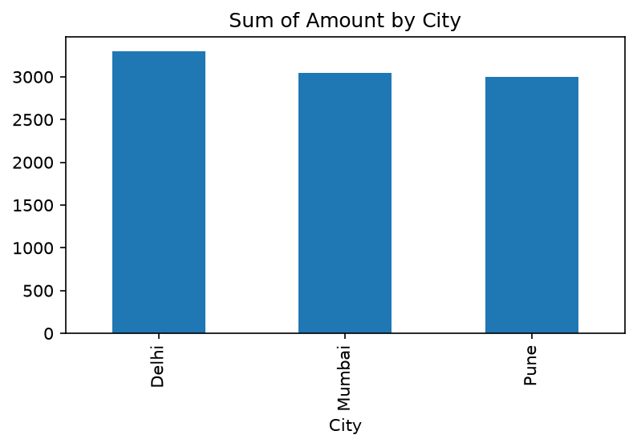
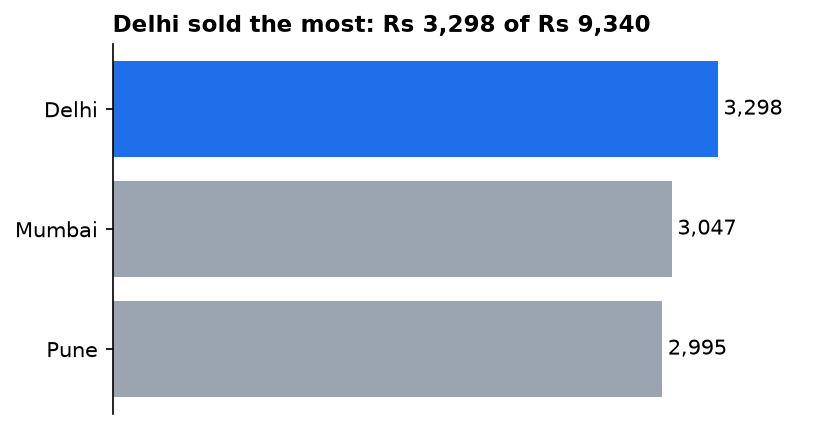
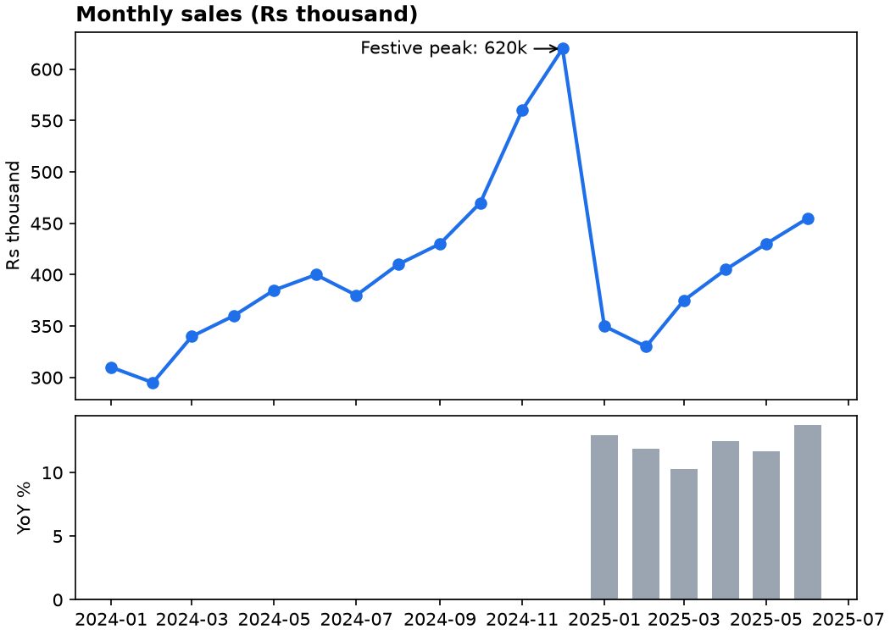
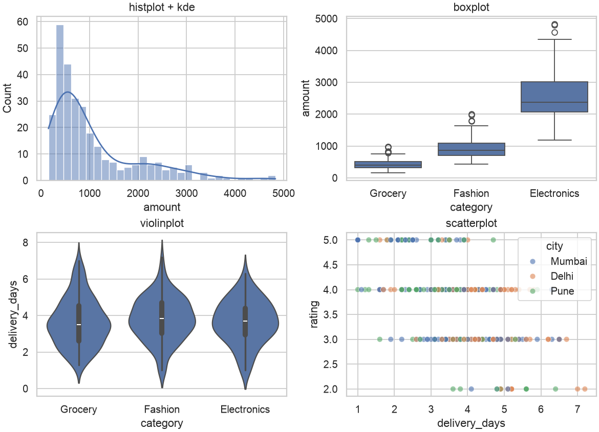
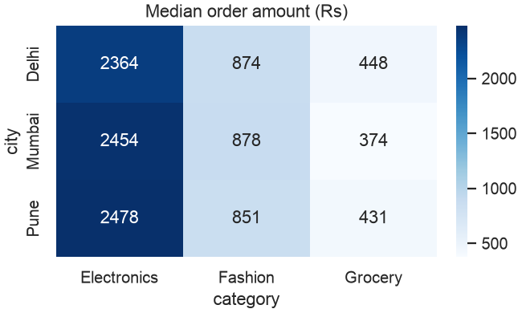

Data Analytics: Excel, pandas, Visualization, Power BI and Business Analytics
A practical mini-textbook for a working professional moving into data roles, taught with real numbers and real code.
Taught the IIT Professor Way — Real Numbers. Real Problems. Real Understanding.
A Note From Your Professor
Dear learner, you do not need a maths degree to become a data analyst. You need curiosity, care with numbers and a willingness to practise. A data analyst's work is this: find the number that matters, check that it is true, and explain what to do about it. This document will take you there, one tool at a time: Excel, pandas, charts, Power BI, business metrics, experiments and communication.
I will be honest about three things. First, the tools are the easy part. The hard parts are asking the right question, cleaning messy data without fooling yourself, and explaining results so that a busy manager acts on them. Second, most analysts are weak at statistics and storytelling, so if you become strong at both, you stand out. Third, you learn this by doing. Type every example, change the numbers, break the code and fix it.
The most important rule of this whole document: never move on until the current topic feels obvious. If a chapter feels foggy, stop, redo the worked examples with different numbers, and use the prompt pack to ask an AI tutor for more practice. One hour a day, kept for months, beats a weekend of cramming.
Excel, Power BI and DAX cannot run inside the environment where this book was written, so those chapters use small tables whose answers are verified by hand (and by pandas). All pandas, NumPy, SciPy and matplotlib output in the book is real output from code that was run.
What Every Topic Contains
- INTUITION: the everyday problem the idea solves, with an analogy.
- Formal definition: how it works, in plain words.
- Worked problems or examples with real numbers, every step shown, a Check and a plain-language interpretation (code chapters show the exact output).
- The picture: an ASCII diagram, table or chart.
- Connection to the real job: where it appears in analytics, data engineering, ML or AI work.
- Applications: domains that use it.
- COMMON MISTAKE: what beginners get wrong.
- Check yourself: three short questions with answers.
Every chapter ends with a recap (with a cheat-sheet table), a practice set (8 to 12 problems with answers, including interview-style ones) and a prompt pack (5 prompts to paste into any AI tutor).
Contents
- The Analytics Mindset and Process: question, data, analysis, decision; the four kinds of analytics; splitting a metric into parts.
- Excel Formulas in Depth: tables, logic, lookups, SUMIFS, text, dates, dynamic arrays, error auditing.
- Excel Analysis: PivotTables, conditional formatting, what-if tools and Solver, ToolPak statistics, charts, Power Query, Power Pivot, automation.
- pandas I: Series, DataFrames, reading and writing files, selecting data, data types.
- pandas II: cleaning, transforming, groupby, merge, reshape, time series.
- NumPy and Fast pandas: arrays, broadcasting, vectorisation, memory, Polars and DuckDB.
- Exploratory Data Analysis, Step by Step: a full worked EDA on a dataset you generate.
- Data Visualization: design principles, matplotlib, seaborn, plotly and friends.
- Power BI I: Power Query (M) and data modeling with star schemas.
- Power BI II: DAX, context, CALCULATE, iterators, time intelligence, patterns.
- Report Design, Governance and BI Tool Comparison: interactivity, row-level security, Service, Tableau, Looker Studio.
- Business Analytics: KPIs, funnels, cohorts, retention, churn, RFM, segmentation, domain cases.
- A/B Testing for Analysts: design, sample size, analysis, pitfalls.
- Storytelling and Stakeholder Communication: headline, evidence, recommendation; the analysis memo.
- Capstone Projects and the Analyst Interview Bank: portfolio projects and case questions.
- Project Lab I: Operations Analyzer, Sales Dashboard, Excel Dashboard
- Project Lab II: Marketing Attribution, P&L Variance, Product Funnel
An appendix, 99_cheatsheet.md, collects the key formulas and commands with an honest closing note.
How To Study This Document
Use this loop for every chapter:
- Build first. Type the first example and get it working before reading the theory.
- Ask. Use the prompt pack to ask an AI tutor about anything unclear. Always ask it to show a small example you can check by hand.
- Just-in-time theory. Read the explanation only for the part you are using now.
- Rebuild. Close the chapter and redo the example from memory with different numbers or your own data (a spreadsheet of your own shopping, travel or exam records makes a great dataset).
- Teach. Explain it aloud, or write three lines for a friend. If you cannot, you do not yet own it.
Suggested pace: one chapter per week at about one hour a day (15 chapters, about 15 weeks). Chapters 2, 3 and 6 can run a little longer. Spend a full day on the practice set. Keep a notebook of mistakes and re-read it every Sunday.
How to use the prompt packs. Paste a prompt into any AI assistant, then work with it as a tutor. Use the "review my work" prompt after you finish a practice problem. Use the mock interview prompt in the last two days of a chapter. Never accept a number from the AI that you have not checked by hand or by running code.
Prerequisites
- Basic Python (variables, lists, dictionaries, functions, loops). See the learner's programming document.
- School-level maths: percentages, averages, simple algebra. Statistics is explained from scratch where needed.
- Basic SQL helps a lot. SQL for analytics has its own document; we cross-reference it rather than repeat it.
- The learner's Math PDF is useful for the statistics and linear algebra background.
Tools you need
All are free (except Excel and Power BI Desktop, which are free to try or free on Windows respectively; free alternatives are named).
- Python 3.10 or newer with
pandas,numpy,matplotlib,seaborn,scipy,openpyxl(install withpip install pandas numpy matplotlib seaborn scipy openpyxl). Optional:plotly,polars,duckdb,pyarrow,statsmodels. - Jupyter Notebook or VS Code to run notebooks.
- Microsoft Excel (365 or 2021 or later for dynamic arrays), or Google Sheets / LibreOffice Calc for practice (some function names differ).
- Power BI Desktop (free download, Windows only), or the free web versions of Looker Studio and Metabase for similar practice.
- A text editor and Git for versioning notebooks and SQL.
Imagine your manager walks to your desk and says, "Sales feel slow. Can you look into it?" Nobody has told you which sales, which period, slow compared to what, or what anybody will do with your answer. A weak analyst opens a spreadsheet and starts making charts. A strong analyst asks four questions, finds the one number that matters, and comes back with a recommendation. This chapter teaches you the strong way. You will learn the four kinds of analytics, the five-step process every analysis follows, and a simple trick (splitting a number into its parts) that solves a surprising share of real business questions. By the end you will be able to take a fuzzy request and turn it into a clear, answerable question. The later chapters give you the tools (Excel, pandas, Power BI). This chapter gives you the thinking that makes the tools useful.
Throughout the book we reuse one running story: an online shop in India that sells electronics, fashion, grocery and home items. You will see its orders again and again.
1.1 What an Analyst Actually Does
Words you need first
| Word | Plain meaning | Example |
|---|---|---|
| Data | Recorded facts, usually in rows and columns | One row per order |
| Metric | A number that measures something | Revenue this month |
| KPI | Key Performance Indicator: a metric the business watches closely | Monthly active users |
| Dimension | A way to slice a metric | City, category, month |
| Grain | What one row of a table represents | One row = one order line |
| Insight | A finding that changes what someone will do | "Returns are 10% in fashion, only 4% in home" |
How it works. An analysis is useful only if it ends in a decision. A chart that nobody acts on is decoration. So every piece of work you do has a decision owner (the person who will act) and a decision (what they will choose between).
Real-world mapping
| Item | Example value | Where it appears in the job |
|---|---|---|
| Decision owner | Head of Marketing | Writing the first line of every memo |
| Decision | "Keep or cut the Instagram ads budget" | Defining scope before touching data |
| Metric | Return on ad spend (ROAS) | Dashboards, weekly reviews |
| Dimension | Channel | Pivot table rows, GROUP BY |
Worked problem 1.1.1 A report says "Revenue: Rs 4,50,000". Is this an insight?
- Formula Insight = number + comparison + implication
- Plug in Number: 450000. Comparison: none given. Implication: none given.
- Compute Without a comparison we cannot say if 450000 is good. Suppose last month was 500000. Change = (450000 − 500000) / 500000 = −0.10.
- Answer "Revenue is Rs 4,50,000" is only a fact. "Revenue fell 10% from last month" is closer to an insight, and it becomes one once you add why and what to do.
- Check 500000 × 0.90 = 450000, so a 10% fall is right.
- Why it matters Numbers alone do not move people. Comparisons do.
Worked problem 1.1.2 Turn "Sales feel slow" into a measurable question.
- Step 1 Which sales? Choose revenue from delivered orders (not cancelled).
- Step 2 Slow compared to what? Choose the same weeks last year and the previous four weeks.
- Step 3 Slow where? List the dimensions to check: city, category, channel, new vs repeat customers.
- Answer "Did delivered-order revenue per week over the last 4 weeks fall against the prior 4 weeks and against the same weeks last year, and in which city, category or channel is the fall concentrated?"
- Check Could two analysts run this question and get the same number? Yes, because every term is defined.
The picture
Fuzzy request ──> Sharp question ──> Data ──> Analysis ──> Decision
"Sales feel slow" "Which segment tables compare, "Pause ads in
lost revenue?" split city X"Connection to the real job. In interviews you will be given a fuzzy case ("orders dropped, why?"). The interviewer is testing whether you ask for definitions before computing. See Chapter 15.
Applications
- Data Analytics: weekly business reviews, ad hoc questions from managers.
- Data Science: framing a prediction problem (what exactly are we predicting?).
- Data Engineering: agreeing on metric definitions before building tables.
- Product: deciding which feature to build next.
Check yourself
- Is "Average order value is Rs 500" an insight? Answer: Not by itself. It has no comparison and no implication.
- What is the grain of a table with one row per order item? Answer: One order item (an order line).
- Who must you name before starting? Answer: The decision owner, and the decision.
1.2 The Four Kinds of Analytics
| Level | Question | Typical tools | Example in the shop |
|---|---|---|---|
| Descriptive | What happened? | Dashboards, pivot tables, SQL GROUP BY | Revenue was Rs 1.0 million in 2025 |
| Diagnostic | Why did it happen? | Slicing, comparisons, funnels, tests | Revenue fell because grocery orders fell in Delhi |
| Predictive | What will happen? | Forecasts, regression, ML models | Next month's revenue is likely Rs 950,000 +/- 8% |
| Prescriptive | What should we do? | Optimisation, experiments, scenario analysis | Move Rs 2 lakh of ad budget from channel A to B |
How it works. Each level builds on the one before. You cannot explain (diagnostic) what you have not described. You cannot predict well what you do not understand. Most analyst jobs are 70% descriptive and diagnostic. Predictive work (a forecast, a model) is shared with data scientists. Prescriptive work often needs an experiment (Chapter 13).
Worked problem 1.2.1 Classify each sentence: (a) "Churn was 6% in March." (b) "Churn rose because the delivery delay grew from 2 to 5 days." (c) "At this trend, churn will be 8% in June." (d) "Offer free delivery above Rs 499 to cut churn."
- Step 1 (a) states a past number only: descriptive.
- Step 2 (b) gives a cause: diagnostic.
- Step 3 (c) projects forward: predictive.
- Step 4 (d) recommends an action: prescriptive.
- Answer (a) descriptive, (b) diagnostic, (c) predictive, (d) prescriptive.
- Check Cover the verb: describe, explain, forecast, recommend. Each sentence matches exactly one.
Worked problem 1.2.2 Your boss asks, "Will we hit Rs 12 lakh revenue in June?" Which level is it and what do you need?
- Step 1 "Will we" looks forward, so predictive.
- Step 2 You first need the descriptive history: monthly revenue for 12+ months. Suppose the last six months are 9.0, 9.4, 9.9, 10.1, 10.6, 11.0 (lakh).
- Step 3 Average monthly growth = (11.0 − 9.0) / 5 = 0.4 lakh per month (a straight-line guess; there are 5 gaps between 6 months).
- Step 4 If 11.0 is May, then June on the straight line is 11.0 + 0.4 = 11.4.
- Answer June is likely about 11.4 lakh, short of 12 by 0.6 lakh. A straight line is crude, so say "likely about 11.4 lakh; 12 needs something extra, such as a campaign".
- Check 11.0 + 0.4 = 11.4. Differences between consecutive months: 0.4, 0.5, 0.2, 0.5, 0.4, whose average is 2.0/5 = 0.4. Correct.
The picture
Value to business
^ prescriptive
| predictive *
| diagnostic *
| descriptive *
+-------------------------------------------> Difficulty / data neededConnection to the real job. Job titles hint at the level. "Reporting analyst" is mostly descriptive. "Business analyst" mixes descriptive and diagnostic. "Product analyst" adds experiments (prescriptive). "Data scientist" leans predictive.
Applications
- Finance: variance analysis (descriptive, diagnostic), budget forecast (predictive).
- Marketing: campaign report, then which channel to fund.
- Operations: stock-out report, then reorder-point model.
- Hospital operations: a monthly report of waiting times is descriptive; finding which clinic causes the longest waits is diagnostic; forecasting next winter's appointments is predictive.
Check yourself
- Which level answers "why"? Answer: Diagnostic.
- Which level is "recommend a discount"? Answer: Prescriptive.
- Is a forecast descriptive? Answer: No, it is predictive.
1.3 The Five-Step Analysis Process
The five steps
- Ask: define the question, the decision, the metric and the deadline.
- Get the data: find it, understand its grain, check it is complete.
- Prepare: clean it (Chapter 5), join tables, define columns.
- Analyse: describe, compare, find causes (Chapters 7, 12).
- Communicate: story, chart, recommendation (Chapter 14), then follow up on what happened.
Steps 2 and 3 usually take more than half of the time. This is normal, not a sign you are slow.
Words you need
| Word | Plain meaning |
|---|---|
| Hypothesis | A guess you can test, e.g. "Delhi grocery orders fell" |
| Data dictionary | A document listing each column, its meaning and units |
| Source of truth | The one table or system everyone agrees is correct |
| Assumption | Something you treat as true without proof; always write it down |
Questions to ask in step 1 (the SPARC checklist, a memory aid we use here)
- Scope: which products, regions, dates?
- Purpose: what decision depends on this?
- Audience: who reads it, how technical?
- Rules: how are the metrics defined (is a cancelled order a sale)?
- Clock: when is it needed?
Worked problem 1.3.1 Run the SPARC checklist on "How are our customers doing?"
- Step 1 Scope: ask "customers from which period, new or all?" Answer assumed: all customers who ordered in 2025.
- Step 2 Purpose: "doing" in what sense? Possible: spending, repeat buying, satisfaction. Agree: repeat buying.
- Step 3 Rules: "repeat customer" = at least 2 non-cancelled orders.
- Step 4 Compute with our running data (Chapter 7 builds it): 1,112 customers placed at least one non-cancelled order with an amount; the repeat rule is applied in Chapter 12.
- Answer The sharp question becomes: "What share of 2025 customers placed 2 or more non-cancelled orders?"
- Check The question names a period, a population, and a rule. A second analyst could reproduce it.
Worked problem 1.3.2 Time budget for a 10-hour analysis.
- Formula Time = ask + data + prepare + analyse + communicate
- Plug in A typical split is 10% + 20% + 35% + 20% + 15%
- Compute 0.10 × 10 = 1.0 h; 0.20 × 10 = 2.0 h; 0.35 × 10 = 3.5 h; 0.20 × 10 = 2.0 h; 0.15 × 10 = 1.5 h
- Answer 1.0 + 2.0 + 3.5 + 2.0 + 1.5 = 10.0 hours, of which 5.5 hours (55%) go to data and preparation.
- Check The percentages add to 100% (10 + 20 + 35 + 20 + 15).
- Why it matters If your plan has 80% on analysis, you will be late, because cleaning always grows.
The picture
ASK ─> GET DATA ─> PREPARE ─> ANALYSE ─> COMMUNICATE
^ │
└────────── new questions arrive ────────────┘The arrow back matters. Good analysis raises new questions. That is progress, not failure.
Connection to the real job. Your first week in a new team is mostly step 2: learning where data lives, which table is the source of truth, and which columns can be trusted.
Applications
- Analytics: every report, from a one-off query to a quarterly review.
- Data Science: the same loop, with modelling inside step 4.
- Data Engineering: step 2 and 3 become pipelines that run daily.
Check yourself
- Which step usually takes the most time? Answer: Preparing the data.
- What does the R in SPARC stand for? Answer: Rules (metric definitions).
- Why write assumptions down? Answer: So others can check and reproduce your work.
1.4 Decomposing a Metric (Your Most Useful Trick)
Formal idea. If metric M = A × B, then when A and B both change, the change in M can be split into the part due to A and the part due to B.
ΔM = (A₁ − A₀) × B₀ + A₁ × (B₁ − B₀)
effect of A effect of B(A₀, B₀ are the old values, A₁, B₁ the new.) This split is exact, with no leftover. The order of the two terms is a convention; the other order gives a slightly different split, but the same total.
Words you need. AOV = average order value = revenue / orders. ΔM means "change in M".
Worked problem 1.4.1 January: 250 orders, AOV Rs 400. February: 200 orders, AOV Rs 450. Why did revenue fall?
- Formula ΔRevenue = (orders₁ − orders₀) × AOV₀ + orders₁ × (AOV₁ − AOV₀)
- Plug in (200 − 250) × 400 + 200 × (450 − 400)
- Compute −50 × 400 = −20,000 and 200 × 50 = +10,000, total −10,000
- Answer Revenue fell Rs 10,000 (from 100,000 to 90,000). Fewer orders cost Rs 20,000, and a higher AOV gave back Rs 10,000.
- Check 250 × 400 = 100,000, 200 × 450 = 90,000, difference −10,000. Matches −20,000 + 10,000.
- Why it matters The problem is order count, not order size. Marketing (traffic, conversion) should look first, not pricing.
A deeper tree splits orders further: orders = visitors × conversion rate. Then revenue = visitors × conversion × AOV. Keep splitting until one branch explains the change.
Revenue
├── Orders
│ ├── Visitors (traffic)
│ └── Conversion rate
└── Average order value
├── Items per order
└── Price per itemWorked problem 1.4.2 January: 20,000 visitors, conversion 1.25%. February: 16,000 visitors, conversion 1.5%. Orders = visitors × conversion rate. What happened to orders and why?
- Formula Δorders = (visitors₁ − visitors₀) × conv₀ + visitors₁ × (conv₁ − conv₀)
- Plug in (16,000 − 20,000) × 0.0125 + 16,000 × (0.015 − 0.0125)
- Compute −4,000 × 0.0125 = −50, and 16,000 × 0.0025 = +40, total −10
- Answer Orders fell from 250 to 240. Less traffic cost 50 orders; better conversion won back 40.
- Check 20,000 × 0.0125 = 250 and 16,000 × 0.015 = 240, difference −10, which equals −50 + 40.
- Why it matters The checkout is doing better. The real problem is traffic, so look at traffic sources (a paused ad campaign?) and not at the checkout page.
The picture. Read the tree above top to bottom: each box equals the product of the boxes under it (or their sum, for additive splits such as revenue = Σ revenue by city). Walk down only the branch with the biggest change.
Connection to the real job. This is exactly how you answer "DAU dropped 10%, why?" (Chapter 15) and how a finance team does price-volume-mix analysis. Add it to every diagnostic.
Applications
- Marketing: spend × (clicks per rupee) × conversion × order value.
- Finance: price-volume-mix variance on revenue.
- Operations: output = machines × hours × rate.
- Queues (bank, clinic, checkout): customers served per minute = customers in the system / average time each spends in it (Little's law).
Check yourself
- If revenue = orders × AOV, orders +10%, AOV −10%, what is revenue change? Answer: 1.10 × 0.90 = 0.99, so −1%.
- Is the decomposition exact? Answer: Yes, the two effects add to the total change.
- What do you do when one branch explains most of the change? Answer: Split that branch further.
1.5 Reproducibility and the Toolbox Map
Rules of reproducible analysis
- Keep raw data untouched. Write cleaning as code or saved query steps, never as manual edits.
- Keep SQL and notebooks in version control (Git). The learner's data engineering and programming documents cover Git.
- Write a data dictionary and a short README: where data came from, date pulled, filters.
- Fix random seeds when sampling (
np.random.default_rng(42)). - Name files so order is obvious:
01_clean.ipynb,02_eda.ipynb.
Which tool when
| Need | Best tool | Why |
|---|---|---|
| Fast one-off, small data, shared with non-technical people | Excel | Everyone has it, immediate |
| Repeated report from changing files | Excel Power Query or pandas | Refresh in one click or one script |
| Big data in a warehouse | SQL (separate SQL document in this series) | Data stays where it is |
| Messy data, statistics, charts in one place | pandas in a notebook | Flexible, reproducible |
| Self-service dashboards for many users | Power BI | Model, security, sharing |
| Decisions on a change | A/B test | Only randomisation proves cause |
The loop in a bank branch. The same loop appears everywhere: question (can the branch handle Friday afternoons?), data (the queue ticket log), analysis (median and 90th-percentile waiting time, customers served per hour), decision (open a second counter or not). Averages also hide the few customers who wait very long. That habit (look at distributions, not only averages) is gold in analytics.
Worked problem 1.5.1 Why is the average misleading? Ten parcel delivery times (minutes): 100, 110, 105, 95, 100, 98, 102, 108, 97, 3000.
- Formula mean = sum / n; median = middle value after sorting
- Plug in sum = 100 + 110 + 105 + 95 + 100 + 98 + 102 + 108 + 97 + 3000
- Compute The first nine add to 915, plus 3000 gives 3915, mean = 391.5. Sorted: 95, 97, 98, 100, 100, 102, 105, 108, 110, 3000. The middle two are 100 and 102, median = 101.
- Answer The mean (391.5 minutes) is nearly four times the median (101 minutes) because of one outlier. The median describes the typical parcel, and a high percentile (the 99th) describes the tail.
- Check Python:
import statistics as s; s.mean(x)gives 391.5 ands.median(x)gives 101.0. - Why it matters The same trap exists in order amounts, salaries and session durations. Chapter 7 shows it with real data.
Worked problem 1.5.2 Decide the tool. A manager sends a 40 MB sales CSV each Monday and wants a summary with three charts every Monday.
- Step 1 The task repeats weekly, so avoid manual copy and paste.
- Step 2 40 MB is easy for Excel Power Query (Chapter 3) and for pandas (Chapter 5).
- Step 3 If the manager wants to open it and click slicers, choose Excel or Power BI. If you will mail a PDF, pandas plus matplotlib is fine.
- Answer Power Query in Excel (or pandas if the learner prefers code) with a refresh button, not hand-built pivots.
- Check Ask "if the CSV changes next week, how many manual steps do I redo?" Aim for zero or one.
Connection to the real job. Employers praise analysts whose work "can be rerun". It builds trust and saves hours.
Applications
- Analytics: monthly reports that rebuild automatically.
- Data Science: experiments others can rerun.
- Data Engineering: pipelines are reproducibility turned into software.
- MLOps: versioned data and code.
Check yourself
- Why keep raw data untouched? Answer: So you can always redo the analysis from the start.
- Which is better for the typical request, mean or median, when outliers exist? Answer: Median.
- Name one sign a task should be automated. Answer: It repeats regularly with the same steps.
Chapter recap
- Analytics exists to support a decision. Name the decision owner and the decision first.
- Four levels: descriptive (what), diagnostic (why), predictive (what next), prescriptive (what to do).
- Five steps: ask, get data, prepare, analyse, communicate. Data and preparation take about half the time.
- A good question has a defined scope, purpose, audience, rules and deadline (SPARC).
- Split metrics into parts (revenue = orders × AOV) to find where a change comes from.
- Means hide outliers. Use medians and percentiles, as with delivery times or waiting times.
- Reproducible work (code, versioned files, data dictionary) builds trust.
- Choose the tool by the job: Excel for speed, pandas for flexibility, SQL for warehouses, Power BI for shared dashboards.
| Pattern | Formula or rule |
|---|---|
| Percent change | (new − old) / old × 100 |
| Metric split | ΔM = ΔA × B₀ + A₁ × ΔB |
| Insight | number + comparison + implication |
| Question checklist | Scope, Purpose, Audience, Rules, Clock |
Practice set
Problem 1 Revenue was Rs 80,000 last week and Rs 92,000 this week. What is the percent change?
Answer: (92,000 − 80,000) / 80,000 = 0.15, so +15%.
Problem 2 Classify: "Which customers are most likely to leave next month?"
Answer: Predictive.
Problem 3 Revenue = orders × AOV. March: 300 orders at Rs 500. April: 330 orders at Rs 450. Find the split of the change.
Answer: March 150,000, April 148,500, change −1,500. Orders effect = 30 × 500 = +15,000. AOV effect = 330 × (−50) = −16,500. Sum = −1,500. Order count helped, a lower AOV hurt more.
Problem 4 What is wrong with the question "Show me the best city"?
Answer: "Best" has no metric (revenue? growth? margin?), no period and no decision. Ask SPARC questions.
Problem 5 Data: 12, 14, 13, 15, 200. Compute the mean and the median.
Answer: Sum 254, mean 50.8. Sorted middle value is 14. The median (14) is typical; the mean is dragged up by 200.
Problem 6 Find the bug in the statement: "Conversion rose 20%, from 2% to 2.4%, so 20 percentage points."
Answer: The change is 0.4 percentage points, which is a 20% relative rise. Mixing percent and percentage points is a common error.
Problem 7 Visitors 10,000 → 12,000, conversion 3% → 2.5%. Did orders go up or down?
Answer: Before 300, after 12,000 × 0.025 = 300. No change in orders. Visitor effect +2,000 × 0.03 = +60, conversion effect 12,000 × (−0.005) = −60.
Problem 8 Scenario: you are asked to "improve the dashboard". What do you ask first?
Answer: Who uses it, what decision it supports, what is wrong now (slow, wrong numbers, unreadable), and how success will be measured.
Problem 9 (interview) "Orders fell 20% last week. What is your first move?"
Answer: Confirm it is real (data pipeline, duplicates, tracking change), compare to the same week last year to remove seasonality, then decompose orders into visitors × conversion and slice by channel, city and device.
Problem 10 (interview) "How do you decide what to analyse when you have a big dataset and a vague brief?"
Answer: Go back to the decision owner, agree one decision and one metric, write the question in one sentence, confirm definitions, and only then open the data.
Prompt pack
You are my patient, practical professor. I am a working professional in India moving into data roles, and English is my second language, so use simple words. Teach me Chapter 1 topic: the four types of analytics (descriptive, diagnostic, predictive, prescriptive) and the five-step analysis process. Explain each with an everyday analogy, then with an example from an online shop. After every part, ask me one question and wait for my answer before continuing. Correct me gently and explain why.
You are my patient, practical professor. I am a working professional moving into data roles. Give me 8 graded exercises, easy to hard, on decomposing a metric into parts (for example revenue = orders × average order value, and orders = visitors × conversion). Use realistic Indian e-commerce numbers. Do not give solutions yet. After I answer, I will paste my work and you will check every step and every number.
You are my patient, practical professor. I am a working professional moving into data roles. Quiz me one question at a time on turning vague business requests into sharp analytics questions (scope, purpose, audience, rules, clock). Start with an easy request like "How are customers doing?" and make each next request harder. Give feedback after each answer and say what a strong analyst would have asked.
You are my patient, practical professor. I am a working professional moving into data roles. Review my work on this task: I was asked a vague business question and I wrote it as a sharp question, a list of metrics with definitions, and a list of assumptions. Check whether it is precise, reproducible and tied to a decision. List gaps and rewrite one weak part. My work: [PASTE HERE]
You are my patient, practical professor. I am a working professional moving into data roles. Run a mock interview with me on analytics fundamentals: types of analytics, the analysis process, why means mislead, and metric decomposition. Ask six questions one at a time, increasing in difficulty. After each answer, score me from 1 to 5, show a model answer in simple English, and tell me one thing to practise.
Most business data still lives in Excel files, and most analyst interviews start with an Excel test. The test is rarely hard. It checks whether you can find a value in another table, count rows that meet two conditions, clean a messy text column, and build a monthly summary without copying and pasting. In this chapter you learn the formulas that do those jobs, and you learn them with a small sales table whose answers we check by hand (and by pandas) so you can trust every result. By the end you will write formulas confidently, read other people's formulas, and know which modern function replaces which old one.
XLOOKUP, FILTER, LET and friends need Microsoft 365 or Excel 2021 or later. TEXTSPLIT, TAKE, DROP, VSTACK and HSTACK need a newer 365 build. Google Sheets has similar but not identical functions. If a formula shows #NAME?, your version lacks it.Our running table (called Sales, cells A1:H9; column H is a helper column Amount = Qty × Price)
| A OrderID | B Date | C City | D Category | E Qty | F Price | G Status | H Amount |
|---|---|---|---|---|---|---|---|
| 1001 | 2025-01-03 | Pune | Fashion | 2 | 499 | Delivered | 998 |
| 1002 | 2025-01-03 | Mumbai | Electronics | 1 | 1299 | Delivered | 1299 |
| 1003 | 2025-01-04 | Pune | Grocery | 3 | 199 | Returned | 597 |
| 1004 | 2025-01-05 | Delhi | Fashion | 1 | 799 | Delivered | 799 |
| 1005 | 2025-01-06 | Mumbai | Grocery | 5 | 90 | Cancelled | 450 |
| 1006 | 2025-01-07 | Mumbai | Fashion | 2 | 649 | Delivered | 1298 |
| 1007 | 2025-01-09 | Delhi | Electronics | 1 | 2499 | Delivered | 2499 |
| 1008 | 2025-01-10 | Pune | Fashion | 4 | 350 | Delivered | 1400 |
Row 1 holds headers, so the data is in rows 2 to 9.
2.1 Tables, References and Shortcuts
Formal definitions
| Term | Meaning | Example |
|---|---|---|
| Cell reference | Address of a cell | F2 |
| Relative reference | Shifts when copied | =E2*F2 copied down becomes =E3*F3 |
| Absolute reference | Fixed with $, does not shift | =$J$1*H2 always points to J1 |
| Mixed reference | One part fixed | =$A2 or =B$1 |
| Named range | A nickname for a range | TaxRate for $J$1 |
| Table | Range with a name and column names | Sales |
| Structured reference | Column name inside a Table | Sales[Qty], [@Qty] (this row) |
How to build the table. Click any cell in the data, press Ctrl+T, tick "My table has headers". In Table Design set the name to Sales. In H2 type =[@Qty]*[@Price]. Excel fills the whole column.
Useful shortcuts (Windows; on Mac many use Cmd instead of Ctrl)
| Shortcut | What it does |
|---|---|
| Ctrl+T | Make a Table |
| Ctrl+Arrow | Jump to the edge of data |
| Ctrl+Shift+Arrow | Select to the edge of data |
| F4 | Cycle $ on a reference while editing |
| Ctrl+` (backtick) | Show formulas instead of values |
| Alt+= | AutoSum |
| Ctrl+Shift+L | Toggle filters |
| F2 | Edit the cell |
| Ctrl+Z / Ctrl+Y | Undo / redo |
Worked example 2.1.1 Add a tax column using an absolute reference. Put the tax rate 18% in J1 and name it TaxRate.
- Formula Tax = Amount × TaxRate
- Plug in In I2 type
=H2*$J$1(or=H2*TaxRate), then fill down. - Compute Row 2: 998 × 0.18 = 179.64. Row 3: 1299 × 0.18 = 233.82.
- Answer I2 shows 179.64 and I3 shows 233.82.
- Check Without
$, filling down makes I3 become=H3*J2, which points at an empty cell and returns 0. That tells you the$is needed. - Why it matters Changing J1 once updates every row. That is how models stay flexible.
Worked example 2.1.2 The same formula with a Table and structured references.
- Step 1 Make
Salesa Table. - Step 2 In a new column named
Taxtype=[@Amount]*TaxRate. - Step 3 Add a new row at the bottom of the Table.
- Answer The formula fills itself for the new row. A total anywhere can be
=SUM(Sales[Amount]), and it always covers every row, including future ones. For our data it returns 9,340 (998 + 1299 + 597 + 799 + 450 + 1298 + 2499 + 1400). - Check Add by hand in steps: 998 + 1299 = 2297; + 597 = 2894; + 799 = 3693; + 450 = 4143; + 1298 = 5441; + 2499 = 7940; + 1400 = 9340. It matches the formula. (Section 2.3 uses the Delivered-only total, 8,293.)
- Why it matters Always do the sanity add. Trusting a number you never checked is how reports go wrong.
The picture
Range: =SUM(H2:H9) <- break if you add row 10
Table: =SUM(Sales[Amount]) <- grows with the dataConnection to the real job. Tables are the foundation for PivotTables and Power Query (Chapter 3), and structured references read like English in code review.
Applications
- Analytics: monthly reports that gain rows every month.
- Finance: models with one input cell (named range) that drives hundreds of formulas.
- Operations: trackers where rows are added daily.
$ when a formula points at a constant (tax rate, exchange rate). Fill down and the reference drifts. Press F4 while the cursor is in the reference.Check yourself
- What does
$J$1mean? Answer: Column J and row 1 are both fixed, so copying does not move the reference. - What is
[@Qty]? Answer: The Qty value in the current row of the Table. - Why prefer
SUM(Sales[Amount])overSUM(H2:H9)? Answer: It grows automatically when rows are added.
2.2 Logical and Lookup Functions
Logical functions
| Function | Syntax | Meaning |
|---|---|---|
IF | =IF(test, if_true, if_false) | One decision |
IFS | =IFS(test1, v1, test2, v2, ..., TRUE, default) | Several decisions in order |
AND, OR, NOT | =AND(a, b) | Combine tests |
IFERROR | =IFERROR(value, if_error) | Replace an error |
SWITCH | =SWITCH(expr, v1, r1, v2, r2, default) | Match one value to many results |
Worked example 2.2.1 Label each order: Big if Amount is above 1000, Medium if 500 to 1000, else Small.
- Formula
=IFS(H2>1000,"Big", H2>=500,"Medium", TRUE,"Small") - Plug in Row 2: H2 = 998. First test 998 > 1000 is FALSE. Second test 998 >= 500 is TRUE.
- Compute Row 2 gives
Medium. Row 3 (1299) givesBig. Row 5 (450) falls through toTRUEand givesSmall. - Answer The labels for rows 2 to 9 are Medium, Big, Medium, Medium, Small, Big, Big, Big.
- Check Amounts 998, 1299, 597, 799, 450, 1298, 2499, 1400. Above 1000: 1299, 1298, 2499, 1400 (four Big). 450 is below 500 (one Small). The other three are Medium. Matches.
- Why it matters
IFStests in order, so order the conditions from most to least strict. The finalTRUEis the catch-all. Without it, rows with no match give#N/A.
Worked example 2.2.2 Flag orders that need attention: Status is Returned OR Amount above 2000.
- Formula
=IF(OR(G2="Returned", H2>2000), "Review", "OK") - Compute Row 4 (1003) is Returned: Review. Row 8 (1007) has Amount 2499: Review. All others: OK.
- Answer Two orders, 1003 and 1007, are flagged.
- Check Scan the Status column: only one Returned. Scan Amount: only 2499 exceeds 2000.
Lookup functions
| Function | Syntax | Notes |
|---|---|---|
XLOOKUP | =XLOOKUP(value, lookup_range, return_range, [not_found], [match_mode], [search_mode]) | Modern; looks left or right; default exact match |
XMATCH | =XMATCH(value, range, [match_mode], [search_mode]) | Returns the position |
VLOOKUP | =VLOOKUP(value, table, col_index, [exact: FALSE]) | Old; looks only to the right |
HLOOKUP | =HLOOKUP(value, table, row_index, [exact]) | Same but across a row |
INDEX + MATCH | =INDEX(return_range, MATCH(value, lookup_range, 0)) | Works in all versions |
Add a small table Tax in L1:M4:
| L Category | M Rate |
|---|---|
| Fashion | 12% |
| Electronics | 18% |
| Grocery | 5% |
Worked example 2.2.3 Look up the tax rate of each order's category.
- Formula
=XLOOKUP(D2, $L$2:$L$4, $M$2:$M$4, "Not found") - Plug in Row 2: D2 is
Fashion. FindFashionin L2:L4. It is in position 1. - Compute Return the 1st value of M2:M4, which is 12%.
- Answer Row 2 gets 12%. Row 3 (Electronics) gets 18%. Row 4 (Grocery) gets 5%.
- Check Same with the old way:
=VLOOKUP(D2,$L$2:$M$4,2,FALSE)returns 12%. And=INDEX($M$2:$M$4,MATCH(D2,$L$2:$L$4,0))also returns 12%. All three agree. - Why it matters The
FALSE(exact match) inVLOOKUPis vital. Leave it out and Excel does an approximate match that silently returns wrong values on unsorted data.
Approximate match (bands). Sometimes you want "which band does this value fall into?". Put the band starts in sorted order: P2:P4 = 0, 500, 1000 and labels Q2:Q4 = Small, Medium, Big.
Worked example 2.2.4 Find the band for an amount of 998.
- Formula
=XLOOKUP(998, P2:P4, Q2:Q4, , -1)(match mode-1means "exact or next smaller") - Plug in 998 is not in the list. The next smaller value is 500.
- Compute 500 is in position 2, so return
Medium. - Answer
Medium. - Check
=VLOOKUP(998,P2:Q4,2,TRUE)also givesMedium. For 1299 both giveBig(next smaller is 1000). - Why it matters Bands are used for age groups, tax slabs and discount tiers.
Protect against missing keys. =IFERROR(XLOOKUP(...), 0) hides every error, including real bugs. Prefer the built-in fourth argument of XLOOKUP ("Not found"), which only covers a missing key.
The picture
Orders (D) Tax (L:M)
Fashion ───► Fashion 12% <- XLOOKUP finds row, returns M
Grocery ───► Electronics 18%
Grocery 5%Connection to the real job. In SQL this is a JOIN. In pandas it is merge (Chapter 5). In Power BI it is a relationship (Chapter 9). Excel lookup is where most analysts first meet the idea of joining tables.
Applications
- Finance: map account codes to account names.
- HR: map employee ID to department.
- Retail: map product ID to price or category.
- Operations: map SKU to supplier.
Fashion row with a different rate gives a silent wrong answer. Check uniqueness with =COUNTIF(L:L, L2) or =UNIQUE.Check yourself
- Which has a final catch-all in IFS? Answer: A test of
TRUE. - What is the problem with
VLOOKUPwithout the fourth argument? Answer: It defaults to approximate match and may return wrong values. - What does match mode
-1do in XLOOKUP? Answer: Exact match, else the next smaller item.
2.3 Math and Statistical Functions
Core functions
| Function | Syntax | Plain meaning |
|---|---|---|
SUMIFS | =SUMIFS(sum_range, crit_range1, crit1, crit_range2, crit2) | Sum where all conditions hold |
COUNTIFS | =COUNTIFS(range1, crit1, range2, crit2) | Count rows meeting all conditions |
AVERAGEIFS | =AVERAGEIFS(avg_range, crit_range1, crit1, ...) | Average with conditions |
LARGE, SMALL | =LARGE(range, k) | k-th biggest or smallest |
RANK.EQ | =RANK.EQ(value, range, [0 desc]) | Position in a sort |
SUMPRODUCT | =SUMPRODUCT(array1, array2, ...) | Multiply row by row, then add |
MEDIAN, STDEV.S | =MEDIAN(range) | Middle value; sample standard deviation |
PERCENTILE.INC | =PERCENTILE.INC(range, k) | k between 0 and 1 |
CORREL | =CORREL(x, y) | Correlation, from −1 to 1 |
FORECAST.LINEAR | =FORECAST.LINEAR(x, known_y, known_x) | Straight-line prediction |
ROUND | =ROUND(number, digits) | Round half away from zero |
In SUMIFS, the sum range comes first. In the older SUMIF it comes last. This difference trips many people.
Worked example 2.3.1 Total Delivered revenue.
- Formula
=SUMIFS(H2:H9, G2:G9, "Delivered") - Plug in Delivered rows: 998, 1299, 799, 1298, 2499, 1400.
- Compute 998 + 1299 = 2297; + 799 = 3096; + 1298 = 4394; + 2499 = 6893; + 1400 = 8293.
- Answer 8,293 rupees.
- Check Total of all rows is 9,340. Remove Returned 597 and Cancelled 450: 9,340 − 1,047 = 8,293. Matches.
Worked example 2.3.2 Delivered revenue in Mumbai, and number of Delivered Mumbai orders.
- Formula
=SUMIFS(H2:H9, C2:C9, "Mumbai", G2:G9, "Delivered")and=COUNTIFS(C2:C9, "Mumbai", G2:G9, "Delivered") - Plug in Mumbai rows: 1002 (Delivered, 1299), 1005 (Cancelled, 450), 1006 (Delivered, 1298).
- Compute Delivered only: 1299 + 1298 = 2597, and count = 2.
- Answer Rs 2,597 from 2 orders.
- Check Average order value = 2597 / 2 = 1298.5. The formula
=AVERAGEIFS(H2:H9, C2:C9, "Mumbai", G2:G9, "Delivered")returns 1298.5.
Worked example 2.3.3 Weighted average price per unit with SUMPRODUCT.
- Formula
=SUMPRODUCT(E2:E9, F2:F9) / SUM(E2:E9) - Plug in Numerator = 998 + 1299 + 597 + 799 + 450 + 1298 + 2499 + 1400 = 9340. Quantities: 2 + 1 + 3 + 1 + 5 + 2 + 1 + 4 = 19.
- Compute 9340 / 19 = 491.58 (rounded to 2 decimals).
- Answer The average price per unit sold is Rs 491.58.
- Check A plain
AVERAGE(F2:F9)gives 798, which ignores how many units sold at each price and so is the wrong tool here. - Why it matters Whenever rows have different weights (quantity, users, hours), a simple average lies.
SUMPRODUCT also counts with conditions: =SUMPRODUCT((C2:C9="Pune")*(E2:E9)*(F2:F9)) equals Pune revenue 998 + 597 + 1400 = 2,995.
Statistics on the Amount column. Amounts sorted: 450, 597, 799, 998, 1298, 1299, 1400, 2499.
| Formula | Result | How |
|---|---|---|
=MEDIAN(H2:H9) | 1148 | Middle two are 998 and 1298; average = 1148 |
=LARGE(H2:H9, 2) | 1400 | Second largest |
=SMALL(H2:H9, 1) | 450 | Smallest |
=RANK.EQ(1299, H2:H9) | 3 | 2499 is 1st, 1400 is 2nd, 1299 is 3rd |
=PERCENTILE.INC(H2:H9, 0.9) | 1729.7 | Position = 0.9 × (8 − 1) = 6.3, so between the 7th value 1400 and the 8th value 2499: 1400 + 0.3 × 1099 |
=STDEV.S(H2:H9) | 639.87 | Sample standard deviation (verified with pandas) |
=CORREL(E2:E9, F2:F9) | −0.7033 | Bigger quantities go with lower prices here |
Worked example 2.3.4 Forecast the next day with FORECAST.LINEAR. Known days 1 to 5 had orders 10, 12, 15, 19, 21. Predict day 6.
- Formula Fit y = a + b × x. b = Σ(x − x̄)(y − ȳ) / Σ(x − x̄)².
- Plug in x̄ = 3, ȳ = 15.4. Σ(x − x̄)(y − ȳ) = (−2)(−5.4) + (−1)(−3.4) + 0 + (1)(3.6) + (2)(5.6) = 10.8 + 3.4 + 0 + 3.6 + 11.2 = 29. Σ(x − x̄)² = 4 + 1 + 0 + 1 + 4 = 10.
- Compute b = 29 / 10 = 2.9. a = 15.4 − 2.9 × 3 = 6.7. Day 6: 6.7 + 2.9 × 6 = 24.1.
- Answer
=FORECAST.LINEAR(6, B2:B6, A2:A6)returns 24.1 orders. - Check numpy
polyfitgives slope 2.9 and intercept 6.7. - Interpretation Orders grew about 2.9 per day. A straight line over five points is a rough guess; do not forecast months ahead from five points.
The picture
SUMIFS( what to add , where to look , what to match )
H2:H9 G2:G9 "Delivered"Connection to the real job. These are the building blocks of KPI tables in finance and sales reports. In SQL, SUMIFS is SUM(...) WHERE ... GROUP BY. In pandas it is df.loc[mask].groupby(...).
Applications
- Sales: revenue by region and month in a fixed report grid.
- Finance: budget vs actual with
SUMIFSby cost centre. - Operations: count of tickets meeting an SLA.
- HR: average salary by grade.
">1000" in quotes, and to reference a cell write ">"&K1. Forgetting the quotes or the & gives zero or errors.Check yourself
- Which comes first in
SUMIFS, the sum range or the criteria? Answer: The sum range. - When is
SUMPRODUCTbetter thanAVERAGE? Answer: When rows have different weights. - What does
CORRELnear −1 mean? Answer: When one rises, the other falls, almost in a straight line.
2.4 Text and Date Functions
Text functions
| Function | Example | Result |
|---|---|---|
LEFT(text, n) | =LEFT("PUN-2025-0042", 3) | PUN |
RIGHT(text, n) | =RIGHT("PUN-2025-0042", 4) | 0042 |
MID(text, start, n) | =MID("PUN-2025-0042", 5, 4) | 2025 |
LEN(text) | =LEN("PUN-2025-0042") | 13 |
FIND(find, in) (case sensitive) | =FIND("-", "PUN-2025-0042") | 4 |
SEARCH(find, in) (not case sensitive, allows wildcards) | =SEARCH("pun", "PUN-2025-0042") | 1 |
SUBSTITUTE(text, old, new) | =SUBSTITUTE("PUN-2025-0042", "-", "") | PUN20250042 |
TRIM(text) | =TRIM(" a b ") | a b |
UPPER, LOWER, PROPER | =PROPER("pune CITY") | Pune City |
TEXTJOIN(delim, ignore_empty, ...) | =TEXTJOIN(", ", TRUE, "a", "", "c") | a, c |
TEXTSPLIT(text, col_delim) | =TEXTSPLIT("PUN-2025-0042", "-") | three cells: PUN, 2025, 0042 |
Worked example 2.4.1 Clean a city column that holds " pune", "MUMBAI " and "Delhi".
- Formula
=PROPER(TRIM(A2)) - Plug in For
" pune",TRIMremoves the leading space giving"pune". - Compute
PROPER("pune")givesPune. For"MUMBAI ": TRIM gives"MUMBAI", PROPER givesMumbai. - Answer All three become
Pune,Mumbai,Delhi. - Check
=LEN(A2)before is 5 for" pune"(5 characters including the space) and=LEN(PROPER(TRIM(A2)))after is 4. - Why it matters Without this, a lookup of
"Pune"fails on"Pune ", and a PivotTable shows two rows for the same city.
Worked example 2.4.2 Extract the year and the serial number from the ID PUN-2025-0042, as a number.
- Formula Year:
=VALUE(MID(A2, FIND("-", A2)+1, 4)). Serial:=VALUE(RIGHT(A2, 4)). - Plug in
FIND("-", A2)is 4, soMID(A2, 5, 4)is2025. - Compute
VALUE("2025")= 2025.RIGHT(A2, 4)=0042, andVALUE("0042")= 42. - Answer Year 2025, serial 42.
- Check Count positions: P(1) U(2) N(3) -(4) 2(5) 0(6) 2(7) 5(8). Characters 5 to 8 are 2025.
Date functions. Excel stores a date as a number: the count of days since 1 January 1900 (with a quirk for 1900 that you can ignore). So date + 7 is a week later. Format the cell as Date to see it.
| Function | Meaning | Example and result |
|---|---|---|
TODAY() | Today's date | changes daily |
DATE(y, m, d) | Build a date | =DATE(2025,1,31) |
EDATE(date, n) | Same day n months later | =EDATE(DATE(2025,1,31), 1) gives 28 Feb 2025 |
EOMONTH(date, n) | Last day of the month n months away | =EOMONTH(DATE(2025,1,15), 0) gives 31 Jan 2025 |
DATEDIF(start, end, unit) | Complete years ("y"), months ("m") or days ("d") | =DATEDIF(DATE(2025,1,15), DATE(2025,3,10), "m") gives 1 |
NETWORKDAYS(start, end) | Working days (Mon to Fri) including both ends | =NETWORKDAYS(DATE(2025,1,6), DATE(2025,1,10)) gives 5 |
WEEKDAY(date) | 1 = Sunday ... 7 = Saturday (default) | 3 Jan 2025 is a Friday, so 6 |
TEXT(date, "ddd") | Format as text | Fri |
DATEDIF exists in Excel but is not listed in the function wizard. It is undocumented in the menus, but it works.
Worked example 2.4.3 How many days and complete months between 15 January 2025 and 10 March 2025?
- Compute (days) January 15 to January 31 is 16 days, February has 28 days (2025 is not a leap year), then 10 days into March: 16 + 28 + 10 = 54.
- Compute (months) 15 Jan to 15 Mar would be 2 full months, but we stop on 10 March, five days short, so 1 complete month.
- Answer
=DATEDIF(DATE(2025,1,15),DATE(2025,3,10),"d")is 54 and with"m"it is 1. Also=DATE(2025,3,10)-DATE(2025,1,15)is 54. - Check Count: Jan 15 + 54 days: Jan 15 + 16 = Jan 31, + 28 = Feb 28, + 10 = Mar 10. Matches.
Worked example 2.4.4 Make a month key and weekday label for each order.
- Formula Month key:
=TEXT(B2, "yyyy-mm"). Weekday:=TEXT(B2, "ddd"). - Compute Row 2: B2 is 3 Jan 2025. Month key
2025-01. WeekdayFri. - Answer All eight orders have month key
2025-01. Weekdays for rows 2 to 9: Fri, Fri, Sat, Sun, Mon, Tue, Thu, Fri. - Check 1 Jan 2025 was a Wednesday, so 3 Jan is Friday, 4 Sat, 5 Sun, 6 Mon, 7 Tue, 9 Thu, 10 Fri. Matches.
- Why it matters Month keys let you group by month in a PivotTable or
SUMIFS.
The picture
"PUN-2025-0042"
1234567890123 LEFT(,3)="PUN" MID(,5,4)="2025" RIGHT(,4)="0042"
FIND("-")=4Connection to the real job. Cleaning text and dates is the first half of every analysis. The same steps in pandas are .str.strip().str.title() and pd.to_datetime (Chapter 5).
Applications
- Customer data: standardise names, cities, emails.
- Finance: month-end dates, due dates, ageing buckets.
- HR: tenure in years and months.
- Logistics: working days to deliver.
=B2+1 fails or gives #VALUE!. Convert with =DATEVALUE(B2) or use Data > Text to Columns, or better, import with Power Query (Chapter 3).Check yourself
- What does
EOMONTH(DATE(2025,2,10), 0)return? Answer: 28 Feb 2025. - Why does
TRIMmatter before a lookup? Answer: Extra spaces make two equal-looking values different. - What is the number behind a date? Answer: The count of days since the start date (1 Jan 1900).
2.5 Dynamic Array Functions
How it works. A formula that returns many values writes them into neighbouring cells. The first cell holds the formula. The blue border shows the spill range. Refer to the whole spill with #, as in E2#. If a cell in the way is not empty, you get #SPILL!.
The functions
| Function | Syntax | Does |
|---|---|---|
FILTER | =FILTER(array, include, [if_empty]) | Keep rows that meet a test |
SORT | =SORT(array, [sort_index], [order], [by_col]) | Sort (1 ascending, −1 descending) |
SORTBY | =SORTBY(array, by_array1, order1, ...) | Sort by another column |
UNIQUE | =UNIQUE(array, [by_col], [exactly_once]) | Distinct values |
SEQUENCE | =SEQUENCE(rows, [cols], [start], [step]) | Number grid |
LET | =LET(name1, value1, ..., calculation) | Name an intermediate result |
LAMBDA | =LAMBDA(x, y, calculation) | Your own function |
VSTACK, HSTACK | =VSTACK(array1, array2) | Stack tables vertically or side by side |
TAKE, DROP | =TAKE(array, rows, [cols]) | First or last n rows; remove rows |
Worked example 2.5.1 List the distinct categories and total Delivered revenue for each, without a PivotTable.
- Formula In K2:
=UNIQUE(D2:D9). In L2:=SUMIFS(H2:H9, D2:D9, K2#, G2:G9, "Delivered"). - Plug in
UNIQUElists values in order of first appearance: Fashion, Electronics, Grocery.K2#is that whole list. - Compute Fashion Delivered: 998 + 799 + 1298 + 1400 = 4495. Electronics Delivered: 1299 + 2499 = 3798. Grocery Delivered: none (1003 Returned, 1005 Cancelled), so 0.
- Answer The two spilled columns read Fashion 4495, Electronics 3798, Grocery 0.
- Check 4495 + 3798 + 0 = 8293, equal to the Delivered total from Example 2.3.1.
Worked example 2.5.2 Show only Mumbai Delivered orders, sorted by Amount, highest first, top 1.
- Formula
=TAKE(SORTBY(FILTER(A2:H9, (C2:C9="Mumbai")*(G2:G9="Delivered")), FILTER(H2:H9, (C2:C9="Mumbai")*(G2:G9="Delivered")), -1), 1) - Plug in The test multiplies two TRUE/FALSE columns. TRUE × TRUE = 1 keeps a row. Matching rows: 1002 (1299) and 1006 (1298).
- Compute Sorted high to low: 1002 first (1299), then 1006 (1298).
TAKE(...,1)keeps the first. - Answer One row: 1002, 2025-01-03, Mumbai, Electronics, 1, 1299, Delivered, 1299.
- Check
*means AND and+means OR inside these tests. Row 1005 is Mumbai but Cancelled, so 0 × 1 = 0 and it is dropped.
Long formulas like this repeat the same FILTER. LET fixes that.
Worked example 2.5.3 The same logic with LET, to compute the average Delivered amount.
- Formula
=LET(d, FILTER(H2:H9, G2:G9="Delivered"), SUM(d)/COUNT(d)) - Plug in
dbecomes the Delivered amounts: 998, 1299, 799, 1298, 2499, 1400 (six values). - Compute 8293 / 6 = 1382.17 (rounded).
- Answer The average Delivered order is Rs 1,382.17.
- Check
=AVERAGEIFS(H2:H9, G2:G9, "Delivered")returns the same.
LAMBDA. Create a reusable function. In Formulas > Name Manager, add a name AfterTax with the definition =LAMBDA(x, r, x*(1+r)). Then =AfterTax(1000, 0.18) returns 1180 (1000 × 1.18). Use LAMBDA for logic you repeat across workbooks.
Other quick examples (verified by hand)
| Formula | Result |
|---|---|
=SEQUENCE(3) | 1, 2, 3 down a column |
=SEQUENCE(2, 3) | Row 1: 1 2 3; row 2: 4 5 6 |
=TAKE(SORT(H2:H9, , -1), 3) | 2499, 1400, 1299 |
=DROP(SORT(H2:H9, , -1), 6) | 597, 450 (8 sorted values minus the first 6) |
The picture
=UNIQUE(D2:D9) K2: Fashion <- formula lives here
K3: Electronics <- spilled (grey, no formula)
K4: Grocery <- spilled
K2# means K2:K4, even if the list growsConnection to the real job. Dynamic arrays replace most helper columns and many PivotTables for small reports. They behave like SQL SELECT DISTINCT, WHERE, ORDER BY and LIMIT. If you know SQL (see the separate SQL document), you already know their logic.
Applications
- Reporting: dropdown lists that update when new categories appear.
- Dashboards: top-5 tables that refresh with data.
- Finance: lists of overdue invoices using
FILTER. - Data prep:
VSTACKto append monthly sheets before analysis.
AND(...) inside FILTER. AND returns a single TRUE or FALSE for the whole range. Use multiplication (a)*(b) for AND and addition (a)+(b) for OR to keep one answer per row.Check yourself
- What does
K2#mean? Answer: The full spill range that starts at K2. - How do you write "City is Pune OR Delhi" inside FILTER? Answer:
(C2:C9="Pune")+(C2:C9="Delhi"). - What causes
#SPILL!? Answer: Something non-empty blocks the cells where the result wants to go.
2.6 Error Handling and Auditing
Common errors
| Error | Meaning | Typical cause |
|---|---|---|
#N/A | Not available | Lookup did not find the key |
#VALUE! | Wrong type | Text where a number is needed |
#REF! | Bad reference | Deleted a row or column used by a formula |
#DIV/0! | Divide by zero | Empty denominator |
#NAME? | Unknown name | Typo, or function not in your version |
#SPILL! | Spill blocked | Cells in the way |
#NUM! | Invalid number | Impossible maths, e.g. root of a negative |
Information functions. =ISBLANK(A2) is TRUE for an empty cell. =ISERROR(A2) is TRUE for any error. =ISNUMBER(A2) checks that a value is a true number. =IFERROR(a, b) returns b when a is an error.
Auditing tools (Formulas tab)
- Trace Precedents: arrows to the cells a formula uses.
- Trace Dependents: arrows to the cells that use this cell.
- Evaluate Formula: step through a formula part by part.
- Show Formulas (Ctrl+`) and Error Checking.
- Watch Window: keep an eye on key cells while editing elsewhere.
Worked example 2.6.1 Avoid #DIV/0! in a return-rate formula.
- Formula
=IF(COUNTIFS(C2:C9, K2) = 0, "", COUNTIFS(C2:C9, K2, G2:G9, "Returned") / COUNTIFS(C2:C9, K2)) - Plug in For city Pune (K2): orders = 3 (rows 1001, 1003, 1008), returned = 1 (row 1003).
- Compute 1 / 3 = 0.3333.
- Answer Pune return rate is 33.3%. For a city with no orders, say Chennai, the formula returns an empty text instead of an error.
- Check Mumbai: orders 3, returned 0, rate 0%. Delhi: 2 orders, 0 returned, 0%.
- Interpretation The 33% is based on only 3 orders, so it is very noisy. Always show the count next to a rate.
Worked example 2.6.2 Find why a total looks wrong.
- Step 1 Suppose
=SUM(H2:H9)returns 8,743 but you expect 9,340. The gap is 597, which is exactly the amount in row 4 (order 1003). - Step 2 Use Trace Precedents and look at H4. It is left-aligned: the number was stored as text
"597", andSUMsilently skips text. - Step 3 Confirm with
=COUNT(H2:H9). It returns 7 instead of 8, becauseCOUNTalso skips text.=ISNUMBER(H4)returns FALSE. Fix it with=VALUE(H4)or re-import the data with correct types. - Answer The method: compare
COUNTwith the expected row count to detect text numbers, then repair at the source. - Check After repair
COUNTequals the row count and the total equals your hand sum.
The picture
Result wrong? ─► COUNT vs expected rows ─► Trace Precedents ─► Evaluate Formula
(text numbers?) (right cells?) (right step?)Connection to the real job. In pandas the equivalent checks are df.dtypes, df.isna().sum() and assert statements. A reviewer who sees you add an error check for blanks trusts your work more.
Applications
- Finance: month-end reconciliation, where a 600 rupee gap must be explained.
- Operations: dashboards that must not show
#N/Ato executives. - Audit and compliance: every formula must be traceable.
IFERROR(..., 0). It turns real problems (a missing lookup key) into silent zeros that feed totals. Use it only where an empty result is truly fine, and test for the specific case if you can.Check yourself
- What does
#REF!mean? Answer: A reference points to a deleted cell, row or column. - How can
COUNTexpose numbers stored as text? Answer:COUNTskips text, so it returns less than the number of rows. - Name two audit tools. Answer: Trace Precedents and Evaluate Formula.
Chapter recap
- Use a Table (Ctrl+T) and structured references so formulas grow with your data.
- Use
$when a formula points to a fixed cell, and F4 to add it. XLOOKUPreplacesVLOOKUP/HLOOKUP; always use exact match unless you want bands.SUMIFS,COUNTIFS,AVERAGEIFStake the value range first, then criteria pairs.SUMPRODUCTgives weighted sums and conditional counts without helper columns.- Clean text with
TRIM,PROPER,SUBSTITUTE; split withLEFT,MID,RIGHT,TEXTSPLIT. - Dates are numbers; use
EDATE,EOMONTH,DATEDIF,NETWORKDAYS,TEXT. - Dynamic arrays (
FILTER,UNIQUE,SORTBY,LET,LAMBDA) replace helper columns; use*for AND,+for OR. - Check totals by hand. Use
COUNTto detect text numbers.
| Need | Formula pattern |
|---|---|
| Conditional total | =SUMIFS(sum, crit_range, crit, ...) |
| Lookup | =XLOOKUP(key, keys, values, "Not found") |
| Band | =XLOOKUP(v, starts, labels, , -1) |
| Weighted average | =SUMPRODUCT(w, x)/SUM(w) |
| Unique list | =UNIQUE(range) |
| Filtered rows | =FILTER(table, (a)*(b)) |
| Month key | =TEXT(date, "yyyy-mm") |
Practice set
All questions use the Sales table from the start of this chapter.
Problem 1 What does =COUNTIFS(G2:G9, "Delivered") return?
Answer: 6 (rows 1001, 1002, 1004, 1006, 1007, 1008).
Problem 2 What does =SUMIFS(H2:H9, D2:D9, "Grocery") return?
Answer: 597 + 450 = 1,047.
Problem 3 Write a formula for the average Fashion Delivered amount and give its value.
Answer: =AVERAGEIFS(H2:H9, D2:D9, "Fashion", G2:G9, "Delivered"). Values 998, 799, 1298, 1400 sum to 4495. 4495 / 4 = 1123.75.
Problem 4 What is the output of =XLOOKUP(1004, A2:A9, C2:C9)?
Answer: Delhi. Order 1004 is in the 4th row of the data, and its city is Delhi.
Problem 5 Find the bug: =VLOOKUP(D2, L2:M4, 2) returns 18% for a Fashion order.
Answer: The fourth argument is missing, so Excel uses approximate match on an unsorted list and returns a wrong row. Use =VLOOKUP(D2, L2:M4, 2, FALSE) to get 12%.
Problem 6 What does =SUMPRODUCT((C2:C9="Delhi")*H2:H9) return?
Answer: Delhi rows: 799 and 2499. 799 + 2499 = 3,298.
Problem 7 What does =EDATE(DATE(2025,1,31), 1) return, and why not 31 February?
Answer: 28 February 2025. EDATE moves by months and caps at the last valid day of the target month.
Problem 8 Write one formula that returns the number of distinct cities.
Answer: =COUNTA(UNIQUE(C2:C9)). The distinct cities are Pune, Mumbai, Delhi, so the result is 3.
Problem 9 =NETWORKDAYS(DATE(2025,1,3), DATE(2025,1,10)) equals what?
Answer: 3 Jan (Fri), 6 to 10 Jan (Mon to Fri). That is 1 + 5 = 6 working days, both ends included.
Problem 10 (interview) A report has the same customer twice, as "Asha Rao" and "asha rao ". How do you merge them and keep the original data safe?
Answer: Add a helper column =PROPER(TRIM(A2)) (or in Power Query use Trim and Capitalize Each Word), then use that column for lookups and pivots. Never overwrite the raw column.
Problem 11 (interview) You must replace a sheet where each of 30,000 rows has VLOOKUP to a 5,000 row table and Excel is slow. What do you do?
Answer: Convert the ranges to Tables, use XLOOKUP with exact match on a unique key, avoid whole-column references, or move the join into Power Query (Chapter 3), where the merge happens once at refresh time, not on every recalculation.
Prompt pack
You are my patient, practical professor. I am a working professional in India moving into data roles, and English is my second language. Teach me Chapter 2 topic: Excel lookup functions (XLOOKUP, VLOOKUP, INDEX+MATCH, XMATCH) including exact versus approximate match. Use a tiny 6-row table with real numbers. Explain step by step what each formula does, ask me to predict results, and check my understanding after each part.
You are my patient, practical professor. I am a working professional moving into data roles. Give me 8 graded Excel exercises, easy to hard, on SUMIFS, COUNTIFS, AVERAGEIFS and SUMPRODUCT using a small sales table (OrderID, Date, City, Category, Qty, Price, Status). Do not give solutions. After I send my formulas I will ask you to check them and to explain any wrong result step by step.
You are my patient, practical professor. I am a working professional moving into data roles. Teach me Excel dynamic arrays: FILTER, UNIQUE, SORTBY, SEQUENCE, LET, LAMBDA, VSTACK, TAKE. Explain spill ranges and the # operator with an analogy. Show 5 examples on a small table, with expected results I can verify by hand. Then quiz me one question at a time.
You are my patient, practical professor. I am a working professional moving into data roles. Review my Excel formulas for correctness, readability and robustness (absolute references, error handling, duplicate keys, text numbers). Tell me what could silently give a wrong answer and suggest a better version. My formulas and sample data: [PASTE HERE]
You are my patient, practical professor. I am a working professional moving into data roles. Run a mock Excel interview of 8 practical questions (lookups, conditional sums, text cleaning, dates, dynamic arrays, error tracing). Ask one question at a time, wait for my formula, then tell me if it is right, explain why, and give the most modern alternative. End with a score and a study plan.
In Chapter 2 you wrote formulas one cell at a time. Real reporting asks for more: "show revenue by city and status, with a slicer, refreshed every Monday from a new CSV". The tools for that are PivotTables (summarise), Power Query (import and clean, repeatable) and Power Pivot (relate many tables and write measures). Together they are called the "real power" of Excel, and they use the same ideas as Power BI, which you meet in Chapters 9 and 10. By the end of this chapter you will know how to build a refreshable summary, use what-if tools to answer "what if the price changes", run a t-test inside Excel, and automate small jobs.
Sales table (see Chapter 2) and verified with pandas, and where code appears (M, VBA) it is standard and minimal but not executed here. The Python Excel examples (openpyxl) were run, and their real output is shown.We reuse the 8-row Sales table from Chapter 2. Its amounts are 998, 1299, 597, 799, 450, 1298, 2499, 1400 and the total is 9,340.
3.1 PivotTables and PivotCharts
Words you need
| Term | Meaning |
|---|---|
| Field | A column of your data (City, Status, Amount) |
| Rows / Columns areas | Fields that label the table's sides |
| Values area | The numbers, with an aggregation (Sum, Count, Average) |
| Filters area | Fields that restrict the whole table |
| Slicer | A button panel to filter a PivotTable |
| Timeline | A slicer made for dates |
| Calculated field | A formula on the sums of other fields |
How to build one. Click inside the Table, then Insert > PivotTable. Drag City to Rows, Status to Columns, Amount to Values (Sum).
Worked example 3.1.1 What does the PivotTable show for City by Status?
- Step 1 Group the 8 rows by City and Status and add Amount.
- Step 2 Pune: Delivered 998 + 1400 = 2398; Returned 597. Mumbai: Delivered 1299 + 1298 = 2597; Cancelled 450. Delhi: Delivered 799 + 2499 = 3298.
- Step 3 Add row and column totals.
- Answer (real pandas
pivot_table, the same logic as Excel)
Status Cancelled Delivered Returned Total
City
Delhi 0 3298 0 3298
Mumbai 450 2597 0 3047
Pune 0 2398 597 2995
Total 450 8293 597 9340- Check The grand total 9,340 equals the sum of the Amount column. Excel shows empty cells where pandas shows 0.
- Interpretation 8,293 of 9,340 rupees (88.8%) were delivered. Pune has the only Returned value.
Show Values As. Right-click a value, "Show Values As", to change what the numbers mean. Using the City totals:
| Option | Delhi | Mumbai | Pune |
|---|---|---|---|
| Sum of Amount | 3298 | 3047 | 2995 |
| % of Grand Total | 35.3% | 32.6% | 32.1% |
| Difference from Delhi | 0 | −251 | −303 |
Worked example 3.1.2 Compute "% of Grand Total" by hand.
- Formula share = city total / grand total
- Plug in Delhi 3298 / 9340
- Compute 3298 / 9340 = 0.3531, which is 35.3%. Mumbai 3047 / 9340 = 0.3262 (32.6%). Pune 2995 / 9340 = 0.3207 (32.1%).
- Answer Delhi is 35.3%, Mumbai 32.6%, Pune 32.1%.
- Check 35.3 + 32.6 + 32.1 = 100.0.
- Why it matters Shares let you compare cities of different size. Use "Running Total In" for a date field: running total of daily revenue ends at the grand total.
Grouping. Right-click a date field > Group > Months and Years. Right-click a number field > Group to make bins (0 to 500, 500 to 1000, ...). Group text items by selecting them and choosing Group.
Calculated field. PivotTable Analyze > Fields, Items & Sets > Calculated Field. Example: name PricePerUnit, formula =Amount/Qty. It computes SUM(Amount) / SUM(Qty) for every cell. For the whole table: 9340 / 19 = 491.58 (not the average of row-level ratios).
Slicers and timelines. PivotTable Analyze > Insert Slicer > pick Category. Click a button to filter. One slicer can connect to many PivotTables (Report Connections). A timeline lets you drag over months.
PivotChart. PivotTable Analyze > PivotChart. It always follows the PivotTable. Filter the table and the chart follows.
Refresh rule. PivotTables do not update when the data changes. Right-click > Refresh (or Data > Refresh All). Set "Refresh data when opening the file" in PivotTable Options. If your source is a Table or a Power Query output, new rows come with the refresh.
The picture
Source Table ──► PivotCache (a copy) ──► PivotTable ──► PivotChart
▲
RefreshConnection to the real job. A PivotTable is GROUP BY with a drag-and-drop interface. The same table in SQL is SELECT city, status, SUM(amount) ... GROUP BY city, status, and in pandas it is pivot_table (Chapter 5).
Applications
- Sales: revenue by region, product and month for the weekly meeting.
- HR: headcount by department and grade.
- Finance: expense by cost centre and month.
- Operations: ticket counts by priority and team.
Check yourself
- Which area holds the numbers? Answer: Values.
- Why does a PivotTable need a Refresh? Answer: It reads from a stored copy (cache) of the data.
- What is the grand total of Amount in our table? Answer: 9,340.
3.2 Conditional Formatting, Validation, Protection, Sparklines
Conditional formatting (Home tab).
| Feature | Use |
|---|---|
| Highlight cells rules | Greater than, between, text contains, duplicate values |
| Top/Bottom rules | Top 10 items, above average |
| Data bars | Bar length shows size inside the cell |
| Colour scales | Heat map from low to high |
| Icon sets | Arrows, traffic lights |
| Formula rule | Any TRUE/FALSE formula, e.g. =$G2="Returned" colours the whole row |
Worked example 3.2.1 Colour the entire row red when the status is Returned.
- Step 1 Select A2:H9.
- Step 2 Home > Conditional Formatting > New Rule > "Use a formula to determine which cells to format".
- Step 3 Enter
=$G2="Returned". The$locks the column to G, but the row is relative so each row tests its own status. - Answer Only row 4 (order 1003) turns red.
- Check If you forget
$, the formula tests column A in column A, B in column B, etc., and the highlighting looks random.
Data validation (Data > Data Validation).
- List: a dropdown, from a range or typed values
Delivered,Returned,Cancelled. - Whole number / Decimal: for example Qty between 1 and 100.
- Date: only dates after 1 January 2025.
- Custom: formula, e.g.
=COUNTIF($A:$A, A2)=1rejects duplicate IDs. - Add an input message and an error alert ("Stop" blocks bad entries).
Protection (Review tab). Unlock input cells (Format Cells > Protection > untick Locked), then Protect Sheet. Locked cells with formulas can no longer be changed without the password. Passwords in Excel stop accidents, not attackers, so never rely on them for confidential data.
Sparklines (Insert tab). Tiny charts inside a cell: Line, Column, Win/Loss. Select the data range and the cell location. They show the trend per row, e.g. weekly sales per city.
Worked example 3.2.2 Design a data entry sheet that cannot hold a wrong status or a negative quantity.
- Step 1 Qty column: Data Validation > Whole number > between 1 and 1000, with an error message "Quantity must be 1 to 1000".
- Step 2 Status column: List with source
Delivered,Returned,Cancelled. - Step 3 Protect the sheet with only these two columns unlocked.
- Answer A user typing -3 in Qty sees the error, and typing "Deliverd" in Status is rejected, so bad data cannot enter.
- Check Validation does not check pasted values; pasting overrides it. Re-check with Data > Data Validation > Circle Invalid Data.
The picture
Amount [##### ] 998 <- data bar
[##########] 2499
Status Returned -> row turns redConnection to the real job. These features make Excel files safe for non-technical users, which is common in finance and operations teams. In Power BI, the equivalents are conditional formatting on visuals and row-level security.
Applications
- Operations: red-amber-green status in trackers.
- Finance: highlight negative variances.
- HR: dropdowns for department, grade.
- Sales: data bars on leaderboard.
Check yourself
- What does
$G2lock? Answer: The column G, but not the row. - Does validation stop pasted data? Answer: No, pasting can bypass it.
- What is a sparkline? Answer: A tiny chart inside one cell.
3.3 What-If Analysis: Goal Seek, Scenarios, Data Tables, Solver
Goal Seek (Data > What-If Analysis > Goal Seek). You choose: Set cell (the formula result), To value (target), By changing cell (one input).
Worked example 3.3.1 A product costs Rs 300 to make. You sell 100 units. Fixed costs are Rs 5,000. What price gives a profit of Rs 10,000?
- Formula Profit = (Price − Cost) × Units − Fixed
- Plug in B1 = price (input), B2 = 300, B3 = 100, B4 = 5000, and B5 holds
=(B1-B2)*B3-B4. Goal Seek: Set cell B5, To value 10000, By changing B1. - Compute by hand 10,000 = (P − 300) × 100 − 5,000 gives (P − 300) × 100 = 15,000, so P − 300 = 150 and P = 450.
- Answer Goal Seek will return 450.
- Check (450 − 300) × 100 − 5,000 = 15,000 − 5,000 = 10,000.
- Why it matters Goal Seek solves reverse questions, "what do I need to hit the target".
One-variable and two-variable Data Table (What-If > Data Table). Build a loan EMI model. The EMI (monthly payment) uses =PMT(rate/12, years*12, -loan).
Worked example 3.3.2 What is the EMI for a Rs 10,00,000 loan over 10 years at 8%, 9%, 10%?
- Formula EMI = P × r / (1 − (1 + r)^(−n)), where r is the monthly rate and n the number of months.
- Plug in P = 1,000,000, n = 120. For 9%: r = 0.09 / 12 = 0.0075.
- Compute (computed by code) 8%: 12,132.76. 9%: 12,667.58. 10%: 13,215.07.
- Answer
=PMT(0.09/12, 120, -1000000)returns 12,667.58 (rounded to paise). - Check Total paid at 9% = 12,667.58 × 120 = 15,20,109.6, so interest = 5,20,109.6, which is plausible at about 52% of the loan over 10 years.
- How to build a one-way table Put rates 8%, 9%, 10% down a column, the EMI formula in the cell above and to the right, select the block, Data Table > "Column input cell" = the rate cell. Excel fills the three EMIs at once.
Scenario Manager (What-If > Scenario Manager). Store sets such as Base (price 450, units 100), Best (price 500, units 120), Worst (price 400, units 80). The Summary button builds a comparison sheet. Profit for the three: Base 10,000; Best (500 − 300) × 120 − 5,000 = 19,000; Worst (400 − 300) × 80 − 5,000 = 3,000.
Solver (Data > Solver; enable it in File > Options > Add-ins). It handles several inputs and constraints.
Worked example 3.3.3 A factory makes products X (profit Rs 40) and Y (profit Rs 30). Each X needs 2 machine hours and each Y needs 1. Machine hours: at most 100. Labour hours: each unit uses 1, at most 80. You can make at most 40 of X. How many of each maximise profit?
- Formula Maximise 40x + 30y subject to 2x + y ≤ 100, x + y ≤ 80, 0 ≤ x ≤ 40, y ≥ 0.
- Plug in In Solver: Objective cell = profit formula; By changing cells x, y; Add constraints; Method Simplex LP.
- Compute by hand The best point is on a corner of the allowed region. The two main limits meet where 2x + y = 100 and x + y = 80. Subtract: x = 20, so y = 60. Profit there: 40 × 20 + 30 × 60 = 800 + 1800 = 2,600. Other corners: (40, 20) gives 1600 + 600 = 2,200; (0, 80) gives 2,400; (0, 0) gives 0. The maximum is 2,600.
- Answer Make 20 of X and 60 of Y for a profit of Rs 2,600. (A linear programming solver check gave the same x = 20, y = 60, profit 2,600.)
- Check Machine hours: 2 × 20 + 60 = 100 (limit reached). Labour: 20 + 60 = 80 (limit reached). X: 20 ≤ 40 (fine).
- Interpretation Both machine and labour hours are the bottleneck, so extra hours of either would raise profit. This is the idea of a "binding constraint". A queue at a bank has the same idea: the slowest counter sets the pace for everyone.
The picture
y (units of Y)
80 |*(0,80)=2400
| \
60 | *(20,60)=2600 <- best corner
| \
20 | *(40,20)=2200
+------------------ xConnection to the real job. Scenario and sensitivity analysis is standard in finance and strategy roles (Chapter 12). Solver ideas lead to optimisation in data science.
Applications
- Finance: loan EMI tables, break-even prices, budget scenarios.
- Operations: product mix, staff rosters, delivery routes (small).
- Marketing: budget split across channels.
- Pricing: price vs profit tables.
Check yourself
- Which tool shows results for many input values at once? Answer: A Data Table.
- Which tool optimises with constraints? Answer: Solver.
- In Example 3.3.1, what profit does price 400 give? Answer: (400 − 300) × 100 − 5000 = 5,000.
3.4 Statistics and Charts in Excel
Analysis ToolPak tests (Data > Data Analysis)
| Tool | Question it answers |
|---|---|
| t-Test: Two-Sample Assuming Equal Variances | Do two groups have different means? |
| ANOVA: Single Factor | Do three or more groups differ? |
| Regression | How does y change with x? |
| Histogram | How are values distributed? |
| Descriptive Statistics | Mean, median, std dev in one table |
We reproduce the maths with Python's scipy so you can check any output Excel gives you. Groups: A = 12, 14, 13, 15, 16 (average load time with new page), B = 10, 11, 12, 9, 13 (old page).
Worked example 3.4.1 Two-sample t-test (equal variances).
- Formula t = (mean A − mean B) / √(s²_pooled × (1/nA + 1/nB)).
- Plug in Mean A = 14, mean B = 11. Both sample variances = 2.5, so pooled variance = 2.5. Standard error = √(2.5 × (1/5 + 1/5)) = √(2.5 × 0.4) = √1 = 1.
- Compute t = (14 − 11) / 1 = 3.0 with 8 degrees of freedom (5 + 5 − 2).
- Answer Python
scipy.stats.ttest_ind(A, B)gives t = 3.0, p = 0.0171. - Check Excel's ToolPak shows the same t Stat 3 and "P(T<=t) two-tail" 0.0171. Because p is below 0.05, the difference is unlikely to be chance.
- Interpretation If both pages truly had the same average, a gap this large would appear in only about 1.7% of such experiments. With five users per group, treat it as a sign to collect more data, not as proof.
Worked example 3.4.2 One-way ANOVA with a third group C = 8, 9, 10, 7, 11.
- Formula F = MSB / MSW, MSB = SSB / (k − 1) and MSW = SSW / (N − k).
- Plug in Group means 14, 11, 9; grand mean 34/3 = 11.333. SSB = 5 × [(14 − 11.333)² + (11 − 11.333)² + (9 − 11.333)²] = 5 × (7.111 + 0.111 + 5.444) = 63.33. Each group's within-sum of squares: 10, 10, 10 so SSW = 30. k = 3, N = 15.
- Compute MSB = 63.33 / 2 = 31.67. MSW = 30 / 12 = 2.5. F = 31.67 / 2.5 = 12.67.
- Answer
scipy.stats.f_onewaygives F = 12.667, p = 0.0011. - Check The code output matches our hand F of 12.67.
- Interpretation At least one group mean differs. ANOVA does not say which; follow up with pairwise tests.
Worked example 3.4.3 Regression: ad spend (thousand rupees) x = 10, 20, 30, 40, 50 and sales y = 120, 150, 185, 200, 240.
- Formula slope b = Σ(x − x̄)(y − ȳ) / Σ(x − x̄)², intercept a = ȳ − b × x̄.
- Plug in x̄ = 30, ȳ = 179. Σ(x − x̄)² = 400 + 100 + 0 + 100 + 400 = 1000. Σ(x − x̄)(y − ȳ) = (−20)(−59) + (−10)(−29) + 0 + (10)(21) + (20)(61) = 1180 + 290 + 0 + 210 + 1220 = 2900.
- Compute b = 2900 / 1000 = 2.9. a = 179 − 2.9 × 30 = 92.
- Answer Sales ≈ 92 + 2.9 × spend, with R² = 0.987 (the code gives slope 2.9, intercept 92.0, R² 0.9871, p = 0.0006).
- Check At x = 30, the line gives 92 + 87 = 179, which equals ȳ, as a regression line must pass through (x̄, ȳ).
- Interpretation Each extra thousand rupees of spend goes with about 2.9 more units of sales, within the range 10 to 50. Do not extend it beyond the data, and remember it shows association, not proof of cause.
Charts you should master
| Chart | Best for | Notes |
|---|---|---|
| Column / bar | Compare categories | Start the axis at zero |
| Line | Trends over time | One line per series, few series |
| Combo (column + line) | Two measures with different units | Use the secondary axis sparingly (see Chapter 8) |
| Waterfall | How parts add up to a change | Insert > Waterfall; good for bridges: start, +, −, end |
| Histogram | Distribution of one number | Insert > Statistic Chart > Histogram |
| Box and whisker | Compare distributions | Insert > Statistic Chart > Box and Whisker |
| Scatter with trendline | Relationship of two numbers | Right-click series > Add Trendline > show R² |
Dashboard design basics (full rules in Chapters 8 and 11). Put the headline numbers (KPI cards) at the top left, one chart per question, align everything on a grid, use one accent colour, keep slicers together, hide gridlines, and give every chart a title that states the finding ("Delhi leads with 35% of revenue").
The picture
+-------------------------------------------------+
| KPI: Revenue 9,340 | Orders 8 | Delivered 88.8% | <- cards
+---------------------------+---------------------+
| Column: revenue by city | Line: by date |
+---------------------------+---------------------+
| Slicer: Category [Fashion][Electronics][Grocery]|
+-------------------------------------------------+Connection to the real job. The test logic is the same you will use in Python and for A/B tests (Chapter 13). Seeing the t statistic by hand makes the software output less magical.
Applications
- Product: compare page load times between versions.
- Marketing: relate ad spend to sales.
- Operations: compare defect rates across three plants (ANOVA).
- HR: check pay gaps between groups.
Check yourself
- What does ANOVA test? Answer: Whether three or more group means differ.
- In 3.4.3, what does the slope 2.9 mean? Answer: Each extra thousand rupees of spend goes with about 2.9 more sales units.
- Which chart shows how pieces add to a total change? Answer: A waterfall chart.
3.5 Power Query: Import, Clean, Reshape
Where to find it. Data > Get Data (From File, From Web, From Database, From Folder). It opens the Power Query Editor. The right-hand panel shows Applied Steps, each a recorded action. Each step is written in the M language shown in the formula bar.
Common transformations
| Task | How | M function |
|---|---|---|
| Promote headers | Use First Row as Headers | Table.PromoteHeaders |
| Change type | Header icon | Table.TransformColumnTypes |
| Trim and fix case | Transform > Format | Text.Trim, Text.Proper |
| Split column | Home > Split Column | Table.SplitColumn |
| Merge columns | Add Column > Merge | Text.Combine |
| Custom column | Add Column > Custom Column | Table.AddColumn |
| Filter rows | Column drop-down | Table.SelectRows |
| Group by | Home > Group By | Table.Group |
| Unpivot | Transform > Unpivot Columns | Table.UnpivotOtherColumns |
| Pivot | Transform > Pivot Column | Table.Pivot |
| Merge queries (join) | Home > Merge Queries | Table.NestedJoin |
| Append queries (stack) | Home > Append Queries | Table.Combine |
A complete query (M). Not run here, but standard.
let
Source = Csv.Document(File.Contents("C:\data\sales.csv"),
[Delimiter=",", Columns=7, Encoding=65001, QuoteStyle=QuoteStyle.Csv]),
Promoted = Table.PromoteHeaders(Source, [PromoteAllScalars=true]),
Typed = Table.TransformColumnTypes(Promoted,
{{"OrderID", Int64.Type}, {"Date", type date},
{"Qty", Int64.Type}, {"Price", type number}}),
Cleaned = Table.TransformColumns(Typed,
{{"City", each Text.Proper(Text.Trim(_)), type text}}),
WithAmt = Table.AddColumn(Cleaned, "Amount", each [Qty] * [Price], type number),
Delivered = Table.SelectRows(WithAmt, each [Status] = "Delivered")
in
DeliveredRead it like a recipe: each line is a named step, and the next line uses the previous step's name. The last name after in is the result.
Worked example 3.5.1 Unpivot a wide report. Raw data has one row per city with a column per month:
| City | Jan | Feb |
|---|---|---|
| Pune | 10 | 12 |
| Delhi | 20 | 18 |
- Step 1 Select the
Citycolumn, then Transform > Unpivot Other Columns. - Step 2 Rename
AttributetoMonthandValuetoSales. - Compute Each city-month pair becomes a row. M:
Table.UnpivotOtherColumns(Source, {"City"}, "Month", "Sales"). - Answer Four rows: (Pune, Jan, 10), (Pune, Feb, 12), (Delhi, Jan, 20), (Delhi, Feb, 18).
- Check The sum of Sales is 60 before and after, 10 + 12 + 20 + 18 on both sides. (The pandas
meltfunction produced exactly these four rows in Chapter 5's example.) - Why it matters PivotTables and Power BI need "tidy" long data (one row per observation). Unpivot makes wide report-style files usable.
Worked example 3.5.2 Merge (join) two queries: Orders (OrderID, Category) with Tax (Category, Rate).
- Step 1 Home > Merge Queries, pick
Categoryin both, join kind Left Outer. - Step 2 Expand the new column and keep
Rate. - Compute Row 1001 (Fashion) gets 12%; 1002 (Electronics) gets 18%; 1003 (Grocery) gets 5%.
- Answer Orders with a Rate column. A left outer join keeps all orders even when the category has no tax row (Rate shows null).
- Check Row counts: after a left join with a unique Tax key, the order count stays 8. If it grows, the Tax table has duplicate categories.
Folder import. Data > Get Data > From File > From Folder. Power Query lists all files in a folder. Combine & Transform merges every CSV with the same layout. Drop a new monthly file in the folder, click Refresh, and the combined table grows. This replaces monthly copy and paste.
Parameters. Manage Parameters creates a named value (e.g. FolderPath). Use it in the source step so one change updates all queries. Custom functions (a query with (x) => ...) let you reuse logic.
Error handling. A step can fail on a bad row ("Error" in a cell). Use Remove Errors, Replace Errors, or in M try ... otherwise, e.g. each try Number.From([Price]) otherwise null.
The picture
CSV / Web / SQL ─► [Power Query steps: type, trim, filter, merge] ─► Excel table / Data Model
▲ │
└──────────────── Refresh All re-runs every step ◄─────────────────┘Connection to the real job. Power Query is the same engine as Power BI's data preparation (Chapter 9). It is the no-code relative of pandas cleaning (Chapter 5) and of ETL (Extract, Transform, Load) in data engineering.
Applications
- Finance: combine 12 monthly bank exports into one table.
- Retail: clean product feeds.
- HR: merge HR extracts with attendance.
- Operations: import from a SharePoint folder daily.
Check yourself
- Does Power Query change the source file? Answer: No, it only reads it.
- What does Unpivot do? Answer: Turns columns into rows (wide to long).
- How do you add next month's file automatically? Answer: Use From Folder and refresh.
3.6 Power Pivot and the Data Model
Steps
- Load each table to the Data Model (Power Query: Load To > Only Create Connection > Add this data to the Data Model).
- Open Power Pivot > Manage > Diagram View. Drag
CustomerIDfrom the fact table to the dimension table. A line with1and*marks a one-to-many relationship. - Write a measure (Power Pivot > Measures > New Measure):
Total Sales := SUM(Orders[Amount]). - Insert a PivotTable from the Data Model and use fields from any table.
Worked example 3.6.1 Measure that ignores returns: Delivered Sales := CALCULATE(SUM(Orders[Amount]), Orders[Status] = "Delivered").
- Step 1
SUM(Orders[Amount])alone would give 9,340 for the grand total. - Step 2
CALCULATEchanges the filter: keep only rows where Status is Delivered. - Compute 998 + 1299 + 799 + 1298 + 2499 + 1400 = 8,293.
- Answer The grand total of the measure is 8,293. In a PivotTable by city, Pune shows 2,398, Mumbai 2,597 and Delhi 3,298.
- Check These match the Delivered column of Example 3.1.1.
- Why it matters Measures are calculated at query time in the context of each cell, so one measure works in every slice. DAX is explained fully in Chapter 10.
Differences from normal PivotTables. The Data Model can hold millions of rows (it uses a compressed column store), supports relationships, supports DISTINCTCOUNT, and supports DAX measures. Its formulas look like Excel's but follow DAX rules. The same DAX works in Power BI.
Refresh and automation. Data > Refresh All updates all queries, then the Data Model, then PivotTables. Query Properties let you refresh every N minutes, on open, or in the background. For a server schedule you need Power BI Service or Power Automate; plain Excel refreshes only when the file is open.
Connection to the real job. If you can build a star schema in Power Pivot, you can do it in Power BI (Chapter 9). This is why Excel with the Data Model is the best free practice ground.
Applications
- Finance: P&L with a calendar table and actual/budget fact tables.
- Sales: orders and returns in separate tables, joined by customer.
- HR: headcount and leavers.
Check yourself
- What does
1and*on a relationship line mean? Answer: One row on the dimension side matches many rows on the fact side. - What language do Power Pivot measures use? Answer: DAX.
- What does Refresh All do in order? Answer: Updates queries, then the model, then PivotTables.
3.7 Automation: VBA, Office Scripts, Python
Macros and VBA. Developer > Record Macro, do your steps, Stop. Open the VBA editor (Alt+F11) to see code. Learn loops, ranges and functions:
Sub MarkBigOrders()
Dim r As Long, lastRow As Long
lastRow = Cells(Rows.Count, "H").End(xlUp).Row
For r = 2 To lastRow
If Cells(r, "H").Value > 1000 Then
Cells(r, "I").Value = "Big"
Else
Cells(r, "I").Value = "Normal"
End If
Next r
End Sub
Function GrossToNet(gross As Double, taxRate As Double) As Double
GrossToNet = gross / (1 + taxRate)
End Function(Standard VBA, not run here.) The function GrossToNet becomes a cell formula: =GrossToNet(1180, 0.18) returns 1000, because 1180 / 1.18 = 1000. Save the file as .xlsm for macros. Macro files can carry viruses, so enable macros only from trusted sources.
Office Scripts. Excel on the web: Automate > Record Actions, saved as TypeScript, and runnable by Power Automate on a schedule. Good where desktop macros are not allowed.
Python in Excel. A newer Microsoft 365 feature lets you type =PY(...) in a cell and run Python (pandas, matplotlib) in Microsoft's cloud. Availability depends on your plan and version, so check before relying on it.
Python outside Excel: openpyxl. We ran this on our table and a formula cell:
import pandas as pd
from openpyxl import Workbook, load_workbook
rows = [(1001,"Pune","Delivered",998),(1002,"Mumbai","Delivered",1299),(1003,"Pune","Returned",597),
(1004,"Delhi","Delivered",799),(1005,"Mumbai","Cancelled",450),(1006,"Mumbai","Delivered",1298),
(1007,"Delhi","Delivered",2499),(1008,"Pune","Delivered",1400)]
df = pd.DataFrame(rows, columns=["OrderID","City","Status","Amount"])
wb = Workbook(); ws = wb.active; ws.title = "Data"
ws.append(list(df.columns))
for r in rows: ws.append(r)
ws["F1"] = "Total"; ws["F2"] = "=SUM(D2:D9)"
wb.save("demo.xlsx")
wb2 = load_workbook("demo.xlsx"); print(wb2["Data"]["F2"].value, wb2.sheetnames)
print(pd.read_excel("demo.xlsx", sheet_name="Data").head(3))Predict: what does read_excel show in the Total column? Real output:
=SUM(D2:D9) ['Data']
OrderID City Status Amount Unnamed: 4 Total
0 1001 Pune Delivered 998 NaN NaN
1 1002 Mumbai Delivered 1299 NaN NaN
2 1003 Pune Returned 597 NaN NaNExplain. openpyxl writes the formula text but does not calculate it. The file has no stored result until Excel opens and saves it, so pandas reads NaN. The empty column E appears as Unnamed: 4. Lesson: Python libraries write formulas but do not calculate them; compute numbers in pandas and write values, or open and re-save in Excel. xlsxwriter is another writer library (not installed here); it is write-only, with rich chart and formatting support.
The picture
Repetitive clicks ─► Macro (VBA) ──┐
Web / cloud ─► Office Script ─┼─► Scheduled, repeatable report
Large data ─► Python / pandas┘Connection to the real job. In a large company, a manual weekly Excel report is a candidate for automation by Python plus a scheduler. Anyone who has ever written a macro or a shell script knows the instinct: if you do it twice, automate it.
Applications
- Finance: month-end report packs.
- Operations: daily tracker updated by a script.
- Analytics: Python builds a formatted Excel for managers who prefer Excel.
lastRow does above) and keep paths in one cell or parameter.Check yourself
- Why did pandas show
NaNfor the formula cell? Answer: The library wrote the formula but never calculated a stored value. - What file extension holds macros? Answer:
.xlsm. - Name two non-VBA automation options. Answer: Office Scripts and Python.
Chapter recap
- A PivotTable is an interactive GROUP BY; refresh it when data changes; build it from a clean Table.
Show Values Asgives shares, differences and running totals; calculated fields work on sums.- Conditional formatting with a formula rule (
=$G2="Returned") colours whole rows; validation stops bad input. - Goal Seek solves for one input; Data Tables test many inputs; Scenario Manager stores named cases; Solver optimises with limits.
- The ToolPak gives t-test, ANOVA and regression; we checked the same numbers by hand (t = 3, F = 12.67, slope 2.9).
- Power Query records cleaning steps (M language) and re-runs them on refresh; use it for folders, unpivot and merges.
- Power Pivot adds relationships and DAX measures, the same as Power BI.
- Automate with macros (VBA), Office Scripts or Python; Python libraries write formulas but do not calculate them.
- Mastery test: build a refreshable dashboard from raw CSVs with Power Query, a PivotTable and slicers.
| Task | Tool or syntax |
|---|---|
| Summarise | PivotTable (rows, columns, values, slicers) |
| Share of total | Show Values As > % of Grand Total |
| Reverse solve | Goal Seek (set cell, to value, by changing) |
| EMI | =PMT(rate/12, n_months, -loan) |
| Unpivot | Table.UnpivotOtherColumns(src, {"key"}, "attr", "val") |
| Join | Merge Queries, Left Outer |
| Measure | Delivered := CALCULATE(SUM(T[Amount]), T[Status]="Delivered") |
Practice set
Problem 1 From Example 3.1.1, what share of Mumbai's revenue was cancelled?
Answer: 450 / 3047 = 0.1477, about 14.8%.
Problem 2 In a PivotTable of our data by Category (Sum of Amount), what are the three totals?
Answer: Electronics 1299 + 2499 = 3798. Fashion 998 + 799 + 1298 + 1400 = 4495. Grocery 597 + 450 = 1047. They add to 9,340.
Problem 3 What is the profit in Example 3.3.1 at price 500, 100 units?
Answer: (500 − 300) × 100 − 5000 = 15,000.
Problem 4 Goal Seek: unit cost 300, 100 units, fixed 5,000. Find the price for a profit of Rs 20,000.
Answer: (P − 300) × 100 = 25,000, so P = 550. Check (550 − 300) × 100 − 5000 = 20,000.
Problem 5 Find the bug: a PivotTable total is exactly double the real total.
Answer: The source data likely contains its own Total row, so the pivot adds it again. Remove the total row from the source Table.
Problem 6 Find the bug: a conditional format rule =G2="Returned" (no $) applied to A2:H9 highlights the wrong cells.
Answer: Without $ the column shifts for each cell, so column B tests H2 and so on. Use =$G2="Returned".
Problem 7 What is the output of the M step Table.SelectRows(WithAmt, each [Status] = "Delivered") on our table, in row count?
Answer: 6 rows (orders 1001, 1002, 1004, 1006, 1007, 1008).
Problem 8 The two-sample t-test has t = 3 with equal variances 2.5 and n = 5 each. If both groups had n = 20 and the same means and variances, what would t be?
Answer: SE = √(2.5 × (1/20 + 1/20)) = √(2.5 × 0.1) = √0.25 = 0.5, so t = 3 / 0.5 = 6. More data gives a stronger signal for the same gap.
Problem 9 A Solver model gives x = 20, y = 60 under constraints 2x + y ≤ 100 and x + y ≤ 80. Profit per hour of machine time: if machine hours rise to 101, what happens to the corner, and what is the new profit?
Answer: Solve 2x + y = 101 and x + y = 80: x = 21, y = 59. Profit = 40 × 21 + 30 × 59 = 840 + 1770 = 2,610. One extra machine hour adds Rs 10.
Problem 10 (interview) "A manager sends 12 monthly CSVs with the same columns. How would you combine and keep the report updating?"
Answer: Put the files in a folder, use Power Query From Folder with Combine and Transform, add type and cleaning steps, load to the Data Model, build PivotTables or Power BI visuals, and refresh each month. No copy and paste.
Problem 11 (interview) "Why use the Data Model instead of VLOOKUP into one big sheet?"
Answer: The model keeps tables separate, uses relationships and fast column storage, scales to millions of rows, and supports DAX measures that work in every slice. VLOOKUP duplicates data and is slow and fragile.
Prompt pack
You are my patient, practical professor. I am a working professional in India moving into data roles, and English is my second language. Teach me Chapter 3 topic: Excel PivotTables, including Show Values As, grouping, calculated fields, slicers and why they need a refresh. Use a tiny 8-row sales table with real numbers and check each result by hand. Ask me to predict the pivot before showing it, and quiz me afterwards.
You are my patient, practical professor. I am a working professional moving into data roles. Teach me Power Query step by step: import a CSV, fix types, trim text, unpivot, merge queries, append, import a folder, and read the M language it writes. Use a small example I can build myself. After each step ask me what the M code line means, then give 8 graded exercises without solutions.
You are my patient, practical professor. I am a working professional moving into data roles. Explain Excel what-if tools: Goal Seek, Data Tables, Scenario Manager and Solver. For each, give an everyday analogy, one worked example with real numbers I can check by hand, and a mistake beginners make. Then give me a new business problem to solve with Solver and help me check my answer.
You are my patient, practical professor. I am a working professional moving into data roles. Review my Excel analysis for errors: PivotTable setup, conditional formatting formulas, data validation, Power Query steps and any totals that look wrong. Explain how to find the root cause and how to make it refreshable. My description and screenshots in text: [PASTE HERE]
You are my patient, practical professor. I am a working professional moving into data roles. Run a mock interview on advanced Excel: PivotTables, Power Query, Power Pivot, what-if analysis, ToolPak statistics and automation. Ask 8 scenario questions one at a time, wait for my answer, then score it, correct it in simple English and suggest what to practise next.
pandas is the main Python tool of a data analyst. If Excel is a calculator with a grid, pandas is the same grid controlled by code: you write the steps once, and you can run them on 100 rows or 10 million rows, tomorrow or next year. Your delivery log, your orders table, your survey file: all of them become a DataFrame. In this chapter you will learn what a Series and a DataFrame are, how to read and write files, how to select data safely, and why data types matter. By the end you can open an unknown CSV and answer simple questions about it with confidence.
str (older versions showed object), and "Copy-on-Write" is always on (explained in 4.5). If your version is older, your output may differ in small ways, such as object instead of str. Check yours with pd.__version__.Install, if needed: pip install pandas numpy matplotlib. Then:
import pandas as pd
import numpy as npWe use the abbreviations pd and np everywhere; they are universal.
4.1 Series: One Labelled Column
Formal definition. A Series is a one-dimensional array with an index (the labels) and a dtype (the type of all values). It also has an optional name.
Worked example 4.1.1 Store the average parcel delivery time (hours) for four cities.
s = pd.Series([120, 95, 310, 88],
index=["delhi", "pune", "leh", "goa"],
name="hours")
print(s)
print(s["leh"], s.iloc[0], s.mean())
print(s[s > 100])Predict: what does s[s > 100] keep?
delhi 120
pune 95
leh 310
goa 88
Name: hours, dtype: int64
310 120 153.25
delhi 120
leh 310
Name: hours, dtype: int64- Print 1 Labels on the left, values on the right, the name and dtype below.
- Print 2
s["leh"]looks up by label: 310.s.iloc[0]looks up by position: 120 (the first item).s.mean()= (120 + 95 + 310 + 88) / 4 = 613 / 4 = 153.25. - Print 3
s > 100makes a Series of True/False (a boolean mask). Using it inside[]keeps only the True rows: delhi (120) and leh (310). - Check 120 + 95 = 215, + 310 = 525, + 88 = 613. 613 / 4 = 153.25. Correct.
Aligned arithmetic. Operations match labels, not positions:
print(s + pd.Series({"delhi": 1, "pune": 2}))delhi 121.0
goa NaN
leh NaN
pune 97.0
dtype: float64Labels that exist in only one Series give NaN (Not a Number, pandas' missing value). The dtype changed to float because NaN is a float. This alignment is powerful and surprising. A KeyError appears when you ask for a missing label: s["pay"] raises KeyError: 'pay'.
The picture
index values
delhi 120
pune 95 <- s["pune"] = 95 (label)
leh 310 <- s.iloc[2] = 310 (position)
goa 88Connection to the real job. Every column of a DataFrame is a Series. When you write df["price"].mean() you use a Series method.
Applications
- Analytics: one metric per day as a time-indexed Series.
- Data Science: a target column
yis a Series. - Data Engineering: lookup dictionaries as Series (
map).
s.iloc[0] and s.loc["delhi"] can be different items. Use .loc for labels and .iloc for positions on purpose.Check yourself
- What does
s.iloc[2]return in the example? Answer: 310 (the third item). - What is a boolean mask? Answer: A Series of True/False used to select rows.
- Why did the sum above give NaN for leh? Answer: That label had no partner in the other Series.
4.2 DataFrame: A Table of Series
Formal definition. A DataFrame is a two-dimensional table: an index (row labels), columns (column labels) and one dtype per column.
Our running dataset. Six orders. We read it from text so the example is complete.
import io
csv = """order_id,order_date,customer_id,city,qty,price,status
1001,2025-01-03,C01,Pune,2,499.0,delivered
1002,2025-01-03,C02,Mumbai,1,1299.5,delivered
1003,2025-01-04,C01,Pune,3,199.0,returned
1004,2025-01-05,C03,Delhi,1,,delivered
1005,2025-01-06,C04,Mumbai,5,89.9,cancelled
1006,2025-01-07,C02,Mumbai,2,649.0,delivered
"""
df = pd.read_csv(io.StringIO(csv), parse_dates=["order_date"],
dtype={"customer_id": "string"})
print(df)
print(df.dtypes)
print(df.shape)
df.info()Real output:
order_id order_date customer_id city qty price status
0 1001 2025-01-03 C01 Pune 2 499.0 delivered
1 1002 2025-01-03 C02 Mumbai 1 1299.5 delivered
2 1003 2025-01-04 C01 Pune 3 199.0 returned
3 1004 2025-01-05 C03 Delhi 1 NaN delivered
4 1005 2025-01-06 C04 Mumbai 5 89.9 cancelled
5 1006 2025-01-07 C02 Mumbai 2 649.0 delivered
order_id int64
order_date datetime64[us]
customer_id string
city str
qty int64
price float64
status str
dtype: object
(6, 7)
<class 'pandas.DataFrame'>
RangeIndex: 6 entries, 0 to 5
Data columns (total 7 columns):
# Column Non-Null Count Dtype
--- ------ -------------- -----
0 order_id 6 non-null int64
1 order_date 6 non-null datetime64[us]
2 customer_id 6 non-null string
3 city 6 non-null str
4 qty 6 non-null int64
5 price 5 non-null float64
6 status 6 non-null str
dtypes: datetime64[us](1), float64(1), int64(2), str(2), string(1)
memory usage: 468.0 bytesRead it line by line.
parse_dates=["order_date"]turned the text dates into real date-times (datetime64). Without it the column would be text.- The empty price in row 3 became
NaN. That forcedpriceto befloat64(decimal). df.shapeis(rows, columns)= (6, 7).df.info()is your first health check: look at "Non-Null Count". Price has 5 non-null out of 6, which tells you one value is missing.
Everyday inspection commands
| Command | Shows |
|---|---|
df.head(3) / df.tail(3) | First / last rows |
df.shape | (rows, columns) |
df.columns.tolist() | Column names |
df.dtypes | Type of each column |
df.describe() | Count, mean, std, min, quartiles for numbers |
df["status"].value_counts() | How often each value appears |
df.isna().sum() | Missing values per column |
df.sample(5, random_state=1) | Random rows, repeatable |
Worked example 4.2.1 Answer three questions from the table: total quantity, count of non-missing prices, and number of different cities.
- Formula
df["qty"].sum(),df["price"].count(),df["city"].nunique() - Plug in Quantities are 2, 1, 3, 1, 5, 2.
- Compute Sum = 2 + 1 + 3 + 1 + 5 + 2 = 14.
count()ignores missing values, so 5 (it was 6 rows). Cities: Pune, Mumbai, Delhi gives 3. - Answer 14 units, 5 prices present, 3 cities.
- Check
len(df)is 6 anddf["price"].isna().sum()is 1, and 6 − 1 = 5. - Interpretation One order has no price. Any revenue total silently skips it, so you must decide how to treat it (Chapter 5).
Worked example 4.2.2 Build a new column and find the top 2 orders.
df["amount"] = df["qty"] * df["price"]
print(df.nlargest(2, "amount")[["order_id", "amount"]])- Compute Amounts: 998.0, 1299.5, 597.0, NaN (missing price), 449.5, 1298.0. The two largest are 1299.5 (order 1002) and 1298.0 (order 1006).
- Answer Orders 1002 and 1006.
- Check 2 × 499 = 998; 5 × 89.9 = 449.5; 2 × 649 = 1298.
1 × NaNis NaN, sonlargestskips order 1004. - Why it matters Arithmetic on columns happens for every row at once: that is called vectorised arithmetic (Chapter 6).
The picture
columns ──────────────────────────────►
index order_id order_date customer_id city qty price status
0 1001 2025-01-03 C01 Pune 2 499 delivered <- one row
1 1002 ...
▼ ▲
rows each column is a SeriesConnection to the real job. The first thing you do with any new data file in a job is info(), describe(), head(), and isna().sum(). Chapter 7 turns those into a full EDA routine.
Applications
- Analytics: monthly sales tables, survey responses.
- Data Science: the feature matrix
Xis a DataFrame. - Data Engineering: pipeline steps that take and return DataFrames.
- Operations: load a large delivery-log CSV and compute percentiles per city (see Practice Problem 10).
df.dtypes and df.info() tell the truth, so run them on every new file.Check yourself
- What does
df.shapereturn? Answer: A pair (number of rows, number of columns). - Which method shows missing values per column? Answer:
df.isna().sum(). - Why did
pricebecome float? Answer: It has aNaN, and NaN is a float value.
4.3 Reading and Writing Files
read_* functions bring them into a DataFrame, and to_* functions put results back. Choose the format to match the job: CSV for sharing, Parquet for speed and size, Excel for business users, SQL for databases, JSON for web data.The main functions
| Format | Read | Write | Notes |
|---|---|---|---|
| CSV | pd.read_csv | df.to_csv(path, index=False) | Text, no types stored |
| Excel | pd.read_excel | df.to_excel | Needs openpyxl; one sheet at a time |
| JSON | pd.read_json | df.to_json | Use orient="records" for a list of rows |
| SQL | pd.read_sql(query, connection) | df.to_sql | With sqlite3 or SQLAlchemy |
| Parquet | pd.read_parquet | df.to_parquet | Needs pyarrow or fastparquet; columnar, compressed, keeps types |
The read_csv arguments you will use daily
| Argument | Meaning | Example |
|---|---|---|
dtype | Force column types | dtype={"customer_id": "string"} |
parse_dates | Convert to datetime | parse_dates=["order_date"] |
usecols | Read only some columns (saves memory) | usecols=["order_id", "price"] |
nrows | Read only the first n rows | nrows=3 |
chunksize | Read in pieces | chunksize=100000 |
na_values | Extra strings to treat as missing | na_values=["NA", "-"] |
sep | Separator | sep=";" |
encoding | Text encoding | encoding="utf-8" |
Worked example 4.3.1 Read only two columns and the first three rows.
df.to_csv("orders_small.csv", index=False)
print(pd.read_csv("orders_small.csv", usecols=["order_id", "price"], nrows=3)) order_id price
0 1001 499.0
1 1002 1299.5
2 1003 199.0- Compute
usecolsskipped the other columns while reading, andnrows=3stopped after three rows. On a 5 GB file this finishes in a moment and uses little memory. - Answer A 3 by 2 table.
- Check The numbers match the first three rows of the full table above.
Worked example 4.3.2 Read a file in chunks. The file has 6 orders and the chunk size is 4 rows.
for chunk in pd.read_csv("orders_small.csv", chunksize=4):
print(len(chunk), chunk.qty.sum())Predict: how many chunks print?
4 7
2 7- Compute The first chunk holds rows 0 to 3 with qty 2 + 1 + 3 + 1 = 7. The second holds rows 4 and 5 with qty 5 + 2 = 7.
- Answer Two chunks. Total qty = 7 + 7 = 14, which equals the 14 found earlier.
- Why it matters When a file is bigger than memory, process each chunk (aggregate it), then combine the small results. You never hold the whole file.
Reading from SQL. We used Python's built-in sqlite3 with an in-memory database.
import sqlite3
con = sqlite3.connect(":memory:")
df.drop(columns=["status"]).assign(order_date=df.order_date.astype(str)).to_sql("orders", con, index=False)
print(pd.read_sql("select city, sum(qty*price) as revenue from orders group by city", con)) city revenue
0 Delhi NaN
1 Mumbai 3047.0
2 Pune 1595.0- Compute Mumbai: 1 × 1299.5 + 5 × 89.9 + 2 × 649 = 1299.5 + 449.5 + 1298 = 3047.0. Pune: 2 × 499 + 3 × 199 = 998 + 597 = 1595. Delhi's price is missing, so SQL gives NULL, which pandas shows as
NaN. - Answer Three rows, one per city.
- Check The Mumbai and Pune sums add up by hand. This is the same SQL you learn in the separate SQL document, now running from Python.
JSON. df.to_json("orders.json", orient="records", date_format="iso") writes a list of objects. pd.read_json reads it back. We checked: the date came back as text (str), not datetime, because JSON has no date type. Convert again with pd.to_datetime.
Parquet. We tried df.to_parquet(...) and got ImportError: Unable to find a usable engine; tried using: 'pyarrow', 'fastparquet'. So Parquet needs pip install pyarrow first. Once installed, to_parquet / read_parquet work, keep dtypes (dates stay dates), and files are much smaller and faster to read than CSV. (Not run here because pyarrow was not installed.)
Excel. pd.read_excel("file.xlsx", sheet_name="Data") needs openpyxl. See Chapter 3 for a real run and a formula caveat.
The picture
CSV ─┐ ┌─► CSV / Excel report
Excel┼─► read_* ─► DataFrame ─► your steps ─► to_* ─┼─► Parquet (fast, typed)
SQL ─┤ └─► SQL table
JSON ┘Connection to the real job. Data engineers choose Parquet for pipelines and analysts export CSV or Excel for stakeholders. Most real jobs start with read_sql from a warehouse.
Applications
- Analytics: weekly extract from SQL, saved as Excel for managers.
- Data Science: Parquet for big feature tables.
- Data Engineering: chunked loads from APIs and logs.
- Logistics: read very large delivery-log files with
usecolsandchunksize.
df.to_csv("x.csv") writes an extra unnamed column. Use index=False unless the index carries meaning.Check yourself
- Which argument saves memory by loading fewer columns? Answer:
usecols. - Why does Parquet need an extra package? Answer: pandas relies on
pyarroworfastparquetto read and write it. - After
read_json, what type was the date? Answer: Text (str); convert withpd.to_datetime.
4.4 Selecting Rows and Columns
loc), by position (iloc), and by condition (a boolean mask).The tools
| Goal | Code | Notes |
|---|---|---|
| One column | df["city"] | A Series |
| Several columns | df[["order_id", "price"]] | Double brackets, returns a DataFrame |
| Rows and columns by label | df.loc[rows, cols] | End of slice is included |
| Rows and columns by position | df.iloc[rows, cols] | End of slice is excluded |
| Condition | df[df["qty"] > 1] | Boolean mask |
| Several conditions | df[(a) & (b)], `\ | for OR, ~` for NOT |
| Membership | df["city"].isin(["Pune", "Delhi"]) | Like SQL IN |
| Range | df["price"].between(200, 700) | Inclusive both ends |
| Readable condition | df.query("qty >= 2 and status != 'cancelled'") | Text expression |
| Name pattern | df.filter(like="_id") | Selects columns by name |
Worked example 4.4.1 Select Mumbai orders and two columns, then a slice by position.
print(df.loc[df.city == "Mumbai", ["order_id", "price"]])
print(df.iloc[1:4, 0:3]) order_id price
1 1002 1299.5
4 1005 89.9
5 1006 649.0
order_id order_date customer_id
1 1002 2025-01-03 C02
2 1003 2025-01-04 C01
3 1004 2025-01-05 C03- Compute
df.city == "Mumbai"is True for rows 1, 4, 5.iloc[1:4, 0:3]means rows at positions 1, 2, 3 (4 is excluded) and the first three columns (positions 0, 1, 2). - Answer Three Mumbai rows with two columns, and a 3 by 3 block.
- Check The row labels on the left (1, 4, 5) are the original index values, preserved after filtering.
- Why it matters
locslices include the end label whileilocslices exclude it. That rule causes most off-by-one bugs.
Worked example 4.4.2 Combine conditions: orders with qty at least 2 that were not cancelled.
print(df.query("qty >= 2 and status != 'cancelled'")) order_id order_date customer_id city qty price status
0 1001 2025-01-03 C01 Pune 2 499.0 delivered
2 1003 2025-01-04 C01 Pune 3 199.0 returned
5 1006 2025-01-07 C02 Mumbai 2 649.0 delivered- Compute qty >= 2 holds for rows 0 (2), 2 (3), 4 (5), 5 (2). Row 4 is cancelled, so it drops out.
- Answer Rows 0, 2 and 5.
- Check The same filter with masks,
df[(df.qty >= 2) & (df.status != "cancelled")], returns the same three rows.
More examples we ran: df[df.city.isin(["Pune", "Delhi"])] returns rows 0, 2, 3; df[df.price.between(200, 700)] returns rows 0 (499.0) and 5 (649.0), because 199.0 is below 200 and the NaN price never matches.
MultiIndex. An index with more than one level, for example mi = df.set_index(["city", "order_id"]).sort_index(). Then mi.loc["Mumbai"] returns all Mumbai rows, and mi.loc[("Mumbai", 1002)] returns one row. Grouped results often come back with a MultiIndex (Chapter 5), and reset_index() turns the levels back into normal columns.
Wrong version and its error. df["order_id", "price"] fails: pandas treats the tuple as one column name and raises a KeyError. Use df[["order_id", "price"]]. And df[df.qty > 1 & df.price > 100] fails because & binds tighter than >: write df[(df.qty > 1) & (df.price > 100)].
The picture
loc[rows where city=="Mumbai", cols by name] iloc[1:4, 0:3]
row 0 . . . . . . . (not chosen)
row 1 X X X X X
row 2 . . X X X
row 3 . . X X XConnection to the real job. Selecting is the WHERE and SELECT of SQL. In interviews you will be asked to filter with two or three conditions on a screen share. Practise until the brackets feel natural.
Applications
- Analytics: orders of one region; customers who bought twice.
- Data Science: split a dataset by condition for train/test.
- Data Engineering: filter bad records before loading.
and / or instead of & / | with Series. Python's and cannot handle a whole column and raises "The truth value of a Series is ambiguous". Use &, | with parentheses.Check yourself
- Which slice includes its end:
locoriloc? Answer:locincludes the end label. - How do you write "city is Pune or Delhi"? Answer:
df["city"].isin(["Pune", "Delhi"]). - Why parentheses in
(a) & (b)? Answer:&binds tighter than comparison operators.
4.5 Data Types and Common Pitfalls
The dtypes to know
| dtype | Holds | Missing value | Note |
|---|---|---|---|
int64 | Whole numbers | Not allowed | One NaN turns it into float |
float64 | Decimals | NaN | |
Int64, Float64 (capital) | Nullable numbers | <NA> | Keeps integers when values are missing |
bool | True/False | ||
str (pandas 3) / object (older) | Text | NaN | |
string | Explicit text type | <NA> | Can use string[pyarrow] |
category | Few repeated values | NaN | Saves memory, allows order |
datetime64[us] | Date and time | NaT | [us] means microsecond resolution (older versions: [ns]) |
timedelta64 | Duration | NaT | Difference of two dates |
Worked example 4.5.1 Nullable integers.
print(pd.Series([1, 2, None]).dtype)
print(pd.Series([1, 2, None], dtype="Int64").tolist(), pd.Series([1, 2, None], dtype="Int64").dtype)float64
[1, 2, <NA>] Int64- Compute A normal Series with a missing value must use float, so 1 and 2 are stored as 1.0 and 2.0. The capital
Int64keeps true integers and shows<NA>. - Answer
float64versusInt64. - Why it matters Counts and IDs should not become 1.0, 2.0. Use nullable types when integers can be missing.
Converting types (we ran each; the comment shows the real result)
pd.to_numeric(pd.Series(["10", "20", "x"]), errors="coerce").tolist() # [10.0, 20.0, nan]
pd.Series(["10", "20", "x"]).astype(int) # ValueError: invalid literal for int() with base 10: 'x'
pd.to_datetime("03/04/2025") # 2025-03-04 (month first)
pd.to_datetime("03/04/2025", dayfirst=True) # 2025-04-03 (day first)astype(int) fails on the bad text "x", while to_numeric(..., errors="coerce") turns it into NaN so you can find and handle bad values. Notice that 03/04/2025 means 4 March or 3 April depending on dayfirst. With Indian data (day first) always set dayfirst=True or give an explicit format="%d/%m/%Y". A wrong guess here shifts a month of sales into another month, silently.
Category dtype and memory. Text repeated many times costs memory. On a 300,000-row column with 4 city names, memory was 16,349,930 bytes as text and 300,350 bytes as category, 54 times smaller (Chapter 6 shows the full run).
Copy-on-Write and SettingWithCopyWarning. In older pandas, assigning into a filtered slice sometimes changed the original table and sometimes did not, and pandas printed SettingWithCopyWarning. In pandas 3 Copy-on-Write is always on: every derived object behaves as its own copy. We ran this (with df freshly read from the CSV):
view = df[df.city == "Pune"]
view["qty"] = 0
print(df.qty.tolist()) # [2, 1, 3, 1, 5, 2] (original unchanged)
df2 = df.copy()
df2[df2.city == "Pune"]["qty"] = 99 # chained assignment
print(df2.qty.tolist()) # [2, 1, 3, 1, 5, 2] (nothing happened!)
df2.loc[df2.city == "Pune", "qty"] = 99 # correct: one step
print(df2.qty.tolist()) # [99, 1, 99, 1, 5, 2]pandas 3 printed a ChainedAssignmentError warning for the chained line and left the data unchanged. The rule is simple: update with one .loc[rows, column] = value call, never df[mask]["col"] = value. In older pandas the chained version sometimes worked and sometimes did not, which is why it was dangerous.
Implicit casting pitfalls. Mixed types in one column become text. Integers with missing values become float. Adding a number to a text column fails. Comparing text numbers ("10" < "9" is True as text) gives wrong sorts. Always convert first.
Memory. df.memory_usage(deep=True) shows bytes per column; deep=True counts the text. Use usecols, category, smaller ints (int16) and chunksize to control it.
The picture
"1,150" --(replace ',' then to_numeric)--> 1150.0 float64
"10" --astype(int)--> 10 "x" --astype(int)--> ValueError
"x" --to_numeric(errors="coerce")--> NaN (you can then find it)Connection to the real job. Bad dtypes cause bad joins (IDs "007" vs 7), bad sorts, and bad charts. In code review, the question "what are the dtypes?" is routine.
Applications
- Analytics: IDs as text, money as float, dates as datetime.
- Data Science: ordered
categorytypes for features. - Data Engineering: schema enforcement (Parquet keeps types).
C001 is fine, but 00123 becomes 123 and loses its zeros, and then it will not match the key in another table. Use dtype={"id": "string"} at read time.Check yourself
- What does
errors="coerce"do into_numeric? Answer: Bad values become NaN instead of raising an error. - Which is the right way to set values on a filter? Answer:
df.loc[mask, "col"] = value. - What does
dayfirst=Truedo? Answer: It reads 03/04/2025 as 3 April.
Chapter recap
- A Series is a labelled column; a DataFrame is a table of Series sharing an index.
- Always start with
head(),info(),describe(),isna().sum(),dtypes. read_csvhas arguments that save you later (dtype,parse_dates,usecols,chunksize).- Parquet is fast and typed but needs
pyarrow; JSON loses dates; Excel needsopenpyxl. locselects by label (end included);ilocby position (end excluded); masks andqueryfilter rows.- Combine conditions with
&,|,~and parentheses. - One missing value turns integers into floats; use nullable
Int64when needed. - Convert with
to_numeric(errors="coerce")andto_datetime(dayfirst=True). - Set values with one
.loccall; chained assignment never works in pandas 3.
| Task | Code |
|---|---|
| Look at data | df.head(), df.info(), df.describe() |
| Missing count | df.isna().sum() |
| Select columns | df[["a", "b"]] |
| Filter rows | df[(df.a > 1) & (df.b == "x")] or df.query("a > 1 and b == 'x'") |
| By label / position | df.loc[r, c] / df.iloc[r, c] |
| Fix numbers | pd.to_numeric(s, errors="coerce") |
| Fix dates | pd.to_datetime(s, dayfirst=True) |
| Set safely | df.loc[mask, "col"] = v |
Practice set
Problem 1 For s = pd.Series([5, 7, 9], index=["a", "b", "c"]), what is s.loc["b"] and s.iloc[2]?
Answer: 7 and 9.
Problem 2 What does df.shape give for our orders table (before adding amount), and what does len(df.columns) give?
Answer: (6, 7) and 7.
Problem 3 How many rows does df[df.status == "delivered"] return?
Answer: 4 rows (orders 1001, 1002, 1004, 1006).
Problem 4 Using df.loc, write the code to get order_id and city for orders with qty above 2.
Answer: df.loc[df.qty > 2, ["order_id", "city"]]. Rows: 1003 (Pune, qty 3) and 1005 (Mumbai, qty 5).
Problem 5 What is df["price"].mean(), and why is it not (499 + 1299.5 + 199 + 89.9 + 649) / 6?
Answer: 547.28. mean() skips NaN, so it divides by 5. The sum is 2736.4 and 2736.4 / 5 = 547.28.
Problem 6 Find the bug: df[df.qty > 1 & df.price > 100] raises an error.
Answer: Missing parentheses. Operator precedence makes 1 & df.price happen first. Write df[(df.qty > 1) & (df.price > 100)].
Problem 7 What does df.iloc[0:2, 1:3] return, in words?
Answer: The first two rows (positions 0 and 1) and the second and third columns (order_date, customer_id). End positions are excluded.
Problem 8 Find the bug: df2[df2.city == "Pune"]["qty"] = 99 does nothing. Fix it.
Answer: Chained assignment works on a copy. Fix: df2.loc[df2.city == "Pune", "qty"] = 99.
Problem 9 The CSV has an ID "00123". After pd.read_csv with no options, what does the column hold and what is the fix?
Answer: The number 123 (zeros lost). Fix with dtype={"id": "string"}.
Problem 10 (interview) You are given a 3 GB delivery-log CSV with columns timestamp, city, hours, delivered. How do you compute the 95th percentile of hours per city without running out of memory?
Answer: Read only the needed columns with usecols=["city", "hours"] and smaller dtypes (dtype={"hours": "int32"}). If it still does not fit, remember percentiles need the values, not just sums, so use a tool that can stream and aggregate, such as DuckDB or Polars (Chapter 6), or keep a compact list of hours per city while reading chunks. Then df.groupby("city")["hours"].quantile(0.95).
Problem 11 (interview) "What is the difference between loc and iloc, and when does it matter?"
Answer: loc uses labels and includes the end of a slice; iloc uses positions and excludes the end. It matters after sorting or filtering, because the labels no longer equal the positions.
Prompt pack
You are my patient, practical professor. I am a working professional in India moving into data roles, and English is my second language. Teach me Chapter 4 topic: the pandas Series and DataFrame. Explain index, columns, dtypes and alignment with everyday analogies. Show short runnable code on a 6-row orders table and ask me to predict each output before you reveal it. Check my understanding after each part.
You are my patient, practical professor. I am a working professional moving into data roles. Give me 8 graded exercises on selecting data in pandas: loc, iloc, boolean masks, isin, between, query, and combining conditions. Use a small orders DataFrame and include at least two "find the bug" items with real error messages. Do not give solutions yet; I will paste answers for you to check.
You are my patient, practical professor. I am a working professional moving into data roles. Quiz me one question at a time on pandas read_csv options (dtype, parse_dates, usecols, nrows, chunksize, na_values), Parquet, JSON, Excel and SQL input/output. Start easy, get harder, and after each answer explain what really happens in memory and why it matters for big files.
You are my patient, practical professor. I am a working professional moving into data roles. Explain pandas data types: int, float, nullable Int64, str/string, category, datetime, and why one missing value changes a dtype. Also explain Copy-on-Write and chained assignment in pandas 3. Use small examples with real output. Then review my code for dtype and assignment mistakes. My code: [PASTE HERE]
You are my patient, practical professor. I am a working professional moving into data roles. Run a mock interview with 6 pandas fundamentals questions (load a file, inspect it, filter with several conditions, fix wrong dtypes, save results, handle a file bigger than memory). Ask one at a time, wait for my code, then grade it from 1 to 5 and show the cleaner version.
Real data is never clean. Cities are spelled three ways, dates arrive as text, one order appears twice, one amount has an extra zero, and the sales team and the finance team keep their tables apart. Analysts spend more than half their working time fixing exactly these problems. This chapter gives you a toolbox for it: cleaning, transforming columns, grouping and summarising, joining tables, reshaping, and working with dates and time. We use one messy 9-line orders file for the whole chapter, so each fix builds on the one before. By the end, you can turn a dirty file into a tidy table and a summary that a manager can read.
DataFrame.applymap was renamed DataFrame.map in pandas 2.1 (we use map). pandas 3 shows text columns as str.The messy file. Read everything as text first (dtype=str), so nothing is guessed:
import pandas as pd, numpy as np, io
raw = """order_id,customer_id,city,order_date,amount,qty
1,C1,pune,2025-01-01,500,2
2,C2,Mumbai ,2025-01-01,1200,1
3,C3,MUMBAI,2025-01-02,,3
4,C1,Pune,2025-01-02,450,1
4,C1,Pune,2025-01-02,450,1
5,C4,Delhi,2025-01-03,99999,2
6,C5,delhi,not_a_date,300,4
7,C2,Mumbai,2025-01-04,"1,150",1
8,C6,Pune,2025-01-05,380,
"""
df = pd.read_csv(io.StringIO(raw), dtype=str)What is wrong with it? Before reading on, find at least five problems. (Answer list: city spelling and spaces; a missing amount; a duplicate row for order 4; an impossible amount 99999; a bad date "not_a_date"; "1,150" with a comma; a missing qty.)
5.1 Cleaning: Missing Values, Duplicates, Types and Text
Words you need
| Word | Meaning |
|---|---|
NaN / NaT | pandas' marker for a missing number / missing date |
| Imputation | Filling a missing value with a sensible guess |
| Duplicate | A row (or key) that appears more than once |
| Outlier | A value far from the others |
| Coerce | Convert, and turn failures into missing values |
Step 1: count the problems
print(df.isna().sum())
print(df.duplicated().sum(), df.duplicated(subset="order_id").sum())order_id 0
customer_id 0
city 0
order_date 0
amount 1
qty 1
dtype: int64
1 1isna().sum()counts missing per column: one amount, one qty.duplicated()marks the second and later copies of a row that is identical in every column.subset="order_id"checks the key alone. Both give 1: order 4 is repeated.
Step 2: fix duplicates, text, dates, numbers
df = df.drop_duplicates()
df["city"] = df["city"].str.strip().str.title()
df["order_date"] = pd.to_datetime(df["order_date"], errors="coerce")
df["amount"] = pd.to_numeric(df["amount"].str.replace(",", ""), errors="coerce")
df["qty"] = pd.to_numeric(df["qty"], errors="coerce")
print(df) order_id customer_id city order_date amount qty
0 1 C1 Pune 2025-01-01 500.0 2.0
1 2 C2 Mumbai 2025-01-01 1200.0 1.0
2 3 C3 Mumbai 2025-01-02 NaN 3.0
3 4 C1 Pune 2025-01-02 450.0 1.0
5 5 C4 Delhi 2025-01-03 99999.0 2.0
6 6 C5 Delhi NaT 300.0 4.0
7 7 C2 Mumbai 2025-01-04 1150.0 1.0
8 8 C6 Pune 2025-01-05 380.0 NaN- Line 1
drop_duplicates()removed row 5 (the repeat of order 4). The index jumps from 3 to 5: the row labels are kept. - Line 2
.str.strip()removes spaces,.str.title()fixes case:pune,MUMBAI,Mumbaiall became standard. Without this, agroupby("city")would show Mumbai, MUMBAI and "Mumbai " as three cities. - Line 3
errors="coerce"turned "not_a_date" intoNaT(not a time). We keep the row and handle it later. - Line 4 We removed the comma in "1,150" and converted: 1150.0.
- Line 5
qtybecame float because it has aNaN.
Missing values: the options
| Option | Code | When |
|---|---|---|
| Drop rows | df.dropna(subset=["order_date"]) | The field is essential (a date) |
| Fill with a constant | df["qty"].fillna(1) | A sensible default exists |
| Fill with the median | df["amount"].fillna(df["amount"].median()) | Numeric, with outliers |
| Fill with the previous value | s.ffill() | Time series |
| Interpolate | s.interpolate() | Smooth measurements |
| Leave missing and flag | df["amount"].isna() | Missingness itself carries meaning |
We checked: pd.Series([1, np.nan, 3]).ffill() gives [1.0, 1.0, 3.0] and .interpolate() gives [1.0, 2.0, 3.0].
Worked example 5.1.1 Why median, not mean, to fill the missing amount.
- Formula median = the middle value of the sorted list.
- Plug in Known amounts (7 values): 500, 1200, 450, 99999, 300, 1150, 380. Sorted: 300, 380, 450, 500, 1150, 1200, 99999.
- Compute The middle (4th of 7) value is 500. The mean would be (300 + 380 + 450 + 500 + 1150 + 1200 + 99999) / 7 = 103979 / 7 = 14854.1.
- Answer Median 500 (code printed
median 500.0). Filling with the mean would put 14,854 into order 3, absurd for a shop where most orders are 300 to 1200. - Check
df["amount"].median()printed 500.0. - Why it matters The 99999 is a data error. The median is robust to it, and the mean is not.
Outliers with the IQR rule. The IQR (interquartile range) is Q3 − Q1, the spread of the middle half of the data. A common rule flags values below Q1 − 1.5 × IQR or above Q3 + 1.5 × IQR.
Worked example 5.1.2 Flag outliers in the amounts.
- Formula low = Q1 − 1.5 × IQR, high = Q3 + 1.5 × IQR
- Plug in Sorted: 300, 380, 450, 500, 1150, 1200, 99999. Q1 sits at position 0.25 × (7 − 1) = 1.5 (counting from 0), halfway between 380 and 450: 415. Q3 sits at position 0.75 × 6 = 4.5, halfway between 1150 and 1200: 1175.
- Compute IQR = 1175 − 415 = 760. low = 415 − 1.5 × 760 = 415 − 1140 = −725. high = 1175 + 1140 = 2315.
- Answer Real output:
415.0 1175.0 760.0 -725.0 2315.0. Only order 5 (99999) is above 2315, so it is the outlier. - Check All other amounts (300 to 1200) lie between −725 and 2315.
- Interpretation 99999 is probably a typo or a unit error (an extra digit or a placeholder). Do not delete without asking the data owner. Options are to fix, to cap, or to exclude and report it.
The z-score rule, and when it fails. A z-score is (value − mean) / standard deviation: how many standard deviations a value sits from the mean. A common rule flags |z| > 3. We computed it for these 7 amounts: the z for 99999 is only 2.27, and the others are about −0.37. The rule would not flag the outlier! Reason: with only n values, no z-score can exceed (n − 1) / √n, which for n = 7 is 6 / 2.646 = 2.27. Also, the outlier itself inflates the mean and the standard deviation, which hides it. On small or heavy-tailed data prefer IQR or the median absolute deviation.
Capping with clip. df["amount"].clip(upper=2315) replaces 99999 with 2315 and leaves the others. Real output for order 5: 99999.0 -> 2315.0.
Strings in bulk. The .str accessor works on whole columns: .str.upper(), .str.contains("un"), .str.replace("P", "B"), .str.split(","), .str.extract(r"(\d+)"). We checked on ["Pune", "Delhi", "Pune"]: contains("un") gave [True, False, True] and replace("P", "B") gave ['Bune', 'Delhi', 'Bune'].
The picture
raw text ──► drop duplicates ──► standardise text ──► convert types ──► handle missing ──► handle outliers
(everything (keys unique) (strip, title) (dates, numbers) (drop/fill/flag) (fix/cap/flag)
is a string)Connection to the real job. In an interview a typical task is "here is a messy file; clean it and tell me what you assumed". Write the assumptions as comments. In SQL, the same checks are COUNT(*) - COUNT(col) for nulls and GROUP BY key HAVING COUNT(*) > 1 for duplicates (see the SQL document).
Applications
- Analytics: customer lists with duplicate or misspelt entries.
- Data Science: imputing features before a model.
- Data Engineering: data quality rules in pipelines.
- Finance: fixing currency strings like "1,150".
Check yourself
- What does
errors="coerce"do? Answer: Failed conversions become NaN or NaT instead of errors. - Why is the median safer than the mean for filling? Answer: Outliers do not move the median.
- What is the IQR? Answer: Q3 minus Q1, the spread of the middle half.
5.2 Transforming Columns
The tools
| Task | Code |
|---|---|
| New column | df.assign(total=df.qty * df.amount) or df["total"] = ... |
| Map values by a dictionary | s.map({"Pune": "PNQ", "Delhi": "DEL"}) |
| Apply a function to each value | s.apply(len) |
| Apply to each cell of a table | df.map(func) (older name applymap) |
| Apply by column / by row | df.apply(func) / df.apply(func, axis=1) |
| If-then-else | np.where(cond, a, b) |
| Keep or replace | s.where(cond) keeps True, others NaN; s.mask(cond) is the opposite |
| Bins by edges | pd.cut(s, bins=[...], labels=[...]) |
| Bins by quantiles | pd.qcut(s, q=4) |
| Dummy (0/1) columns | pd.get_dummies(s, dtype=int) |
Worked example 5.2.1 Label orders using np.where, cut, qcut on the filled amounts. The cleaned amounts after median-fill (order 3 got 500) are 500, 1200, 500, 450, 99999, 300, 1150, 380.
df["amount_f"] = df["amount"].fillna(500.0)
print(df.assign(tag=np.where(df.amount_f > 1000, "big", "small"))["tag"].tolist())
print(pd.cut(df.amount_f, bins=[0, 400, 1000, np.inf], labels=["low", "mid", "high"]).value_counts())
print(pd.qcut(df.amount_f, q=4, labels=False).tolist())['small', 'big', 'small', 'small', 'big', 'small', 'big', 'small']
amount_f
mid 3
high 3
low 2
Name: count, dtype: int64
[1, 3, 1, 1, 3, 0, 2, 0]np.whereis "if amount > 1000 then big else small": 1200, 99999 and 1150 are big (three).pd.cutuses the edges you give:(0, 400]is low (300, 380 give 2),(400, 1000]is mid (500, 500, 450 give 3), above 1000 is high (1200, 99999, 1150 give 3). Counts: low 2, mid 3, high 3.pd.qcutmakes bins with equal counts. Withlabels=False, it returns the bin number 0 to 3. Eight values into four bins is two per bin.- Check 2 + 3 + 3 = 8 rows.
- Why it matters Use
cutwhen business rules set the edges (age bands, price tiers). Useqcutfor percentiles, such as "top 25% of customers".
Dummy variables. pd.get_dummies(df.city, prefix="city", dtype=int) makes one 0/1 column per city: city_Delhi, city_Mumbai, city_Pune, with exactly one 1 in each row. Models need numbers, so this turns text categories into numbers (called one-hot encoding).
where keeps, mask hides. df.amount.where(df.amount < 1000) gave [500.0, nan, nan, 450.0, nan, 300.0, nan, 380.0]: values 1000 or more became NaN.
map and apply. On ["Pune", "Delhi", "Pune"]: .map({"Pune": "PNQ", "Delhi": "DEL"}) gives ['PNQ', 'DEL', 'PNQ']; .apply(len) gives [4, 5, 4]. For a table d = pd.DataFrame({"a": [1, 2, 3], "b": [10, 20, 30]}): d.apply(lambda c: c.max() - c.min()) gives a 2, b 20 (per column); d.apply(lambda r: r.a + r.b, axis=1) gives [11, 22, 33] (per row, slow, avoid for big data); d.map(lambda x: x * 2) doubles every cell.
The picture
amount_f: 300 380 | 450 500 500 | 1150 1200 99999
cut edges: (0,400] (400,1000] (1000, inf)
label: low mid highConnection to the real job. Feature creation (bands, flags, dummies) is the bridge from analytics to machine learning. In SQL these are CASE WHEN expressions.
Applications
- Marketing: age bands, spend tiers.
- Finance: ageing buckets (0-30, 31-60, 61-90 days).
- Data Science: one-hot encoding for models.
- Product: flag "power users" as the top decile of usage.
apply(axis=1) for simple arithmetic. It is a hidden loop. df.a + df.b is the same result, thousands of times faster.Check yourself
- What is the difference between
cutandqcut? Answer:cutuses edges you set,qcutmakes bins with equal counts. - What does
get_dummiesreturn for 3 cities? Answer: Three 0/1 columns, one per city. - What does
s.where(cond)do to rows where cond is False? Answer: Replaces them with NaN.
5.3 Grouping and Summarising
groupby is that, in one line, and it is the single most important pandas tool.The recipe
g = df.groupby("city").agg(orders=("order_id", "count"),
revenue=("amount", "sum"),
avg=("amount", "mean"))
print(g)This form is called named aggregation: new_name=(column, function).
orders revenue avg
city
Delhi 2 100299.0 50149.500000
Mumbai 3 2350.0 1175.000000
Pune 3 1330.0 443.333333Worked example 5.3.1 Check the numbers by hand.
- Plug in Delhi has orders 5 (99999) and 6 (300). Mumbai has orders 2 (1200), 3 (missing), 7 (1150). Pune has 1 (500), 4 (450), 8 (380).
- Compute Delhi revenue 99999 + 300 = 100299, mean 100299 / 2 = 50149.5. Mumbai:
countcounts order_ids, so 3;sumandmeanskip the missing amount: 1200 + 1150 = 2350, mean 2350 / 2 = 1175. Pune: 500 + 450 + 380 = 1330, mean 443.33. - Answer The table above.
- Check Revenue column adds to 100299 + 2350 + 1330 = 103979, the same as the total used in 5.1.
- Interpretation One bad value (99999) makes Delhi look like a gold mine: 97% of all revenue. Never publish a group summary before you check outliers.
Other aggregation tools
| Tool | What it does |
|---|---|
transform | Returns a result with the same length as the input (for shares, ranks within group) |
filter | Keeps or drops whole groups by a rule |
apply | Runs your function on each group (flexible, slower) |
pivot_table | groupby with rows and columns, like Excel |
crosstab | Counts of two categorical columns |
value_counts | Counts (or normalize=True shares) of one column |
Worked example 5.3.2 transform: each order's share of its city total.
df["city_share"] = df["amount"] / df.groupby("city")["amount"].transform("sum")- Compute For Pune: total 1330. Order 1: 500 / 1330 = 0.376. Order 4: 450 / 1330 = 0.338. Order 8: 380 / 1330 = 0.286. For Delhi: 99999 / 100299 = 0.997 and 300 / 100299 = 0.003.
- Answer Real output rows: order 1 0.376, order 2 0.511, order 3 NaN, order 4 0.338, order 5 0.997, order 6 0.003, order 7 0.489, order 8 0.286.
- Check Within each city the shares add to 1: Pune 0.376 + 0.338 + 0.286 = 1.000; Mumbai 0.511 + 0.489 = 1.000.
- Why it matters
aggwould shrink the table to 3 rows,transformkeeps all 8 rows and repeats the group total beside each. Use it for "percent of group".
filter: df.groupby("city").filter(lambda x: len(x) >= 3) keeps only cities with at least 3 orders: Mumbai and Pune (6 rows).
pivot_table, crosstab, value_counts:
pd.pivot_table(df, index="city", columns=df.order_date.dt.day, values="amount", aggfunc="sum")
pd.crosstab(df.city, df.qty.fillna(0))
df.city.value_counts(normalize=True)order_date 1.0 2.0 3.0 4.0 5.0
city
Delhi NaN NaN 99999.0 NaN NaN
Mumbai 1200.0 0.0 NaN 1150.0 NaN
Pune 500.0 450.0 NaN NaN 380.0
qty 0.0 1.0 2.0 3.0 4.0
city
Delhi 0 0 1 0 1
Mumbai 0 2 0 1 0
Pune 1 1 1 0 0
city
Pune 0.375
Mumbai 0.375
Delhi 0.250
Name: proportion, dtype: float64- In the pivot, Mumbai on day 2 shows
0.0(order 3 exists, but its amount is missing, and the sum of nothing is 0), while days with no orders showNaN. These two zeros and NaNs mean different things. This is a classic trap: a sum of all-missing values is 0, not "unknown". crosstabcounts rows for each pair: Pune has one order each with qty 0 (missing, filled with 0 for display), 1 and 2.value_counts(normalize=True): 3 of 8 orders are Pune, 0.375.
Window functions: rolling, expanding, ewm, cumsum, shift, pct_change, rank. A window looks at a few neighbouring rows at a time.
d = pd.DataFrame({"day": pd.date_range("2025-01-01", periods=7),
"rev": [100, 120, 90, 150, 160, 140, 200]}).set_index("day")
d["ma3"] = d.rev.rolling(3).mean()
d["cum"] = d.rev.cumsum()
d["pct"] = d.rev.pct_change().round(3)
d["prev"] = d.rev.shift(1)
d["rank"] = d.rev.rank(ascending=False)
d["ewm"] = d.rev.ewm(span=3, adjust=False).mean().round(2)
print(d) rev ma3 cum pct prev rank ewm
day
2025-01-01 100 NaN 100 NaN NaN 6.0 100.00
2025-01-02 120 NaN 220 0.200 100.0 5.0 110.00
2025-01-03 90 103.333333 310 -0.250 120.0 7.0 100.00
2025-01-04 150 120.000000 460 0.667 90.0 3.0 125.00
2025-01-05 160 133.333333 620 0.067 150.0 2.0 142.50
2025-01-06 140 150.000000 760 -0.125 160.0 4.0 141.25
2025-01-07 200 166.666667 960 0.429 140.0 1.0 170.62Worked example 5.3.3 Verify the rolling mean and percentage change by hand.
- Formula 3-day average = (today + previous two) / 3. pct_change = (today − yesterday) / yesterday.
- Plug in Day 3: (100 + 120 + 90) / 3. Day 4 pct: (150 − 90) / 90.
- Compute 310 / 3 = 103.33. 60 / 90 = 0.667. Day 2 pct: 20 / 100 = 0.2. Day 3 pct: −30 / 120 = −0.25.
- Answer Matches the table. The first two
ma3values are NaN, because a 3-day window needs 3 days. - Check
cumis the running total: 100, 220, 310, 460, 620, 760, 960 (last equals the sum 100 + 120 + 90 + 150 + 160 + 140 + 200 = 960). - Why it matters
shift(1)gives yesterday's value on today's row, which is how you build week-on-week growth.ewm(exponentially weighted mean) gives recent days more weight:ewmday 2 = 0.5 × 120 + 0.5 × 100 = 110 (forspan=3, α = 2 / (3 + 1) = 0.5).

How to read it: the grey line is the daily value with a weekly zig-zag. The blue line averages each 7 days, so the zig-zag cancels and the upward trend shows.
The picture
split apply combine
city=Delhi ──► sum, mean ──► ┌──────────────────┐
city=Mumbai ──► sum, mean ──► │ one row per city │
city=Pune ──► sum, mean ──► └──────────────────┘Connection to the real job. groupby is SQL's GROUP BY; transform and rolling are SQL window functions (SUM() OVER (PARTITION BY ...), AVG() OVER (ORDER BY ... ROWS 2 PRECEDING)). The SQL document covers them.
Applications
- Analytics: revenue by city/month, running totals, week-over-week change.
- Data Science: group statistics as features (average spend per customer).
- Data Engineering: pre-aggregating data for dashboards.
- Operations: 95th-percentile delivery time by courier.
Check yourself
- What is the difference between
aggandtransform? Answer:aggshrinks to one row per group;transformkeeps the original rows. - Why are the first two
rolling(3)values NaN? Answer: There are not yet three days in the window. - What does
shift(1)give? Answer: The previous row's value.
5.4 Combining Tables: merge, concat, join
XLOOKUP did in Excel (Chapter 2), but for every row at once and with explicit rules for missing partners.Join types. merge(a, b, on=key, how=...):
how | Keeps |
|---|---|
inner | Only keys in both |
left | All rows of the left table |
right | All rows of the right table |
outer | All rows of both |
a = pd.DataFrame({"cid": ["C1", "C2", "C3"], "name": ["Asha", "Ben", "Chen"]})
b = pd.DataFrame({"cid": ["C2", "C3", "C4", "C3"], "amt": [10, 20, 30, 5]})
print(a.merge(b, on="cid", how="outer", indicator=True)) cid name amt _merge
0 C1 Asha NaN left_only
1 C2 Ben 10.0 both
2 C3 Chen 20.0 both
3 C3 Chen 5.0 both
4 C4 NaN 30.0 right_onlyWorked example 5.4.1 Predict the number of rows for each join.
- Plug in Keys in
a: C1, C2, C3. Keys inb: C2, C3, C4, C3 (C3 twice). - Compute (inner) Matches: C2 once, C3 twice, so 3 rows. (left) All
akeys: C1 (no match, 1 row), C2 (1), C3 (2) = 4 rows. (right) Allbrows: 4 rows (C4 has no name). (outer) C1, C2, C3 x2, C4 = 5 rows. - Answer inner 3, left 4, right 4, outer 5. The real outputs matched (inner printed C2, C3, C3).
- Check Outer = inner (3) + left-only (1) + right-only (1) = 5.
- Why it matters C3 appears twice in
b, so Chen is repeated. Joining on a key that is not unique multiplies rows, and sums of a column from the left table are then double counted.
Guard with validate. a.merge(b, on="cid", validate="one_to_one") raised MergeError: Merge keys are not unique in right dataset; not a one-to-one merge. Always state the expected relationship (one_to_one, one_to_many, many_to_one) and let pandas stop you if it is false. indicator=True adds the _merge column above, so you can count unmatched rows, e.g. (m["_merge"] == "left_only").sum().
Other combiners
| Tool | Use |
|---|---|
pd.concat([a, b], ignore_index=True) | Stack tables with the same columns (like SQL UNION ALL). We stacked two 3-row frames and got shape (6, 2). |
a.join(b) | Merge on the index. a.join(b) with indexes x,y and y,z gave a left join: x has NaN for w. |
pd.merge_asof(trades, quotes, on="t") | For each trade, the last quote before it (nearest earlier time) |
x.combine_first(y) | Fill missing values in x from y |
We ran merge_asof with trades at 10:00:01 and 10:00:05 and quotes at 10:00:00, 10:00:03, 10:00:06. Result: the first trade got the 10:00:00 quote (bid 99), the second got the 10:00:03 quote (bid 100). The 10:00:06 quote is after both trades, so it is unused. Both tables must be sorted by the key. This pattern matches an event (an order) to the latest state (price, plan, status) before it.
The picture
a (left) b (right)
C1 Asha C2 10 inner: C2, C3, C3
C2 Ben join C3 20 left: C1, C2, C3, C3
C3 Chen on cid C4 30 outer: C1, C2, C3, C3, C4
C3 5Connection to the real job. Joins are where numbers go wrong in real analyses: duplicate keys cause double counting, and unmatched keys silently disappear in inner joins. A reviewer will ask: "what is the grain of each table, and did the row count change after the join?".
Applications
- Analytics: attach customer city, plan, category to every order.
- Data Science: join features from several tables on a key.
- Data Engineering: slowly changing dimensions, point-in-time joins (
merge_asof). - Finance: match bank lines to ledger entries.
len(left) and len(result). If a left join of a many-to-one lookup grows the rows, the lookup keys are duplicated.Check yourself
- Which join keeps all rows of the left table? Answer:
how="left". - Why can a join make a sum too large? Answer: Duplicate keys on the other side repeat rows.
- What does
indicator=Trueadd? Answer: A_mergecolumn saying left_only, right_only or both.
5.5 Reshaping: wide, long, nested
The tools
| Tool | Direction |
|---|---|
melt | wide to long |
pivot | long to wide (needs unique index/column pairs) |
pivot_table | long to wide with aggregation |
stack / unstack | move a column level to the rows / rows level to columns |
explode | one list-valued cell becomes several rows |
pd.json_normalize | flatten nested JSON |
w = pd.DataFrame({"city": ["Pune", "Delhi"], "jan": [10, 20], "feb": [12, 18]})
l = w.melt(id_vars="city", var_name="month", value_name="sales")
print(l)
print(l.pivot(index="city", columns="month", values="sales")) city month sales
0 Pune jan 10
1 Delhi jan 20
2 Pune feb 12
3 Delhi feb 18
month feb jan
city
Delhi 18 20
Pune 12 10Worked example 5.5.1 Check the round trip.
- Compute
meltkeepscityand turns the two month columns into 4 rows (2 cities × 2 months).pivotrebuilds the 2 × 2 table. Note that the columns come back sorted alphabetically (feb,jan) not in calendar order. - Answer Four long rows and a 2 by 2 wide table.
- Check The sum of
salesis 10 + 20 + 12 + 18 = 60 in both shapes. - Why it matters Plotting libraries and
groupbywant long data. People reading a report want wide data.
explode and json_normalize
e = pd.DataFrame({"id": [1, 2], "tags": [["a", "b"], ["c"]]})
print(e.explode("tags"))
nested = [{"id": 1, "user": {"name": "A", "geo": {"city": "Pune"}}},
{"id": 2, "user": {"name": "B", "geo": {"city": "Delhi"}}}]
print(pd.json_normalize(nested)) id tags
0 1 a
0 1 b
1 2 c
id user.name user.geo.city
0 1 A Pune
1 2 B Delhiexplode repeated id 1 for each tag (the index label 0 repeats too; use reset_index(drop=True) if you need a clean index). json_normalize flattened the nested dictionaries into dotted column names, which is what you need for API responses.
stack and unstack: l.set_index(["city", "month"]).sales.unstack() returns the same wide table as pivot. stack() goes the other way (columns back into rows). We tested a wide table with one empty cell (Delhi, feb): in pandas 3 stack() kept that cell as NaN, while older versions dropped missing cells by default. The behaviour of stack has changed across versions, so check it on your version.
The picture
WIDE LONG
city jan feb city month sales
Pune 10 12 melt ──► Pune jan 10
Delhi 20 18 Delhi jan 20
◄── pivot Pune feb 12
Delhi feb 18Connection to the real job. Survey exports and finance reports are wide; databases, BI tools and ML want long. Power Query's Unpivot (Chapter 3) and Power BI (Chapter 9) rely on long data. JSON from APIs is nested, so json_normalize is the first step in many pipelines.
Applications
- Analytics: reshape monthly columns to chart a trend.
- Data Science: pivot events into one row per user (features).
- Data Engineering: flatten API responses into tables.
- Survey analysis: multi-select answers stored as lists (explode).
pivot fails with "Index contains duplicate entries, cannot reshape" when two rows share the same index/column pair. Use pivot_table with an aggfunc, or fix the duplicates.Check yourself
- What does
meltdo? Answer: Turns wide columns into long rows. - Which function pivots with aggregation? Answer:
pivot_table. - What does
explodedo to a list cell? Answer: Makes one row per list item.
5.6 Time Series Basics
The tools
| Tool | Does |
|---|---|
s.dt.year, .dt.month, .dt.dayofweek, .dt.day_name() | Pull parts out of a datetime column |
df.set_index("ts") | Make time the index |
resample("h"), ("D"), ("W"), ("MS") | Regroup to hours, days, weeks, month starts |
asfreq("30min") | Re-index to a regular step (no aggregation) |
tz_localize, tz_convert | Attach and change time zones |
pd.bdate_range | Business days only |
Frequency codes: h hour, D day, W week, MS month start, min minute. (Older pandas versions used uppercase H; pandas 3 uses lowercase h.)
ts = pd.DataFrame({"ts": pd.to_datetime(["2025-01-01 10:00", "2025-01-01 10:20",
"2025-01-01 11:05", "2025-01-02 09:00"]),
"v": [1, 2, 3, 4]}).set_index("ts")
print(ts.resample("D").agg(["sum", "count"]))
print(ts.index.day_name().tolist())
print(ts.index.tz_localize("UTC").tz_convert("Asia/Kolkata")[0]) v
sum count
ts
2025-01-01 6 3
2025-01-02 4 1
['Wednesday', 'Wednesday', 'Wednesday', 'Thursday']
2025-01-01 15:30:00+05:30Worked example 5.6.1 Explain every number.
- Compute (resample) January 1 has three events (values 1, 2, 3): sum 6, count 3. January 2 has one (4): sum 4, count 1.
- Compute (weekday) 1 January 2025 was a Wednesday, so the first three are Wednesday and 2 January is Thursday.
- Compute (time zone) 10:00 UTC plus 5 h 30 min (India Standard Time, UTC+05:30) is 15:30.
- Answer As printed above.
- Check 6 + 4 = 10 = 1 + 2 + 3 + 4.
- Why it matters If your server logs are in UTC and your business day is in India time, daily totals can be wrong: an order at 20:00 UTC on 1 January is already 01:30 on 2 January in India. Convert before you group by day.
Gaps. ts.resample("h").sum() fills empty hours with 0 (we saw hours 12:00 to 08:00 as 0), which is right for counts but wrong for temperatures or prices (use .mean(), which gives NaN for empty buckets, or ffill). asfreq("30min") shows NaN where nothing was recorded. pd.bdate_range("2025-01-02", periods=5) gave Thu 2 Jan, Fri 3 Jan, then Mon 6 Jan, Tue 7 Jan, Wed 8 Jan: weekends skipped. Public holidays need a custom calendar.
The picture
events: 10:00 10:20 | 11:05 | ... | 09:00(next day)
resample("h"): [10h: 3] [11h: 3] [12h..08h: 0] [09h: 4]
resample("D"): [Jan 1: 6 total, 3 events] [Jan 2: 4 total, 1 event]Connection to the real job. Daily and weekly rollups drive almost every dashboard (Chapters 3, 9, 11). For a shop you resample order timestamps to orders per hour or per day exactly this way.
Applications
- Analytics: daily orders, weekly active users, month-end revenue.
- Data Science: lag and rolling features for forecasting.
- Data Engineering: late-arriving data and time-zone handling.
- Operations: hourly ticket volumes for staffing.
Check yourself
- What does
resample("D")do? Answer: Regroups time-indexed rows into days. - Why convert time zones before grouping by day? Answer: Events near midnight can fall on different dates in different zones.
- Why can the last month of a trend look low? Answer: It may be incomplete.
Chapter recap
- Read raw files as text if unsure, then convert on purpose.
- Clean in order: duplicates, text standardising, types, missing values, outliers; write down every assumption.
- Median and IQR are robust; mean and z-score are fooled by outliers (z-scores cannot exceed (n − 1)/√n).
- Transform whole columns with
np.where,cut,qcut,get_dummies; avoid row-wiseapply. groupby+ named aggregation is split, apply, combine;transformkeeps row count; sum of all-missing is 0.- Check merges: state
validate, useindicator, compare row counts before and after. meltandpivotmove between wide and long;explodeandjson_normalizehandle nested data.- Resample for time buckets; mind time zones, empty buckets and the incomplete last period.
| Task | Code |
|---|---|
| Duplicates | df.drop_duplicates(subset="id") |
| Text clean | s.str.strip().str.title() |
| To number / date | pd.to_numeric(s, errors="coerce"), pd.to_datetime(s, errors="coerce") |
| Outlier fences | q1 - 1.5*iqr, q3 + 1.5*iqr |
| Group summary | df.groupby("k").agg(n=("id","count"), s=("x","sum")) |
| Share in group | x / df.groupby("k")["x"].transform("sum") |
| Join safely | a.merge(b, on="k", how="left", validate="many_to_one", indicator=True) |
| Wide to long | df.melt(id_vars="k", var_name="m", value_name="v") |
| Time buckets | df.set_index("ts").resample("D").sum() |
| Rolling mean | s.rolling(7).mean() |
Practice set
Problem 1 pd.Series([1, np.nan, 3]).interpolate() gives what?
Answer: [1.0, 2.0, 3.0]. The missing middle value is halfway between 1 and 3.
Problem 2 Median of [300, 380, 450, 500, 1150, 1200, 99999] and mean (rounded)?
Answer: Median 500; mean 103979 / 7 = 14854.1.
Problem 3 Quartiles of [2, 4, 6, 8, 10] (linear method) and IQR?
Answer: Q1 at position 0.25 × 4 = 1 gives 4; Q3 at position 3 gives 8; IQR = 4. Fences: 4 − 6 = −2 and 8 + 6 = 14.
Problem 4 For a with keys C1, C2, C3 and b with keys C2, C3, C4, how many rows for an inner join (unique keys)?
Answer: 2 (C2, C3).
Problem 5 What does pd.cut(pd.Series([50, 450, 1500]), bins=[0, 400, 1000, np.inf], labels=["low", "mid", "high"]).tolist() return?
Answer: ['low', 'mid', 'high'].
Problem 6 Find the bug: df.groupby("city").amount.mean() shows "Mumbai" and "MUMBAI" as separate rows.
Answer: The text is not standardised. Fix first: df["city"] = df["city"].str.strip().str.title().
Problem 7 Find the bug: after orders.merge(customers, on="customer_id") the revenue total rose from 100,000 to 140,000. Why?
Answer: customers has duplicate customer_id rows, so orders were repeated. Check with customers.customer_id.duplicated().sum() and use validate="many_to_one".
Problem 8 Daily revenue is 100, 120, 90, 150. What is pct_change() for day 4 and the 3-day rolling mean on day 4?
Answer: (150 − 90) / 90 = 0.667; (120 + 90 + 150) / 3 = 120.
Problem 9 Server logs are in UTC. An order is logged at 2025-01-01 20:00 UTC. What date is it in India?
Answer: 2 January 2025, 01:30 IST (20:00 + 5:30).
Problem 10 (interview) You get a file where amount includes values like "Rs 1,200" and "1200.50" and "NA". Describe your cleaning steps and show the code.
Answer: df["amount"] = pd.to_numeric(df["amount"].str.replace(r"[Rs,\s]", "", regex=True), errors="coerce"). "NA" becomes NaN. Then report how many became NaN (isna().sum()), look at them, and decide: drop, fill, or ask the owner.
Problem 11 (interview) "Revenue by city doubled after a join with a product table. Walk me through finding the cause."
Answer: Compare row counts before and after; check the grain of the product table; look for duplicate keys with duplicated(); rerun the merge with validate="many_to_one" and indicator=True; then fix the duplicates (or aggregate the product table to one row per key) and re-check that total revenue equals the original.
Prompt pack
You are my patient, practical professor. I am a working professional in India moving into data roles, and English is my second language. Teach me Chapter 5 topic: cleaning data in pandas (missing values, duplicates, text standardising, type conversion, outliers with IQR and z-score). Use a messy 9-row orders file with real numbers. Ask me to find the problems first, then show fixes, then quiz me.
You are my patient, practical professor. I am a working professional moving into data roles. Give me 8 graded exercises on pandas groupby: named aggregation, transform, filter, pivot_table, crosstab, value_counts, rolling, shift and pct_change. Use small datasets whose answers I can check by hand. No solutions yet. When I paste my answers, check each number and explain mistakes.
You are my patient, practical professor. I am a working professional moving into data roles. Teach me pandas merge: inner, left, right, outer, indicator, validate, duplicate-key row explosion, concat, join, merge_asof. For each, give a 3-row example and ask me to predict the row count before showing the result. Then give me a debugging scenario where totals double after a join.
You are my patient, practical professor. I am a working professional moving into data roles. Explain reshaping (melt, pivot, stack, unstack, explode, json_normalize) and time series (resample, asfreq, dt accessor, time zones, business days). Use short real examples with exact outputs, and test me with five "what is the output?" questions, one at a time.
You are my patient, practical professor. I am a working professional moving into data roles. Run a mock interview: give me a messy dataset description and ask me to clean it, join it, group it and find the cause of a wrong total. Ask one question at a time, review my pandas code line by line, and tell me what a senior analyst would do differently. My first answer: [PASTE HERE]
Sooner or later a notebook that worked on 1,000 rows is asked to handle 10 million. It crawls, or it crashes with "MemoryError". The cure is not a bigger laptop first. The cure is to understand what pandas does underneath (NumPy arrays), to stop writing loops, and to store data in smaller types. In this chapter you learn the core of NumPy, the idea of vectorisation, a few memory tricks, and where Polars and DuckDB fit when pandas is not enough. By the end you will be able to take a slow script, find the loop, replace it, and prove with a timer that it is faster.
pip install polars duckdb (both free).6.1 NumPy Arrays: the Engine Under pandas
Words you need
| Word | Meaning |
|---|---|
ndarray | NumPy's array: same-type values in a grid |
shape | Size in each direction, e.g. (2, 3) is 2 rows, 3 columns |
axis | A direction: axis=0 goes down the rows, axis=1 goes across the columns |
| dtype | The type of every element (int64, float64, int8, ...) |
| Vectorised | One operation applied to a whole array at once, no Python loop |
import numpy as np
a = np.array([[1, 2, 3], [4, 5, 6]])
print(a.shape, a.dtype, a.ndim, a.size)
print(a.sum(), a.sum(axis=0), a.sum(axis=1), a.mean(axis=0))Predict: what is a.sum(axis=0)? (Hint: axis 0 collapses the rows.)
(2, 3) int64 2 6
21 [5 7 9] [ 6 15] [2.5 3.5 4.5]shape (2, 3): 2 rows, 3 columns.ndim 2: two directions.size 6: six items.a.sum()adds everything: 1 + 2 + 3 + 4 + 5 + 6 = 21.axis=0adds down each column: 1 + 4 = 5, 2 + 5 = 7, 3 + 6 = 9. This gives[5 7 9].axis=1adds across each row: 1 + 2 + 3 = 6 and 4 + 5 + 6 = 15.mean(axis=0)gives 2.5, 3.5, 4.5 (column averages, e.g. (1 + 4) / 2 = 2.5).- Memory trick "axis=0 removes axis 0": the first number in the shape disappears. Shape
(2, 3)summed over axis 0 leaves shape(3,).
Indexing and masks
print(a[:, 1], a[1, :2], a[a > 2])[2 5] [4 5] [3 4 5 6]a[:, 1]: all rows, column 1: values 2 and 5.a[1, :2]: row 1, first two columns: 4 and 5.a[a > 2]: a boolean mask keeps the values above 2: 3, 4, 5, 6 (flattened to one dimension).
Useful functions
| Function | Does | Example result |
|---|---|---|
np.arange(0, 1, 0.25) | Range with a step | [0. 0.25 0.5 0.75] |
np.linspace(0, 1, 5) | 5 evenly spaced points, end included | [0. 0.25 0.5 0.75 1.] |
np.unique(x, return_counts=True) | Distinct values and counts | for [3,1,2,3,1,3]: values [1 2 3], counts [2 1 3] |
np.argsort(x) | Positions that would sort x | [1 4 2 0 3 5] |
np.where(c, a, b) | If-then-else | ['hi' 'lo' 'hi' 'hi' 'lo' 'hi'] for x > 1 |
(All verified by running; x = np.array([3, 1, 2, 3, 1, 3]).) Check argsort: sorted order is 1, 1, 2, 3, 3, 3; the 1s are at positions 1 and 4, the 2 at position 2, the 3s at positions 0, 3, 5.
The picture
a = [[1 2 3] axis=1 → across →
[4 5 6]]
axis=0 sum(axis=1) = [ 6 15]
↓ down sum(axis=0) = [ 5 7 9]Connection to the real job. df["col"].values or .to_numpy() hands you the NumPy array. scikit-learn models and most scientific libraries want NumPy arrays.
Applications
- Analytics: fast calculations on whole columns.
- Data Science: feature matrices, distance calculations.
- Deep Learning: tensors (PyTorch, TensorFlow) are the same idea on GPUs.
- Simulation: Monte Carlo of thousands of scenarios.
Check yourself
- For shape
(4, 5), what shape doessum(axis=0)return? Answer:(5,). - What does a boolean mask do? Answer: It selects the elements where the mask is True.
- What is
np.linspace(0, 10, 3)? Answer:[0. 5. 10.].
6.2 Broadcasting, dtypes and Random Numbers
The rule. Compare the shapes from the right. Two sizes are compatible if they are equal or one of them is 1. A size of 1 is stretched.
print(a + np.array([10, 20, 30]))
print(a + np.array([[100], [200]]))[[11 22 33]
[14 25 36]]
[[101 102 103]
[204 205 206]]- First line: shape
(2, 3)plus shape(3,). The 3 matches the last axis; the row[10 20 30]is added to each row. - Second: shape
(2, 3)plus shape(2, 1). The column[[100], [200]]is stretched across the 3 columns: row 0 gets +100, row 1 gets +200. - Check 1 + 10 = 11, 4 + 10 = 14, 1 + 100 = 101, 4 + 200 = 204. Correct.
Worked example 6.2.1 Centre each column (subtract its mean) with broadcasting.
- Formula centred = a − mean of its column.
- Plug in Column means of
aare[2.5, 3.5, 4.5]. - Compute
a - a.mean(axis=0)subtracts the(3,)means from each row: row 0 becomes[-1.5, -1.5, -1.5], row 1 becomes[1.5, 1.5, 1.5]. - Answer Each column now has mean 0.
- Check Column 0: (−1.5 + 1.5) / 2 = 0.
- Why it matters This standardising step is used in statistics and machine learning all the time, with no loop.
dtypes and their traps
print(np.array([1, 2, 3], dtype=np.int8) * 100)
print(0.1 + 0.2 == 0.3, np.isclose(0.1 + 0.2, 0.3))[100 -56 44]
False True- An
int8holds only −128 to 127.2 × 100 = 200does not fit, so it wraps around to −56, and3 × 100 = 300wraps to 44. No error is raised. Choose a type big enough for your numbers. - Decimals are stored in binary, so
0.1 + 0.2is0.30000000000000004, not exactly 0.3. Never test decimals with==; usenp.isclose(ormath.isclose). - Check the wrap: 200 − 256 = −56, and 300 − 256 = 44.
Random numbers. Use the modern Generator, with a seed so results can be repeated.
rng = np.random.default_rng(42)
print(rng.integers(1, 7, size=5), rng.normal(100, 15, size=3).round(2))[1 5 4 3 3] [114.11 70.73 80.47]Five dice throws (1 to 6) and three values from a normal distribution with mean 100 and standard deviation 15. Run it again with the same seed and you get the same numbers. Always set a seed in analyses so a colleague can reproduce your sample.
Linear algebra, briefly (for the maths, see the learner's Math PDF, linear algebra pillar). Solve the two equations 2x + y = 5 and x + 3y = 10:
A = np.array([[2., 1.], [1., 3.]]); b = np.array([5., 10.])
print(np.linalg.solve(A, b), np.linalg.inv(A).round(3), np.linalg.det(A), A @ A)[1. 3.] [[ 0.6 -0.2]
[-0.2 0.4]] 5.000000000000001 [[ 5. 5.]
[ 5. 10.]]solvegives x = 1, y = 3. Check: 2 × 1 + 3 = 5 and 1 + 3 × 3 = 10.- The determinant is 2 × 3 − 1 × 1 = 5 (printed as 5.000000000000001, the tiny error from decimals).
A @ Ais matrix multiplication: for example the top-left entry is 2 × 2 + 1 × 1 = 5.
The picture
a (2x3) + [10 20 30] (3,) stretched down: [10 20 30]
[[1 2 3] [10 20 30] [10 20 30]
[4 5 6]]Connection to the real job. Broadcasting is why NumPy and pandas can do a calculation on a million rows in a millisecond. Integer overflow bugs happen in counters and IDs in real systems (a 32-bit counter, a smaller type chosen to save memory).
Applications
- Analytics: normalise columns, compute percentages across rows.
- Data Science: standardise features, distances.
- Finance: Monte Carlo simulation of returns with a fixed seed.
- Operations: simulate customer arrival patterns at a bank or a checkout queue.
==. Money and rates produce tiny errors. Use np.isclose, or round both sides, or keep money in integer paise.Check yourself
- When are two sizes compatible in broadcasting? Answer: When they are equal or one of them is 1.
- Why seed the random generator? Answer: To get repeatable results.
- What is
int8limit and what happens on overflow? Answer: −128 to 127; values silently wrap around.
6.3 Vectorisation: Stop Writing Loops
for loop handles one value per step and pays Python's overhead each time. A vectorised operation hands the whole array to fast compiled code, a roller across the entire wall.Definition. Vectorised code applies an operation to a whole array or column without an explicit Python loop. In pandas that means column arithmetic, comparison, .str, .dt, groupby, and np.where, not for loops or apply(axis=1).
Worked example 6.3.1 Sum of squares of 1,000,000 random numbers, loop vs vector.
import time
v = rng.normal(size=1_000_000)
t = time.perf_counter(); s = 0.0
for e in v: s += e * e
t1 = time.perf_counter() - t
t = time.perf_counter(); s2 = (v * v).sum(); t2 = time.perf_counter() - t
print(f"loop {t1:.3f}s vector {t2:.5f}s speedup {t1/t2:.0f}x", np.isclose(s, s2))Real output on this machine:
loop 0.096s vector 0.00080s speedup 120x True- Formula Σ eᵢ² for all i.
- Compute The loop did a million Python steps in 0.096 s. The vector version ran the same maths in 0.0008 s.
- Answer About 120 times faster, with the same answer (
np.iscloseis True). - Check Both give the same sum, so the speed-up costs no accuracy.
- Interpretation At 1 million numbers the loop is only a tenth of a second, which feels fine. At 100 million it is 10 seconds versus 0.1 seconds, and with
applyit is far worse (next example).
Worked example 6.3.2 apply(axis=1) vs column arithmetic on 300,000 rows.
n = 300_000
df = pd.DataFrame({"a": rng.integers(0, 100, n), "b": rng.random(n)})
r1 = df.apply(lambda r: r.a * r.b, axis=1) # row by row
r2 = df.a * df.b # whole columnapply 1.60s vectorized 0.0008s True- Compute The row-wise
applybuilds a Series object for every row. That is 1.6 s for 300,000 rows (about 5 microseconds per row), versus 0.8 ms for the single multiplication. The ratio is 1.60 / 0.0008 = 2,000 times. - Answer Vectorised is about 2,000 times faster here.
- Check
np.allclose(r1, r2)is True: same numbers. - Why it matters Real tables have millions of rows. The difference between "finishes during coffee" and "finishes tomorrow" is often one
apply.
When a loop is unavoidable. Some logic really is sequential (each row depends on the previous result). Then try np.where, np.select (several conditions), cumsum/shift/rolling, or groupby first. If still stuck, use numba (free, compiles your loop) or Polars/DuckDB.
np.select for many conditions. np.select([x < 100, x < 500], ["low", "mid"], default="high") is the vectorised version of an if / elif / else ladder (used in Chapter 12's RFM segments).
The picture
loop: step step step step ... (1,000,000 times, Python checks types each time)
vectorised: [ one call to compiled code processes all 1,000,000 ]Connection to the real job. In a code review, "why is there a for loop here?" is a standard comment. In interviews, "make this faster" almost always means vectorise, then reduce memory.
Applications
- Analytics: feature columns on large tables.
- Data Science: distance and similarity matrices.
- Data Engineering: batch transformations.
- Everyday automation: the same mindset as replacing a hand-copied step by one formula filled down a whole column.
apply is vectorised because it is "a pandas function". It is a loop in disguise. Prefer built-in column operations.Check yourself
- What is wrong with
df.apply(lambda r: r.a * r.b, axis=1)? Answer: It loops row by row;df.a * df.bdoes the same thing far faster. - What does
np.selectreplace? Answer: A chain of if / elif / else for a whole array. - What stays the same after vectorising? Answer: The result; only speed changes.
6.4 Memory: dtypes, category, chunking
category column stores each distinct name once and keeps a small number per row.Worked example 6.4.1 Memory of a text column with 4 distinct cities, 300,000 rows.
cities = rng.choice(["Pune", "Delhi", "Mumbai", "Chennai"], size=n)
d2 = pd.DataFrame({"city": cities})
m1 = d2.memory_usage(deep=True).sum()
d2["city"] = d2.city.astype("category")
m2 = d2.memory_usage(deep=True).sum()
print(m1, m2, round(m1 / m2, 1))16349930 300350 54.4- Compute As text (
str) the column cost 16,349,930 bytes (about 16 MB). As a category it cost 300,350 bytes: one small integer code (1 byte, since there are fewer than 128 categories) per row, 300,000 bytes, plus a few hundred bytes for the four names. 16,349,930 / 300,350 = 54.4. - Answer The category type is about 54 times smaller.
- Check 300,000 rows × 1 byte = 300,000, and 300,350 − 300,000 = 350 bytes for the labels and index.
- Why it matters The exact ratio depends on how long the text is and your pandas version. The idea is stable: categories help when there are few distinct values compared with rows. They hurt when almost every value is different (like IDs).
Shrinking numbers. A column of 300,000 integers from 0 to 999 used 2,400,000 bytes as int64 (8 bytes each) and 600,000 bytes as int16 (2 bytes each, range −32,768 to 32,767). A 4 times saving: 2,400,000 / 600,000 = 4.
The memory checklist
| Trick | Saves | Risk |
|---|---|---|
usecols=[...] at read time | Columns you never use | None |
dtype={"x": "int16"} | Up to 4x on integers | Overflow if the type is too small |
astype("category") | Up to 50x on repeated text | Poor on near-unique text |
chunksize and aggregate per chunk | Never loads the whole file | More code |
| Parquet instead of CSV | Smaller on disk, typed, faster | Needs pyarrow |
pyarrow strings (string[pyarrow]) | Less memory than Python strings | Needs pyarrow (not run here) |
Delete big objects (del df) | Frees memory | None |
Rule of thumb: pandas needs RAM of about 2 to 5 times the size of the CSV file. A 2 GB CSV on an 8 GB laptop is already risky.
The picture
text: "Mumbai" "Pune" "Mumbai" "Delhi" ... (each string stored in full)
category: codes [2, 3, 2, 1, ...] + names {0:Chennai, 1:Delhi, 2:Mumbai, 3:Pune} (stored once)Connection to the real job. Cloud notebooks charge for memory; a 50x saving can make an analysis run on a small machine. Data engineers choose column types in table schemas for the same reason.
Applications
- Analytics: large event logs with repeated labels (page, country, device).
- Data Science: categorical features for models.
- Data Engineering: schema design in Parquet and warehouses.
- Operations: huge delivery logs with repeated city or courier names.
df.x.min() and df.x.max() first. An overflowed int8 will not warn you.Check yourself
- When does
categoryhelp most? Answer: Few distinct values repeated across many rows. - How many bytes does
int16use per value? Answer: 2. - What does
usecolssave? Answer: Memory and time from columns you do not need.
6.5 Beyond pandas: Polars and DuckDB (awareness)
Not run here (libraries not installed); syntax is standard.
import polars as pl
lf = (pl.scan_csv("orders.csv") # lazy: nothing is read yet
.filter(pl.col("status") == "delivered")
.group_by("city")
.agg(pl.col("amount").sum().alias("revenue"))
.sort("revenue", descending=True))
print(lf.collect()) # runs the whole plan nowimport duckdb
duckdb.sql("""
SELECT city, SUM(amount) AS revenue
FROM 'orders.csv'
WHERE status = 'delivered'
GROUP BY city
ORDER BY revenue DESC
""").df() # returns a pandas DataFrameWhy they are fast. Both read only the columns and rows they need (a "plan" is optimised before running), use all cores, and avoid copying. DuckDB can query a Parquet file larger than memory.
Comparison
| Tool | Best for | Style | Typical limit |
|---|---|---|---|
| pandas | Everything up to a few GB, richest ecosystem | Python, eager | Single core, memory heavy |
| Polars | Big data on one machine, speed | Python expressions, lazy or eager | Smaller ecosystem than pandas |
| DuckDB | SQL users, files too large for memory | SQL | Single machine |
| Spark | Data bigger than one machine | Python/SQL on a cluster | Overhead and cost for small data |
Worked example 6.5.1 Choose the tool.
- Step 1 A 40 MB sales file for a weekly report: pandas is fine (or Excel Power Query).
- Step 2 A 20 GB folder of Parquet logs on a laptop with 16 GB RAM: DuckDB or Polars lazy, because pandas would run out of memory.
- Step 3 5 TB in a data lake: Spark or a warehouse (Data Engineering document).
- Answer Pick the simplest tool that fits the data; move up only when you hit a limit.
- Check Ask "does it fit in memory comfortably (under about a third of RAM)?". If yes, pandas.
Connection to the real job. Job posts list pandas first, SQL always, and Polars/DuckDB as a bonus. Knowing that they exist, and when to reach for them, is enough for most analyst interviews.
Applications
- Analytics: DuckDB to query CSV exports with SQL directly.
- Data Science: Polars for fast feature engineering.
- Data Engineering: Parquet plus DuckDB for local pipelines and testing.
%timeit, time.perf_counter) and fix that one.Check yourself
- What does "lazy" mean in Polars? Answer: It builds a plan and only runs it when you call
collect(). - Which tool lets you write SQL on a CSV file without a server? Answer: DuckDB.
- When is pandas enough? Answer: When the data fits comfortably in memory.
Chapter recap
- pandas columns are arrays; learn NumPy shape, axis and dtype.
axis=0collapses rows (down),axis=1collapses columns (across).- Broadcasting stretches size-1 axes; it replaces many loops.
- Small int types overflow silently; floats are inexact, so use
np.isclose. - Seed random generators for repeatable results.
- Vectorised code was 120 times faster than a loop, and 2,000 times faster than
apply(axis=1)in our runs. - Use
categoryfor repeated text (54 times smaller in our test), smaller ints,usecols,chunksize, Parquet. - Know Polars and DuckDB exist; pick the simplest tool that fits the data.
| Task | Code |
|---|---|
| Column / row totals | a.sum(axis=0) / a.sum(axis=1) |
| Centre columns | a - a.mean(axis=0) |
| If / else | np.where(c, x, y); many: np.select([c1, c2], [v1, v2], default) |
| Compare floats | np.isclose(a, b) |
| Seeded random | rng = np.random.default_rng(42) |
| Memory check | df.memory_usage(deep=True).sum() |
| Shrink | df["c"].astype("category"), astype("int16") |
| Time a step | time.perf_counter() before and after |
Practice set
Problem 1 b = np.array([[1, 2], [3, 4], [5, 6]]). What are the shape and b.sum(axis=0)?
Answer: Shape (3, 2). sum(axis=0) adds down the columns: 1 + 3 + 5 = 9 and 2 + 4 + 6 = 12, so [9 12].
Problem 2 What is b[b > 3]?
Answer: [4 5 6].
Problem 3 What is b + np.array([10, 20])?
Answer: [[11 22] [13 24] [15 26]]: the pair is added to every row.
Problem 4 Compute the mean of each row of b.
Answer: b.mean(axis=1) gives [1.5 3.5 5.5].
Problem 5 What does np.array([100], dtype=np.int8) * 2 return?
Answer: [-56]. 200 exceeds 127, so it wraps (200 − 256 = −56).
Problem 6 Find the bug: if 0.1 * 3 == 0.3: never runs. Why, and what is the fix?
Answer: 0.1 * 3 is 0.30000000000000004 in binary floating point. Use np.isclose(0.1 * 3, 0.3) (or math.isclose).
Problem 7 A text column has 2,000,000 rows and 5 distinct values. Estimate the saving from category, with codes of 1 byte.
Answer: The category stores about 2,000,000 bytes (1 per row), while text costs many times more (tens of MB, roughly 8 or more bytes per row for pointers alone, plus string content). Expect a saving of the order of 10 to 50 times. Measure with memory_usage(deep=True).
Problem 8 Rewrite using vectorised code: out = []; for i in range(len(df)): out.append("big" if df.amount[i] > 1000 else "small").
Answer: df["size"] = np.where(df["amount"] > 1000, "big", "small").
Problem 9 What is the output shape of np.ones((4, 1)) + np.ones((1, 3)) and why?
Answer: (4, 3). Both size-1 axes are stretched: the column of 4 across 3 columns, the row of 3 down 4 rows. Every element is 2.
Problem 10 (interview) "Your pandas script takes 40 minutes on 30 million rows. How do you speed it up?"
Answer: First profile to find the slow step. Replace row-wise apply and Python loops with vectorised operations. Read only the needed columns with smaller dtypes. Convert repeated text to category. Use Parquet. Pre-aggregate in SQL if the data starts in a database. If still slow, try Polars or DuckDB. Measure each change.
Problem 11 (interview) "What is broadcasting and give a practical use."
Answer: NumPy's rule for combining arrays of different shapes by stretching size-1 axes. Example: X - X.mean(axis=0) subtracts each column's mean from every row without a loop.
Prompt pack
You are my patient, practical professor. I am a working professional in India moving into data roles, and English is my second language. Teach me Chapter 6 topic: NumPy arrays, shape, axis, indexing, boolean masks and broadcasting. Use tiny arrays and explain axis=0 versus axis=1 with a picture in text. Ask me to predict outputs, then verify them. Finish with a 5-question check.
You are my patient, practical professor. I am a working professional moving into data roles. Give me 8 graded exercises on vectorisation: replace Python loops and DataFrame.apply(axis=1) with NumPy/pandas operations (np.where, np.select, cumsum, shift, groupby transform). For each, include a small dataset and the expected output but hide the solution. After I attempt them I will paste my code for review and a speed comparison.
You are my patient, practical professor. I am a working professional moving into data roles. Explain how to reduce pandas memory: usecols, dtype downcasting, category, chunksize, Parquet, pyarrow strings. Include how to calculate the expected bytes by hand and when each trick backfires. Then quiz me one question at a time with small numbers.
You are my patient, practical professor. I am a working professional moving into data roles. Compare pandas, Polars, DuckDB and Spark for analysts: when to use each, how lazy evaluation works, and a tiny example of the same aggregation in each. Be honest about learning cost and ecosystem. Then give me a decision exercise with 5 scenarios and check my choices.
You are my patient, practical professor. I am a working professional moving into data roles. Run a mock interview on performance in data code: slow loops, apply versus vectorised, float comparison, integer overflow, memory errors, and choosing tools. Ask 6 questions one at a time, grade my answers from 1 to 5, and give a model answer in simple English each time. My first answer will follow your first question.
Someone hands you a file and says, "Tell me what is in here." You do not yet know what the columns mean, which values are errors, or what questions are worth asking. Exploratory Data Analysis (EDA) is the habit of looking at the data carefully, in a fixed order, before you trust it or model it. In this chapter you will generate an online-shop dataset with known dirt in it (duplicates, a unit mistake, missing values, impossible quantities), then explore it step by step with real code and real output, exactly as you would on the job. By the end you will have a repeatable EDA routine and a list of insights written the way a senior analyst writes them.
We use the same shop as Chapter 1. Because we built the data ourselves, we know the truth behind it. That lets us catch the traps that real data hides: at the end you will see an "insight" that turns out to be a false alarm.
ydata-profiling, sweetviz, missingno, pandera, great_expectations and statsmodels were not installed here, so they are only described, not run.7.1 Context, Grain and the First Look
Questions to answer first (write them in your notebook)
| Question | Our dataset |
|---|---|
| Where does the data come from? | A simulated online shop (we generate it) |
| What is one row? (the grain) | One order in orders; one customer in customers |
| What period does it cover? | Customers who signed up between 1 January and end of June 2025 |
| What are the columns? | order_id, customer_id, order_date, category, qty, amount, status |
| Which column is the key? | order_id (should be unique) |
| What decision will it support? | Which categories and channels deserve attention, and is data quality good enough to report |
The generator. Save this as gen.py. It builds two tables and then injects dirt: 60 missing amounts, 15 impossible quantities (−1), 8 amounts multiplied by 100 (as if entered in paise instead of rupees), 12 duplicate rows, and some upper-case category names.
import numpy as np, pandas as pd
def make_orders(seed=7, n_customers=1500):
rng = np.random.default_rng(seed)
cust = pd.DataFrame({
"customer_id": [f"C{i:04d}" for i in range(n_customers)],
"signup_date": pd.Timestamp("2025-01-01") + pd.to_timedelta(rng.integers(0, 180, n_customers), unit="D"),
"channel": rng.choice(["organic", "ads", "referral", "email"], n_customers, p=[.4, .3, .2, .1]),
"city": rng.choice(["Pune", "Mumbai", "Delhi", "Bengaluru", "Chennai"], n_customers, p=[.15, .25, .25, .25, .10]),
})
rows = []
oid = 1000
for r in cust.itertuples():
k = rng.poisson(1.6 if r.channel != "ads" else 1.1)
for _ in range(k):
od = r.signup_date + pd.Timedelta(days=int(rng.exponential(30)))
if od > pd.Timestamp("2025-12-31"): continue
cat = rng.choice(["electronics", "fashion", "grocery", "home"], p=[.2, .35, .3, .15])
base = {"electronics": 6.8, "fashion": 6.0, "grocery": 5.0, "home": 6.3}[cat]
amount = round(float(rng.lognormal(base, 0.5)), 2)
qty = int(rng.integers(1, 5))
status = rng.choice(["delivered", "returned", "cancelled"], p=[.86, .08, .06])
rows.append((oid, r.customer_id, od, cat, qty, amount, status)); oid += 1
o = pd.DataFrame(rows, columns=["order_id", "customer_id", "order_date", "category", "qty", "amount", "status"])
idx = rng.choice(o.index, 60, replace=False); o.loc[idx, "amount"] = np.nan
idx = rng.choice(o.index, 15, replace=False); o.loc[idx, "qty"] = -1
idx = rng.choice(o.index, 8, replace=False); o.loc[idx, "amount"] *= 100
o = pd.concat([o, o.sample(12, random_state=1)], ignore_index=True)
o["category"] = o["category"].where(rng.random(len(o)) > .05, o["category"].str.upper())
return cust, o.sample(frac=1, random_state=3).reset_index(drop=True)(A few terms: a seed fixes the random numbers. lognormal makes right-skewed positive values, like order amounts. poisson(k) gives a random count with average k, here the number of orders per customer.)
Step 1: shape and types
import pandas as pd, numpy as np
from gen import make_orders
cust, o = make_orders()
print(o.shape, cust.shape)
print(o.dtypes)Predict: how many rows are in orders?
(2244, 7) (1500, 4)
order_id int64
order_date datetime64[us]
...(customer_id, category, status are str; qty is int64; amount is float64.) There are 2,244 order rows and 1,500 customers. The types look right, so no conversion is needed. qty is an integer, which means it has no missing values yet. That will change after cleaning.
The picture
customers (1500 rows) 1 ──── * orders (2244 rows)
customer_id, signup_date, order_id, customer_id, order_date,
channel, city category, qty, amount, statusConnection to the real job. In the first meeting about a dataset, ask for the grain and the date range. Writing these down in a data dictionary (Chapter 14) prevents a lot of rework.
Applications
- Analytics: understanding a new extract from a data warehouse.
- Data Science: deciding which rows are training examples.
- Data Engineering: checking that a pipeline output matches its documented grain.
orders had one row per order item, then counting rows would count items, not orders, and "average order value" would be wrong.Check yourself
- What is the grain of
orders? Answer: One order per row. - Why record the date range? Answer: Trends and totals depend on it; the last period may be incomplete.
- What does a seed do? Answer: It makes random generation repeatable.
7.2 Data Quality Scan and Cleaning
The scan
print(o.isna().sum())
print("exact duplicate rows:", o.duplicated().sum())
print("negative or zero qty:", (o.qty <= 0).sum())
print(o.category.value_counts())order_id 0
customer_id 0
order_date 0
category 0
qty 0
amount 61
status 0
dtype: int64
exact duplicate rows: 12
negative or zero qty: 15
category
fashion 735
grocery 661
electronics 437
home 310
GROCERY 31
FASHION 31
ELECTRONICS 21
HOME 18
Name: count, dtype: int64- 61 amounts are missing (we injected 60; one more appeared because a duplicated row repeated a missing value).
- 12 duplicate rows, exactly the 12 we added.
- 15 quantities are zero or negative, impossible for an order.
- The category has eight spellings for four categories, because of upper-case copies. Without a fix, a
groupbywould report eight categories.
Step 2: clean, with a log of every decision
o = o.drop_duplicates()
o["category"] = o["category"].str.lower()
o.loc[o.qty <= 0, "qty"] = np.nan
cat_median = o.groupby("category")["amount"].transform("median")
o["ratio"] = o["amount"] / cat_median
print(o.loc[o.ratio >= 15, ["order_id", "category", "amount", "ratio"]].sort_values("ratio").round(1))
o.loc[o.ratio >= 15, "amount"] /= 100
o = o.drop(columns="ratio")
print(len(o), o.amount.isna().sum(), o.qty.isna().sum()) order_id category amount ratio
2226 2633 grocery 3566.0 23.4
944 2072 fashion 21933.0 53.0
752 1675 home 47982.0 92.3
345 3043 grocery 15105.0 99.0
595 2282 electronics 111473.0 131.6
892 1796 home 89659.0 172.5
659 1870 grocery 30409.0 199.4
2232 60 15Why this method? A simple fixed threshold ("amount above 20,000 is an error") would be wrong. A grocery order of 3,566 is also impossible (grocery's median is about 152), but a threshold of 20,000 would miss it. Instead we compare each amount with the median of its own category. Anything at least 15 times its category median is flagged. We found 7 rows (we injected 8; we checked that one of the 8 landed on a row whose amount was already missing, so there is nothing left to see there).
Worked example 7.2.1 Check one repair by hand.
- Formula repaired amount = recorded amount / 100 (a paise to rupees correction)
- Plug in Order 3043 (grocery) has amount 15,105.0 and ratio 99.0.
- Compute 15,105.0 / 100 = 151.05. The grocery median is 152.4, so 151.05 / 152.4 = 0.99, a typical grocery order. Also 15,105.0 / 152.4 = 99.1, close to the ratio 99.0 printed.
- Answer After the fix order 3043 has amount 151.05, an ordinary value.
- Check The ratio of 99 (almost exactly 100) is the signature of a paise error: a 100 times mistake gives ratios near 100 times the ordinary ratio of about 1.
- Why it matters The raw mean amount was 641.31 (with the errors). After repair it is 495.6. A 30% error in the average, from 7 rows out of 2,232.
Decisions to write in your log
| Problem | Count | Decision |
|---|---|---|
| Duplicate rows | 12 | Dropped (identical in all columns) |
| Category case | 8 spellings | Lower-cased |
| Quantity of −1 | 15 | Set to missing, not guessed |
| Amount 23 to 199 times its category median | 7 | Divided by 100 (assumed paise), flagged for the data owner |
| Missing amount | 60 | Left missing for now (see 7.3) |
The picture
amount / category median
1x ........ typical orders (cluster near 1)
4-7x ...... large but plausible (kept)
23x-200x .. data errors (fixed or flagged)Connection to the real job. The log above is what you attach to your analysis ("I made these 5 cleaning decisions"). A reviewer can disagree with a decision only if you wrote it down. In SQL the same scan is a few COUNT queries (the SQL document covers data quality checks).
Applications
- Analytics: every report starts with this scan.
- Data Engineering: the same rules become automated tests in a pipeline (
pandera,great_expectations, dbt tests). - Finance: unit mistakes (thousands vs units, paise vs rupees) are a classic audit finding.
Check yourself
- Why use the category median instead of one global threshold? Answer: Categories have very different normal sizes.
- What is the signature of a paise-for-rupee error? Answer: A value about 100 times too large.
- Why write a cleaning log? Answer: So others can review and reproduce your decisions.
7.3 Missing Data: Pattern, Mechanism, Treatment
Three mechanisms (learn the names, interviewers ask)
| Name | Meaning | Example | Safe to drop rows? |
|---|---|---|---|
| MCAR: Missing Completely At Random | Missingness has nothing to do with any data | A sensor drops 2% of readings at random | Yes, with a small loss of data |
| MAR: Missing At Random | Missingness depends on other observed columns | Younger customers skip the income field more often | Not blindly; use the other columns to fill or model |
| MNAR: Missing Not At Random | Missingness depends on the missing value itself | Rich customers hide their income | No; any fill or drop biases results |
You cannot prove which one you have; you look for evidence.
Step 3: does missing amount depend on other columns?
print(o.assign(miss=o.amount.isna()).groupby("category")["miss"].mean().round(3))category
electronics 0.029
fashion 0.022
grocery 0.030
home 0.028
Name: miss, dtype: float64Worked example 7.3.1 Interpret the table.
- Formula missing rate = number of missing amounts in the group / number of orders in the group
- Plug in For example, fashion has 743 non-missing amounts out of 760 orders, hence 17 missing. 17 / 760 = 0.022.
- Compute The rates are 2.9%, 2.2%, 3.0%, 2.8%, all close to the overall 60 / 2232 = 2.7%.
- Answer Missing amounts show no clear link with category, which is consistent with MCAR.
- Check A chi-square test of missingness versus category gives p = 0.81 (not significant), supporting the same conclusion.
- Interpretation Consistent with MCAR does not prove it. We also checked status (cancelled 1.5%, delivered 2.8%, returned 2.3%), which looks similar given the small counts. In real data you would also check missing versus date, channel and city, and ask the system owner why a value could be absent.
Treatment options
| Option | When | Cost |
|---|---|---|
| Leave as missing and exclude from amount calculations | MCAR, small share | Slightly less data |
| Drop the rows | Row is useless without the value | Lose other columns' information |
| Fill with median of the group | Few missing, numeric, skewed | Shrinks variance |
| Predict (model-based imputation) | MAR, important column | Complex |
Add a flag column amount_missing | MNAR suspected | None, and keeps the clue |
Here we choose "leave missing and exclude": mean, sum and describe skip NaN by default, and 2.7% is small. Always report it ("amount is missing for 2.7% of orders").
The picture
missing rate by group: electronics ## fashion ## grocery ## home ## (flat -> MCAR-like)
young ######## older ## (varies -> MAR)Connection to the real job. When survey, healthcare or banking data has missing values, the mechanism is the first question, because a wrong choice biases decisions. missingno (a plotting library, not run here) draws the missing pattern as a matrix, which helps you see this quickly.
Applications
- Analytics: deciding whether a KPI can ignore blank rows.
- Data Science: imputation strategy before modelling.
- Healthcare and banking: missing lab values or income often carry meaning (MNAR).
Check yourself
- What does MAR mean? Answer: Missingness depends on other observed columns.
- Why add a flag column? Answer: To keep the information that the value was missing.
- Does a flat missing rate across groups prove MCAR? Answer: No, it is only consistent with MCAR.
7.4 Univariate Analysis: One Column at a Time
Words you need
| Word | Meaning |
|---|---|
| Distribution | How often each value (or range) occurs |
| Skewness | Lopsidedness. Positive: long tail to the right (a few huge values). 0: symmetric. |
| Kurtosis (excess) | How heavy the tails are compared with a bell curve. 0 for a normal bell, positive means more extreme values. |
| Quantile / percentile | The value below which a share of data falls. The 0.99 quantile is the 99th percentile. |
a = o["amount"].dropna()
print(a.describe().round(1))
print("skew", round(a.skew(), 2), "log-skew", round(np.log(a).skew(), 2), "kurtosis", round(a.kurt(), 2))
print(a.quantile([.5, .9, .99]).round(1))
print(pd.cut(a, bins=[0, 100, 250, 500, 1000, 5000]).value_counts().sort_index())count 2172.0
mean 495.6
std 410.3
min 33.3
25% 201.7
50% 383.8
75% 654.7
max 3866.0
Name: amount, dtype: float64
skew 2.09 log-skew -0.16 kurtosis 7.42
0.50 383.8
0.90 1013.7
0.99 1927.5
Name: amount, dtype: float64
amount
(0, 100] 130
(100, 250] 588
(250, 500] 631
(500, 1000] 598
(1000, 5000] 225
Name: count, dtype: int64Worked example 7.4.1 Read the summary like an analyst.
- Formula Compare the mean with the median. If mean is clearly above median, the distribution has a right tail.
- Plug in Mean 495.6, median 383.8.
- Compute 495.6 − 383.8 = 111.8, so the mean is 29% above the median (111.8 / 383.8 = 0.291). Skewness is 2.09 (positive, strong). After
np.logthe skew is −0.16, almost symmetric. - Answer Order amounts are right-skewed: most orders are modest and a few are large. The log of the amount is close to a bell shape, which is typical for money (the values multiply, they do not add).
- Check The bins add up: 130 + 588 + 631 + 598 + 225 = 2,172, equal to the count of non-missing amounts.
- Interpretation The typical order is about Rs 384. The mean (496) is pulled up by big orders, so for "typical" use the median. The 99th percentile is Rs 1,927: 1% of orders are above that. The kurtosis 7.42 says the tails are heavy compared with a normal curve.
Outlier check after the repair. The IQR fence is Q3 + 1.5 × IQR = 654.7 + 1.5 × (654.7 − 201.7) = 654.7 + 679.5 = 1,334.2, and 99 values (4.6%) lie above it. Are they errors? No. A right-skewed distribution naturally has many values above a bell-curve-style fence. These are the electronics orders, which we see next. The lesson is that an "outlier by the IQR rule" is only a candidate, not a mistake. Look at where they come from.

How to read it: each bar counts how many orders fall in an amount range (horizontal axis). The left chart has a long tail to the right. On the right, the horizontal axis is log10(amount), so each step is a multiplication by ten, and the shape becomes nearly symmetric.
Connection to the real job. Skew explains why dashboards show "average order value" that nobody can reproduce by eye. Hospitals report the 90th-percentile waiting time rather than the average, for the same reason.
Applications
- Product: session durations and order values are right-skewed; report median and percentiles.
- Finance: log returns instead of raw returns.
- Data Science: log-transform skewed features before linear models.
- Operations: delivery times and appointment waiting times.
Check yourself
- What does positive skew mean? Answer: A long tail of large values to the right.
- Why take the log of money values? Answer: It often makes the distribution close to symmetric.
- Is every value above the IQR fence an error? Answer: No; it is only a candidate to check.
7.5 Bivariate and Multivariate Analysis
Tools
| Question | Tool |
|---|---|
| Numeric by category | groupby(...).agg (count, median, mean) |
| Category by category | pd.crosstab(a, b, normalize="index") |
| Numeric by numeric | df.corr() (Pearson), method="spearman" |
| Attach another table | merge then group |
| Test a difference | scipy.stats: ttest_ind, mannwhitneyu, f_oneway, chi2_contingency |
print(o.groupby("category")["amount"].agg(["count", "median", "mean"]).round(1))
print(pd.crosstab(o.category, o.status, normalize="index").round(3))
print(o[["qty", "amount"]].corr().round(3))
j = o.merge(cust, on="customer_id", how="left", validate="many_to_one")
print(j.groupby("channel").agg(orders=("order_id", "count"), aov=("amount", "mean")).round(1)) count median mean
category
electronics 443 847.2 967.9
fashion 743 413.6 461.8
grocery 668 152.4 169.9
home 318 517.7 600.8
status cancelled delivered returned
category
electronics 0.081 0.851 0.068
fashion 0.054 0.846 0.100
grocery 0.054 0.871 0.075
home 0.064 0.893 0.043
qty amount
qty 1.000 0.011
amount 0.011 1.000
orders aov
channel
ads 475 489.7
email 249 502.7
organic 1013 499.5
referral 495 490.0Worked example 7.5.1 Insight 1: category drives amount.
- Formula ratio = median of one category / median of another
- Plug in Electronics median 847.2, grocery median 152.4.
- Compute 847.2 / 152.4 = 5.56.
- Answer A typical electronics order is about 5.6 times a typical grocery order. A Mann-Whitney test (a test that compares two groups without assuming a bell curve) on the 443 electronics and 668 grocery amounts gave a p-value near zero (8 × 10⁻¹⁷¹), so this is not chance.
- Check The means (967.9 and 169.9) give 5.7, consistent.
- Interpretation Category is the main driver of order size. Any revenue forecast should be built per category.
Worked example 7.5.2 Insight 2: channel does not change the order size.
- Plug in Average order value by channel: ads 489.7, email 502.7, organic 499.5, referral 490.0. The largest gap is 502.7 − 489.7 = 13.0 (2.6%).
- Compute One-way ANOVA across the four channels gave F = 0.116, p = 0.95 (a p of 0.95 means differences this small would appear by chance 95% of the time).
- Answer No evidence that the acquisition channel affects order size.
- Check If channel mattered, we would expect gaps of tens of percent, not 2.6%.
- Interpretation Do not spend effort optimising order value by channel. Differences in channel volume (organic brings 1,013 orders versus email 249) matter more. (Of course, volume partly reflects the shares we set in the generator: 40% organic, 10% email.)
Worked example 7.5.3 Insight 3: correlation between qty and amount is about zero.
- Formula Pearson correlation r measures straight-line association, from −1 to +1.
- Compute r = 0.011.
- Answer Quantity and amount are unrelated here. This looks odd (more units should cost more), and it is a data quality clue. In our generator the amount was drawn without using the quantity, so
amountis the order total regardless ofqty. In real data you would ask the owner: isamountper unit or per order? Never assume. - Check
df[["qty", "amount"]].corr(method="spearman")gave 0.02, the same conclusion.
Worked example 7.5.4 Insight 4 (a trap): returns by category.
from scipy import stats
ct = pd.crosstab(o.category, o.status == "returned")
chi2, p, dof, exp = stats.chi2_contingency(ct)
print(round(chi2, 2), round(p, 4), dof)11.5 0.0093 3- Formula chi-square = Σ (observed − expected)² / expected, where expected = group size × overall return rate.
- Plug in The overall return rate is 173 / 2,232 = 7.75%. For fashion, expected returns = 760 × 0.0775 = 58.9, but we observed 76. For home, expected = 327 × 0.0775 = 25.3, observed 14.
- Compute Contributions: fashion (76 − 58.9)² / 58.9 = 4.96; home (14 − 25.3)² / 25.3 = 5.08. With the other small terms the total is 11.5 with 3 degrees of freedom, p = 0.0093.
- Answer The test says return rates differ by category (fashion 10.0% versus home 4.3%) with p = 0.0093.
- Check We can check the truth: in our generator every order is returned with probability 8% whatever the category. So this "significant" finding is a false alarm. A p of 0.009 happens by chance about 1 time in 100 tests, and when you look at many cuts of the data (category, channel, city, month, status), some will look significant by luck.
- Interpretation Treat this as a hypothesis to confirm on new data (next quarter), not as a fact to act on. This is the "multiple comparisons" problem, which Chapter 13 shows again for A/B tests.
Time and customers
m = o.groupby(o.order_date.dt.to_period("M")).agg(orders=("order_id", "count"), revenue=("amount", "sum")).round(0)
per = o.groupby("customer_id")["order_id"].count()
print(m)
print(per.value_counts().sort_index())
print("customers with >=1 order:", len(per), "of", len(cust))
print("repeat rate:", round((per >= 2).mean(), 3)) orders revenue
order_date
2025-01 144 76045.0
2025-02 233 115867.0
2025-03 348 162274.0
2025-04 364 164132.0
2025-05 390 194888.0
2025-06 393 186105.0
2025-07 222 114926.0
2025-08 95 39809.0
2025-09 31 16305.0
2025-10 9 3485.0
2025-11 2 648.0
2025-12 1 2022.0
order_id
1 521
2 358
3 178
4 77
5 19
6 5
7 4
Name: count, dtype: int64
customers with >=1 order: 1162 of 1500
repeat rate: 0.552Worked example 7.5.5 Insights 5 and 6.
- Compute (customers) 1,162 of 1,500 customers ordered at least once: 1162 / 1500 = 77.5%. Among them, 358 + 178 + 77 + 19 + 5 + 4 = 641 placed 2 or more orders: 641 / 1162 = 55.2% (matches the printed 0.552).
- Compute (months) Orders rise from 144 in January to 393 in June, then fall to 1 in December. This is not a business collapse. Our customers all signed up between January and June (the latest signup date is 29 June 2025), and each customer's orders happen within weeks of signing up. There are no new customers after June, so the orders fade out.
- Answer 77.5% of customers ordered, and 55.2% of those ordered again. The monthly decline after June is an artefact of how the data was collected, not a trend.
- Check Sum of monthly orders = 144 + 233 + 348 + 364 + 390 + 393 + 222 + 95 + 31 + 9 + 2 + 1 = 2,232, equal to the number of unique orders.
- Interpretation Always ask "does the data cover everyone for the whole period?" Here it covers a cohort (a group that started together). A cohort view (Chapter 12) is the right way to read it.
Joining tables. We joined orders to customers with validate="many_to_one" (many orders per customer, one customer row). The channel column had 0 missing after the join, so every order matched a customer. That integrity check should appear in every EDA.
The picture
median amount by category:
electronics ############################ 847
home ################# 518
fashion ############## 414
grocery ##### 152Connection to the real job. Steps 5 to 8 are what you present: "category drives order size; channel does not; return rate differences are probably noise; the monthly drop is a data coverage effect." Every one of those four statements saves the business from a wrong decision.
Applications
- Marketing: which channel produces valuable customers?
- Product: which segment retains better?
- Finance: which category contributes to revenue and returns?
- Operations: returns by supplier or warehouse.
Check yourself
- What does r = 0.011 say? Answer: Almost no straight-line relationship.
- Why is the monthly decline after June not a business trend? Answer: No customers signed up after June; the data stops adding new customers.
- What did the paise error do to the mean? Answer: It raised it from about 496 to 641.
7.6 From Hypotheses to Documented Insights (and Profiling Tools)
The routine (copy this into every analysis)
- Context: source, grain, period, owner.
- Shape, dtypes, memory.
- Quality scan: missing, duplicates, impossible values, inconsistent categories, units.
- Cleaning log.
- Missing-data mechanism.
- Univariate: distribution, skew, outliers.
- Bivariate: groups, cross-tabs, correlations, tests.
- Time and customer views.
- Hypotheses, checks, insights with confidence.
Insight table (what you would send)
| # | Insight | Evidence | Confidence | Action |
|---|---|---|---|---|
| 1 | Seven amounts were 23 to 199 times their category median (paise error). Mean falls from 641 to 496 after repair | Ratio table | High | Ask data owner to fix the source; add a validation rule |
| 2 | 12 duplicate orders and 8 category spellings | Counts | High | Deduplicate on order_id; standardise at entry |
| 3 | Amount is missing for 2.7% of orders, no link to category or status | Missing rates, chi-square p = 0.81 | Medium | Exclude from totals; report the share |
| 4 | Order amount is right-skewed (skew 2.09); typical order Rs 384, mean Rs 496 | describe, log skew | High | Report median and p90, not just mean |
| 5 | Category drives order size: electronics median 847 vs grocery 152 | Medians, Mann-Whitney | High | Forecast per category |
| 6 | Channel does not change order size (ANOVA p = 0.95) | AOV by channel | High | Do not tune AOV by channel |
| 7 | qty and amount are uncorrelated (r = 0.011): the meaning of amount is unclear | Correlation | Medium | Confirm definition (per unit or per order) |
| 8 | Return rate varies by category (4.3% to 10.0%, p = 0.009) | chi-square | Low | Treat as hypothesis; re-test next quarter |
| 9 | 77.5% of customers ordered; 55.2% of them reordered | Counts | High | Use as cohort baseline (Chapter 12) |
| 10 | Monthly orders fall after June because the dataset has no signups after June | Max signup date 29 June | High | Do not report as a trend; use cohort views |
Notice how insight 8 is labelled Low confidence: honesty about uncertainty is part of the craft.
Automated profiling tools (awareness, not run here).
| Tool | What it does |
|---|---|
ydata-profiling (ProfileReport(df)) | One-click HTML report: types, missing, distributions, correlations, duplicates |
sweetviz | Compare two datasets (train vs test) |
missingno | Matrix and heatmap of missing values |
pandera / great_expectations | Write data rules ("amount > 0", "order_id unique") and fail the pipeline if broken |
statsmodels | OLS and logistic regression with full statistical output, ANOVA, time series, power analysis |
Use profilers as a first pass to save time, never as a substitute for thinking. They cannot tell you the grain, or that 99,999 is a placeholder.
Worked example 7.6.1 Turn the routine into a reusable function.
def quick_scan(df, key):
return {
"rows": len(df),
"dup_keys": int(df[key].duplicated().sum()),
"missing_pct": (df.isna().mean() * 100).round(1).to_dict(),
}- Compute Run it on the raw
orderstable withkey="order_id". Real output:{'rows': 2244, 'dup_keys': 12, 'missing_pct': {'order_id': 0.0, 'customer_id': 0.0, 'order_date': 0.0, 'category': 0.0, 'qty': 0.0, 'amount': 2.7, 'status': 0.0}}(61 / 2244 = 0.0272). - Answer A three-line health report you can paste at the start of any analysis.
- Check 61 / 2244 = 2.72%, which rounds to 2.7.
- Why it matters Automating the scan makes you faster and consistent. On a team, it becomes a shared standard.
The picture
Question → Scan → Clean (log) → Explore → Hypothesis → Test → Insight (with confidence) → Decision
↑ │
└──────────── new question appears ─────────────────┘Connection to the real job. The mastery test for this skill: "given an unknown messy dataset, produce a clean notebook with profiling, cleaning, 10 insights, charts and a one-page summary in under four hours". The ten insights above are the shape of that deliverable.
Applications
- Analytics: the handover document for every new dataset.
- Data Science: EDA precedes every model; mistakes found here save weeks.
- Data Engineering: rules found in EDA become data quality tests.
Check yourself
- Why label confidence for each insight? Answer: Some findings are solid and some are only hypotheses; readers need to know the difference.
- What can a profiler not tell you? Answer: The business meaning of columns, the grain, or whether a value is a placeholder.
- What should follow a low-confidence insight? Answer: A planned re-test on new data.
Chapter recap
- Start with context: source, grain, period, key, decision.
- Quality scan before charts: missing, duplicates, impossible values, categories, units.
- Compare each value with its own group's median to catch unit mistakes.
- Missing data mechanisms: MCAR, MAR, MNAR; look at missing rates by other columns; keep a flag if unsure.
- Univariate: describe, skew, log, quantiles; mean greater than median means a right tail.
- Bivariate: grouped summaries, cross-tabs, correlation, tests; one significant test among many can be a false alarm.
- Check the coverage of time: an incomplete period or a cohort-only dataset creates fake trends.
- Write insights with evidence, confidence and action; label uncertain ones honestly.
| Step | Code |
|---|---|
| Shape, types | df.shape, df.dtypes, df.info() |
| Missing / duplicates | df.isna().sum(), df.duplicated().sum() |
| Group-relative outlier | df.amount / df.groupby("g").amount.transform("median") |
| Distribution | df.x.describe(), df.x.skew(), df.x.quantile([.5,.9,.99]) |
| Group summary | df.groupby("g").x.agg(["count","median","mean"]) |
| Cross-tab | pd.crosstab(a, b, normalize="index") |
| Test of independence | scipy.stats.chi2_contingency(table) |
| Join check | merge(..., validate="many_to_one") |
Practice set
Problem 1 A column has values 10, 12, 11, 13, 200. Mean and median? Which is typical?
Answer: Mean 49.2, median 12. The median is typical; 200 pulls the mean up.
Problem 2 After cleaning, orders has 2,232 rows and 60 missing amounts. What share is missing?
Answer: 60 / 2232 = 2.69%, about 2.7%.
Problem 3 The grocery median is 152.4. An order has grocery amount 3,566. Ratio and verdict?
Answer: 3566 / 152.4 = 23.4. Far above a plausible range for grocery, so flag it (likely paise error: 35.66, which is plausible).
Problem 4 Skewness is +2.1 and the mean is above the median. Describe the shape.
Answer: Right-skewed: a few large values stretch the right tail.
Problem 5 Fashion: 76 returns of 760 orders. Overall return rate 7.75%. What are the expected returns?
Answer: 760 × 0.0775 = 58.9. Observed 76 is 17.1 higher.
Problem 6 Find the bug: df.groupby("category")["amount"].mean() shows 8 categories for 4 real ones.
Answer: Inconsistent case. Normalise with .str.lower() (and .str.strip()) before grouping.
Problem 7 Find the bug: a report says "order volume collapsed 99% from June to December". The data holds only customers who signed up before July. What is wrong?
Answer: The dataset stops adding new customers; later months only contain orders from old signups. The "collapse" is a coverage artefact. Compare cohorts at the same age, not calendar months.
Problem 8 You run 10 independent tests at the 5% level when all nulls are true. Probability of at least one false alarm?
Answer: 1 − 0.95¹⁰ = 1 − 0.5987 = 0.401, about 40%.
Problem 9 Missing income is more common for customers under 25 (observed age). Which mechanism?
Answer: MAR: the missingness depends on another observed column (age).
Problem 10 (interview) "You find a column where 5% of values are exactly 0 but the column is a price. What do you do?"
Answer: Check if 0 means "missing", "free" or a placeholder. Look at related columns (status, category, date) for patterns. Ask the data owner. Do not average the zeros as real prices. Report the count and treat them as missing if confirmed.
Problem 11 (interview) "Walk me through your EDA process on a new dataset in five minutes."
Answer: Ask the grain, key and period. Check shape, dtypes, missing, duplicates, impossible values, category spellings and units. Write a cleaning log. Look at the distribution of key numbers (skew, percentiles). Compare groups and test differences. Check the time coverage. Summarise insights with evidence and confidence, and list open questions for the data owner.
Prompt pack
You are my patient, practical professor. I am a working professional in India moving into data roles, and English is my second language. Teach me Chapter 7 topic: Exploratory Data Analysis as a fixed routine (context and grain, quality scan, cleaning log, missing data, univariate, bivariate, time coverage, documented insights). Walk me through it on a small made-up orders dataset, step by step, and ask me to decide what to do at each step before you reveal the answer.
You are my patient, practical professor. I am a working professional moving into data roles. Explain missing data mechanisms MCAR, MAR and MNAR with three everyday examples each, how to look for evidence in a DataFrame with pandas, and what to do for each. Then give me 6 short scenarios and ask me to classify them one at a time, with feedback.
You are my patient, practical professor. I am a working professional moving into data roles. Give me a messy dataset described in words (columns, a few sample rows, known problems) and ask me to plan an EDA. Then give me 8 specific "what does this output mean" questions about skewness, medians versus means, outliers by IQR, correlations and chi-square p-values, graded easy to hard. No solutions until I answer.
You are my patient, practical professor. I am a working professional moving into data roles. Review my EDA notebook summary for mistakes: missing checks, hidden assumptions, false alarms from multiple testing, incomplete time coverage, and weak insight wording. Rewrite my top three insights as: claim, evidence, confidence, action. My summary: [PASTE HERE]
You are my patient, practical professor. I am a working professional moving into data roles. Run a mock interview on EDA and data quality: grain, duplicates, outliers, unit mistakes, missing data, skewed distributions and false discoveries. Ask 6 questions one at a time, grade each answer from 1 to 5, and show a model answer in simple English with one number-based example.
Your manager will not read your pandas code. She will look at one chart for ten seconds and decide whether to trust you. A good chart makes the answer obvious in those ten seconds; a bad one hides it, or tells a false story. In this chapter you learn which chart fits which question, how to use colour, what to delete, and then the three libraries that draw charts: matplotlib (the base), seaborn (statistical charts in one line) and plotly (interactive). By the end you can turn the Chapter 1 question "which city sells the most?" into a chart that answers it at a glance.
We reuse the 8-row Sales table from Chapters 2 and 3 (total 9,340; Delhi 3,298, Mumbai 3,047, Pune 2,995), an 18-month series of monthly sales in Rs thousand (Jan 2024 to Jun 2025: 310, 295, 340, 360, 385, 400, 380, 410, 430, 470, 560, 620, 350, 330, 375, 405, 430, 455), and in 8.4 a synthetic table of 300 orders with a fixed random seed.
8.1 Why Charts Work and Which Chart to Choose
Words you need
| Word | Plain meaning | Example |
|---|---|---|
| Encoding | How a number is drawn (length, position, colour, area) | Bar length = sales |
| Distribution | How values spread out | Most orders are small, a few are huge |
| Chart junk | Anything on the chart that carries no information | 3D effects, heavy gridlines |
How it works. People judge encodings with different accuracy. From most accurate to least:
Most to least accurate: position on a common scale, length, angle and slope, area, colour shade.
So put the important number on position or length. That is why bars beat pies and why we sort bars.
Choosing the chart. Start from the question, not from the chart menu.
| Question you are answering | Best chart | Avoid |
|---|---|---|
| Compare a number across categories | Bar chart (horizontal if labels are long), sorted | Pie with more than 3 slices |
| How does a number change over time | Line chart | Bars for dense time series |
| How are values spread | Histogram, box plot, violin | Average alone |
| Relationship between two numbers | Scatter plot | Dual-axis lines |
| Part of a whole (few parts) | Stacked bar, or a pie with 2 to 3 slices | Donut with 8 slices |
| Two categories and a number | Heatmap or grouped bar | 3D bars |
| Exact values matter | A table | Chart with 40 labels |
| Funnel steps | Funnel (bar) chart, see Chapter 12 | Pie |
The picture. The same data (sales by city), drawn two ways. First, the default from by_city.plot.bar(): correct, but you must hunt for the message.

Second, the fixed chart: a headline title (the finding, not the topic), one highlighted bar, values on the bars instead of axis ticks. Each bar is a city, length is total sales in rupees, blue is the answer.

Worked example 8.1.1 The truncated axis. A bar chart of the three city totals starts the y-axis at 2,900 instead of 0. How big do the bars look compared with how big the numbers really are?
- Formula visual ratio = (bar A − axis start) / (bar B − axis start); real ratio = A / B. Lie factor = visual ratio / real ratio.
- Plug in Delhi 3,298 and Pune 2,995, axis start 2,900.
- Compute Visible heights: Delhi 3,298 − 2,900 = 398, Pune 2,995 − 2,900 = 95. Visual ratio = 398 / 95 = 4.19. Real ratio = 3,298 / 2,995 = 1.10. Lie factor = 4.19 / 1.10 = 3.8.
- Answer Delhi's bar looks 4.2 times taller than Pune's, but Delhi really sold only 10% more. The chart exaggerates the gap by about 3.8 times.
- Check With the axis at 0 the heights are 3,298 and 2,995: ratio 1.10, the true value.
- Why it matters Bars encode value by length from zero; cutting the baseline breaks that. (Line charts may use a non-zero axis: they encode position, not length.)
Connection to the real job. Interviewers show a chart and ask "what is wrong?". Usual answers: wrong type, truncated axis, too many colours, no message in the title, unsorted bars.
Applications
- Data Analytics: line charts for trends, sorted bars for comparisons.
- Machine Learning: loss curves (line), confusion matrices (heatmap).
- Operations: waiting time over the day (line), delivery-time spread (histogram).
Check yourself
- Which is read more accurately: bar length or pie angle? Answer: Bar length (position and length beat angle).
- Why must bar charts start at zero? Answer: Bars encode value as length from the baseline, so cutting it exaggerates differences.
- Which chart for "how does revenue change by month"? Answer: A line chart.
8.2 Clutter, Colour and Storytelling
Formal idea. Edward Tufte's idea of the data-ink ratio says: most of the ink on a chart should show data, not decoration. Delete everything that does not help the reader, then check if the chart still works. Four steps, in order:
- Remove borders, heavy gridlines, 3D, shadows, and the legend when direct labels do the job.
- Label directly on or next to the marks.
- Colour with purpose: grey for context, one strong colour for the message.
- Write a headline title: the finding, in a sentence.
Colour rules.
| Use | Palette type | Example |
|---|---|---|
| Categories with no order | Qualitative: at most 5 distinct colours | City A, B, C |
| A number from low to high | Sequential: one colour from light to dark | Median amount heatmap |
| A number with a meaningful middle | Diverging: two colours meeting at a neutral centre | Growth above and below 0% |
| Highlight one thing | Grey plus one accent | The best city |
About 1 in 12 men has some colour blindness (mostly red-green). Never use red versus green alone to carry meaning: add labels or use a safe palette (palette="colorblind" in seaborn). Keep text contrast high and text size at least 10 to 12 points.
Storytelling structure. Business stories follow three beats: headline → evidence → recommendation, with one message per chart (Chapter 14 goes deeper).
Worked example 8.2.1 Write a headline from the data. Use the monthly series: Jan 2024 = 310, Jan 2025 = 350, Jun 2024 = 400, Jun 2025 = 455.
- Formula growth % = (new − old) / old × 100
- Plug in January: (350 − 310) / 310. June: (455 − 400) / 400.
- Compute January: 40 / 310 = 0.129, so 12.9%. June: 55 / 400 = 0.1375, so 13.75%.
- Answer Headline: "Sales are up about 13% on last year in January and June." (All six months of 2025 so far are between +10% and +14%, as 8.3 shows.) (A weak title would be "Monthly sales.")
- Check 310 × 1.129 = 350.0 and 400 × 1.1375 = 455. Correct.
- Why it matters The reader gets the conclusion from the title and uses the chart to verify it.
Connection to the real job. Stakeholders judge you by how fast they "get it"; the same applies to Power BI reports (Chapter 11).
Applications
- Analytics: weekly business review slides, one message each.
Check yourself
- What is a headline title? Answer: A title that states the finding, not just the topic.
- When should you use a diverging palette? Answer: When the data has a meaningful centre, such as growth above and below 0%.
- Why avoid red versus green only? Answer: Many people have red-green colour blindness.
8.3 matplotlib: The Figure and Axes Model
Formal definition. matplotlib has two objects you must know:
| Object | Plain meaning | Example call |
|---|---|---|
Figure | The whole canvas (size, resolution, saving) | fig.savefig("a.png", dpi=150) |
Axes | One plot with its two axes | ax.plot(x, y), ax.set_title("...") |
The shortcut style plt.plot(...) works on a hidden "current axes" and breaks with several plots. Always use fig, ax = plt.subplots(). Because pandas (df.plot) and seaborn also draw on matplotlib axes, learning this once lets you adjust any chart.
Worked example 8.3.1 A figure with two subplots: the line for monthly sales on top, year-on-year growth bars below, an annotation on the peak.
import pandas as pd
import matplotlib
matplotlib.use("Agg") # draw to files, no screen needed
import matplotlib.pyplot as plt
months = pd.period_range("2024-01", "2025-06", freq="M").to_timestamp()
sales = [310,295,340,360,385,400,380,410,430,470,560,620,
350,330,375,405,430,455]
m = pd.Series(sales, index=months, name="sales_k")
print(m.tail(3))
fig, (ax1, ax2) = plt.subplots(2, 1, figsize=(7, 5), sharex=True,
height_ratios=[2, 1], layout="constrained")
ax1.plot(m.index, m.values, color="#1f6feb", marker="o", linewidth=2)
peak = m.idxmax()
ax1.annotate(f"Festive peak: {m.max()}k", xy=(peak, m.max()),
xytext=(peak - pd.Timedelta(days=150), m.max() - 5),
arrowprops=dict(arrowstyle="->"))
ax1.set_title("Monthly sales (Rs thousand)", loc="left", fontweight="bold")
ax1.set_ylabel("Rs thousand")
growth = m.pct_change(12) * 100
ax2.bar(growth.index, growth.values, width=20, color="#9aa5b1")
ax2.axhline(0, color="black", linewidth=0.8)
ax2.set_ylabel("YoY %")
fig.savefig("sales_two_panels.png", dpi=150)
print(growth.dropna().round(1).to_string())Predict: pct_change(12) compares each month with the one 12 rows earlier. Which months get a value?
2025-04-01 405
2025-05-01 430
2025-06-01 455
Freq: MS, Name: sales_k, dtype: int64
2025-01-01 12.9
2025-02-01 11.9
2025-03-01 10.3
2025-04-01 12.5
2025-05-01 11.7
2025-06-01 13.7
Freq: MS
plt.subplots(2, 1, ...)returns the figure and two axes.sharex=Truealigns the months,height_ratiosmakes the top panel twice as tall,layout="constrained"stops labels overlapping.annotatewrites text and an arrow:xyis the point,xytextis where the text sits. Methods that set properties start withset_(set_title,set_ylabel).pct_change(12)is (this month − same month last year) / same month last year. Only Jan to Jun 2025 have a partner 12 rows back.savefig(..., dpi=150)saves a PNG;dpi(dots per inch) is resolution. Use 150 to 300 for reports.- Check Jan 2025: 350 / 310 − 1 = 0.129, printed as 12.9. March: 375 / 340 − 1 = 0.103, printed as 10.3. Correct.
- Interpretation Sales are 10% to 14% higher than a year ago in every month where we can compare, and the November and December peak (560k and 620k) is the biggest event of the year.
A common error is fig.set_title("x"), which gives AttributeError: 'Figure' object has no attribute 'set_title'. Call it on the axes (ax.set_title) or use fig.suptitle.
Worked example 8.3.2 Build the fixed chart of 8.1 (df is the 8-row Sales table).
by_city = df.groupby("City")["Amount"].sum().sort_values(ascending=False)
fig, ax = plt.subplots(figsize=(6, 3.2))
ax.barh(by_city.index[::-1], by_city.values[::-1], color=["#9aa5b1", "#9aa5b1", "#1f6feb"])
ax.set_title("Delhi sold the most: Rs 3,298 of Rs 9,340", loc="left", fontweight="bold")
for y, v in enumerate(by_city.values[::-1]):
ax.text(v + 30, y, f"{v:,}", va="center")
ax.set_xticks([]); ax.set_xlim(0, 3800)- Step 1
barhdraws bottom up, so[::-1]puts Delhi on top (colours reversed too).ax.textwrites each value;set_xlim(0, ...)keeps the zero baseline. - Check 3,298 + 3,047 + 2,995 = 9,340, the number in the title.
Connection to the real job. matplotlib is for custom annotations, report images and fixes to seaborn charts. fig.savefig is how charts reach Word, PowerPoint and e-mail.
Applications
- Machine Learning: training and validation loss on the same axes.
plt. and ax. calls and getting titles on the wrong plot. Use fig, ax = plt.subplots() and only ax. methods.Check yourself
- What is the difference between a Figure and an Axes? Answer: The figure is the whole canvas, an axes is one plot inside it.
- What does
dpicontrol? Answer: The resolution (dots per inch) of the saved image. - Why
sharex=Truein subplots? Answer: Both panels use the same x-axis so the months line up.
8.4 seaborn: Statistical Charts in One Line
Formal definition. seaborn is a library built on matplotlib. Most functions take data= (a DataFrame) and column names for x, y, hue (colour by a column). It returns an Axes (or a grid of them) so you can still fix things with matplotlib.
Our bigger dataset. 300 synthetic orders with a fixed seed. The code to create it:
import numpy as np, pandas as pd, seaborn as sns
rng = np.random.default_rng(7)
n = 300
orders = pd.DataFrame({
"city": rng.choice(["Pune", "Mumbai", "Delhi"], n, p=[0.3, 0.4, 0.3]),
"category": rng.choice(["Fashion", "Electronics", "Grocery"], n, p=[0.4, 0.2, 0.4]),
})
base = {"Fashion": 900, "Electronics": 2400, "Grocery": 400}
orders["amount"] = [round(rng.lognormal(np.log(base[c]), 0.35)) for c in orders.category]
orders["delivery_days"] = np.clip(rng.normal(3.5, 1.2, n)
+ (orders.city == "Delhi") * 0.8, 1, None).round(1)
orders["rating"] = np.clip(np.round(5 - 0.35 * orders.delivery_days
+ rng.normal(0, 0.6, n)), 1, 5).astype(int)
print(orders.head(2))
print(orders.groupby("category")["amount"].median())
print(orders[["amount", "delivery_days", "rating"]].corr().round(2))Real output:
city category amount delivery_days rating
0 Mumbai Grocery 459 3.2 4
1 Delhi Fashion 935 4.4 4
category
Electronics 2377.0
Fashion 870.0
Grocery 395.0
Name: amount, dtype: float64
amount delivery_days rating
amount 1.00 -0.00 -0.08
delivery_days -0.00 1.00 -0.54
rating -0.08 -0.54 1.00We built slower delivery to mean lower rating; the correlation table shows it (−0.54), and about 0 for amount against delivery days.
Worked example 8.4.1 Four charts in one figure.
import matplotlib.pyplot as plt
sns.set_theme(style="whitegrid")
fig, axes = plt.subplots(2, 2, figsize=(9, 6.5), layout="constrained")
sns.histplot(data=orders, x="amount", bins=30, kde=True, ax=axes[0, 0])
sns.boxplot(data=orders, x="category", y="amount", ax=axes[0, 1])
sns.violinplot(data=orders, x="category", y="delivery_days", ax=axes[1, 0])
sns.scatterplot(data=orders, x="delivery_days", y="rating", hue="city",
alpha=0.6, ax=axes[1, 1])
fig.savefig("seaborn_four.png", dpi=130)
How to read each panel:
- histplot: bar height is the count of orders in each range;
kde=Trueadds a smooth curve (kernel density estimate). Most orders are 300 to 1,000 rupees with a long tail to about 4,800: right-skewed, so the mean sits above the median and you report the median (Chapter 7). - boxplot: the box spans the 25th to 75th percentile, the line is the median, dots are outliers. Medians 2,377 / 870 / 395 match the table.
- violinplot: a box plot with a mirrored smooth shape; wider means more orders there. Delivery time looks similar across categories, as we built it.
- scatterplot: rating is a whole number, so dots sit on lines and overlap (overplotting);
alpha=0.6helps. The drift down to the right is the −0.54 correlation. - Check The panels agree with the printed tables: category medians (2,377 / 870 / 395) and the correlation sign.
Other seaborn functions, one line each
sns.kdeplot(data=orders, x="amount", hue="category"): smooth density curves per group.sns.pairplot(df): scatter grid of all numeric pairs, histograms on the diagonal; the first look at new data.sns.catplot(..., kind="box", col="city"): one category chart per city.sns.lmplot(x=..., y=..., data=...): scatter plus a fitted line.sns.FacetGrid(df, col="city"): one panel per group; map any plot into it (g.map_dataframe(sns.histplot, x="delivery_days")).
I ran all of these on the 300 orders in seaborn 0.13.2. pairplot, catplot, lmplot and FacetGrid return grid objects, not one Axes, so save with grid.savefig(...).
Worked example 8.4.2 A heatmap of the median amount by city and category.
piv = orders.pivot_table(index="city", columns="category",
values="amount", aggfunc="median")
print(piv)
sns.heatmap(piv, annot=True, fmt=".0f", cmap="Blues")category Electronics Fashion Grocery
city
Delhi 2364.0 873.5 448.0
Mumbai 2454.0 878.0 374.0
Pune 2477.5 851.0 431.0
- Reading
pivot_table(Chapter 3's idea) puts cities in rows and categories in columns with the median in each cell;heatmapshades by value. Colour changes across columns, hardly across rows: category drives order size, not city. - Check 873.5 is the average of two middle values, normal for a median of an even count.
Connection to the real job. In EDA (Chapter 7) you run histplot, boxplot and pairplot on every new dataset; heatmap suits correlations and cohort tables (Chapter 12).
Applications
- Data Science: pairplot and correlation heatmap before modelling.
- Healthcare: violin plots of appointment waiting times per clinic.
Check yourself
- What does
hue="city"do? Answer: Colours the points or bars by the city column. - Which seaborn function gives a grid of scatter plots for all numeric pairs? Answer:
pairplot. - Why use
alphain a scatter plot? Answer: To see overlapping points (overplotting).
8.5 plotly, Streamlit and Specialised Plots
Formal definition. plotly express (px) is the short plotly interface, one function per chart type, with the same data-first style as seaborn. It returns a Figure that you can show, or save as a self-contained web page. Streamlit turns a Python script into a web app with widgets (dropdowns, sliders); Dash is plotly's more controlled app framework; Altair is a declarative chart library. Not run here (not installed), but standard:
import plotly.express as px
fig = px.bar(by_city.reset_index(), x="City", y="Amount",
title="Delhi sold the most", text_auto=True)
fig.write_html("by_city.html", include_plotlyjs=True) # open in any browserpx.bar(df, x=..., y=...)draws bars;text_auto=Truewrites the value on each bar.write_htmlmakes a file you can e-mail.include_plotlyjs=Trueembeds the library so the file also opens offline (it is a few megabytes larger).
Specialised charts (awareness). geopandas and folium draw maps, networkx draws network graphs, wordcloud draws word clouds (frequency only, so prefer a bar of the top words). Normalise maps per 1,000 customers, or you mostly map population, and treat precise personal locations as personal data.
Worked example 8.5.1 Choose the tool. A sales head wants a page where she picks a region and sees monthly sales, shared with 40 colleagues who log in with company accounts and each see only their own region.
- Step 1 A region selector: plotly, Streamlit or Power BI can all do it.
- Step 2 Each user seeing only their region is row-level security (Chapter 11), a Power BI Service feature. In Streamlit you would build it yourself.
- Step 3 Automatic refresh from the company database is also built into Power BI (Chapter 11).
- Answer Power BI is the better fit. If the page also needed a Python forecast computed on demand, Streamlit would win.
- Check The decision follows requirements (security, refresh, custom logic), not taste.
Connection to the real job. Interactive charts help exploration; a published dashboard plus a short write-up is the stronger portfolio piece.
Check yourself
- What does
fig.write_htmlproduce? Answer: A web page file with the interactive chart. - Which tool for a fast internal Python app: Streamlit or Power BI? Answer: Streamlit (Power BI for managed, secured business dashboards).
- Why not map raw totals? Answer: They mostly show population; normalise per customer.
Chapter recap
- Put the important number on position or length. Bars beat pies. Start bars at zero.
- Pick the chart from the question: compare, trend, distribution, relationship, part of whole.
- Delete clutter first. Then label directly, use grey plus one accent colour, and write a headline title.
- Never rely on red versus green alone, and use sequential or diverging palettes for the matching data.
- Tell stories as headline, evidence, recommendation, with one message per chart.
- matplotlib: always
fig, ax = plt.subplots(); the figure is the sheet, the axes is a plot; save withdpi. - seaborn takes tidy DataFrames and draws distributions, categories, relationships and heatmaps in one line; grid functions return grid objects.
- plotly gives interactive charts, Streamlit and Dash make web apps, and Power BI is the managed option when you need security and refresh.
| Item | Pattern |
|---|---|
| Figure and axes | fig, ax = plt.subplots(figsize=(7, 4), layout="constrained") |
| Save | fig.savefig("a.png", dpi=150, bbox_inches="tight") |
| seaborn | sns.histplot / boxplot / violinplot / scatterplot / heatmap(data=..., x=..., y=...) |
| Interactive | px.bar(df, x=..., y=...), fig.write_html("a.html") |
| Lie factor | visual ratio / real ratio |
Practice set
Problem 8.1 Which chart type fits: "how do daily active users change across 90 days"?
Answer: A line chart: time on the x-axis, users on the y-axis.
Problem 8.2 A pie has 8 slices of 11% to 14%. What is wrong and what replaces it?
Answer: Nearly equal angles cannot be compared by eye. Use a sorted horizontal bar with labels.
Problem 8.3 A bar chart shows two products, A = 52 and B = 48, with the y-axis starting at 46. What are the visible bar heights, the visual ratio and the lie factor?
Answer: Heights 52 − 46 = 6 and 48 − 46 = 2. Visual ratio 6 / 2 = 3. Real ratio 52 / 48 = 1.083. Lie factor 3 / 1.083 = 2.77. A gap of 8% looks like 200%.
Problem 8.4 What does pd.Series([100, 110, 121]).pct_change().round(2).tolist() print?
Answer: [nan, 0.1, 0.1]. The first value has no predecessor; 110 / 100 − 1 = 0.10 and 121 / 110 − 1 = 0.10.
Problem 8.5 Find the bug: fig, ax = plt.subplots(); fig.set_title("Sales").
Answer: AttributeError: 'Figure' object has no attribute 'set_title'. Use ax.set_title("Sales") (for one plot) or fig.suptitle("Sales") (for the whole figure).
Problem 8.6 Write a headline for this data: Q1 revenue 4.0M, Q2 revenue 4.6M, Q2 returns rose from 5% to 9% of orders.
Answer: Revenue grew 15% (0.6 / 4.0 = 0.15) but returns nearly doubled from 5% to 9%, so check product quality before adding spend. The headline gives growth, risk and action.
Problem 8.7 Write a headline: Q1 revenue 4.0M, Q2 revenue 4.6M, Q2 returns rose from 5% to 9% of orders.
Answer: Revenue grew 15% (0.6 / 4.0) but returns nearly doubled from 5% to 9%: check product quality before adding spend.
Problem 8.8 (Interview) "Explain Figure versus Axes in matplotlib, and why plt.subplots() is preferred over plt.plot()."
Answer: The Figure is the canvas, an Axes is one plot with its axes. plt.subplots() returns both objects explicitly, so with several plots you decide exactly which one you modify. plt.plot() works on a hidden "current axes", which causes mistakes in scripts with multiple plots.
Problem 8.9 The monthly series gives Nov 2024 = 560 and Dec 2024 = 620. The average of the other ten months of 2024 is (310+295+340+360+385+400+380+410+430+470)/10. How many times bigger is the Dec peak than that average?
Answer: The sum is 310+295 = 605; +340 = 945; +360 = 1,305; +385 = 1,690; +400 = 2,090; +380 = 2,470; +410 = 2,880; +430 = 3,310; +470 = 3,780. Average 378. 620 / 378 = 1.64. December is about 1.6 times a normal month, so stock accordingly.
Prompt pack
You are my patient, practical professor. I am a working professional moving into data roles, and English is my second language, so use simple words. Teach me "choosing the right chart" for analytics: bar, line, histogram, box plot, scatter, heatmap, pie. Start from the question being asked, not the chart. Use one running example of an online shop's orders and monthly sales. Explain step by step with small numbers, then check my understanding with 3 questions, one at a time, and wait for my answer before the next.
You are my patient, practical professor. I am a working professional moving into data roles. Give me 8 graded exercises (easy to hard) on chart design principles: truncated axes and the lie factor, clutter removal, colour choice for categorical, sequential and diverging data, headline titles, and colour-blind safety. Use real numbers I can compute by hand. Do not give solutions yet. After I answer, mark my work and explain every mistake in simple English.
You are my patient, practical professor. I am a working professional moving into data roles. Explain the matplotlib Figure and Axes model with a working example: two stacked subplots sharing an x-axis, an annotation on the peak, and savefig with dpi. Explain every line. Then show the three most common beginner errors with their real error messages and fixes. Finish with a 5-question quiz, one question at a time, waiting for my answers.
You are my patient, practical professor. I am a working professional moving into data roles. Review my chart code and the picture it produces for a data analyst job portfolio. Check: is the chart type right, does the title state a finding, is the axis honest, is colour used with purpose, is it accessible to colour-blind readers, and is the code clean (explicit fig and ax)? Give a numbered list of fixes in priority order. My code: [PASTE HERE]. What it shows and who the audience is: [PASTE HERE].
You are my patient, practical professor. I am a working professional moving into data roles. Run a mock interview on data visualization for a junior data analyst role: ask me one question at a time, covering chart choice, misleading charts, matplotlib versus seaborn versus plotly, storytelling, and when to use Streamlit versus Power BI. After each answer, score it out of 5, give a better model answer in simple English, then ask the next question. Do 8 questions in total.
A Power BI report is only as good as what is under it. Two skills sit there. First, Power Query cleans and shapes raw files and databases into tidy tables, with a recorded recipe that re-runs on every refresh. Second, data modeling decides how those tables are split and connected, so that one click on a slicer filters the right rows. Most wrong numbers in dashboards come from a weak model, not from a weak chart. In this chapter you will clean a dirty orders file with Power Query and its language M, design a star schema for our shop, connect the tables with relationships, and build a date table. DAX (the formula language) comes in Chapter 10.
9.1 Power Query and M: Cleaning with a Recipe
Words you need
| Word | Plain meaning |
|---|---|
| Query | One recipe that produces one table |
| Applied step | One recorded transformation inside a query |
| M | The language behind the steps (a "formula language" for data shaping) |
| Connector | A plug for a source: Excel, CSV, SQL Server, SharePoint, Web, API |
How it works. In Power BI Desktop, Home > Transform data opens the Power Query Editor. A query is a let ... in block: each line names a step, the next line uses that name, and the name after in is the result. M is case sensitive: Table.AddColumn works, table.addcolumn fails.
Connectors. Excel and CSV files, SQL Server and other databases, SharePoint folders, Web and APIs (Web.Contents fetches, Json.Document parses). The first connection asks for credentials and a privacy level; never paste real passwords into shared files.
Our dirty file. Four raw rows with typical problems: spaces and mixed case in City, dates written day-month-year, and a text n/a where a price should be.
OrderID,OrderDate,City,Category,Qty,Price,Status
1001,03-01-2025, pune ,Fashion,2,499,Delivered
1002,03-01-2025,MUMBAI,Electronics,1,1299,Delivered
1003,04-01-2025,Pune,Grocery,3,199,Returned
1004,05-01-2025,Delhi,Fashion,1,n/a,DeliveredWorked example 9.1.1 The full cleaning query in M (not run here):
let
Source = Csv.Document(File.Contents("C:\data\orders_raw.csv"),
[Delimiter=",", Columns=7, Encoding=65001, QuoteStyle=QuoteStyle.Csv]),
Promoted = Table.PromoteHeaders(Source, [PromoteAllScalars=true]),
Cleaned = Table.TransformColumns(Promoted,
{{"City", each Text.Proper(Text.Trim(_)), type text}}),
Typed = Table.TransformColumnTypes(Cleaned,
{{"OrderID", Int64.Type}, {"OrderDate", type date},
{"Qty", Int64.Type}, {"Price", type number}}, "en-GB"),
NoErrors = Table.ReplaceErrorValues(Typed, {{"Price", null}}),
WithAmt = Table.AddColumn(NoErrors, "Amount", each [Qty] * [Price], type number)
in
WithAmtPredict: what happens to the n/a price, and to the date 03-01-2025?
The same steps in pandas (str.strip().str.title(), to_datetime(format="%d-%m-%Y"), to_numeric(errors="coerce")) give the real output:
OrderID OrderDate City Category Qty Price Status Amount
0 1001 2025-01-03 Pune Fashion 2 499.0 Delivered 998.0
1 1002 2025-01-03 Mumbai Electronics 1 1299.0 Delivered 1299.0
2 1003 2025-01-04 Pune Grocery 3 199.0 Returned 597.0
3 1004 2025-01-05 Delhi Fashion 1 NaN Delivered NaN- Step Cleaned
Text.Trimremoves spaces aroundpune;Text.PropermakesMUMBAIintoMumbai. Without this,Puneandpuneare two cities in a slicer. - Step Typed the extra argument
"en-GB"is the culture (locale). It tells M the date is day-month-year, so03-01-2025is 3 January. With a US culture it would be read as 1 March, silently. pandas needs the same hint,format="%d-%m-%Y". - Step Typed (price) the text
n/acannot become a number, so that cell becomes an Error value; the rest survives. NoErrors (Table.ReplaceErrorValues) turns it intonull(theNaNabove). A row-level alternative:each try Number.From([Price]) otherwise null. - Step WithAmt
[Qty] * [Price]multiplies column values row by row. Anullprice gives anullamount (NaNin pandas): 2 × 499 = 998, 1 × 1299 = 1,299, 3 × 199 = 597. - Check 998, 1,299 and 597 match the Chapter 2 Sales table; the fourth is blank on purpose. Missing is better than a made-up zero.
Worked example 9.1.2 The core transformations and their M functions.
| Task | M function (not run here) |
|---|---|
| Change type | Table.TransformColumnTypes(t, {{"Qty", Int64.Type}}) |
| Split / merge columns | Table.SplitColumn(t, "Code", Splitter.SplitTextByDelimiter("-"), {"Dept", "No"}), [First] & " " & [Last] |
| Conditional column | Table.AddColumn(t, "Size", each if [Amount] = null then "Unknown" else if [Amount] >= 1000 then "Large" else "Small") |
| Filter rows | Table.SelectRows(t, each [Status] = "Delivered") |
| Group by | Table.Group(t, {"City"}, {{"Orders", each Table.RowCount(_), Int64.Type}, {"Revenue", each List.Sum([Amount]), type number}}) |
| Unpivot / pivot | Table.UnpivotOtherColumns(...) / Table.Pivot(...) (Chapter 3, 3.5) |
| Error handling | try <expr> otherwise <value>, Table.ReplaceErrorValues, Table.RemoveRowsWithErrors |
- Group by check On the 8 orders, grouping by City gives (pandas) Delhi 2 orders, 3,298; Mumbai 3 orders, 3,047; Pune 3 orders, 2,995; total 9,340.
- Why
= nullfirst In M,[Amount] >= 1000on anulldoes not give true or false, andifthen raises an error.
Connection to the real job. Every dashboard project starts here, and the recipe documents your cleaning for the next person.
Applications
- Finance: monthly bank files with inconsistent headers, appended every month.
- HR: unpivot a wide leave report into one row per person per month.
Check yourself
- What does the name after
inmean in an M query? Answer: It is the result of the query (the final step). - Why is
Text.TrimbeforeText.Properuseful? Answer: Spaces must go first so the text is identical and cased consistently. - What happens to a cell that cannot be converted to a number? Answer: It becomes an Error value (only that cell), which you replace or remove.
9.2 Merge, Append, Parameters, Functions and Query Folding
Append (Table.Combine) stacks tables with the same columns (for example 12 monthly files). Columns match by name; a column missing in one table becomes null there.
Merge (Table.NestedJoin, then Table.ExpandTableColumn) is a join. It needs a join kind:
| Join kind (M) | Keeps |
|---|---|
Left outer (JoinKind.LeftOuter) | All rows of the first table, matches from the second |
Inner (JoinKind.Inner) | Only rows with a match in both |
| Right outer, Full outer | All of the second, or all of both |
Left anti (JoinKind.LeftAnti) | First-table rows with no match (an audit tool) |
Worked example 9.2.1 Join the 8 sales rows (total 9,340) to a Geography table Pune: West, Mumbai: West, Chennai: South. Delhi is missing from Geography; Chennai has no orders. Counts from pandas:
left 8 9340
inner 6 6042
right 7 6042.0
outer 9 9340.0
OrderID City
3 1004 Delhi
6 1007 Delhi- Left keeps all 8 orders (Delhi rows get a null Region), total 9,340.
- Inner drops the 2 Delhi orders (799 + 2,499 = 3,298): 9,340 − 3,298 = 6,042 over 6 rows.
- Right gives 6 matched orders plus the Chennai row (7 rows); full outer gives 9.
- Anti shows the 2 unmatched rows, orders 1004 and 1007 (Delhi).
- Check 6,042 + 3,298 = 9,340.
- Interpretation An inner join would have quietly deleted 35% of revenue (3,298 / 9,340 = 0.353). After any merge, compare row counts and totals before and after.
Parameters and functions. A parameter is a named value you change without editing steps (Home > Manage Parameters), e.g. File.Contents(FolderPath & "orders_raw.csv"). A custom function wraps a recipe for reuse:
let
CleanCity = (txt as text) as text => Text.Proper(Text.Trim(txt))
in
CleanCityCall it from another query: Table.TransformColumns(Promoted, {{"City", CleanCity, type text}}). The same pattern applied to every file in a folder (Get Data > Folder > Combine) merges 12 monthly files.
Query folding. With a database source, Power Query can translate your steps into one SQL query that runs on the server, so only the small answer travels. Filter, choose columns and group usually fold. Right-click a step: if "View Native Query" is enabled, it folds. Custom row functions, Table.Buffer and merging two different sources break folding, and later steps then run on your machine. Rule: filter and remove columns first. CSV files never fold.
Incremental refresh and dataflows. Incremental refresh reloads only recent partitions (say the last 7 days) and keeps older ones. Create two date/time parameters named exactly RangeStart and RangeEnd, filter your date column with them ([OrderDate] >= RangeStart and [OrderDate] < RangeEnd), then set the policy in the model; it runs after publishing and works best when the filter folds. A dataflow is Power Query in the Service: it prepares a table once and many datasets reuse it.
Worked example 9.2.2 A SQL refresh takes 40 minutes: it loads all 20 million rows, then filters to 2 years in Power Query. What changes?
- Step 1 Make the date filter the first step so it folds into
WHERE OrderDate >= ..., and remove unused columns early. Check "View Native Query". - Answer The database filters; only needed rows and columns arrive. The gain depends on your system (not run here).
Applications
- Analytics: append monthly extracts; merge a lookup of region or segment.
- Data Engineering: dataflows as a shared, governed preparation layer.
City also fails to match "Pune " with "Pune", so clean keys first (trim, same case).Check yourself
- Which join keeps only unmatched rows of the first table? Answer: Left anti.
- What is query folding? Answer: Power Query translating steps into one source query (like SQL) that runs on the server.
- What names must the incremental refresh parameters have? Answer:
RangeStartandRangeEnd.
9.3 Star Schema: Facts and Dimensions
Formal definition.
| Table type | What a row is | Typical columns | Size |
|---|---|---|---|
| Fact | One event at a fixed grain (one order, one click) | Keys to dimensions, numbers to add up (Qty, Amount) | Large: millions of rows |
| Dimension | One thing (a city, a product, a day) | A unique key, plus descriptive text | Small: tens to thousands |
The grain is what one fact row means; decide it first. Ours: one row per order (the 8-row Sales table). Because the fact table is surrounded by dimensions, the diagram looks like a star.

Read it: each arrow starts at a dimension (the 1 side: each key appears once) and ends at the fact table (the \* side: a key can appear in many rows). A filter on a dimension flows down the arrow to the fact table.
Why not one flat table? It repeats text in every row (big, slow to refresh), one typo makes two categories, and DAX and relationships are fastest on the star shape. The engine compresses small integer keys far better than long repeated text.
Worked example 9.3.1 Split our flat 8-row Sales into a star. We build DimCity (3 rows: Delhi 1, Mumbai 2, Pune 3, with Region), DimProduct (Electronics 1, Fashion 2, Grocery 3) and DimDate (every day of January 2025, 31 rows). The fact table keeps keys and numbers. Real pandas output:
OrderID DateKey CityKey ProductKey Status Qty Amount
1001 20250103 3 2 Delivered 2 998
1002 20250103 2 1 Delivered 1 1299
1003 20250104 3 3 Returned 3 597
1004 20250105 1 2 Delivered 1 799
1005 20250106 2 3 Cancelled 5 450
1006 20250107 2 2 Delivered 2 1298
1007 20250109 1 1 Delivered 1 2499
1008 20250110 3 2 Delivered 4 1400- Step 1 Replace each city name by its
CityKey(Pune becomes 3); same for product; turn the date into an integer keyYYYYMMDD(20250103). - Step 2 Keep
Qty,Amount(numbers we sum) and the smallStatuscolumn in the fact. - Check 8 fact rows, and the
Amounttotal is still 9,340, so nothing was lost or duplicated in the split. - Interpretation The text "Pune" now lives in exactly one row of
DimCity; to rename it, you change one cell.
Worked example 9.3.2 Classify Qty, Category, Region, Amount, Weekday, OrderID. Ask: do I sum it, or slice by it?
- Answer Fact: Qty, Amount, OrderID (an ID kept on the fact is a "degenerate dimension"). Dimensions: Category (DimProduct), Region (DimCity), Weekday (DimDate).
Connection to the real job. In an interview, "explain star schema" is a standard question. In Power BI work it is the first review a senior makes: if your model is a star, DAX stays simple and fast. A snowflake (dimensions split further, City to State) adds joins; flatten it when you can.
Applications
- Retail: Sales fact, Product, Store, Date, Customer dimensions.
- Finance: GL transactions fact, Account and Cost Centre dimensions.
Check yourself
- What is the grain of a fact table? Answer: What one row represents, for example one order.
- Which side of a relationship is the dimension? Answer: The 1 side (unique keys).
- Is
Citya fact or a dimension column? Answer: Dimension: you slice by it.
9.4 Relationships: Cardinality, Direction, Active and Role-Playing
DimCity to FactSales so that only West orders remain. Cardinality says how many rows match on each end. Direction says which way water flows.Formal definition. A relationship links one column in each of two tables (the key). Its properties:
| Property | Options | Default and advice |
|---|---|---|
| Cardinality | One-to-many (1:\), many-to-one, one-to-one, many-to-many (\:\*) | Use 1:\* from dimension to fact almost always |
| Cross-filter direction | Single (dimension filters fact), Both | Single; Both only with a clear reason |
| Active | One active relationship per pair of tables; others are dashed and inactive | Role-playing dimensions use inactive ones |
The key on the 1 side must be unique. Create relationships in Model view by dragging a key, or Home > Manage relationships.
Worked example 9.4.1 Filter flows from dimension to fact. Select Region = West. West contains Mumbai (key 2) and Pune (key 3). Which fact rows remain, and what is their total?
- Step 1 West means
CityKey2 and 3, so the fact rows are orders 1001, 1002, 1003, 1005, 1006, 1008 (6 rows). - Step 2 Add Amount: 998 + 1,299 + 597 + 450 + 1,298 + 1,400 = 6,042.
- Answer pandas confirms 6 rows and 6,042. A sum measure under this slicer shows 6,042.
- Check West = Mumbai 3,047 + Pune 2,995 = 6,042. Delhi (North) 3,298 is excluded.
- Interpretation You wrote no formula for "West": the relationship did the filtering.
Worked example 9.4.2 What if the "1" side is not unique? Someone appends Pune twice to DimCity (11 rows after joining, instead of 8).
- Step 1 Each Pune fact row (orders 1001, 1003, 1008) matches two dimension rows and appears twice.
- Step 2 The Amount of Pune is counted twice: 9,340 + 2,995 = 12,335. pandas output: 11 rows, total 12,335.
- Answer Duplicates on the 1 side inflate totals by 32%: 2,995 / 9,340 = 0.32. Power BI would stop you from making a 1:\* relationship here, which is exactly the protection you want; check for duplicate keys in Power Query with Remove Duplicates or a Group By count.
- Check 12,335 − 9,340 = 2,995, the Pune total, so the inflation is exactly the duplicated rows.
Cross-filter direction. With single direction, a filter on DimCity reaches FactSales but not the other way. Both lets filters travel upstream too, which can create ambiguous paths, slow DAX and surprising totals. Use CROSSFILTER inside one measure when you need it once (Chapter 10).
Many-to-many. If a key repeats on both sides (students and courses), use a bridge table with one row per valid pair, linked 1:\* to both; native \:\ makes totals hard to reason about.
Role-playing dimensions. One dimension used for different purposes. An orders table has OrderDate and ShipDate. Both point to the same DimDate. Only one relationship can be active (usually order date); the ship date relationship stays inactive, and a measure activates it with USERELATIONSHIP (Chapter 10).
Connection to the real job. Most "my total is wrong" tickets are a duplicate key, an accidental many-to-many, a missing relationship (the slicer does nothing) or a Both filter. Learn to read the 1 and \* symbols in Model view.
Applications
- Sales: Order Date versus Ship Date versus Delivery Date, one calendar.
- HR: Hire date versus Leave date.
Check yourself
- Which table has the unique key in a 1:\* relationship? Answer: The dimension (the 1 side).
- How many relationships between two tables can be active at once? Answer: One.
- What do you use when a key repeats on both sides? Answer: A bridge table (or a deliberate many-to-many with care).
9.5 Date Table, Hierarchies, Calculated Columns vs Measures and Aggregations
Date table. One row per day from the first to the last date you need (at least whole years), with a unique Date column of type date and no gaps. Build it in DAX: DimDate = CALENDAR(DATE(2024,1,1), DATE(2025,12,31)) (or CALENDARAUTO()), then add columns:
DimDate =
ADDCOLUMNS(
CALENDAR(DATE(2025,1,1), DATE(2025,1,31)),
"Month", FORMAT([Date], "MMM"),
"Weekday", FORMAT([Date], "dddd"),
"IsWeekend", WEEKDAY([Date], 2) > 5)Not run here. Then Mark as date table (Table tools) using the Date column, and relate DimDate[Date] to the fact date column (1:\*). Sort Month by MonthNo (Column tools > Sort by column), or the months appear alphabetically. Worked example 9.5.1 How many rows should a calendar for 2024 and 2025 have, and how many weekend days are in January 2025?
- Step 1 2024 is a leap year: 366 days. 2025: 365 days. Total 366 + 365 = 731 rows.
- Step 2 January 2025 starts on Wednesday (pandas:
Wednesday). Saturdays fall on 4, 11, 18, 25, Sundays on 5, 12, 19, 26. - Step 3 Count: 4 + 4 = 8 weekend days.
- Answer 731 rows; 8 weekend days in January 2025.
- Check The pandas calendar (
IsWeekend.sum()) also gives 8. - Why it matters A calendar with a missing day silently breaks time-intelligence functions in Chapter 10.
Hierarchies. An ordered drill path such as Year > Quarter > Month > Day: drag one field onto another in the Fields pane, then drill with the chart arrows.
Calculated column vs measure. This is the most important modeling distinction.
| Calculated column | Measure | |
|---|---|---|
| When it computes | At refresh, for each row | At query time, for the current filter |
| Stored in the file | Yes (takes memory) | No (only the formula) |
| Used for | Slicers, row-level labels, grouping | Totals, ratios, KPIs |
| Reacts to slicers | No | Yes |
| Example | Size = IF(FactSales[Amount] >= 1000, "Large", "Small") | Total Sales = SUM(FactSales[Amount]) |
Worked example 9.5.2 Where do these belong? (a) "Revenue" shown in cards, (b) "Large order" label per order, (c) "Average order value".
- Step 1 (a) Revenue must change when a slicer changes, so it is a measure:
Revenue = SUM(FactSales[Amount]). - Step 2 (b) A label per row, usable in a slicer: calculated column (or better, make it in Power Query upstream).
- Step 3 (c) A ratio: it must be a measure, because averages of row or group averages are not the overall average.
AOV = DIVIDE([Revenue], DISTINCTCOUNT(FactSales[OrderID]))gives 9,340 / 8 = 1,167.5. - Answer (a) measure, (b) column, (c) measure.
Performance impact. Calculated columns add memory and refresh time. Prefer Power Query columns for row-level logic and measures for aggregates; remove unused columns, use integer keys, avoid high-cardinality columns like timestamps with seconds. Performance Analyzer (View > Performance analyzer) times each visual; Chapter 10 mentions DAX Studio.
Aggregations (awareness). For billion-row facts, a small aggregation table answers most visuals. You do not need this yet.
Connection to the real job. The date table, one-to-many keys, measures instead of columns: these three habits solve most modeling issues in the PL-300 exam and in real projects.
Applications
- Finance: fiscal calendars (year starting April, as in India) as extra columns in
DimDate. - Retail: hierarchy Category > Product for drill-down.
DimDate.Check yourself
- Why must a date table have no gaps? Answer: Time-intelligence functions assume every day exists.
- Which is stored in memory: a calculated column or a measure? Answer: The calculated column (a measure stores only the formula).
- Is "average order value" a column or a measure? Answer: A measure.
Chapter recap
- Power Query records cleaning as steps in M (
let ... in); refresh replays them, the source is untouched. - Set types with the right culture, and replace errors or remove them deliberately.
- Merge joins add columns (choose the join kind, compare counts); append stacks rows.
- Parameters and functions make queries reusable; query folding pushes work to the database, so filter early.
- Incremental refresh needs
RangeStartandRangeEnd; dataflows share cleaned tables across reports. - A star schema has a few large fact tables (events, numbers) and small dimension tables (descriptions) linked by keys; decide the grain first.
- Use 1:\* relationships, single direction, a unique key on the 1 side; use inactive relationships for role-playing dates.
- Build a gapless
DimDate, mark it as a date table, and prefer measures over calculated columns for aggregates.
| Item | Pattern |
|---|---|
| Clean text | Table.TransformColumns(t, {{"City", each Text.Proper(Text.Trim(_)), type text}}) |
| Set types | Table.TransformColumnTypes(t, {{"Qty", Int64.Type}}, "en-GB") |
| Handle errors | try ... otherwise null, Table.ReplaceErrorValues |
| Join | Table.NestedJoin(a, {"k"}, b, {"k"}, "B", JoinKind.LeftOuter) |
| Stack | Table.Combine({a, b}) |
| Calendar | CALENDAR(start, end), then Mark as date table |
| Model rule | Dimension (1) filters Fact (\*), single direction |
Practice set
Problem 9.1 Is table.addcolumn valid M?
Answer: No. M is case sensitive: it must be Table.AddColumn.
Problem 9.2 Orders: Amount 100, 200, 300. After a left outer merge to a lookup, the total is 600. After an inner merge it is 300. How much revenue was unmatched, and what share?
Answer: 600 − 300 = 300 unmatched; share 300 / 600 = 50%.
Problem 9.3 What does Table.Combine({a, b}) do with a column that exists only in b?
Answer: The result has that column, with null for the rows that came from a.
Problem 9.4 Find the bug: a date 13-02-2025 loads as an error or blank in your query, while 03-01-2025 loads fine.
Answer: The culture is US (month-day-year): month 13 does not exist. Set the type with culture en-GB, or split and rebuild the date. The 03-01-2025 row was silently wrong (March 1 instead of 3 January).
Problem 9.5 Product P1 appears twice in DimProduct; the fact has one P1 row with Amount 500. What does a join give, and what does Power BI do?
Answer: The join returns that row twice, 1,000 in total. Power BI refuses a 1:\* relationship until the duplicate key is fixed.
Problem 9.6 A fact has 3 rows: DateKey 20250103 (Amount 998), 20250103 (1,299), 20250104 (597). A slicer selects 4 Jan 2025. What does the total show?
Answer: 597: only the rows whose key matches the selected date remain.
Problem 9.7 Scenario: a slicer on Region does nothing to a card showing Total Sales. List three things to check.
Answer: (1) Is there a relationship between DimCity and FactSales, and is it active? (2) Does the key have the same data type on both sides, with the dimension key unique? (3) Is the slicer built from the dimension column and the card a measure on the fact table (not a disconnected table)?
Problem 9.8 (Interview) Explain star schema versus one flat table and why Power BI prefers the star.
Answer: A star keeps events and numbers in a fact table and descriptions in small dimension tables joined by integer keys. It avoids repeated text (smaller, faster, compressed), prevents spelling splits, gives one place to maintain each attribute, and matches how DAX filter context flows (dimension to fact).
Problem 9.9 (Interview) What is query folding, and how do you check it?
Answer: Power Query turns your steps into one source query (like SQL) that runs on the server. Check with "View Native Query" on a step; keep filters and column removal first so folding is not broken.
Prompt pack
You are my patient, practical professor. I am a working professional moving into data roles, and English is my second language. Teach me Power Query and the M language in Power BI: queries as let/in steps, changing types with culture, trimming text, handling errors, merge versus append and the join kinds. Use a small dirty orders CSV as the running example. Explain each step in simple words, show what each M line does to the table, then ask me 4 questions one at a time and wait for my answers.
You are my patient, practical professor. I am a working professional moving into data roles. Explain star schema for Power BI: fact versus dimension tables, grain, keys, and why a flat table is worse. Take a flat orders table with columns OrderID, Date, City, Category, Qty, Price and design the star step by step, listing every table and its columns. Then give me 6 exercises where I classify columns or design a model for a new business (a hospital, a call centre), without solutions, and mark my answers afterwards.
You are my patient, practical professor. I am a working professional moving into data roles. Teach Power BI relationships: cardinality (1:*, many-to-many), cross-filter direction, active versus inactive relationships and role-playing date dimensions (OrderDate and ShipDate). Use tiny tables with numbers I can check by hand, show how a filter on a dimension travels to the fact table, and show what goes wrong with a duplicate key. End with a debugging scenario: "my slicer does nothing". Quiz me one question at a time.
You are my patient, practical professor. I am a working professional moving into data roles. Review my Power BI data model design and my Power Query steps for a junior analyst portfolio project. Check: grain of the fact table, star shape, unique keys on the one side, relationship directions, date table (no gaps, marked), calculated columns versus measures, query folding and error handling. Give a numbered list of problems and fixes by priority. My model (tables, columns, relationships): [PASTE HERE]. My M code or steps: [PASTE HERE].
You are my patient, practical professor. I am a working professional moving into data roles. Run a mock interview for a Power BI analyst role on Power Query and data modeling. Ask one question at a time: star schema, query folding, incremental refresh, dataflows, many-to-many, bidirectional filters, calculated column versus measure, date tables. After each answer, score it out of 5, show a model answer in simple English, and then ask the next question. Do 8 questions.
In Chapter 9 you built a clean star schema. Now you must ask it questions: "total sales", "delivered share", "same month last year", "running total". The language for this is DAX (Data Analysis Expressions). It looks like Excel, but it behaves differently: one formula is evaluated again for every cell of a table or chart, and each cell has its own filters. Understand that one idea, called filter context, and DAX stops being mysterious. By the end you can write measures for totals, shares, ranks, year-on-year growth, running totals and what-if scenarios, and explain why each gives its number.
Our model. The star of Chapter 9: FactSales (8 orders with OrderID, Date, ShipDate, CityKey, Status, Qty, Price, Amount = Qty × Price), DimCity (City, Region: Delhi North, Mumbai West, Pune West) and DimDate. Totals: all 9,340; Delhi 3,298, Mumbai 3,047, Pune 2,995. For time intelligence (10.4) we use the 18-month series of Chapter 8 in FactMonthly[SalesK], dated on the first of each month.
10.1 Measures, Row Context and Filter Context
Words you need. Calculated column: a formula stored per row, computed at refresh. Measure: a formula computed at query time for the current filters, stored as formula only. Row context: "the current row", available in calculated columns and iterators. Filter context: the filters from slicers, rows, columns and other visuals active for a cell. Context transition: turning the current row into filters (done by CALCULATE).
Rules.
- A measure such as
Total Sales = SUM(FactSales[Amount])has no row context. Aggregators (SUM,AVERAGE,COUNT) look at the rows the filter context leaves. - A calculated column has row context, but no filter context from a visual.
- Row context does not filter other tables by itself;
CALCULATEconverts it into filter context. - Filters flow along relationships from the 1 side to the \* side (Chapter 9).
Worked example 10.1.1 Total Sales in a matrix with DimCity[City] in rows.
- Step 1 The Delhi row sets
DimCity[City] = "Delhi". It flows toFactSales, leaving orders 1004 (799) and 1007 (2,499). - Step 2
SUMadds them: 799 + 2,499 = 3,298. Mumbai: 1,299 + 450 + 1,298 = 3,047. Pune: 998 + 597 + 1,400 = 2,995. - Step 3 The Total row has no city filter, so all 8 rows: 9,340.
- Answer 3,298 / 3,047 / 2,995, total 9,340. One formula; the context did the splitting.
- Check 3,298 + 3,047 + 2,995 = 9,340, as in Chapter 3's PivotTable.
Worked example 10.1.2 Row context and context transition. In DimCity we add two calculated columns:
City Sales A = SUM(FactSales[Amount])
City Sales B = CALCULATE(SUM(FactSales[Amount]))- Step 1 In column A each
DimCityrow has a row context, butSUMignores it: nothing filtersFactSales. Every city shows 9,340. - Step 2 In column B,
CALCULATEturns the current row (Delhi) into the filterCity = "Delhi". It flows toFactSales: 3,298, then 3,047 and 2,995. - Answer A: 9,340, 9,340, 9,340. B: 3,298, 3,047, 2,995.
- Check B adds to 9,340. A adds to 28,020 (3 × 9,340), absurd for a total, so A is the bug.
- Why it matters This is the most tested DAX idea. A measure referenced inside a row context gets an implicit
CALCULATE, so[Total Sales]inside an iterator behaves like B, not A.
The picture
Visual cell (City = Pune, Status = Delivered)
| filter context = { City = Pune, Status = Delivered }
v
DimCity --1:*--> FactSales rows left: 1001 (998), 1008 (1,400)
v
SUM(Amount) = 998 + 1,400 = 2,398Connection to the real job. When a total is "wrong", the cause is nearly always a filter context you did not expect: a slicer, a relationship direction, a removed filter. Debug by asking "what are the filters in this cell?".
Applications
- Analytics: one
Total Salesmeasure serves every chart. - Operations: one
Avg Delivery Daysmeasure sliced by city, category and month.
Check yourself
- Which has row context: a measure or a calculated column? Answer: A calculated column.
- What does
CALCULATEdo to a row context? Answer: Converts it into an equivalent filter context (context transition). - What filter context does the Total row of a matrix have? Answer: None from rows or columns, so all data (except slicers).
10.2 CALCULATE, Filters and the Core Functions
CALCULATE is the principal with a pen. You hand it a question ("total sales") and rule changes ("but only Delivered", "ignore the city filter"). It changes the filters first, then asks the question. Almost every serious DAX measure is a CALCULATE.How it works. CALCULATE(<expression>, <filter1>, ...) takes the current filter context, applies each filter argument (a filter on a column replaces an existing filter on that same column; filters on different columns combine with AND), then evaluates the expression.
| Function | What it does |
|---|---|
FILTER(table, condition) | Rows of a table meeting a condition (an iterator; use when the condition needs a measure or several columns) |
ALL(table or column) | Removes filters on that table or column |
ALLEXCEPT(table, col, ...) | Removes all filters on the table except the listed columns |
ALLSELECTED(...) | Removes the visual's own filters but keeps outer ones (slicers) |
VALUES(col) / DISTINCT(col) | Distinct values visible now (VALUES may include a blank row) |
SELECTEDVALUE(col, alt) | The one selected value, or alt if none or many |
RELATED(col) / RELATEDTABLE(table) | In row context, fetch one value (many to 1) or the related rows (1 to many) |
USERELATIONSHIP(c1, c2) | Switches on an inactive relationship for this calculation |
VAR ... RETURN | Names an intermediate value, computed once |
Worked example 10.2.1 Delivered sales and delivered rate, with variables.
Delivered Sales = CALCULATE([Total Sales], FactSales[Status] = "Delivered")
Delivered Rate =
VAR Del = [Delivered Sales]
VAR Tot = [Total Sales]
RETURN DIVIDE(Del, Tot)- Step 1 Pune row: filter City = Pune, plus Status = Delivered: orders 1001 (998) and 1008 (1,400) = 2,398.
- Step 2 Total: delivered orders 1001, 1002, 1004, 1006, 1007, 1008: 998 + 1,299 + 799 + 1,298 + 2,499 + 1,400 = 8,293.
- Step 3
DIVIDE(8293, 9340) = 0.8879.DIVIDEgives blank, not an error, when the denominator is 0. - Answer Delhi 3,298, Mumbai 2,597, Pune 2,398, total 8,293; delivered rate 88.8% overall and 2,398 / 2,995 = 80.1% for Pune.
- Check 3,298 + 2,597 + 2,398 = 8,293, matching Chapter 3.
- Interpretation Nearly 9 of 10 rupees are delivered; Pune has the only returned order (597).
Worked example 10.2.2 Percent of total with ALL, and how ALLSELECTED differs.
% of All Cities = DIVIDE([Total Sales], CALCULATE([Total Sales], ALL(DimCity)))
% of Visible Cities = DIVIDE([Total Sales], CALCULATE([Total Sales], ALLSELECTED(DimCity)))- Step 1
ALL(DimCity)removes every city filter insideCALCULATE, so the denominator is always 9,340: Delhi 3,298 / 9,340 = 35.3%, Mumbai 32.6%, Pune 32.1%. - Step 2 A slicer selects Region = West.
% of All Citiesstill divides by 9,340: Mumbai 3,047 / 9,340 = 32.6%. - Step 3
ALLSELECTED(DimCity)removes the row filter but keeps the slicer, so the denominator is 3,047 + 2,995 = 6,042: Mumbai 50.4%, Pune 49.6%. - Answer Under West, the first measure shows 32.6% and 32.1% (not adding to 100%), the second 50.4% and 49.6%.
- Check 50.4 + 49.6 = 100.0.
- Why it matters
ALLis "share of the company",ALLSELECTEDis "share of what I filtered".ALLEXCEPT(DimCity, DimCity[Region])would give "share within its region".
Worked example 10.2.3 USERELATIONSHIP. FactSales[ShipDate] has an inactive relationship to DimDate[Date] (role-playing, Chapter 9). Ship dates are order date plus 2, 1, 2, 3, 3, 2, 3, 3 days.
Sales by Ship Date =
CALCULATE([Total Sales], USERELATIONSHIP(FactSales[ShipDate], DimDate[Date]))- Step 1 On 9 Jan 2025,
Total Salesuses the active order-date relationship: order 1007 = 2,499. - Step 2 Ship date 9 Jan belongs to orders 1005 (6 Jan + 3) and 1006 (7 Jan + 2): 450 + 1,298 = 1,748.
- Answer On 9 Jan: by order date 2,499, by ship date 1,748.
- Check pandas grouping by ship date gives 1,748 for 9 Jan, and by order date 2,499.
Other details. CALCULATE(..., FactSales[Status] = "Delivered") is shorthand for a FILTER over ALL(FactSales[Status]), which is why it overrides a Status slicer; wrap it in KEEPFILTERS to respect the slicer. Region = RELATED(DimCity[Region]) in a calculated column on FactSales returns "West" for Pune orders. Orders = COUNTROWS(RELATEDTABLE(FactSales)) in DimCity returns 2, 3, 3 for Delhi, Mumbai, Pune. SELECTEDVALUE(DimCity[City], "All cities") gives dynamic titles.
Connection to the real job. CALCULATE with ALL/ALLSELECTED sits behind percent-of-total, share and "vs all" in nearly every dashboard. Interviews ask you to explain CALCULATE and ALL versus ALLEXCEPT versus ALLSELECTED.
Applications
- Sales: share of category, delivered rate, returns rate.
- Finance: actual versus budget by switching a relationship.
CALCULATE filter to add to an existing filter on the same column. It replaces it. Also, FILTER(FactSales, ...) everywhere is slower than a simple column filter.Check yourself
- What does
ALL(DimCity)do insideCALCULATE? Answer: Removes all filters onDimCityfor that calculation. - Which function keeps a slicer but ignores row filters? Answer:
ALLSELECTED. - What does
DIVIDEdo when the denominator is 0? Answer: Returns blank (or an alternate result you give), not an error.
10.3 Iterators: SUMX, AVERAGEX, COUNTX, RANKX, TOPN
SUM adds a finished column. An iterator is a clerk who walks through a table row by row, does a small calculation on each row (row context), then adds or averages the results. You need the clerk when the quantity you want is not a column: revenue is Qty × Price.How it works. An iterator takes (table, expression): for each row it evaluates the expression in row context, then aggregates (SUMX, AVERAGEX, COUNTX, MINX, MAXX). RANKX ranks; TOPN returns the top N rows of a table.
Worked example 10.3.1 Simple versus weighted average price. Qty totals 19.
Simple Avg Price = AVERAGE(FactSales[Price])
Weighted Avg Price = DIVIDE(SUMX(FactSales, FactSales[Qty] * FactSales[Price]),
SUM(FactSales[Qty]))- Step 1 Simple: (499 + 1,299 + 199 + 799 + 90 + 649 + 2,499 + 350) / 8 = 6,384 / 8 = 798.
- Step 2
SUMXcomputesQty × Priceper row (998, 1,299, 597, 799, 450, 1,298, 2,499, 1,400) and adds: 9,340. - Step 3 Weighted: 9,340 / 19 = 491.58.
- Answer The simple average is 798, but the average price per unit actually sold is 491.58.
- Check 491.58 × 19 = 9,340. The simple average is higher because the expensive items (2,499; 1,299) sold 1 unit each while cheap ones sold 5 and 3.
- Interpretation Averaging a price column is a classic error: weight by quantity.
Worked example 10.3.2 Iterating over a list of values.
Avg Sales per City = AVERAGEX(VALUES(DimCity[City]), [Total Sales])- Step 1
VALUES(DimCity[City])lists the visible cities: Delhi, Mumbai, Pune. - Step 2 For each city,
[Total Sales]runs with an implicitCALCULATE(context transition): 3,298, 3,047, 2,995. - Step 3 Average: 9,340 / 3 = 3,113.33.
- Answer 3,113.33 per city. Under the West slicer: (3,047 + 2,995) / 2 = 3,021.
- Check 3,113.33 × 3 = 9,340.
Ranking and top N.
City Rank = RANKX(ALL(DimCity[City]), [Total Sales])
Top 2 Cities Sales = CALCULATE([Total Sales], TOPN(2, ALL(DimCity[City]), [Total Sales]))RANKX ranks the current value among all cities (ALL, so the list does not shrink to one row). Default is descending: Delhi 3,298 is rank 1, Mumbai 2, Pune 3. Optional arguments set the order and tie handling (SKIP or DENSE). TOPN returns the 2 largest cities, Delhi and Mumbai, so the measure is 3,298 + 3,047 = 6,345. Check: 9,340 − 2,995 = 6,345.
Connection to the real job. Iterators handle "row by row, then total": revenue from quantity and price, margin from costs, weighted averages. RANKX and TOPN power "Top 10 customers" visuals.
Applications
- Retail: weighted average price, basket revenue.
- Healthcare: average waiting time weighted by number of patients (never average the clinic averages).
SUMX with a heavy expression over a huge table when a stored Amount column exists. If the column exists, plain SUM is faster.Check yourself
- When do you need
SUMXinstead ofSUM? Answer: When you must calculate per row first and no column exists. - Why
ALL(DimCity[City])insideRANKX? Answer: So the ranking list contains every city, not only the current one. - What does
TOPN(2, ...)return? Answer: The 2 rows with the highest value of the expression.
10.4 Time Intelligence
SAMEPERIODLASTYEAR slides the window back to June 2024 and asks the same question there.Requirements. (1) A gapless date table marked as date table (Chapter 9). (2) A 1:\* relationship from DimDate[Date] to the fact table's date. (3) Use the date table's column inside these functions, never the fact's date column.
Data: FactMonthly[SalesK] (Rs thousand, dated the 1st). 2024: 310, 295, 340, 360, 385, 400, 380, 410, 430, 470, 560, 620. 2025 Jan to Jun: 350, 330, 375, 405, 430, 455. Sales K = SUM(FactMonthly[SalesK]).
| Function | What it gives |
|---|---|
SAMEPERIODLASTYEAR(dates) | The same dates, one year earlier |
DATEADD(dates, n, MONTH) | Dates shifted by n intervals (DAY, MONTH, QUARTER, YEAR) |
PARALLELPERIOD(dates, n, MONTH) | The full period n steps away |
DATESYTD(dates), TOTALYTD(expr, dates) | Dates, or the total, from the start of the year to now |
DATESINPERIOD(dates, end, n, MONTH) | A window of n intervals ending at end (rolling windows) |
Worked example 10.4.1 Year on year.
Sales LY = CALCULATE([Sales K], SAMEPERIODLASTYEAR(DimDate[Date]))
YoY % = DIVIDE([Sales K] - [Sales LY], [Sales LY])- Step 1 June 2025:
Sales K= 455. Step 2 the filter shifts to June 2024:Sales LY= 400. - Step 3
YoY %= (455 − 400) / 400 = 0.1375. - Answer June 2025 is 13.75% above June 2024.
- Check 400 × 1.1375 = 455; Chapter 8's chart showed the same bar.
Worked example 10.4.2 Year to date, month on month, rolling average.
Sales YTD = TOTALYTD([Sales K], DimDate[Date])
Sales FYTD = TOTALYTD([Sales K], DimDate[Date], "3/31")
Sales PM = CALCULATE([Sales K], DATEADD(DimDate[Date], -1, MONTH))
MoM % = DIVIDE([Sales K] - [Sales PM], [Sales PM])
Rolling 3M = CALCULATE([Sales K],
DATESINPERIOD(DimDate[Date], MAX(DimDate[Date]), -3, MONTH))
Rolling 3M Avg = DIVIDE([Rolling 3M], 3)- Step 1 YTD at June 2025: 350 + 330 + 375 + 405 + 430 + 455 = 2,345. At June 2024: 310 + 295 + 340 + 360 + 385 + 400 = 2,090. Growth: 2,345 / 2,090 − 1 = 12.2%.
- Step 2
FYTDwith year end"3/31"(Indian fiscal year) starts 1 April 2025: 405 + 430 + 455 = 1,290. - Step 3
Sales PMat June = May = 430. MoM = (455 − 430) / 430 = 0.0581, so 5.8%. - Step 4 Rolling 3M at June covers April to June: 405 + 430 + 455 = 1,290; average 1,290 / 3 = 430.
- Answer YTD 2,345 (+12.2% vs 2,090), fiscal YTD 1,290, MoM +5.8%, rolling 3-month average 430.
- Check pandas gives 2,345, 2,090, 0.0581 and a rolling mean of 430.0.
- Interpretation Growth is steady at +10% to +14% year on year every month, not a one-month jump.
Notes. PARALLELPERIOD(DimDate[Date], -3, MONTH) from June 2025 returns the whole of March 2025 (375). The rolling average divides by 3, which is wrong for the first two months of data; there, divide by the number of months present. A date table with gaps gives silently wrong results. Year-end strings like "3/31" can depend on locale, so test them.
Connection to the real job. YoY, MTD, YTD and rolling averages are the most requested measures in finance, sales and operations. Built once on a good date table, they serve every report.
Applications
- Finance: fiscal YTD, quarter on quarter, budget variance.
- Operations: week-on-week change in average delivery days, rolling cancellation rate.
SAMEPERIODLASTYEAR, or a date table that contains only dates with sales. Results become blank or wrong with no error message.Check yourself
- Which date column goes inside time intelligence functions? Answer: The one from the marked date table.
- What does
TOTALYTD(..., "3/31")set? Answer: The fiscal year end (31 March). - What does
DATESINPERIOD(d, MAX(d), -3, MONTH)return? Answer: The 3-month window ending on the last visible date.
10.5 Patterns and Tools
Worked example 10.5.1 Running total by order date.
Running Total =
CALCULATE([Total Sales],
FILTER(ALLSELECTED(DimDate[Date]), DimDate[Date] <= MAX(DimDate[Date])))- Step 1 In the 5 Jan cell,
MAX(DimDate[Date])is 5 Jan;ALLSELECTEDlists the dates in view;FILTERkeeps those up to 5 Jan. - Step 2 Daily totals: 3 Jan 2,297 (998 + 1,299), 4 Jan 597, 5 Jan 799. Running: 2,297, 2,894, 3,693.
- Answer The full column: 2,297, 2,894, 3,693, 4,143, 5,441, 7,940, 9,340 (pandas
cumsum). The last value equals the total. - Check 3,693 + 450 = 4,143; + 1,298 = 5,441; + 2,499 = 7,940; + 1,400 = 9,340.
Worked example 10.5.2 Dynamic segmentation with a disconnected table. Create Bands, related to nothing: Small (Min 0, Max 500), Medium (500, 1,000), Large (1,000, 1,000,000).
Orders in Band =
VAR lo = SELECTEDVALUE(Bands[Min])
VAR hi = SELECTEDVALUE(Bands[Max])
RETURN COUNTROWS(FILTER(FactSales, FactSales[Amount] >= lo && FactSales[Amount] < hi))- Step 1 With
Bands[Band]in rows, each row selects one band, soloandhiare single numbers. - Step 2 Small (below 500): 450 gives 1 order. Medium (500 to below 1,000): 998, 597, 799 give 3. Large (1,000 and above): 1,299, 1,298, 2,499, 1,400 give 4.
- Answer Small 1, Medium 3, Large 4.
- Check 1 + 3 + 4 = 8 orders.
- Why it matters The user can edit the bands and the visual updates; the fact table never changes.
What-if parameter. Modeling > New parameter creates a table GENERATESERIES(0, 0.3, 0.05) and a SELECTEDVALUE measure. Then Scenario Revenue = [Total Sales] * (1 + [Price Change Value]). At +10%: 9,340 × 1.10 = 10,274, assuming the same volume (rarely true; say so).
Calculation groups (awareness). One group applies a transformation (Current, YTD, YoY) to any measure, so you do not write 3 versions of 20 measures. Built in Tabular Editor; recent Desktop versions also offer them in Model view (check yours).
| Tool | Use |
|---|---|
| DAX Studio | Run DAX queries, see timings and model memory (VertiPaq Analyzer) |
| Tabular Editor | Edit measures and calculation groups in bulk, best-practice rules |
| Performance Analyzer (in Desktop) | Time each visual's query, copy it to DAX Studio |
Debugging method. (1) Put the measure and the filter columns in a table visual. (2) Test one filter at a time. (3) Split the measure into VARs and return each. (4) For slowness: Performance Analyzer, then DAX Studio; remove iterators over big tables.
Connection to the real job. These recipes are the PL-300 exam's DAX questions and a BI analyst's daily asks.
Applications
- Operations: running total of tickets closed, SLA band counts.
- Sales: what-if on discount or price.
Bands table to the fact table. A disconnected table is related to nothing on purpose.Check yourself
- Why is
Bandsdisconnected? Answer: So its selection does not filter the fact table; the measure reads the selection instead. - What does
ALLSELECTED(DimDate[Date])give in a running total? Answer: The dates in view, so the window respects slicers. - Which tool times each visual's DAX query inside Desktop? Answer: Performance Analyzer.
Chapter recap
- A measure runs once per cell with that cell's filter context; a calculated column has row context only.
CALCULATEchanges the filters first, then evaluates; a column filter replaces an existing filter on that column.- Context transition turns the current row into filters; measures inside iterators get it automatically.
ALLis share of company,ALLSELECTEDkeeps slicers,ALLEXCEPTkeeps chosen columns.- Iterators calculate row by row first; use weights, never average averages.
- Time intelligence needs a gapless marked date table and its date column.
- Debug with VARs, one filter at a time, Performance Analyzer and DAX Studio.
| Task | DAX pattern |
|---|---|
| Filtered total | CALCULATE([Total Sales], FactSales[Status] = "Delivered") |
| Percent of total | DIVIDE([M], CALCULATE([M], ALL(DimCity))) |
| Weighted value | DIVIDE(SUMX(T, T[a] * T[b]), SUM(T[b])) |
| Rank | RANKX(ALL(DimCity[City]), [M]) |
| Last year | CALCULATE([M], SAMEPERIODLASTYEAR(DimDate[Date])) |
| YTD | TOTALYTD([M], DimDate[Date]) |
| Rolling window | CALCULATE([M], DATESINPERIOD(DimDate[Date], MAX(DimDate[Date]), -3, MONTH)) |
| Inactive relationship | CALCULATE([M], USERELATIONSHIP(FactSales[ShipDate], DimDate[Date])) |
Practice set
Problem 10.1 Total Sales = SUM(FactSales[Amount]). What does the Delhi row show, given Delhi orders of 799 and 2,499?
Answer: 799 + 2,499 = 3,298.
Problem 10.2 What is DIVIDE(8293, 9340) as a percent, to one decimal?
Answer: 8,293 / 9,340 = 0.8879, so 88.8%.
Problem 10.3 Find the bug: in DimCity, the calculated column =SUM(FactSales[Amount]) shows the same number on every row.
Answer: Row context does not filter FactSales, so every row sums the whole table (9,340). Use =CALCULATE(SUM(FactSales[Amount])) (context transition), or better, a measure.
Problem 10.4 Under a Region = West slicer, % of All Cities shows 32.6% for Mumbai. What does % of Visible Cities show?
Answer: 50.4%: 3,047 / (3,047 + 2,995) = 3,047 / 6,042.
Problem 10.5 Three orders: 1 unit at 100, 2 units at 400, 1 unit at 200. Simple and weighted average price?
Answer: Simple: (100 + 400 + 200) / 3 = 233.33. Weighted: (100 + 800 + 200) / 4 = 1,100 / 4 = 275. The weighted value is the real average per unit sold.
Problem 10.6 Sales (Rs thousand): Mar 2025 = 375, Apr = 405, May = 430. Rolling 3-month average at May, and MoM % for May?
Answer: Rolling: (375 + 405 + 430) / 3 = 1,210 / 3 = 403.33. MoM: (430 − 405) / 405 = 0.0617, so 6.2%.
Problem 10.7 YTD at March 2025 (350, 330, 375) versus YTD March 2024 (310, 295, 340): growth?
Answer: 1,055 versus 945; 1,055 / 945 − 1 = 110 / 945 = 0.1164, so 11.6%.
Problem 10.8 Scenario: your YoY % shows blank for every month of 2024. Two likely reasons?
Answer: There is no 2023 data (blank is then correct), or the date table starts in 2024, is not marked, or is not related, so the shifted dates do not exist. Check that the date table covers the earlier year.
Problem 10.9 (Interview) Explain ALL, ALLEXCEPT and ALLSELECTED.
Answer: ALL removes all filters on a table or column. ALLEXCEPT(table, cols) removes all filters on the table except the listed columns. ALLSELECTED removes the filters from the visual's own rows and columns but keeps slicer and outer filters, so shares add to 100% of what the user sees.
Problem 10.10 (Interview) What is context transition and where does it happen?
Answer: It converts the current row of a row context into an equivalent filter context. It happens when CALCULATE runs inside a row context, and implicitly when a measure is referenced in an iterator or calculated column. That is why [Total Sales] in AVERAGEX(VALUES(DimCity[City]), [Total Sales]) gives each city's own total.
Prompt pack
You are my patient, practical professor. I am a working professional moving into data roles, and English is my second language. Teach me DAX row context versus filter context and context transition using a tiny orders table with 8 rows and a City dimension. Use an everyday analogy first, then trace a measure through a matrix cell by cell with real numbers. Show the classic calculated-column bug and its fix. Then ask me 4 questions one at a time and wait for each answer.
You are my patient, practical professor. I am a working professional moving into data roles. Teach me DAX CALCULATE in depth: how filter arguments are applied, replacing versus combining filters, FILTER versus a column filter, ALL, ALLEXCEPT, ALLSELECTED, KEEPFILTERS, VALUES and SELECTEDVALUE. Use small tables with numbers I can calculate by hand and state the expected result of each measure. Then give me 8 graded exercises without solutions and mark my answers afterwards.
You are my patient, practical professor. I am a working professional moving into data roles. Explain DAX iterators (SUMX, AVERAGEX, COUNTX, RANKX, TOPN) and why averaging an average is wrong. Use a weighted average price example and a top-N example with real numbers. Show a wrong measure and the right one, and explain row by row what the iterator does. End with a debugging scenario where a ratio in a matrix total is wrong, and let me find the cause before you reveal it.
You are my patient, practical professor. I am a working professional moving into data roles. Teach DAX time intelligence: the need for a gapless marked date table, SAMEPERIODLASTYEAR, DATEADD, TOTALYTD with a fiscal year end of 31 March, PARALLELPERIOD and DATESINPERIOD for rolling averages, plus YoY and MoM. Use 12 months of small numbers and verify each result by hand. Then review my measure and tell me what is wrong with it: [PASTE HERE].
You are my patient, practical professor. I am a working professional moving into data roles. Run a mock interview for a Power BI analyst role on DAX. Ask one question at a time: measure versus calculated column, row versus filter context, CALCULATE, ALL versus ALLSELECTED, iterators, time intelligence, running total, dynamic segmentation, performance tuning. After each answer, score it out of 5, give a model answer in simple English, then ask the next question. Do 8 questions.
You can now clean data (Chapter 9) and write measures (Chapter 10). A correct number still fails if the report is cluttered, if the wrong person can see it, or if it refreshes at the wrong time. This chapter covers the last mile: designing the page, adding interactivity, restricting data with row-level security (RLS), publishing to the Power BI Service, and keeping the whole thing governed. We end by comparing Power BI with Tableau, Looker Studio and other tools, because job posts often name them. By the end you can design a three-page report, secure it by region, schedule its refresh, and explain which tool you would pick for a given team.
11.1 Report Design: Layout, Visuals, Colour and Accessibility
Words you need. Canvas: the page area (Power BI's default is 1280 x 720 pixels, a 16:9 shape). Card: one big number. KPI visual: a number with target and trend. Theme: a saved set of colours and fonts applied to all visuals. Alt text: a written description of a visual for screen-reader users.
Layout rules.
- Put the 3 to 5 most important numbers (cards) in a row at the top.
- Left to right, top to bottom, from summary to detail.
- Use a grid: equal margins and gaps, aligned edges. Misaligned visuals look untrustworthy.
- At most 6 to 8 visuals per page. Use more pages (or drill-through) instead of crowding.
- One page, one question. Title each page with its message.
Visual choice (the Chapter 8 table, in Power BI names).
| Need | Visual |
|---|---|
| Compare categories / trend | Sorted bar or column / line (area for volume) |
| Two numbers / exact numbers | Scatter / table or matrix (matrix = pivot with drill) |
| One headline number | Card; KPI for target and trend; gauge sparingly |
| Geography | Map (normalise per customer) |
| Why did it change | Decomposition tree (break a measure down by chosen fields) |
| What drives an outcome | Key influencers (statistical; treat as leads, not proof) |
Custom visuals come from AppSource inside Power BI. They add options but can add risk and slowness; prefer certified ones and check your company policy.
Worked example 11.1.1 Grid arithmetic. Three cards across a 1280-pixel-wide page, with a 20-pixel margin on the left and right and a 20-pixel gap between cards. How wide is each card?
- Formula card width = (page width − 2 × margin − number of gaps × gap) / cards
- Plug in (1280 − 2 × 20 − 2 × 20) / 3
- Compute 1280 − 40 − 40 = 1,200; 1,200 / 3 = 400
- Answer Each card is 400 pixels wide; they start at x = 20, 440 and 860.
- Check 20 + 400 + 20 + 400 + 20 + 400 + 20 = 1,280. The edges meet the margins exactly.
- Why it matters Exact numbers (Format > Position) give perfectly aligned pages without eyeballing.
Worked example 11.1.2 Accessible colour. The WCAG guideline asks for a text contrast ratio of at least 4.5 to 1 (3 to 1 for large text). The ratio is (L1 + 0.05) / (L2 + 0.05), where L is the relative luminance (a brightness number from 0 to 1) of the lighter and darker colour. I computed it in Python:
colour on white ratio
#1f6feb (blue) 4.63
#9aa5b1 (grey) 2.5
#595959 (dark) 7.0
#767676 (mid) 4.54- Step 1 Blue (#1f6feb) scores 4.63: passes 4.5 for normal text, just barely.
- Step 2 Light grey (#9aa5b1), the "context" colour of Chapter 8, scores 2.5: it fails for text and is weak even for graphics (3 to 1 is the usual target).
- Answer Use dark grey (#595959, 7.0) for text, keep light grey for background marks only, and add direct labels so colour is never the only signal.
- Check #767676 at 4.54 is the well-known lightest grey that still passes.
Accessibility checklist. Text contrast at least 4.5 to 1; alt text on key visuals; a sensible tab order; never colour alone (add labels or icons); fonts of 10 to 12 pt or more. Apply a theme (View > Themes, or a JSON file) so every visual shares fonts and a short palette.
Storytelling. Put the finding in the page title ("West region is 65% of sales": 6,042 / 9,340 = 0.647), the evidence in the visuals and the recommendation in a short text box (Chapter 14).
Connection to the real job. Stakeholders judge a dashboard in ten seconds; a theme, a grid and message titles make a portfolio look professional.
Applications
- Executive dashboards: 4 cards, 1 trend, 1 sorted bar.
- Hospital: one page for the daily decision (waiting time, no-show rate, bed use), another for diagnosis.
Check yourself
- Where do the headline numbers go on a page? Answer: In a row of cards at the top.
- What contrast ratio does WCAG ask for normal text? Answer: At least 4.5 to 1.
- What is a theme? Answer: Saved colours and fonts applied to all visuals.
11.2 Interactivity: Slicers, Drill, Bookmarks, Tooltips and Parameters
How it works.
| Feature | What it does | Typical use |
|---|---|---|
| Slicer | A filter control on the page (list, dropdown, date range) | Region, date |
| Sync slicers | One slicer controls the same field on several pages | Region on all pages |
| Cross-filter / cross-highlight | Clicking a bar filters or highlights other visuals; control with Format > Edit interactions | Click Pune, see its trend |
| Drill down / up | Move down a hierarchy inside one visual (Year to Month to Day) | Category to Product |
| Drill through | Right-click a value to jump to a detail page filtered to it | City to order list |
| Bookmarks | Save a view (filters, visibility); buttons can switch bookmarks | Toggle chart or table, "reset filters" |
| Tooltips (report page) | A small page shown on hover | A mini trend on each bar |
| Buttons / navigation | Click to go to a page or run a bookmark | A menu bar |
| Field parameters | A slicer that swaps the measure or dimension shown | "Show: Sales / Orders / Qty" |
Worked example 11.2.1 Drill-through. A summary page shows sales by city. You right-click Pune and choose Drill through to the "Orders" page, which holds a table of orders. Which rows appear, and what total?
- Step 1 The drill-through passes the filter
City = Puneto the detail page. - Step 2 The
FactSalesrows for Pune: 1001 (998), 1003 (597), 1008 (1,400). - Step 3 Total: 998 + 597 + 1,400 = 2,995.
- Answer Three rows totalling 2,995, equal to the Pune bar on the summary page.
- Check If the totals differed, the detail page would have a different filter or measure; always match them.
- Interpretation The reader goes from "Pune is lowest" to the three orders behind it in two clicks.
Field parameters. Modeling > New parameter > Fields; choose Total Sales, Orders, Qty. A slicer then picks which measure the chart shows, so one chart does the work of three (check your Desktop version).
Worked example 11.2.2 Edit interactions. Clicking the Pune bar should change the card (total) but not the daily line chart. Select the bar chart, Format > Edit interactions, set the card to Filter and the line to None. The card shows 2,995; the line stays at all-city daily totals (2,297, 597, 799, ...). Clicking empty space returns the card to 9,340.
Connection to the real job. Business users ask "can I see it by X?" constantly. Slicers, drill-through and field parameters answer that without extra pages. Too many slicers, however, confuse; choose 2 or 3 on the left or top.
Applications
- Sales: region slicer synced across pages; drill-through to customer detail.
- Operations: bookmark toggle between daily and weekly view.
Check yourself
- What is the difference between drill down and drill through? Answer: Drill down moves within one visual's hierarchy; drill through jumps to another page filtered to the chosen value.
- What do synced slicers do? Answer: Keep one slicer's selection in step across pages.
- What do field parameters allow? Answer: The user switches which measure or field a visual shows.
11.3 Row-Level Security and the Power BI Service
Words you need. Workspace: a shared folder in the Service for datasets and reports. App: a packaged read-only version for a wide audience. Gateway: software on a company server that lets the Service reach on-premises data. Deployment pipeline: Dev, Test, Prod stages. Q&A: ask in plain English, get a visual. Copilot: Microsoft's AI assistant in Power BI (availability and licensing change; check current documentation).
How RLS works. You define roles, each with DAX filters on tables. The filter on a dimension flows to the fact table through the relationship (Chapter 9), so one filter secures every related table.
Static RLS. One role per group.
Role "West": DimCity[Region] = "West"
Role "North": DimCity[Region] = "North"Dynamic RLS. One role, driven by a security table Security[Email], Security[Region], not related to other tables:
Role "ByUser":
DimCity[Region] IN CALCULATETABLE(VALUES(Security[Region]),
Security[Email] = USERPRINCIPALNAME())USERPRINCIPALNAME() returns the signed-in user's login (an e-mail style name). Adding a user is then one new row in the table, not a new role. Test in Desktop with Modeling > View as, then assign people or groups to the role in the Service (dataset > Security).
Worked example 11.3.1 What does each user see? The security table has: asha West; ravi North; the CFO has two rows, North and West. Our 8 orders: West = Mumbai and Pune, North = Delhi. Real pandas output:
asha@corp.example 6 rows, total 6042
ravi@corp.example 2 rows, total 3298
cfo@corp.example 8 rows, total 9340
new.joiner@corp.example 0 rows, total 0- Step 1 Asha's rows: Region West means Mumbai (1002, 1005, 1006) and Pune (1001, 1003, 1008): 6 rows, 1,299 + 450 + 1,298 + 998 + 597 + 1,400 = 6,042.
- Step 2 Ravi: North means Delhi (1004, 1007): 799 + 2,499 = 3,298.
- Step 3 The CFO matches both regions: 6 + 2 = 8 rows, 6,042 + 3,298 = 9,340.
- Step 4 A new joiner who is not in the table matches nothing: 0 rows.
- Answer 6,042; 3,298; 9,340; and an empty report for someone missing from the table.
- Check 6,042 + 3,298 = 9,340.
- Why it matters Empty reports for missing users are the most common RLS complaint; the fix is a row in the table, not a model change.
Important RLS facts.
- RLS applies to viewers. People with edit rights in the workspace (Admin, Member, Contributor) can see all data, so share reports to users as Viewer or through an app.
- Test with "View as"; a user in several roles gets the union (OR) of them.
- RLS hides rows, not columns (column-level needs object-level security) and does not replace least privilege at the source.
The Service workflow.
Desktop (.pbix) --Publish--> Workspace (dataset + report)
| |-- Scheduled refresh (via gateway for on-premises data)
| |-- RLS roles assigned
| |-- Share / Publish as App --> viewers
Deployment pipeline: Dev --> Test --> ProdRefresh and gateways. Cloud sources refresh directly in the Service; on-premises sources need a gateway on a machine that stays on. Refresh limits depend on the licence (check current limits). Import mode copies data into the model (fast, needs refresh); DirectQuery queries the source live (current, slower, fewer DAX features).
Worked example 11.3.2 Plan a refresh. A file lands in the source system at 06:00 each day. The dataset refresh takes 25 minutes. Managers expect fresh numbers by 07:00. When should you schedule it, and how much slack remains?
- Step 1 Start after the data lands, with a buffer: 06:15. Finish: 06:15 + 25 min = 06:40. Slack before 07:00: 20 minutes.
- Answer Schedule at 06:15; it finishes by 06:40 with 20 minutes for a retry.
- Check A 06:00 start would race the data and may load yesterday's file. At 45 minutes, 06:15 + 45 = 07:00 leaves no slack: add incremental refresh (Chapter 9).
Sharing and Copilot. Share a link (viewer needs a licence and dataset permission), publish an app, or embed in Teams. Q&A and Copilot work best on a clean model (friendly names, synonyms, hidden technical columns); always verify an AI-made visual against a number you trust, and check your data policy first.
Connection to the real job. In an interview, "how would you restrict data by region?" and "what happens on refresh?" are common. Explain dynamic RLS with a security table, and viewers versus members.
Applications
- Sales: regional managers see their own region.
- HR: managers see only their reports' leave data.
Check yourself
- Who bypasses RLS in a workspace? Answer: Users with edit rights (Admin, Member, Contributor).
- Why dynamic RLS? Answer: One role plus a security table scales to many users; adding a user is a data change.
- What is a gateway for? Answer: To let the Service refresh on-premises data sources.
11.4 Governance, Documentation and Performance
Governance checklist.
- Naming: human names (
Total Sales,Delivered Rate),FactSales/DimCity, hide keys and helper columns. - Documentation: a data dictionary (name, definition, formula, owner, source, refresh) and a notes page in the report.
- Certified datasets: a reviewed shared dataset marked Certified or Promoted in the Service; reports reuse it.
- Access: RLS, least privilege, Viewer role, groups not individuals, periodic review.
- Refresh SLA and lineage: an agreed time, owner and failure alert; the lineage view shows what depends on what.
- Versioning:
.pbipproject files in Git where supported, deployment pipelines.
Semantic layer. A semantic layer is one shared place where business definitions (revenue, active customer) live as code or model, so every dashboard gets the same number. In Power BI it is the shared certified dataset. Elsewhere: LookML (Looker), dbt's semantic layer or metrics definitions, Cube. The idea: define once, reuse everywhere.
Performance tuning. Measure with Performance Analyzer (Chapter 10); cut visuals per page; keep a star schema with integer keys and no unused columns; replace slow DAX; aggregate at the source or use incremental refresh (Chapter 9); avoid slicers with huge lists.
Worked example 11.4.1 Write a data-dictionary entry and check the number.
| Field | Entry |
|---|---|
| Name | Delivered Rate |
| Definition | Share of order value with status Delivered |
| Formula | DIVIDE(CALCULATE([Total Sales], FactSales[Status] = "Delivered"), [Total Sales]) |
| Owner | Sales analytics |
| Source | FactSales, refreshed daily 06:15 |
| Example | January 2025 sample: 8,293 / 9,340 = 88.8% |
- Step 1 Verify the example from the data: delivered orders sum to 8,293 (Chapter 10), total 9,340.
- Step 2 8,293 / 9,340 = 0.8879.
- Answer The dictionary entry gives anyone a definition, a formula and a number to test against.
- Check If a dashboard shows 90% for the same period, someone has a different definition (for example, excluding cancelled orders from the denominator: 8,293 / (9,340 − 450) = 93.3%). The dictionary settles the argument.
Worked example 11.4.2 Triage a slow page (12 s). Performance Analyzer shows a matrix at 9.5 s and five other visuals at 0.4 s each.
- Step 1 Visual time: 9.5 + 5 × 0.4 = 11.5 s. The matrix is 9.5 / 11.5 = 83% of it.
- Step 2 Copy its query into DAX Studio and look for an iterator over the fact table or a
FILTERover the whole table. - Answer Fix the matrix first; the five small visuals can save at most 2 s. If the matrix fell to 1.5 s the page would take about 1.5 + 2.0 = 3.5 s.
Connection to the real job. Governance is what distinguishes a senior analyst from someone who only builds charts. Roles such as "BI developer" and "analytics engineer" are largely about shared, certified models.
Applications
- Finance: certified "Revenue" dataset used by all finance reports.
- Data Engineering: the semantic layer as a contract between warehouse and BI.
Check yourself
- What is a certified dataset? Answer: A reviewed shared dataset, marked in the Service, that reports should reuse.
- What goes in a data dictionary? Answer: Name, definition, formula, owner, source and refresh time.
- First step in tuning a slow report? Answer: Measure with Performance Analyzer to find the slowest visual.
11.5 Tableau, Looker Studio and Other BI Tools
Tableau. Strong, flexible visual exploration, popular in many large companies. Key ideas: calculated fields (formulas per row or aggregate), parameters (user inputs), dashboard actions (filter, highlight, URL), and LOD (level of detail) expressions: {FIXED ...}, {INCLUDE ...}, {EXCLUDE ...}. Live connections or extracts (Hyper files). Tableau Public is free (public data only); Tableau Desktop Specialist is an entry certificate.
Worked example 11.5.1 An LOD expression, checked with pandas. Each order's share of its city total in Tableau:
[Amount] / { FIXED [City] : SUM([Amount]) }- Step 1
{ FIXED [City] : SUM([Amount]) }computes the city total regardless of what is in the view, and attaches it to each row: Pune 2,995, Mumbai 3,047, Delhi 3,298. - Step 2 Divide each order's amount by its city total. Order 1001 (Pune): 998 / 2,995 = 0.333. Order 1003: 597 / 2,995 = 0.199. Order 1008: 1,400 / 2,995 = 0.467.
- Answer pandas (
groupby("City").transform("sum")) gives 0.333, 0.199, 0.467 for Pune; Pune's three shares add to 0.999 (rounding), that is 100%. - Check 998 + 597 + 1,400 = 2,995.
- Interpretation
FIXEDdoes whatCALCULATE(..., ALLEXCEPT(...))does in DAX (Chapter 10).EXCLUDE [City]drops City from the level (9,340 in a city view);INCLUDE [OrderID]adds a finer level.
Looker Studio (free, Google; not the same as Looker). Connects easily to Google Sheets, BigQuery, GA4 and CSV uploads. Calculated fields, data blending (joining sources inside the report), free sharing by link, scheduled e-mail delivery. Simple and quick; much weaker at modelling (no star schema with relationships like Power BI, no DAX-style measures, limited row-level security) and slower on large data.
Looker (LookML) is a paid platform whose semantic layer is code (dimensions, measures, joins) kept in Git. Metabase and Apache Superset are open source and SQL-friendly; Qlik uses an in-memory associative engine (awareness). Excel Power Pivot uses the same DAX as Power BI. In short: Power BI has the strongest modelling (DAX, RLS), Tableau the most flexible visuals, Looker Studio the lowest cost; pricing changes, so check current pages.
Worked example 11.5.2 Choose the tool. (a) A startup with data in Google Sheets and GA4, no budget. (b) A bank on Microsoft 365 needing RLS by branch and a governed model. (c) A team that wants deep visual exploration and has Tableau already.
- Step 1 (a) Looker Studio: free, connects to Google sources in minutes.
- Step 2 (b) Power BI: RLS, Microsoft 365 integration, certified datasets, DAX modelling.
- Step 3 (c) Tableau: skills and licences exist; its visual flexibility fits the need.
- Answer (a) Looker Studio, (b) Power BI, (c) Tableau.
- Check Each answer follows the constraint named in the scenario (budget, security and governance, existing skills), not personal taste.
Not covered here. Product and web analytics tools (GA4, Mixpanel, tracking plans, UTM tags) and survey analysis; Chapter 12 builds funnels and cohorts. Certification: Microsoft PL-300 (Power BI Data Analyst) tests Chapters 9 to 11; use Microsoft Learn's free practice material and build one full project.
Connection to the real job. Learn one BI tool deeply (Power BI), and know the vocabulary of the others. In interviews, show a project where you modelled, secured and explained a dashboard.
Applications
- Marketing: Looker Studio dashboards over GA4 and Sheets.
- Enterprise: Power BI or Tableau on a governed warehouse.
Check yourself
- What does
{ FIXED [City] : SUM([Amount]) }compute? Answer: The sum of Amount per city, regardless of the view's own level. - Which tool is free and Google-based? Answer: Looker Studio.
- What is a semantic layer? Answer: One shared place where business definitions live, so every report uses the same numbers.
Chapter recap
- Design for ten seconds: headline cards on top, a grid, one question per page, message titles.
- Choose visuals by question; check contrast (4.5 to 1 for text), add alt text, use a theme.
- Slicers, drill-through, bookmarks, tooltips and field parameters let readers explore; set interactions on purpose.
- RLS locks rows by role; dynamic RLS uses a security table and
USERPRINCIPALNAME(); viewers obey it, editors bypass it. - The Service gives workspaces, apps, scheduled refresh (gateways for on-premises data), pipelines, Q&A and Copilot.
- Govern with names, a data dictionary, certified datasets, access reviews, refresh SLAs and a shared semantic layer.
- Tune slow reports by measuring first, then fixing the biggest visual.
- Tableau (LOD, parameters, actions) and Looker Studio (free, blends) do the same job with different strengths; pick by constraints.
| Item | Pattern |
|---|---|
| Card width | (page − 2 × margin − gaps × gap) / cards |
| Contrast | (L1 + 0.05) / (L2 + 0.05), at least 4.5 for text |
| Static RLS | DimCity[Region] = "West" |
| Dynamic RLS | DimCity[Region] IN CALCULATETABLE(VALUES(Security[Region]), Security[Email] = USERPRINCIPALNAME()) |
| Tableau LOD | { FIXED [City] : SUM([Amount]) } |
| Refresh plan | start = data arrival + buffer; finish = start + duration; slack = deadline − finish |
Practice set
Problem 11.1 Four cards on a 1280-pixel page with margins of 20 and gaps of 20. How wide is each card?
Answer: Gaps: 3 × 20 = 60; margins 40; (1280 − 40 − 60) / 4 = 1,180 / 4 = 295 pixels.
Problem 11.2 Under RLS, Ravi (North) sees how many orders and what total in our sample?
Answer: 2 orders (1004, 1007), 799 + 2,499 = 3,298.
Problem 11.3 A manager is a workspace Member and says RLS "does not work" for her. Why?
Answer: Members have edit rights and bypass RLS. Give her the Viewer role or share an app, then test with "View as".
Problem 11.4 A new user opens the report and sees nothing. The report is fine for others. What is the likely cause and fix?
Answer: With dynamic RLS, the user is not in the security table, so no rows match. Add a row (e-mail, region) and refresh or reload as needed.
Problem 11.5 Contrast of text colour #9aa5b1 on white is 2.5. Does it pass for normal text? What would you do?
Answer: No (needs 4.5). Use a darker colour such as #595959 (7.0), keep light grey for non-text marks.
Problem 11.6 A page of 8 visuals takes 10 s. One visual takes 6.4 s, the other seven 0.5 s each. What share is the slow visual, and what is the best-case page time if you fix it to 1 s?
Answer: Total visual time 6.4 + 7 × 0.5 = 9.9 s. Share 6.4 / 9.9 = 65%. After the fix: 1 + 3.5 = 4.5 s.
Problem 11.7 (Interview) How would you implement row-level security by region for 200 users in Power BI?
Answer: Build a security table of e-mail and region (several rows per person if needed), create one role with the DAX filter Region IN CALCULATETABLE(VALUES(Security[Region]), Security[Email] = USERPRINCIPALNAME()) on the region dimension, test with "View as", assign the group to the role in the Service, share to Viewers, and keep the security table updated from HR data.
Problem 11.8 (Interview) Power BI or Tableau for a new company? Give the questions you ask first.
Answer: What is the existing stack (Microsoft 365 or not), who builds and who consumes, how much governance and RLS is needed, the budget and licence model, and what skills exist. Power BI usually fits Microsoft-centric companies needing governed, shared models and low cost; Tableau fits teams that value visual flexibility and already have skills. A good analyst can work in both.
Prompt pack
You are my patient, practical professor. I am a working professional moving into data roles, and English is my second language. Teach me how to design a one-page Power BI report: layout grid, which visual for which question, theme, colour contrast and accessibility, and message titles. Use a small online-shop sales example with real numbers. Show a bad layout and the fixed layout in words, then give me a checklist and quiz me with 4 questions, one at a time.
You are my patient, practical professor. I am a working professional moving into data roles. Teach me Power BI interactivity: slicers, synced slicers, cross-filter and edit interactions, drill down versus drill through, bookmarks, report-page tooltips, buttons and field parameters. For each, say when to use it and when it hurts the reader. Use a tiny dataset so I can verify what each click shows by hand. Then give me 6 design scenarios to solve, without answers first.
You are my patient, practical professor. I am a working professional moving into data roles. Explain row-level security in Power BI: static versus dynamic RLS, the security table with USERPRINCIPALNAME(), roles and Viewers versus workspace Members, View as, and common failures such as an empty report for a missing user. Use an 8-row sales table with regions and 4 users and compute what each user sees. Then ask me 5 debugging questions, one at a time.
You are my patient, practical professor. I am a working professional moving into data roles. Review my Power BI governance setup for a team: naming rules, data dictionary, certified datasets, workspace roles, deployment pipeline, refresh schedule and ownership, plus how I find and fix a slow report. Give a numbered list of risks and fixes in priority order, in simple English. My setup and report description: [PASTE HERE].
You are my patient, practical professor. I am a working professional moving into data roles. Compare Power BI, Tableau, Looker Studio, Looker (LookML), Metabase and Superset for an analyst: data prep, modelling, measure language, security, sharing and cost model (no exact prices). Show how a Tableau FIXED LOD maps to a DAX pattern. Then run a mock interview of 6 tool-choice scenario questions, one at a time, scoring each answer out of 5 with a model answer.
Open any analytics job post and you will see the same words: funnel, cohort, retention, churn, segmentation, LTV, CAC. These are not advanced statistics. They are careful ways of counting people and money, and once you can do them, you can answer most of the questions a business asks. In this chapter you will design KPIs that cannot be gamed, build a funnel and a cohort retention table in pandas, calculate churn, segment customers with RFM, and walk through short cases from product, marketing, sales, finance and operations. By the end you will be able to take an events or orders table and produce the five tables that a weekly business review is built from. We reuse the Indian online shop from Chapter 1. All code below was run, and the outputs are real. Where the data is simulated, we say so.
12.1 KPI and Metric Design
Words you need first
| Word | Plain meaning | Example |
|---|---|---|
| North-star metric | The one number that best shows the value customers get | Orders delivered per week |
| Output metric | A result you want but cannot directly push | Monthly revenue |
| Input metric | A thing you can push that moves the output | Number of product pages with reviews |
| Guardrail metric | A metric that must NOT get worse while you chase the goal | Return rate, complaint rate |
| SMART | Specific, Measurable, Achievable, Relevant, Time-bound | "Raise repeat purchase rate from 22% to 26% by 31 March" |
| ARPU | Average revenue per user = revenue / active users | Rs 150 per month |
| CAC | Customer acquisition cost = marketing spend / new customers | Rs 600 |
| LTV | Lifetime value: total profit one customer brings before leaving | Rs 1,200 |
| MRR / ARR | Monthly / annual recurring revenue (subscriptions) | ARR = MRR × 12 |
| NPS | Net Promoter Score = % promoters − % detractors | +30 |
How it works. Output metrics (revenue) tell you if you won. Input metrics (traffic, conversion, delivery speed) tell you what to do on Monday. Guardrails protect you from "winning" the wrong way: if you raise sales by 20% with huge discounts, the margin guardrail turns red.
Why it is called "north-star". Sailors steer by the north star because it does not move. A north-star metric should stay meaningful even as the product changes. "Page views" is a poor north star because you can raise it by making navigation worse. "Orders delivered" is better because it needs a happy customer.
Real-world mapping
| Item | Example value | Where it appears in the job |
|---|---|---|
| North star | Weekly delivered orders | Top of the company dashboard |
| Input metric | Search-to-cart rate | Product team's weekly goal |
| Guardrail | Return rate under 8% | Every A/B test (Chapter 13) |
| SMART goal | Cut delivery delay from 12% to 8% by March | Quarterly planning |
Worked problem 12.1.1 (unit economics, small numbers) The shop earns Rs 6,00,000 per month from 4,000 active customers. Its gross margin (share of revenue left after the cost of goods) is 40%. Monthly churn is 5%. It spent Rs 3,00,000 on marketing and gained 500 new customers. Find ARPU, expected lifetime, LTV, CAC, LTV/CAC and payback time.
- Formula ARPU = revenue / customers. Lifetime (months) = 1 / churn. LTV = ARPU × margin × lifetime. CAC = spend / new customers. Payback = CAC / (ARPU × margin).
- Plug in ARPU = 600000 / 4000. Lifetime = 1 / 0.05. CAC = 300000 / 500.
- Compute ARPU = 150. Lifetime = 20 months. LTV = 150 × 0.40 × 20 = 1,200. CAC = 600. LTV/CAC = 1200 / 600 = 2.0. Monthly profit per customer = 150 × 0.40 = 60, so payback = 600 / 60 = 10 months.
- Answer Each customer is worth Rs 1,200 of profit and costs Rs 600 to win. The ratio is 2.0, and the money comes back in 10 months.
- Check 10 months × Rs 60 = Rs 600, which equals CAC. A common rule of thumb says LTV/CAC around 3 is healthy, so 2.0 is acceptable but thin. It is a rule of thumb, not a law.
- Why it matters If a marketing manager proposes a Rs 900 CAC channel, you can say immediately it loses money (1,200 / 900 = 1.3, payback 15 months).
Worked problem 12.1.2 (NPS) A survey of 100 customers asks "How likely are you to recommend us, 0 to 10?" Scores 9-10 are promoters, 7-8 passives, 0-6 detractors. Result: 50 promoters, 30 passives, 20 detractors. Find NPS.
- Formula NPS = %promoters − %detractors (passives are ignored)
- Plug in 50% − 20%
- Compute 30 points
- Answer NPS is +30. Range is −100 to +100.
- Check If all 100 were promoters the formula gives 100 − 0 = 100, the maximum. Good.
- Why it matters NPS is a survey metric. Always report the sample size and who answered. Unhappy customers often do not respond.
The picture: a KPI tree
North star: weekly delivered orders (output)
├── New-customer orders <- input: ad clicks x conversion
├── Repeat orders <- input: repeat rate, email reach
└── Guardrails: return rate < 8%, delivery delay < 10%, margin > 35%Read it from the top. The north star is split like the metric tree of Section 1.4. Guardrails sit beside the tree and are checked every time.
Connection to the real job. When a stakeholder says "improve engagement", your first task is to ask "which metric, defined how, and which guardrail?" Chapter 14 shows how to write the definitions into the memo.
Applications
- Data Analytics: dashboard design, goal tracking, A/B test metrics.
- Product: north star plus input metrics per team.
- Finance: unit economics for each channel before scaling spend.
- Operations: SLA (service-level agreement) metrics with guardrails on quality.
Check yourself
- Is "return rate" an input, output or guardrail? Answer: Usually a guardrail.
- If churn is 4% monthly, what is the expected lifetime? Answer: 1 / 0.04 = 25 months.
- If CAC is Rs 600 and monthly profit per customer is Rs 50, what is the payback? Answer: 600 / 50 = 12 months.
12.2 Funnels
Formal definition. A funnel is an ordered list of steps a user should take (visit, view product, add to cart, pay). For each step, count the distinct users who reached it. Two rates matter:
step conversion = users at this step / users at the previous step
overall conversion = users at this step / users at the first stepRemember the performance-testing parallel: a funnel is like a transaction with several samplers. Where the failure rate jumps is where you look.
Real-world mapping
| Item | Example value | Where it appears in the job |
|---|---|---|
| Step | Add to cart | Event name in a tracking plan |
| Step conversion | 50% cart to paid | Product weekly review |
| Drop-off | 50% lost between cart and payment | Checkout redesign project |
Worked example 12.2.1 (predict, run, explain) An event table has one row per user per step reached. Six users, four steps. Before you run it: how many users reach "paid"? (Look at the data: only user 1 has a "paid" row.)
import pandas as pd
ev = pd.DataFrame({
"user":[1,1,1,1,2,2,2,3,3,4,5,5,6],
"step":["visit","product","cart","paid","visit","product","cart","visit","product","visit","visit","product","visit"]})
order=["visit","product","cart","paid"]
f = ev.groupby("step")["user"].nunique().reindex(order).to_frame("users")
f["step_conv_%"]=(f["users"]/f["users"].shift(1)*100).round(1)
f["overall_%"]=(f["users"]/f["users"].iloc[0]*100).round(1)
print(f)Real output:
users step_conv_% overall_%
step
visit 6 NaN 100.0
product 4 66.7 66.7
cart 2 50.0 33.3
paid 1 50.0 16.7Line by line: groupby("step")["user"].nunique() counts distinct users per step (nunique, not count, so a user who views two products is counted once). .reindex(order) forces the funnel order, because groupby would sort the names alphabetically (cart, paid, product, visit), which is wrong. .shift(1) moves the column down one row so each step is divided by the previous step. The first row has no previous step, hence NaN (not a number).
Answer Overall conversion is 1 of 6, or 16.7%. The biggest relative drop is visit to product (33.3% lost), but the cart-to-paid step loses half of those who were ready to buy. That is usually the more valuable one to fix because these users already wanted the product.
The typical wrong version. Using .count() instead of .nunique() counts rows. If user 1 viewed the cart page 3 times, the cart step would be inflated and step conversion could exceed 100%. Another wrong version: skipping .reindex(order), which gives rows in alphabetical order and a meaningless shift.
Worked problem 12.2.2 (hand calculation) Last week: 20,000 visits, 8,000 product views, 1,600 carts, 800 payments. Find each step conversion and overall conversion. Then find the effect of lifting cart-to-pay from 50% to 60%.
- Formula step = this / previous. Overall = last / first.
- Plug in 8000/20000, 1600/8000, 800/1600, 800/20000.
- Compute 0.40, 0.20, 0.50, and 0.04.
- Answer Step conversions are 40%, 20% and 50%. Overall is 4%. If cart-to-pay becomes 60%, payments = 1600 × 0.60 = 960, which is 960 / 20000 = 4.8% overall, 160 more orders a week (a 20% relative lift).
- Check 20000 × 0.40 × 0.20 × 0.50 = 800. The steps multiply to the total.
- Why it matters A 10-point gain at the last step gave a 20% gain in orders. Late-funnel fixes are often cheapest.
Funnel pitfalls. Define the window (must all steps happen in one session, or within 7 days?). Decide whether order matters (strict funnel: step 3 must come after step 2). Watch for users who skip steps (paid without a cart event usually means a tracking bug).
Applications
- Product: signup flow, onboarding completion.
- Marketing: ad impression, click, landing, lead, customer.
- Sales: lead, qualified, demo, proposal, closed.
- Banking: loan application steps.
Check yourself
- Step counts 1000, 600, 300. What is overall conversion? Answer: 300 / 1000 = 30%.
- Why
nunique, notcount? Answer: We count people, not clicks. - What if a later step is bigger than an earlier step? Answer: Tracking bug or users can enter the funnel midway; fix the definition.
12.3 Cohorts, Retention and Churn
Words you need first
| Word | Plain meaning |
|---|---|
| Cohort | A group of users who started in the same period (signup month) |
| Offset | Months since the cohort started (0 = the start month) |
| Retention at offset k | Share of the cohort still active k months later |
| Churn | Share of customers lost in a period. For a given period, churn = lost / customers at the start |
| Active | You must define it: "placed an order in the month" or "opened the app" |
Formal definition.
retention(cohort, k) = active users of the cohort at offset k / cohort size
monthly churn = customers active last month and not active this month / customers active last monthRetention and churn are two sides of one coin only if "active" means the same thing in both.
Worked example 12.3.1 (predict, run, explain) The data below is simulated (a seeded random generator, 1,000 users signing up January to March 2025, with true retention set to 100%, 45%, 32%, 25% at offsets 0 to 3). It stands in for real data. Before you run it: will each cohort's offset-1 retention be exactly 45%? (No, random noise.)
import pandas as pd, numpy as np
rng=np.random.default_rng(42)
n=1000
signup=pd.to_datetime("2025-01-01")+pd.to_timedelta(rng.integers(0,90,n),unit="D")
users=pd.DataFrame({"user_id":range(n),"signup":signup})
users["cohort"]=users.signup.dt.to_period("M")
rows=[]
for u,s in zip(users.user_id,users.signup):
m0=s.to_period("M")
for k in range(0,4):
p=[1.0,0.45,0.32,0.25][k]
if rng.random()<p: rows.append((u,m0+k))
act=pd.DataFrame(rows,columns=["user_id","month"])
act=act.merge(users[["user_id","cohort"]],on="user_id")
act["offset"]=(act.month-act.cohort).apply(lambda x:x.n)
act=act[act.month<=pd.Period("2025-06")]
tab=act.pivot_table(index="cohort",columns="offset",values="user_id",aggfunc="nunique")
print(tab)
print((tab.div(tab[0],axis=0)*100).round(1))Real output:
offset 0 1 2 3
cohort
2025-01 342 165 99 93
2025-02 308 137 104 82
2025-03 350 165 112 91
offset 0 1 2 3
cohort
2025-01 100.0 48.2 28.9 27.2
2025-02 100.0 44.5 33.8 26.6
2025-03 100.0 47.1 32.0 26.0Line by line: a Period is pandas' "whole month" type, so m0+k means "k months after". offset is the month difference. pivot_table(... aggfunc="nunique") builds the cohort grid: rows are cohorts, columns are offsets, values are distinct active users. Dividing each row by its offset-0 value (tab.div(tab[0], axis=0)) turns counts into retention percentages.
The picture: how to read the triangle. Each row is one cohort. Each column is time since signup. Reading across a row shows one batch ageing. Reading down a column compares batches at the same age, which is the fair comparison. Here offset-1 retention is 48.2%, 44.5%, 47.1%: all near the true 45%, and the spread is noise from random sampling. In real data the bottom-right corner is empty, because later cohorts have not had time to reach later offsets.
Answer About 45 to 48% of users return the month after signup, and about 26 to 27% are still active at month 3. The drop is steepest in the first month (about 53% lost), then it flattens. This "steep then flat" shape is the typical retention curve. The flat part is your loyal core.
Worked problem 12.3.2 (churn by hand) In March two customers were active, E and G. In April only G was active. What is the April churn? And what if 400 customers were active in March and 340 of them returned in April?
- Formula churn = (active last month and not active this month) / active last month
- Plug in First case: lost = {E}, so 1 / 2. Second case: lost = 400 − 340 = 60, so 60 / 400.
- Compute 0.50 and 0.15
- Answer First case: 50% churn (tiny sample). Second case: 15% monthly churn, which means retention of 85%.
- Check Real code on the RFM data of the next section gave churned = ['E'], rate 0.5. A 15% monthly churn means expected lifetime 1 / 0.15 = 6.7 months, consistent with Section 12.1.
- Why it matters Monthly churn of 15% is brutal. 0.85¹² is about 14%, so only about 1 in 7 customers survives a year. Compounding makes small monthly numbers large.
Two kinds of retention. N-day or classic retention asks "active exactly on day 30". Rolling retention asks "active on day 30 or later". Rolling is always higher. Always say which one you use. For a subscription business, churn is cancellations. For a shop with no subscription, "churn" is a judgement call: a customer who has not ordered for, say, 90 days is called churned, and the 90 comes from the typical gap between orders.
Connection to the real job. Retention is the first chart a product or growth team asks for. In SQL you build the same grid with a self-join or window functions (your SQL document covers cohort tables). Chapter 13 uses retention as a guardrail in experiments.
Applications
- Product: day-1, day-7, day-30 app retention, and feature adoption curves.
- Subscriptions: MRR churn and net revenue retention.
- Healthcare: patient return rates.
- HR: employee retention by hiring batch.
Check yourself
- Cohort of 500, 150 active at offset 2. Retention? Answer: 150 / 500 = 30%.
- Monthly churn 10%. Share left after 3 months? Answer: 0.9³ = 0.729, about 73%.
- Which is higher, rolling or classic retention? Answer: Rolling.
12.4 Segmentation and RFM
Formal definition. RFM scores each customer on three things: Recency (days since last order, smaller is better), Frequency (number of orders), and Monetary (total spend). Each gets a score (here 1 to 3, with 3 best). Then rules map score combinations to named segments with an action.
Worked example 12.4.1 Eight customers, 15 orders, "today" is 2025-07-01. Thresholds (chosen by us, they depend on the business): Recency score 3 if 30 days or fewer, 2 if 31-90, 1 if over 90. Frequency 1 if one order, 2 if 2-3, 3 if 4 or more. Monetary 1 if under Rs 500, 2 if 500-1,999, 3 if Rs 2,000 or more. Before you run it: customer B spent Rs 5,500 and last ordered 11 days ago. What segment?
import pandas as pd
o = pd.DataFrame({
"cust":["A","A","A","B","B","C","D","D","D","D","E","F","G","G","H"],
"date":pd.to_datetime(["2025-06-25","2025-06-10","2025-05-02","2025-06-20","2025-01-10","2025-02-01",
"2025-06-28","2025-06-15","2025-06-01","2025-05-20","2025-03-05","2025-06-30","2025-04-01","2025-03-01","2025-01-05"]),
"amount":[1200,800,500,3000,2500,400,300,350,250,400,900,150,700,600,100]})
today=pd.Timestamp("2025-07-01")
rfm=o.groupby("cust").agg(last=("date","max"),F=("date","count"),M=("amount","sum"))
rfm["R"]=(today-rfm["last"]).dt.days
rfm["R_s"]=pd.cut(rfm.R,[-1,30,90,10**6],labels=[3,2,1]).astype(int)
rfm["F_s"]=pd.cut(rfm.F,[0,1,3,10**6],labels=[1,2,3]).astype(int)
rfm["M_s"]=pd.cut(rfm.M,[0,499,1999,10**9],labels=[1,2,3]).astype(int)
def seg(r):
if r.R_s==3 and r.F_s>=2: return "Champion"
if r.R_s==3: return "New"
if r.R_s==1 and r.M_s>=2: return "At risk"
if r.R_s==1: return "Lost"
return "Steady"
rfm["segment"]=rfm.apply(seg,axis=1)
print(rfm[["R","F","M","R_s","F_s","M_s","segment"]].to_string())
print(rfm.groupby("segment").agg(customers=("M","size"),revenue=("M","sum")).assign(share=lambda d:(d.revenue/d.revenue.sum()*100).round(1)))Real output:
R F M R_s F_s M_s segment
cust
A 6 3 2500 3 2 3 Champion
B 11 2 5500 3 2 3 Champion
C 150 1 400 1 1 1 Lost
D 3 4 1300 3 3 2 Champion
E 118 1 900 1 1 2 At risk
F 1 1 150 3 1 1 New
G 91 2 1300 1 2 2 At risk
H 177 1 100 1 1 1 Lost
customers revenue share
segment
At risk 2 2200 18.1
Champion 3 9300 76.5
Lost 2 500 4.1
New 1 150 1.2Line by line: agg(last=("date","max"), ...) is named aggregation: new column names on the left, (column, function) on the right. (today - last).dt.days is recency in days. pd.cut(values, bins, labels) puts numbers into ranges: bins [-1,30,90,10**6] mean (−1,30], (30,90], (90,1000000]; labels go from the smallest range up, so for recency the labels are [3,2,1] because a small number of days is good. .astype(int) turns the category labels into plain integers. Customer G has R = 91, just over the 90-day edge, so R_s = 1: edges matter, so choose thresholds from the business, not by taste.
Answer B is a Champion. Three Champions (A, B, D) are 3 of 8 customers but 76.5% of revenue. Two "At risk" customers (E, G) are worth Rs 2,200 and should get a win-back offer. Lost customers (C, H) hold only 4.1% of revenue, so do not spend much on them.
Real-world mapping
| Segment | Rule | Action |
|---|---|---|
| Champion | recent and frequent | Early access, loyalty points |
| At risk | not recent, decent spend | Win-back coupon, reminder |
| New | very recent, one order | Welcome series, second-purchase offer |
| Lost | not recent, low spend | Cheap email only |
Other segmentation. Behavioural (what they do: browse-heavy vs buy-fast), demographic (age, city), and clustering, where an algorithm such as k-means finds groups from numbers (Chapter on machine learning in the data-science document). Clustering suits many features, but its groups need names and actions or nobody uses them. Quartile-based RFM (pd.qcut) is common, but it produces unstable edges on small data with many ties, so we used fixed thresholds here. Clustering code was not run here.
Customer lifetime value (CLV) in pandas. Past CLV is simply the total spend per customer (the M column). Predicted CLV needs the formula of Section 12.1 or a model.
Connection to the real job. CRM and marketing teams use RFM tables every week for campaign lists. In an interview you may be asked to define RFM and write the SQL (NTILE(3) over each measure).
Applications
- Marketing: campaign targeting, coupon budgets.
- E-commerce: loyalty tiers.
- Banking: customer value tiers.
- Telecom: churn-risk lists.
Check yourself
- Is high R (days since last order) good? Answer: No, low is good.
- Customer: R = 20, F = 1, M = Rs 300. Segment by our rules? Answer: New (R_s = 3, F_s = 1).
- Why name segments? Answer: A name carries an action.
12.5 Domain Cases: Product, Marketing, Sales, Finance, Operations
Each case below uses small numbers so you can check them by hand.
Product: engagement, DAU and MAU
DAU is daily active users (distinct users active on a day), MAU is monthly active users. Stickiness is average DAU / MAU: roughly how often a typical monthly user comes back daily.
Worked example 12.5.1 Ten events over four days.
import pandas as pd
d=pd.DataFrame({"user":[1,2,3,1,2,1,4,1,2,3],"day":[1,1,1,2,2,3,3,4,4,4]})
dau=d.groupby("day").user.nunique(); print(dau.to_dict())
mau=d.user.nunique(); print("avg DAU",dau.mean(),"MAU",mau,"stickiness",round(dau.mean()/mau,3)){1: 3, 2: 2, 3: 2, 4: 3}
avg DAU 2.5 MAU 4 stickiness 0.625- Answer Average DAU is 2.5 and MAU is 4, so stickiness is 2.5 / 4 = 0.625. (Real products use a full month; four days is only for checking.) Feature adoption is computed like a funnel: users who used the feature / active users.
Worked example 12.5.2 (segmenting a drop) Platform DAU before and after a release:
import pandas as pd
w=pd.DataFrame({"platform":["android","android","ios","ios","web","web"],"period":["before","after"]*3,"dau":[50000,45000,30000,29000,20000,10000]})
p=w.pivot(index="platform",columns="period",values="dau")[["before","after"]]
p["chg"]=p.after-p.before; p["pct"]=(p.chg/p.before*100).round(1)
p["share_of_drop_%"]=(p.chg/p.chg.sum()*100).round(1)
print(p); print(p[["before","after"]].sum())period before after chg pct share_of_drop_%
platform
android 50000 45000 -5000 -10.0 31.2
ios 30000 29000 -1000 -3.3 6.2
web 20000 10000 -10000 -50.0 62.5
period
before 100000
after 84000
dtype: int64- Answer Total DAU fell 16% (100,000 to 84,000), but web fell 50% and accounts for 62.5% of the drop. The problem is web, not the whole product. Chapter 15 turns this into a full interview method.
- Check −5000 − 1000 − 10000 = −16000, and 84000 − 100000 = −16000.
Marketing: ROAS, attribution and UTM
ROAS (return on ad spend) = revenue from ads / ad spend. A UTM is a tag added to a link (utm_source, utm_medium, utm_campaign) so the analytics tool knows where a visit came from. Attribution decides which touchpoint gets credit for a sale: last-click gives all credit to the final click, first-click to the first, and multi-touch splits it.
Worked problem 12.5.3 Campaign A: spend Rs 60,000, revenue Rs 1,80,000. Campaign B: spend Rs 40,000, revenue Rs 2,40,000. Which is better, and what is overall ROAS?
- Formula ROAS = revenue / spend
- Compute A: 180000 / 60000 = 3.0. B: 240000 / 40000 = 6.0. Overall: 420000 / 100000 = 4.2.
- Answer B returns Rs 6 for every Rs 1, A returns Rs 3. Overall ROAS is 4.2. Moving budget from A to B looks attractive.
- Check 3.0 × 60000 + 6.0 × 40000 = 180000 + 240000 = 420000.
- Why it matters ROAS uses revenue, not profit. With a 40% margin, A's profit per rupee is 3 × 0.40 − 1 = 0.2 (barely positive) and B's is 6 × 0.40 − 1 = 1.4. Also, B may saturate: doubling its spend will not double revenue. Say so.
Sessions vs users: a session is one visit; one user can have many sessions. A report that says "10,000 sessions" and one that says "10,000 users" are different, so always say which.
Sales: pipeline, win rate and forecasting
Win rate = won / (won + lost). Open deals are not counted. A weighted pipeline is the sum of deal value × probability for its stage.
Worked problem 12.5.4 Twenty deals: 6 won, 9 lost, 5 open. Three open deals of Rs 10 lakh are at the "demo" stage (20% chance), two of Rs 20 lakh are at "proposal" (60%). Find win rate and weighted pipeline.
- Compute Win rate = 6 / (6 + 9) = 0.40. Weighted = 3 × 10 × 0.20 + 2 × 20 × 0.60 = 6 + 24 = 30 lakh.
- Answer Win rate is 40%. The open pipeline is worth an expected Rs 30 lakh, even though the raw sum is 70 lakh.
- Check Raw: 3 × 10 + 2 × 20 = 70. The weighted figure must be lower, and it is.
Finance: P&L and variance
P&L (profit and loss statement) lists revenue minus costs equals profit. Variance is actual minus budget, split into favourable (helps profit) and unfavourable (hurts profit).
Worked problem 12.5.5 Budget: revenue Rs 500, cost Rs 300 (in lakh). Actual: revenue 460, cost 330. Find profit variance.
- Compute Profit budget = 500 − 300 = 200. Actual = 460 − 330 = 130. Variance = 130 − 200 = −70. Revenue variance = 460 − 500 = −40 (unfavourable). Cost variance = 330 − 300 = +30, which is unfavourable because costs are higher.
- Answer Profit is Rs 70 lakh below budget: 40 from lower revenue and 30 from higher cost.
- Check −40 − 30 = −70. Price-volume variance uses the same split as Section 1.4.
Operations: SLA and inventory
SLA compliance = tickets resolved within target time / total tickets. Days of cover = stock / average daily sales. Reorder point = daily demand × lead time + safety stock.
Worked problem 12.5.6 Support resolves 940 of 1,000 tickets within 24 hours; target is 95%. A product has 600 units, sells 40 per day, supplier lead time is 7 days, safety stock is 100.
- Compute SLA = 940 / 1000 = 94%, one point below target. Days of cover = 600 / 40 = 15. Reorder point = 40 × 7 + 100 = 380.
- Answer SLA is missed by 1 point (10 tickets). Stock lasts 15 days, and we must reorder when it falls to 380 units.
- Check At 40 per day, 380 units last 9.5 days, which covers the 7-day lead time with 2.5 days of buffer, matching the safety stock of 100 / 40.
Others in one table
| Domain | Key metrics | Formula |
|---|---|---|
| HR | Attrition rate | leavers / average headcount: 12 / ((200 + 220)/2) = 5.7% |
| E-commerce | AOV, cart abandonment | 1 − (orders / carts) |
| Healthcare | Readmission rate, length of stay | readmitted / discharged |
| Banking and risk | Default rate, NPA ratio | defaulted loans / total loans |
| Pricing | Revenue effect of a price change | (1 + price change) × (1 + volume change) − 1: +5% price and −3% volume gives 1.05 × 0.97 = 1.0185, so +1.85% revenue |
For the pricing row, always check profit too, not only revenue. Forecasting basics and scenario analysis (best, base, worst) were practised in Chapter 3 with Goal Seek and Scenario Manager.
Real job tip, tooling. Product teams use event-tracking tools (GA4, Mixpanel, Amplitude, Segment) that need a tracking plan: a sheet listing each event name (use one style such as order_completed), when it fires and its properties. Messy event names break every funnel. A semantic layer (dbt metrics, LookML, Cube) stores each metric's definition once, so "revenue" means the same in every dashboard. Good dashboard governance means certified datasets, a data dictionary, a refresh schedule and controlled access. For surveys (NPS, Likert 1-5 scales), report the response rate and avoid averaging unless you state it is an approximation. Tableau, Looker and Metabase are BI tools in the same family as Power BI (the Power BI chapters cover the shared ideas). Not run here: any tool-specific steps.
Applications
- Product: DAU/MAU, feature adoption, onboarding funnels.
- Marketing: ROAS, CAC by channel, campaign lift (Chapter 13).
- Sales: forecast accuracy, rep performance.
- Finance: monthly variance reports, budget scenarios.
- Operations: SLA dashboards, stock-out alerts.
Check yourself
- Spend Rs 50,000, revenue Rs 2,00,000. ROAS? Answer: 4.0.
- Budgeted cost 300, actual 270. Favourable or unfavourable? Answer: Favourable (lower cost raises profit), variance −30 on cost.
- Why is last-click attribution biased? Answer: It gives all credit to the last touch and ignores earlier ones.
Chapter recap
- Design KPIs as a north star, input metrics you can push, and guardrails you must protect. Write each definition once.
- Unit economics: ARPU, CAC, LTV = ARPU × margin / churn, LTV/CAC, payback months.
- A funnel counts distinct users per ordered step. Step conversion and overall conversion multiply.
- A cohort table follows each signup batch across offsets. Compare cohorts at the same age.
- Churn = lost / active at start. Small monthly churn compounds into large yearly loss.
- RFM scores recency, frequency and monetary value, and each segment maps to an action. Fixed thresholds are stable and explainable.
- Segment any drop (platform, city, channel) before you theorise. The biggest share of the drop points to the cause.
- Domain metrics differ in names, not in thinking: always know the denominator and the window.
| Pattern | Formula or code |
|---|---|
| Step conversion | users / users.shift(1) |
| Overall conversion | users / users.iloc[0] |
| Cohort grid | pivot_table(index="cohort", columns="offset", values="user_id", aggfunc="nunique") |
| Churn | lost / active last period |
| LTV | ARPU × margin × (1 / churn) |
| CAC, payback | spend / new customers, CAC / (ARPU × margin) |
| ROAS, win rate | revenue / spend, won / (won + lost) |
| Stickiness | avg DAU / MAU |
| NPS | %promoters − %detractors |
Practice set
Problem 1 (easy). Funnel: 5,000 visits, 2,000 add to cart, 500 paid. Overall and step conversions? Answer: Visit to cart 40%, cart to paid 25%, overall 500 / 5000 = 10%.
Problem 2 (easy). NPS from 60 promoters, 25 passives, 15 detractors. Answer: 60% − 15% = +45.
Problem 3 (easy). Monthly churn is 8%. Expected lifetime and share left after 2 months? Answer: 1 / 0.08 = 12.5 months. 0.92² = 0.8464, about 84.6%.
Problem 4 (medium). ARPU Rs 200, margin 50%, churn 4%, CAC Rs 1,500. LTV, LTV/CAC, payback? Answer: LTV = 200 × 0.5 × 25 = 2,500. Ratio = 2,500 / 1,500 = 1.67. Payback = 1500 / 100 = 15 months.
Problem 5 (medium). What is the output? pd.Series([4,2]).shift(1) Answer: NaN, 4.0. The first position has no previous value. This is why the first funnel step has NaN conversion.
Problem 6 (find the bug). A funnel uses ev.groupby("step")["user"].count() and reports cart-to-pay of 120%. What is wrong? Answer: count counts events (rows), not people. A user who fires the "paid" event twice (a page refresh, a retry) is counted twice, so paid can exceed carts. Use nunique for distinct users, reindex to funnel order, and check each step is at most the previous step.
Problem 7 (medium). Customer: last order 45 days ago, 3 orders, total Rs 2,400. Scores with our thresholds and segment? Answer: R_s = 2, F_s = 2, M_s = 3. By our rules it is not Champion (R_s not 3), not New, and not At risk (R_s not 1), so "Steady". A good analyst would flag this edge case and add a rule.
Problem 8 (hard, scenario). Revenue is Rs 12 lakh, down from Rs 15 lakh. Orders fell from 3,000 to 2,500. How much of the fall is volume and how much is AOV? Answer: AOV₀ = 500, AOV₁ = 480. Volume effect = (2500 − 3000) × 500 = −2,50,000. AOV effect = 2500 × (480 − 500) = −50,000. Total −3,00,000. Mostly volume.
Problem 9 (interview). "Our new cohort has retention of 30% at month 1 but last year's had 40%. Is it worse?" Answer: Ask: same definition of active? Same acquisition channel mix (paid ads often bring weaker users)? Enough users for noise to be small? Compare at the same offset, split by channel, then decide. A mix shift can create a drop with no real decline in any channel (Simpson's paradox, Chapter 13).
Problem 10 (interview). "Which KPIs would you track for a food-delivery app, and what guardrails?" Answer: North star: completed orders per week. Inputs: restaurant availability, search-to-order conversion, delivery time. Output: revenue, repeat rate. Guardrails: cancellation rate, late-delivery rate, refund rate, rider earnings per hour.
Problem 11 (medium). Budget profit Rs 80, actual Rs 95. Revenue was +20 above budget. What happened to cost? Answer: Profit variance = +15, revenue variance = +20, so cost variance is +5 (costs were Rs 5 higher than budget, which is unfavourable), 20 − 5 = 15.
Prompt pack
You are my patient, practical professor. I am a working professional in India moving into data roles, and English is my second language. Teach me Chapter 12 topic: KPI design, including north-star, input, output and guardrail metrics, plus LTV, CAC, ARPU and payback. Use an online shop with small numbers. Explain step by step, then ask me one calculation question at a time and wait for my answer. Check each of my numbers and explain mistakes in simple words.
You are my patient, practical professor. I am a working professional in India learning data analytics. Give me 8 graded exercises, easy to hard, on funnel analysis and cohort retention tables in pandas: groupby with nunique, shift, pivot_table, and reading a retention triangle. Include small data I can type in. Do not give solutions yet. When I paste my answers and code, review them line by line and correct my reasoning.
You are my patient, practical professor. I am a working professional moving into data roles. Explain RFM segmentation from scratch: recency, frequency, monetary, thresholds, segment names and the action for each. Then give me a table of 10 customers and ask me to score and segment them by hand. After I answer, compare with the correct result and explain any difference. Finally explain when k-means clustering is better than RFM rules.
You are my patient, practical professor. I am a working professional moving into data roles. Review my analysis of retention and churn for a business: [PASTE HERE]. Check that my definition of active is clear, cohorts are compared at the same age, incomplete cohorts are handled, and churn and retention numbers agree. List every problem, rank them by importance, and show how to fix the top two.
You are my patient, practical professor. I am a working professional preparing for data analyst interviews. Run a mock interview on business analytics: KPIs, funnels, cohorts, churn, RFM, ROAS, win rate and variance analysis. Ask six questions one at a time, with realistic numbers. After each answer, score me 1 to 5, give a model answer in simple English, and name one concept I should revise.
Your team changes the checkout button from grey to green. Conversion goes up the next week. Was it the button? Or was it a salary-week effect, a festival, or plain luck? You cannot tell by looking at before and after, because many things change at once. An A/B test solves this by running the old and the new version at the same time on randomly chosen users, so the only systematic difference between the two groups is the change. In this chapter you will design a test, calculate how many users you need, analyse the result with a z-test and a confidence interval, and spot the classic traps (peeking, sample ratio mismatch, Simpson's paradox). All numbers below were computed with Python (numpy, scipy). We reuse the online shop and the checkout conversion rate from Chapter 12. For the basics of p-values and distributions, see the learner's Math PDF and the statistics chapters of the data-science document.
13.1 Designing a Test
Words you need first
| Word | Plain meaning | Example |
|---|---|---|
| Control (A) | The current version | Grey button |
| Treatment (B) | The new version | Green button |
| Hypothesis | A sentence you can prove wrong | "Green button raises checkout conversion" |
| Null hypothesis (H₀) | "There is no difference" | Conversion is the same in A and B |
| Primary metric | The one number that decides the test | Checkout conversion rate |
| Guardrail metric | Must not get worse | Return rate, page load time |
| Randomization unit | The thing you flip the coin for | User, not page view |
| MDE | Minimum detectable effect: the smallest change worth detecting | +1 percentage point |
How it works. Before the test you write down four things: the hypothesis, the primary metric and guardrails, the randomization unit, and the MDE. Writing them first stops you from choosing the favourable metric after you see the results.
Randomization unit. Randomize by user, not by page view. If one user sees both versions, their behaviour is contaminated. Assignment is usually done with a hash: take the user ID plus the experiment name, compute a hash, and use hash % 100 < 50 for control. The same user always gets the same arm, and no table of assignments is needed. The analysis unit should match the randomization unit; otherwise your standard errors are too small.
Duration. Run for full weeks (weekdays and weekends behave differently), and at least until you reach the sample size from Section 13.2. Do not stop because the result looks good (see peeking in 13.4).
Real-world mapping
| Item | Example value | Where it appears in the job |
|---|---|---|
| Hypothesis | New checkout raises conversion by at least 1 point | Experiment brief |
| Primary metric | Orders per visitor | Experiment platform setup |
| Guardrail | Refund rate under 3% | Automatic stop rule |
| Unit | user_id | Assignment service |
Worked problem 13.1.1 An experiment shows a new product page to users. Analysts propose "page views per session" as the primary metric. Is this a good choice?
- Step 1 Ask what the business wants: more orders, not more page views.
- Step 2 A confusing page could raise page views (people hunting for information) while lowering orders.
- Step 3 Choose orders per user as primary. Keep page views as a diagnostic and add a guardrail such as bounce rate.
- Answer No. Page views can go up for bad reasons. The primary metric must be close to the real goal.
- Check Ask "can this metric go up while the business gets worse?" If yes, it cannot be the only decision metric.
Worked problem 13.1.2 Why must an analyst write the hypothesis and MDE before launching?
- Step 1 If you check 20 metrics after the test, about one will look significant by luck (computed in 13.4).
- Step 2 If you set the MDE after seeing the result, you can always say "this effect is what we hoped for".
- Answer Writing both first fixes the rules before data can tempt you. This is called pre-registration.
- Check A one-page experiment brief with date, metric definitions and the decision rule is the proof.
The picture
All eligible users ──random split──┬── Control (A) 50% ── old checkout ──> conversion pA
└── Treatment (B) 50% ── new checkout ──> conversion pB
Same time, same traffic mix. Effect = pB − pAConnection to the real job. Product and marketing teams ask for tests constantly: subject lines, prices, layouts. The analyst usually writes the plan, checks the data, and writes the result memo (Chapter 14). A bakery does something similar: it sells two recipes of the same loaf on alternate days and compares the sales.
Applications
- Product: layouts, onboarding flows, recommendations.
- Marketing: email subject lines, ad creatives, landing pages.
- Pricing: price points or shipping thresholds.
- Operations: the effect of a new routing rule on delivery time.
Check yourself
- What does randomization buy you? Answer: The two groups are the same on average in everything except the change.
- Why hash the user ID? Answer: Each user gets a stable arm with no assignment table.
- Why write the metric before launch? Answer: To avoid choosing the favourable result later.
13.2 Sample Size and Power
Words you need first
| Word | Plain meaning | Usual value |
|---|---|---|
| α (alpha), significance level | Chance of a false alarm (we say "effect" when none exists) | 0.05 |
| β (beta) | Chance of a miss (an effect exists but we say none) | 0.20 |
| Power = 1 − β | Chance of catching a real effect of size MDE | 0.80 |
| z₀.₉₇₅ | Normal-curve cut-off for a two-sided 5% test | 1.96 |
| z₀.₈₀ | Cut-off for 80% power | 0.8416 |
Formula (two proportions, equal groups). For baseline rate p₁ and target rate p₂, with p̄ = (p₁ + p₂) / 2 and δ = p₂ − p₁:
n per group = ( z_α/2 × √(2 p̄ (1−p̄)) + z_β × √(p₁(1−p₁) + p₂(1−p₂)) )² / δ²Worked problem 13.2.1 The shop's checkout conversion is 5%. We want to detect a rise to 6% (MDE = 1 point) with α = 0.05 and power 80%. How many users per group?
- Formula the formula above
- Plug in p₁ = 0.05, p₂ = 0.06, p̄ = 0.055, δ = 0.01, z_α/2 = 1.96, z_β = 0.8416
- Compute 2 × 0.055 × 0.945 = 0.10395, and √0.10395 = 0.32241, then × 1.96 = 0.63195. Next, 0.05 × 0.95 = 0.0475 and 0.06 × 0.94 = 0.0564, sum 0.1039, √0.1039 = 0.32234, then × 0.8416 = 0.27129. Add: 0.63195 + 0.27129 = 0.90324. Square: 0.81584. Divide by δ² = 0.0001: 8,158.
- Answer About 8,158 users in each group, 16,316 in total.
- Check Code with the exact normal quantiles gave 8157.7, rounded up to 8,158.
import numpy as np
from scipy.stats import norm
def n_per_group(p1,p2,alpha=0.05,power=0.8):
za=norm.ppf(1-alpha/2); zb=norm.ppf(power)
pbar=(p1+p2)/2
num=(za*np.sqrt(2*pbar*(1-pbar))+zb*np.sqrt(p1*(1-p1)+p2*(1-p2)))**2
return num/(p2-p1)**2
for p1,p2 in [(0.05,0.06),(0.05,0.055),(0.10,0.11),(0.05,0.0625)]:
print(p1,p2,round(n_per_group(p1,p2),1))0.05 0.06 8157.7
0.05 0.055 31233.4
0.1 0.11 14750.8
0.05 0.0625 5332.1Line by line: norm.ppf(q) returns the normal-curve cut-off with probability q to its left. za is 1.96 and zb is 0.8416. The rest is the formula typed as written. Predict first: if you halve the MDE from 1 point to 0.5 point, will n double? It does not double. The second line shows 31,233, almost four times larger. The rule: n grows with 1/δ², so half the effect needs four times the users.
Worked problem 13.2.2 (duration) The shop has 2,000 eligible users per day. How long must the test run for the 5% to 6% test?
- Formula days = total users needed / users per day
- Plug in 16,316 / 2,000
- Compute 8.16 days
- Answer At least 9 days, but run 14 days (two full weeks) so every weekday appears twice.
- Check 14 days × 2,000 = 28,000 users, more than 16,316.
- Why it matters If the product manager wants an answer in 3 days, you can show that 6,000 users give only a power far below 80%, and a real effect would probably be missed.
Other metrics. For a mean metric (revenue per user), n per group = 2 × (z_α/2 + z_β)² × σ² / δ², where σ is the standard deviation. Revenue is skewed with many zeros, so σ is large and the needed n is large, as we see in 13.3.
The picture (power). Draw two bell curves: one centred at "no effect", one at the true effect. The curves overlap. Power is the share of the second curve to the right of the cut-off. More users make both curves narrower, so the overlap shrinks and power rises.
Connection to the real job. In planning meetings, "how long will this take?" is your sample-size answer. Analysts often use a calculator, but you must know what goes in: baseline rate, MDE, α, power. In Python, statsmodels.stats.power has ready functions, which were not run here (the library was not installed).
Applications
- Marketing: how many emails per arm to see a 0.5-point click lift.
- Product: planning how many weeks a feature test needs.
- Healthcare: trial size for a new treatment.
- Pricing: sample needed for a revenue-per-user test.
Check yourself
- If you want to detect half the effect, n changes by what factor? Answer: About 4.
- What does 80% power mean? Answer: If a true effect of the MDE size exists, we catch it 80% of the time.
- What are the four inputs of the formula? Answer: Baseline rate, MDE, α, power.
13.3 Analysing the Result
Words you need first
| Word | Plain meaning |
|---|---|
| p-value | If H₀ (no effect) were true, the chance of seeing a gap at least this big. NOT the chance that H₀ is true |
| Standard error (SE) | Typical size of the random error in a number |
| Confidence interval (CI) | A range of effects consistent with the data. A 95% CI is built so that 95% of such intervals would contain the true value |
| Practical significance | Whether the effect is big enough to matter for business |
Formulas (two proportions).
pooled p = (xC + xT) / (nC + nT)
SE (for the test) = √( pooled p × (1 − pooled p) × (1/nC + 1/nT) )
z = (pT − pC) / SE
two-sided p-value = 2 × (1 − Φ(|z|)), Φ = normal cumulative probability
95% CI for the difference = (pT − pC) ± 1.96 × √( pC(1−pC)/nC + pT(1−pT)/nT )We "pool" because the test assumes H₀ is true, so both groups share one rate. The CI uses the unpooled SE because it describes the observed difference.
Worked problem 13.3.1 Control: 410 conversions out of 8,200 users. Treatment: 492 out of 8,200. Is the change real? Give the CI and a business reading.
- Formula the formulas above
- Plug in pC = 410 / 8200 = 0.05, pT = 492 / 8200 = 0.06, pooled p = 902 / 16400 = 0.055
- Compute SE = √(0.055 × 0.945 × (2 / 8200)) = 0.00356. z = 0.01 / 0.00356 = 2.809. p-value = 0.0050. SE for the CI is also 0.00356, so CI = 0.01 ± 1.96 × 0.00356 = 0.01 ± 0.00698, which is (0.003, 0.017).
- Answer The conversion rose by 1.0 point (a 20% relative lift), p = 0.005. The 95% CI is 0.3 to 1.7 points. We reject "no effect".
- Check Code below gives z = 2.809, p = 0.0050 and a chi-square test gives 7.888, equal to z² (2.809² = 7.89). Two ways, same answer.
- Why it matters The CI is the honest message: "somewhere between +0.3 and +1.7 points". If +0.3 points is not worth the engineering cost, say so.
import numpy as np
from scipy import stats
nC,xC=8200,410; nT,xT=8200,492
pC,pT=xC/nC,xT/nT
pp=(xC+xT)/(nC+nT)
se_pool=np.sqrt(pp*(1-pp)*(1/nC+1/nT))
z=(pT-pC)/se_pool
p=2*(1-stats.norm.cdf(abs(z)))
se=np.sqrt(pC*(1-pC)/nC+pT*(1-pT)/nT)
lo,hi=(pT-pC)-1.96*se,(pT-pC)+1.96*se
print(round(se_pool,5),round(z,3),round(p,4),round(lo,4),round(hi,4))0.00356 2.809 0.005 0.003 0.017p-value versus practical significance. With 10 million users, a 0.01-point gain can have p < 0.001 but be worth nothing. With 500 users, a big gain can have p = 0.2 and still be real. Always read the p-value together with the CI and the cost.
Worked problem 13.3.2 (a continuous metric that fails to reach significance) Revenue per user, simulated: 5,000 users per arm. Only 20% of users buy, order sizes follow a skewed exponential shape with mean Rs 300, and we apply a true 6% lift to the treatment. Is it detected?
rng=np.random.default_rng(7)
c=rng.exponential(300,5000)*(rng.random(5000)<0.2)
t=rng.exponential(300,5000)*(rng.random(5000)<0.2)*1.0
t=t*1.06
print(round(c.mean(),2),round(t.mean(),2),stats.ttest_ind(t,c,equal_var=False))
print(stats.mannwhitneyu(t,c))60.14 63.31 TtestResult(statistic=np.float64(0.8552077181849908), pvalue=np.float64(0.39245672014246635), df=np.float64(9967.322625953564))
MannwhitneyuResult(statistic=np.float64(12522922.0), pvalue=np.float64(0.8198981241835632))- Answer Mean revenue per user is Rs 60.14 in control and Rs 63.31 in treatment (about +5%), but p = 0.39. We cannot tell the lift from noise. The standard deviation of this metric is large (most users spend 0), so 5,000 per arm is not enough.
equal_var=Falseis Welch's t-test, the safe default when the arms may have different variance. Mann-Whitney compares ranks instead of means, and it answers a different question: whether one arm tends to have larger values. For a revenue decision, the mean is what the business cares about, so report the t-test and the CI. - Check The mean difference 63.31 − 60.14 = 3.17 is only about 0.86 standard errors, below the 1.96 needed.
- Why it matters "Not significant" here is not "no effect". It is "this test was too small for this noisy metric". That is a sample-size problem (13.2).
The picture. A CI picture is a line with a dot: the dot is the observed lift, the line is the CI, and a vertical mark at zero is "no effect". If the line crosses zero, we cannot rule out no effect. In Problem 13.3.1 the line runs from 0.3 to 1.7 and stays right of zero.
Connection to the real job. The result memo (Chapter 14) should say: lift, CI, p-value, sample size, duration, guardrails, and the recommendation. Do not report only "p < 0.05".
Applications
- Marketing: subject-line tests on click-through rate.
- Product: checkout, signup and onboarding conversion.
- Operations: mean delivery time, using a t-test on the difference.
- Pricing: revenue per visitor (high variance, large samples).
Check yourself
- A 95% CI for the lift is (−0.2, +1.4) points. Significant at 5%? Answer: No, it contains zero.
- Why use
equal_var=False? Answer: It does not assume equal variances in both arms. - z = 2.0. Roughly what is the two-sided p-value? Answer: About 0.046.
13.4 Pitfalls and Beyond the Basic Test
Peeking (looking early and stopping when significant)
If you check the result every day and stop as soon as p < 0.05, your false-alarm rate is much higher than 5%. We tested this with a simulation: 2,000 A/A tests (both arms identical, 5% conversion, no real effect), 10,000 users per arm, either one look at the end or ten looks after every 1,000 users.
one look 0.053 peek 10x 0.2035- Answer With one look, 5.3% of the tests said "significant" (close to the promised 5%). With ten looks, 20.4% did. Four times more false alarms. The fix: decide the sample size first and look once, or use a sequential testing method (designed for repeated looks), which the experiment platform may offer.
- Check Random numbers are seeded in the script, so the result can be reproduced, and 0.053 is close to 0.05 as theory says.
Multiple testing
If you test 20 metrics at α = 0.05 and none truly changes, the chance that at least one shows "significant" is 1 − 0.95²⁰ = 1 − 0.358 = 0.642, which is 64%. Bonferroni correction: divide α by the number of tests. For 20 metrics, use 0.05 / 20 = 0.0025. Simple and safe but conservative. Better: name one primary metric and treat the rest as exploratory.
Sample ratio mismatch (SRM)
If you planned a 50/50 split, you should get about 50/50. A mismatch signals a bug (a redirect that loses users, bots in one arm), and then the whole result is untrustworthy. Test it with a chi-square goodness-of-fit test:
print(stats.chisquare([50400,49600],[50000,50000]))
print(stats.chisquare([50800,49200],[50000,50000]))Power_divergenceResult(statistic=np.float64(6.4), pvalue=np.float64(0.01141203638600166))
Power_divergenceResult(statistic=np.float64(25.6), pvalue=np.float64(4.200393976022009e-07))- Answer 50,400 vs 49,600 gives p = 0.011: mildly suspicious. 50,800 vs 49,200 gives p = 4×10⁻⁷, which is a clear SRM. Many teams alarm at p < 0.001. Fix the bug and restart. Never "adjust" for SRM and read the result.
- Check (50800 − 50000)² / 50000 + (49200 − 50000)² / 50000 = 12.8 + 12.8 = 25.6. Same as the statistic.
Simpson's paradox
The overall result can reverse the result inside every subgroup when the arms have different group mixes. Data (users and conversions by device):
import pandas as pd
d=pd.DataFrame({"device":["mobile","mobile","desktop","desktop"],"arm":["A","B","A","B"],"users":[1000,4000,4000,1000],"conv":[50,220,400,110]})
d["rate_%"]=(d.conv/d.users*100).round(2)
print(d)
t=d.groupby("arm")[["users","conv"]].sum(); t["rate_%"]=(t.conv/t.users*100).round(2); print(t) device arm users conv rate_%
0 mobile A 1000 50 5.0
1 mobile B 4000 220 5.5
2 desktop A 4000 400 10.0
3 desktop B 1000 110 11.0
users conv rate_%
arm
A 5000 450 9.0
B 5000 330 6.6- Answer B wins on mobile (5.5% vs 5.0%) and on desktop (11.0% vs 10.0%), yet loses overall (6.6% vs 9.0%). Arm B had mostly low-converting mobile users, arm A mostly high-converting desktop users. In a proper test, randomization should give the same device mix in both arms. If it does not, randomization failed (a form of SRM by device). Also stratify and check balance.
- Check 330 / 5000 = 6.6% and 450 / 5000 = 9.0%. The subgroup weights differ (80% mobile in B, 20% in A).
Novelty and primacy effects
Users often click a new design simply because it is new (novelty effect), so the gain fades. Or they dislike change at first (primacy effect). Look at the effect by day. If it trends towards zero, wait longer. A fresh test with only new users avoids some of this.
Network effects and interference
On social networks, marketplaces and ride-sharing, one user's arm affects others (a discount to buyers in B changes prices for sellers in A). Then user-level randomization is biased. Options: randomize by cluster (city, school), or by time slot (switchback tests), and ask a specialist.
CUPED (variance reduction, awareness)
CUPED uses a pre-experiment measurement (such as last month's spend) to remove predictable noise. We tested it on simulated data with a true effect of +2: a pre-period value correlates with the outcome (correlation squared = 0.727).
raw 1.577 28.4 0.01303
cuped 2.028 14.85 0.0
theta 0.805 var reduction 0.727 corr^2 0.727- Answer The raw difference is 1.577 with p = 0.013. After CUPED the estimate is 2.028 (closer to the true +2) and the spread of the metric falls from 28.4 to 14.85. Variance falls by about the squared correlation (72.7%). This is why platforms use it: the same users give a sharper answer, or fewer users are needed. The adjustment is
y − θ(pre − mean(pre))with θ = cov(y, pre) / var(pre). This is awareness level: know what it is and why it helps.
Quasi-experiments: difference-in-differences
When you cannot randomize (a new rule launched in one city only), compare the change in the treated group with the change in a similar untreated group.
Worked problem 13.4.1 City X (treated) average delivery time went from 10 to 12 minutes after a launch in X. City Y (not treated) went from 8 to 9 minutes. What was the effect of the launch?
- Formula DiD = (treated after − treated before) − (control after − control before)
- Plug in (12 − 10) − (9 − 8)
- Compute 2 − 1 = 1
- Answer The launch added about 1 minute. The 1 extra minute in Y suggests a general trend (maybe weather) that would have hit X too.
- Check If there were no trend in Y, the formula would give the full 2 minutes. It relies on the "parallel trends" assumption: without the launch, X and Y would have moved the same way. Check it using several earlier weeks.
Connection to the real job. Peeking, SRM and multiple testing are the first things an experienced reviewer asks about. Add a checklist to every result: SRM check, one primary metric, planned duration reached, effect by day, guardrails.
Applications
- Product: experiment review before any launch.
- Marketing: geo experiments (a campaign in some cities only) analysed with DiD.
- Policy and finance: effect of a rule change in one branch or region.
Check yourself
- Why is stopping at the first p < 0.05 wrong? Answer: Repeated looks raise the false-alarm rate far above 5%.
- What does SRM mean? Answer: The arm sizes differ from the planned split by more than chance allows.
- What does DiD subtract? Answer: The control group's change, to remove the common trend.
Chapter recap
- An A/B test randomizes users to control and treatment at the same time, so the change is the only systematic difference.
- Write the hypothesis, primary metric, guardrails, unit and MDE before launch.
- Sample size depends on baseline, MDE, α and power. Halving the MDE needs about four times the users.
- Use the two-proportion z-test for rates and Welch's t-test for means. Report the lift, the CI and the p-value together.
- A p-value is not the chance that B is better. "Not significant" with a small sample is not "no effect".
- Peeking (about 20% false alarms in our simulation), multiple testing, SRM and Simpson's paradox are the classic failures.
- CUPED reduces noise using pre-experiment data. Difference-in-differences handles cases that cannot be randomized.
- Run for full weeks, look once, check SRM first.
| Pattern | Formula or code |
|---|---|
| Sample size (rates) | (zα/2·√(2p̄(1−p̄)) + zβ·√(p₁q₁+p₂q₂))² / δ² |
| Two-proportion z | (pT−pC) / √(p(1−p)(1/nC+1/nT)) |
| 95% CI of difference | diff ± 1.96·√(pC qC/nC + pT qT/nT) |
| Welch t-test | stats.ttest_ind(t, c, equal_var=False) |
| SRM check | stats.chisquare(observed, expected) |
| Bonferroni | α / number of tests |
| DiD | (T_after − T_before) − (C_after − C_before) |
| CUPED | y − θ(pre − mean(pre)), θ = cov(y,pre)/var(pre) |
Practice set
Problem 1 (easy). Control 200 of 4,000 convert, treatment 240 of 4,000. What are the two rates and the difference? Answer: 5.0% and 6.0%, a difference of 1.0 point (a 20% relative lift).
Problem 2 (easy). Which is the randomization unit when you want to compare two app onboarding flows, session or user? Answer: User, so that nobody sees both flows.
Problem 3 (medium). For Problem 1, find z and the p-value. Answer: Pooled p = 440 / 8000 = 0.055. SE = √(0.055 × 0.945 × 2 / 4000) = 0.005098. z = 0.01 / 0.005098 = 1.962. p = 0.0498 (checked by code). Just under 0.05.
Problem 4 (medium). Give the 95% CI for Problem 1 and interpret. Answer: SE = √(0.05 × 0.95 / 4000 + 0.06 × 0.94 / 4000) = 0.005097. CI = 0.01 ± 0.00999 = (0.00001, 0.0200), about 0.0 to 2.0 points. The lower end touches zero, so the evidence is borderline. A careful analyst says "likely positive, but could be near zero; consider a larger test".
Problem 5 (medium). What sample size per group for 10% to 11% at α = 0.05, power 80%? How does it compare with 5% to 6%? Answer: 14,751 per group (code: 14,750.8, rounded up). Higher baselines have a bigger variance p(1−p), so it needs more users than the 8,158 for 5% to 6%.
Problem 6 (medium). With 2,000 eligible users a day and 14,751 per group, how many days? Answer: 2 × 14,751 = 29,502 users, 29,502 / 2,000 = 14.75, so at least 15 days; round up to 3 full weeks (21 days).
Problem 7 (what is the output?). stats.chisquare([5100,4900],[5000,5000]) gives which statistic and is it an SRM? Answer: Statistic = 100²/5000 × 2 = 4.0 with p = 0.0455. Mildly suspicious but not below the usual 0.001 alarm line. Investigate, and check for a recurring pattern.
Problem 8 (find the bug). An analyst tests 10 metrics, finds one with p = 0.03, and announces a win. What is wrong, and what is the corrected threshold? Answer: Ten tests produce a 1 − 0.95¹⁰ = 40% chance of at least one false positive. Bonferroni threshold is 0.05 / 10 = 0.005, and 0.03 does not pass. The metric should be labelled exploratory and re-tested.
Problem 9 (scenario). Treatment: 5,200 users, control: 4,800. Planned 50/50, total 10,000. Is this an SRM? Answer: Expected 5,000 each. Chi-square = 200²/5000 + 200²/5000 = 8 + 8 = 16, p about 0.00006, well below 0.001. Yes, SRM. Stop and find the bug before reading any result.
Problem 10 (interview). "Your test shows +3% conversion with p = 0.04, but the guardrail refund rate rose from 2% to 2.6%. Do you ship?" Answer: Check whether the refund change is significant and what it costs. If refunds rose by 0.6 points and each refund costs more than the gain from the extra conversions, shipping loses money. Quantify both in rupees, show the CI of each, and recommend iterating or a partial rollout. Do not read the primary alone.
Problem 11 (interview). "Explain a p-value to a product manager in two sentences." Answer: "If the new design made no difference, we would see a gap this big only about 4 times in 100 by luck. That is why we believe the change helped, but the size of the gain is better read from the interval."
Problem 12 (hard). The first example of DiD: treated 10 to 12 minutes, control 8 to 9. If control had instead gone 8 to 7, what is the DiD effect? Answer: (12 − 10) − (7 − 8) = 2 − (−1) = 3 minutes. The launch effect is larger because the control improved while the treated city got worse.
Prompt pack
You are my patient, practical professor. I am a working professional in India moving into data roles, and English is my second language. Teach me Chapter 13 topic: how to design an A/B test, including hypothesis, primary and guardrail metrics, randomization unit, MDE and duration. Use an online shop checkout example and compare it with a bakery selling two loaf recipes on alternate days. Explain step by step, and after each part ask me one question and wait for my answer.
You are my patient, practical professor. I am a working professional moving into data roles. Give me 8 graded exercises, easy to hard, on A/B test sample size and power for conversion rates: baseline, MDE, alpha, power, and converting the sample size to days. Use realistic Indian e-commerce numbers. Do not give solutions yet. After I answer, I will paste my work, and you will check every step and every number.
You are my patient, practical professor. I am a working professional moving into data roles. Teach me, step by step with small numbers, how to analyse an A/B test of two proportions: pooled z-test, p-value, 95% confidence interval, and practical significance. Then give me a new dataset and let me do it by hand before you reveal the result. Explain what a p-value does NOT mean, in simple English.
You are my patient, practical professor. I am a working professional moving into data roles. Review my A/B test report: [PASTE HERE]. Check for peeking, multiple testing, sample ratio mismatch, Simpson's paradox, novelty effect and missing guardrails. Tell me which checks the report passes or fails, rank the problems by importance, and rewrite the conclusion section in honest, clear language.
You are my patient, practical professor. I am a working professional preparing for data analyst interviews. Run a mock interview on A/B testing: choosing metrics, sample size, interpreting p-values and confidence intervals, peeking, SRM, Simpson's paradox and difference-in-differences. Ask six questions one at a time with realistic numbers. After each answer, score me 1 to 5, give a model answer, and name one thing to revise.
Two analysts get the same question and find the same answer. One sends a 14-slide deck with 9 charts and the sentence "please find the analysis attached". The other sends six lines: what happened, why, and what to do on Monday. Only the second analyst gets a promotion. In this chapter you will learn how to clarify what a stakeholder really needs (before you open any data), how to tell the story in the order busy people think (headline, evidence, recommendation), how to write an analysis memo and an executive summary, how to present and answer hard questions honestly, and how to document your work so others can trust it. We use the Delhi revenue drop from the shop in Chapter 1. Everything here is practice you can start tomorrow, and most of it needs no tools at all. Data analysts are often strong at numbers and weak at writing, so this is where you can pull ahead.
14.1 Ask the Right Questions: Stakeholder Management
Words you need first
| Word | Plain meaning | Example |
|---|---|---|
| Stakeholder | Anyone who needs, pays for or is affected by your analysis | Head of Marketing, CFO |
| Decision owner | The person who will act on your answer | The one who signs the budget |
| Scope | What is in and out of the work | Delhi only, January to February |
| Requirement | What the answer must contain to be useful | "A number by city, with a reason" |
| Scope creep | New requests slowly added until the work is endless | "While you are there, also check returns" |
How it works: the clarifying conversation. Before starting, get answers to these (Chapter 1's SPARC list in conversation form):
- What decision will this support, and who makes it?
- What would you do if the answer were A? If B? (If both answers lead to the same action, the analysis is not needed.)
- How do you define the metric (for example, "revenue": delivered orders only? before or after refunds?)
- What time period and which segments?
- What have you already tried or believe? (Their hypothesis saves you hours, and tells you what they will find convincing.)
- By when, and how precise? (A rough number today may beat an exact number next week.)
Setting expectations. Say what you will deliver, by when, and what you will not cover. Send it back in writing in two lines. When asked "can you also...", reply: "Yes, that will add two days. Do you want it before or after the current question?" This turns scope creep into a visible trade-off, and the stakeholder chooses.
Saying "it depends, and here is why". A bare "it depends" sounds evasive. Instead: "It depends on whether you count cancelled orders. If you do, revenue is down 12%. If not, 10%. I recommend the second, because cancelled orders are not revenue." Name the condition, give both numbers, and recommend one.
Real-world mapping
| Item | Example value | Where it appears in the job |
|---|---|---|
| Decision owner | Head of Marketing | First line of the brief and the memo |
| Definition | "Revenue = delivered orders, after refunds" | Data dictionary (14.5) |
| Deadline plus precision | "Tuesday, rough within 5% is fine" | Request ticket |
| Scope note | "Delhi, Jan-Feb; returns excluded" | Top of the notebook and memo |
Worked problem 14.1.1 Your manager says "Can you look at why sales are down?" Write the clarifying questions you would ask, and the one-sentence brief you send back.
- Step 1 Decision: "Is this for the weekly review, or to decide on a budget change?"
- Step 2 Definition: "Sales means delivered-order revenue after refunds, correct?"
- Step 3 Scope and benchmark: "January versus February, all cities, and versus the same months last year?"
- Step 4 Deadline and precision: "By Thursday; is a direct explanation within 10% enough?"
- Answer Brief: "I will explain the change in delivered-order revenue, February versus January, by city and category, and recommend one action, by Thursday. I will not cover returns or marketing spend unless you want them."
- Check Could someone else read the brief and know when the work is finished? Yes.
- Why it matters Two minutes of questions saves two days of rework.
Worked problem 14.1.2 A stakeholder asks to add three more breakdowns the day before the deadline. Write a reply that keeps trust.
- Step 1 Acknowledge: the breakdowns are reasonable.
- Step 2 State the cost: each needs about half a day.
- Step 3 Offer a choice.
- Answer "Good ideas. Each adds about half a day. I can deliver the city analysis on Thursday as agreed and the extra three on Monday, or deliver everything Monday. Which do you prefer?"
- Check The reply contains a time, a cost and a choice, and no blame or refusal.
The picture: the loop
Request ──> Clarify ──> Brief (written back) ──> Analyse ──> Draft ──> Review with owner ──> Final
^ |
└──────────────── new questions go through the same clarify step <───────┘Read it as a loop, not a line: at the review step, new questions arrive. Treat them as a new request, with its own clarify and brief.
Connection to the real job. In interviews, the first thing a good candidate does with "DAU dropped 10%, why?" is ask clarifying questions (Chapter 15). On the job, this habit is the main difference between junior and senior analysts.
Applications
- Data Analytics: every ticket and ad-hoc request.
- Product: aligning on a metric definition before a launch.
- Finance: agreeing what is "in" the monthly close.
- Consulting-style work: scoping a project in a one-page note.
Check yourself
- Why ask "what would you do if the answer were A or B"? Answer: If the action is the same, no analysis is needed.
- How do you handle a new request near the deadline? Answer: State the time cost and offer a choice.
- What is wrong with a bare "it depends"? Answer: It gives no condition and no recommendation.
14.2 Data Storytelling: Headline, Evidence, Recommendation
Formal structure (pyramid principle). Start with the answer, then support it.
Level 1: Headline One sentence with the finding AND the action
Level 2: Evidence Two to three facts that prove it, each with a number
Level 3: Detail Method, caveats, appendix (only for those who want it)Rules for each chart.
- One message per chart, and the title is the message: "Delhi revenue fell 33% while other cities held steady" (an action title), not "Revenue by city".
- Choose the chart for the question: comparison (bars), change over time (line), share (stacked bar, or a table for few categories), relationship (scatter). Chapter 8 has the full chart guide.
- Remove clutter: no 3D, no heavy gridlines, no legend if you can label lines directly.
- Use colour with purpose: grey for context, one strong colour for the thing you want the reader to see.
- Show the comparison: a number without a benchmark is not a story (Chapter 1).
Worked example 14.2.1 (predict, run, explain) First, compute the facts you will tell. Before you run it: which city carries the whole drop?
import pandas as pd
r=pd.DataFrame({"city":["Mumbai","Delhi","Bengaluru","Pune"],"jan":[40000,30000,20000,10000],"feb":[41000,20000,19000,10000]})
r["chg"]=r.feb-r.jan; r["pct"]=(r.chg/r.jan*100).round(1)
print(r.to_string(index=False)); print(r[["jan","feb","chg"]].sum().to_dict())Real output:
city jan feb chg pct
Mumbai 40000 41000 1000 2.5
Delhi 30000 20000 -10000 -33.3
Bengaluru 20000 19000 -1000 -5.0
Pune 10000 10000 0 0.0
{'jan': 100000, 'feb': 90000, 'chg': -10000}Line by line: chg is February minus January in rupees. pct is the change relative to January, rounded to one decimal. The final line sums the three numeric columns: total revenue fell from Rs 1,00,000 to Rs 90,000, a fall of Rs 10,000 or 10%.
- Answer Delhi alone lost Rs 10,000, which equals the whole net fall. Mumbai (+1,000) and Bengaluru (−1,000) cancel each other out and Pune is flat.
- Check 1,000 − 10,000 − 1,000 + 0 = −10,000, which equals 90,000 − 100,000.
Worked problem 14.2.2 Turn the output into a headline, evidence and recommendation.
- Headline "Revenue fell 10% in February, and the entire fall is Delhi (−33%). Fixing Delhi is the priority."
- Evidence 1 Delhi: Rs 30,000 to Rs 20,000 (−33.3%). Other three cities combined: Rs 70,000 to Rs 70,000 (0.0%).
- Evidence 2 (illustrative, not computed here) Delhi late-delivery rate rose from 8% to 19%.
- Recommendation "Review Delhi courier capacity this week; re-check revenue by city on 14 March."
- Answer One paragraph a director can read in 20 seconds.
- Check Other cities: 41,000 + 19,000 + 10,000 = 70,000 in February and 40,000 + 20,000 + 10,000 = 70,000 in January, so "0.0%" is true.
- Why it matters The reader leaves knowing what happened, why we think so, and what to do.
Bad title versus good title
| Weak title | Strong title | Why |
|---|---|---|
| Revenue by city | Delhi lost 33% of its revenue in February | States the finding |
| Orders over time | Orders dipped after 12 Feb, the day the courier changed | Points to the cause |
| Customer segments | 3 customers produce 76% of revenue | Gives the so-what (our RFM example, Chapter 12) |
Storytelling techniques that work. Context, conflict, resolution: "Revenue was steady (context). In February it dropped 10% (conflict). The cause is one city, and a fix is available (resolution)." Show before and after, not just after. Use a single number big on the slide when the message is one number. Annotate the chart with the event ("courier change") instead of leaving the reader to guess.
The picture. Imagine a line chart: x-axis is days of February, y-axis is Delhi orders per day. Grey line for the other cities, a thick coloured line for Delhi, and a vertical dashed line labelled "12 Feb: courier change". The viewer sees the problem in 3 seconds, without reading a legend.
Connection to the real job. Every dashboard, every deck, every email follows this. Power BI visuals (see the Power BI chapters) are the same: one message, a title that states it, and a purposeful colour.
Applications
- Executive reviews: one slide per decision.
- Product: launch retrospectives.
- Marketing: campaign post-mortems.
- Finance: monthly variance commentary.
Check yourself
- What goes first in a story for executives? Answer: The headline with the finding and the action.
- What is an action title? Answer: A chart title that states the message in a sentence.
- Why use grey for most lines? Answer: So the one highlighted series draws the eye.
14.3 Writing: Executive Summaries, Emails and the Analysis Memo
BLUF. Military writers call it Bottom Line Up Front: the first lines hold the conclusion and the ask. A busy reader may only read those lines.
The one-page analysis memo template
TITLE: Delhi revenue drop, February 2025
TO / FROM / DATE
1. BOTTOM LINE (2-3 sentences) What happened, why, what I recommend, what I need from you.
2. KEY NUMBERS (3 bullets) Each with a comparison.
3. WHY (short paragraph + 1 chart) Evidence for the cause, with the confidence level.
4. RECOMMENDATION / NEXT STEPS Action, owner, date. If options: A, B with trade-offs.
5. RISKS AND LIMITS What could make this wrong. What I did not check.
6. APPENDIX Definitions, data sources, method, links to code.Worked problem 14.3.1 Write the Bottom Line and Key Numbers of the memo for our Delhi case.
- Bottom line "February revenue fell 10% (Rs 1,00,000 to Rs 90,000). The whole fall is Delhi (−33%); the other cities together were flat. The likely cause is a rise in late deliveries after the courier change on 12 February. I recommend adding courier capacity in Delhi this week and re-checking on 14 March. I need approval for the courier budget by Friday."
- Key numbers (1) Total revenue: Rs 90,000 vs Rs 1,00,000 in January (−10%). (2) Delhi: Rs 20,000 vs Rs 30,000 (−33%). (3) Other cities: Rs 70,000 vs Rs 70,000 (flat).
- Risks "Only two months of data; the link to the courier is a correlation, not proven. Next step: compare orders for couriers before and after, by pincode."
- Answer The memo fits on one page and leads with the decision.
- Check Does the bottom line include all four: what, why, what to do, what I need? Yes.
- Why it matters A manager can forward the first paragraph to their boss unchanged. That is the highest compliment for a memo.
Calibrated language. Match words to the strength of evidence:
| Evidence | Say |
|---|---|
| Tested with A/B test, tight CI | "The change increased conversion by 1.0 point (95% CI 0.3 to 1.7)" |
| Strong pattern, no experiment | "The data strongly suggests" |
| Weak or single source | "We saw ... but cannot yet say why" |
| Nothing | "I do not know yet. Next step: ..." |
Avoid "proves" for observational data and avoid "significant" without saying statistical or practical.
Executive summary versus email. An executive summary (3 to 5 sentences) tops a long report and mirrors the memo's bottom line. An email should have a subject line with the point ("Delhi caused the Feb revenue drop: decision needed by Fri"), the bottom line in the first sentence, and attachments only as support.
Worked problem 14.3.2 Improve this email subject and opening: "Analysis attached. Subject: Report." Write a version that works.
- Step 1 Put the finding in the subject.
- Step 2 First sentence: the answer and the ask.
- Step 3 Details below the line.
- Answer Subject: "Delhi caused February's 10% revenue drop. Courier budget decision needed by Fri". Opening: "Revenue fell 10% in February; all of it is Delhi, likely due to late deliveries after the courier change. Can you approve extra courier capacity by Friday? Details and chart below."
- Check A reader who reads only the subject gets the message.
Writing tips for non-native speakers. Short sentences. One idea per sentence. Active voice ("Delhi lost 33%", not "A loss of 33% was observed in Delhi"). Concrete numbers instead of "significant" or "large". Read it aloud. AI tools can polish grammar. You still own the facts, so check every number it returns.
Connection to the real job. The memo is the permanent artifact. Slides disappear, but a clear memo in a shared folder gets searched for months later and builds your reputation.
Applications
- A/B test result memos (Chapter 13): lift, CI, guardrails, decision.
- Monthly business reviews.
- Project closing notes for the portfolio (Chapter 15).
- Incident or root-cause write-ups, such as why a hospital clinic ran late or why a delivery route failed.
Check yourself
- What does BLUF stand for? Answer: Bottom Line Up Front.
- Why include a "Risks and limits" section? Answer: It builds trust and shows what could make the conclusion wrong.
- Replace "proves" for an observational finding. Answer: "strongly suggests".
14.4 Presenting and Handling Questions
Structure of a 10-minute presentation.
1 min Context and the question (one sentence on why this matters)
1 min The answer (headline + recommendation)
5 min Two or three pieces of evidence (one chart each)
2 min Risks, what we are unsure about
1 min The ask: decision, owner, dateTell them what you will say, say it, then say what you said. Keep one idea per slide. Rehearse out loud once.
Handling questions.
| Situation | What to do | Example |
|---|---|---|
| You know the answer | Answer in one sentence, then stop | "Delhi was 33% down; the others were flat." |
| You do not know | Say so, and promise a time | "I have not split that by category. I will send it by 5 pm tomorrow." |
| The question is out of scope | Note it, park it | "Good question, outside today's scope; I will add it to the follow-ups." |
| Someone challenges a number | Define the number | "Revenue here means delivered orders after refunds. With cancelled orders the fall is 12%." |
| Hostile or confused | Restate the question, stay calm | "If I understand, you are asking whether the courier is the only cause. We have not proven that." |
Admitting uncertainty honestly. Say how sure you are and why: "I am fairly confident about the Delhi finding because the numbers are large and the timing matches. I am less sure about the cause. Two things would raise my confidence: courier data by pincode, and checking the same effect in Pune, which uses a different courier." People trust analysts who show their limits more than those who bluff, and those who bluff are caught eventually.
Worked problem 14.4.1 In a review, the CFO asks: "Are you sure it is the courier?" You are not. Give an answer that is honest and useful.
- Step 1 Say what you know: "Delhi is the only city down, and the drop started the week of the courier change."
- Step 2 Say what you do not know: "I have not yet proven the courier is the cause, only the timing."
- Step 3 Say the test: "A check on late deliveries by courier and pincode would settle it, which takes one day."
- Answer "Not yet certain. The timing fits, other explanations are not excluded, and I will confirm by Wednesday with courier-level data."
- Check The answer has a fact, a limit and a next step. It would also hold up if the courier turned out not to be the cause.
Worked problem 14.4.2 Rewrite a slide title "Findings" and its four bullet points so the room can follow in 10 seconds.
- Step 1 Pick the single most important finding.
- Step 2 Put it as the title. Put the supporting number on a chart.
- Step 3 Move other bullets to the appendix.
- Answer Title: "Delhi is the only city that fell: -33% versus flat elsewhere", one bar chart with Delhi coloured, one line of text about the likely cause.
- Check Cover the slide body: does the title alone give the message? Yes.
Stakeholder types. Executives want the answer and the decision. Managers want the answer plus the plan. Engineers want the method and the data. Peers want the code. Prepare one deck and tailor the first 60 seconds to the audience.
Connection to the real job. Weekly business reviews, quarterly planning, sprint demos, and interviews (you will present a portfolio project to a panel). The structure above works for all.
Applications
- Business reviews and steering meetings.
- Interview presentations of a case study.
- Customer-facing analytics (reports to clients).
Check yourself
- What do you do when you do not know the answer? Answer: Say so, and promise a time to answer.
- How long should the evidence part of a 10-minute talk be? Answer: Around five minutes, two to three charts.
- Why define the number when challenged? Answer: Most disagreements over numbers are really disagreements over definitions.
14.5 Reproducibility and Documentation
What to document.
| Artifact | What it holds | Example |
|---|---|---|
| Data dictionary | Each column: meaning, type, units, allowed values, source | order_value: rupees, after discount, before shipping |
| Metric definitions | The formula and filters for each KPI | "Revenue = SUM(order_value) WHERE status = 'delivered'" |
| Assumptions log | Judgement calls you made | "Orders under Rs 10 treated as test orders and removed" |
| README | How to run the analysis from scratch | "Run 01_clean.py, then 02_analysis.ipynb" |
| Version control | History of changes to SQL and notebooks | Git commits with messages |
| Change log | What changed in a dashboard or number, and why | "14 Mar: switched to delivered-only revenue" |
Worked example 14.5.1 Build the first draft of a data dictionary from a DataFrame, so you only need to type the meanings. Before you run it: what dtype will the date column show?
import pandas as pd
d=pd.DataFrame({"city":["Delhi"]*3+["Pune"],"delay_flag":[1,0,0,1],"order_value":[450.0,None,520.5,300.0],"order_date":pd.to_datetime(["2025-02-01"]*4)})
dd=pd.DataFrame({"column":d.columns,"dtype":d.dtypes.astype(str).values,"nulls":d.isna().sum().values,"example":[d[c].dropna().iloc[0] for c in d.columns]})
print(dd.to_string(index=False))Real output:
column dtype nulls example
city str 0 Delhi
delay_flag int64 0 1
order_value float64 1 450.0
order_date datetime64[us] 0 2025-02-01 00:00:00Line by line: d.dtypes.astype(str) turns types into text. d.isna().sum() counts missing values per column. The list comprehension picks the first non-missing value from each column as an example. The text type shows as str in recent pandas versions and as object in older ones, so do not be surprised if your screen differs. The date type shows datetime64[us] here and may show [ns] elsewhere, depending on the version.
- Answer You get a four-row skeleton with names, types, missing counts and examples. You then add two columns by hand: "meaning" and "units". The output flags that
order_valuehas one missing value, which belongs in the assumptions log ("1 of 4 rows has no order value; excluded from revenue"). - Check The
nullscolumn sums to 1, matching the singleNonein the input.
Reproducible notebook habits. Run "Restart and run all" before sharing; put paths and parameters at the top; set random seeds (as in Chapter 13's simulations); do not edit raw data by hand, always clean in code; keep SQL in files, not only in a BI tool; and save a copy of the exact query result for the memo. See Chapter 1 for the toolbox map.
Worked problem 14.5.2 A colleague asks, "Why is revenue Rs 4,50,000 in your report but Rs 4,72,000 in the dashboard?" How does documentation answer this in 5 minutes?
- Step 1 Open the metric definition of both: the dashboard includes cancelled orders; the report does not.
- Step 2 Check: difference = 4,72,000 − 4,50,000 = Rs 22,000, and cancelled orders in the period sum to Rs 22,000.
- Step 3 Decide: the official definition is delivered-only, so update the dashboard and add a change-log line.
- Answer Two definitions caused the gap. A written definition ended the debate in minutes instead of days.
- Check 450,000 + 22,000 = 472,000. The arithmetic ties out.
Connection to the real job. Governance of certified datasets, metric stores and code review all rely on these artifacts. In job interviews, mentioning "I keep a data dictionary and an assumptions log" signals seniority.
Applications
- Teams: onboarding a new analyst in a day.
- Audit and finance: showing where a number came from.
- Portfolio: a GitHub project with README and dictionary stands out (Chapter 15).
Check yourself
- Why seed random numbers? Answer: So anyone can reproduce the same results.
- Name two things a data dictionary holds. Answer: Meaning and units (also type, allowed values, source).
- Where do judgement calls go? Answer: The assumptions log.
Chapter recap
- Before opening data, ask what decision the answer supports, how the metric is defined, the scope, and the deadline. Send the brief back in writing.
- Handle scope creep by stating the time cost and offering a choice.
- Tell the story from the top: headline, evidence, recommendation. Details go in the appendix.
- Use action titles, one message per chart, grey for context and one colour for the point.
- A memo has a bottom line, key numbers, why, recommendation, risks and an appendix. Always recommend something.
- Match your words to the strength of evidence: "increased", "suggests", "unclear".
- In presentations, answer briefly, say "I do not know, I will confirm by [time]", and define numbers when challenged.
- Reproducibility means a data dictionary, metric definitions, an assumptions log, a README and version control.
| Pattern | Use |
|---|---|
| SPARC question | Scope, Purpose, Audience, Rules, Clock |
| Pyramid | Headline, evidence, detail |
| BLUF memo | Bottom line, numbers, why, recommendation, risks, appendix |
| Action title | Finding as a sentence, with the number |
| Honest uncertainty | What I know, what I do not, how I will find out |
| Metric tie-out | Explain a gap as definition A minus definition B |
Practice set
Problem 1 (easy). Rewrite the chart title "Monthly orders" as an action title. Orders were 250 in January and 240 in February. Answer: "Orders fell 4% in February (250 to 240)". Check: (240 − 250) / 250 = −4%.
Problem 2 (easy). What are the three levels of the pyramid? Answer: Headline, evidence, detail.
Problem 3 (easy). A stakeholder asks for "a customer list". Name two clarifying questions. Answer: "What decision will the list support (for example, who to call)?" and "How should customers be selected (spend, recency, city)?"
Problem 4 (medium). Revenue in the report is Rs 8,20,000 and in the dashboard Rs 8,45,000. Cancelled orders total Rs 25,000. Is the gap explained, and what do you do? Answer: 8,20,000 + 25,000 = 8,45,000, so the dashboard includes cancelled orders. Agree one official definition (usually delivered only), fix the dashboard, and log the change.
Problem 5 (medium). Find the weakness: "Our sophisticated analysis proves that the new campaign caused a significant increase." Answer: "Proves" is too strong for observational data. "Significant" is unspecified. It gives no number, comparison or interval. Better: "Orders were 12% higher during the campaign than in the prior four weeks; a holdout test would confirm that the campaign caused it."
Problem 6 (medium). Using the Delhi data, what share of the total fall is Delhi's, and what percent did the other cities combined change? Answer: Delhi fell 10,000 of the total 10,000 fall, which is 100%. Others: (70,000 − 70,000) / 70,000 = 0%.
Problem 7 (medium). Write a subject line for an email telling the head of marketing that campaign B has ROAS 6.0 versus A's 3.0 (Chapter 12). Answer: "Shift budget from Campaign A (ROAS 3.0) to B (6.0)? Decision needed by Friday." It has the finding and the ask.
Problem 8 (find the bug). A presenter reads a 7-bullet slide aloud, then answers a question with "I think it was around 15%". What are the two errors and the fixes? Answer: (1) Slide is a script, not a visual: one message, a chart, a title. (2) A guessed number: say "I will confirm the exact figure by tomorrow".
Problem 9 (scenario). Your manager adds three new analyses on Wednesday; the deadline is Thursday and each takes half a day. What do you say? Answer: "Each adds half a day, so 1.5 days in total. I can deliver the original on Thursday and the extras on Monday, or everything Monday. Which do you prefer?" Time cost plus a choice.
Problem 10 (interview). "Tell me about a time you had to explain a complex analysis to a non-technical stakeholder." Answer: Use STAR (Situation, Task, Action, Result). Example: the Delhi case: the situation was a 10% revenue fall; the task was to explain it to the director; the action was a one-page memo with the headline "Delhi alone", one chart, and a recommendation; the result was an approved courier budget and recovered revenue. Mention that you checked definitions first and stated what was uncertain. Use your own real example with real numbers in the interview.
Problem 11 (interview). "What would you do if you found an error in a report that was already sent to the CEO?" Answer: Tell the owner immediately (do not hide it), quantify the impact (what changed, by how much), send a short correction with the right numbers and cause, then fix the process (a check, a test, a reviewer) so it cannot recur.
Prompt pack
You are my patient, practical professor. I am a working professional in India moving into data roles, and English is my second language. Teach me Chapter 14 topic: how to clarify a stakeholder request before analysing it, including decision owner, metric definition, scope, deadline and scope creep. Give me three realistic vague requests, one at a time. For each, ask me to write my clarifying questions, then give feedback and a model set of questions in simple English.
You are my patient, practical professor. I am a working professional moving into data roles. Teach me data storytelling with the pyramid principle: headline, evidence, recommendation, and action titles for charts. Give me five weak chart titles and a small data table for each, and ask me to rewrite them as strong titles. After each answer, show a better version and explain why in simple words.
You are my patient, practical professor. I am a working professional moving into data roles. Review my analysis memo using the BLUF structure: bottom line, key numbers, why, recommendation, risks, appendix. Check whether the first three lines alone give the finding, the action and the ask, whether numbers have comparisons, and whether the language matches the strength of evidence. Give a rewrite of the bottom line. My memo: [PASTE HERE]
You are my patient, practical professor. I am a working professional moving into data roles, and English is my second language. Run a practice presentation Q and A with me. I will paste a 5-line summary of an analysis: [PASTE HERE]. Ask me one hard stakeholder question at a time (a challenged number, a causation question, a scope request, a question I cannot answer). After each reply, rate it 1 to 5 and show a calm, honest model answer.
You are my patient, practical professor. I am a working professional moving into data roles. Help me build reproducible habits: a data dictionary, metric definitions, an assumptions log, a README and version control for an analysis project. Explain each artifact with a small example, then ask me to draft a data dictionary and assumptions log for a dataset I describe. Review my draft and tell me what a senior analyst would add.
Hiring managers for analyst roles rarely hire on certificates. They hire on evidence: a project you can walk them through, and an interview where you think clearly under pressure. This chapter gives you both. First, eight portfolio projects with a clear scope, a checklist and a way to present each one, including a project on order-processing times, a classic operations dataset. Then the interview side: a step-by-step method for the famous case question "DAU dropped 10%, why?" with a worked example, followed by an interview bank covering metrics cases, SQL, Excel and Power BI, statistics, A/B testing, data cleaning and behavioural questions. Everything numeric below was run or checked by hand. By the end you should have a plan for your next eight weeks and a method you can use in any case interview. This is the last teaching chapter: it pulls together Chapters 1 to 14.
15.1 Capstone Projects: Your Proof of Skill
The eight projects.
| # | Project | Skills shown | Chapter to reuse | Deliverable |
|---|---|---|---|---|
| 1 | Order-processing time analysis | SQL, pandas, charts, operations insight | 4, 5, 8 | Notebook and 1-page memo |
| 2 | Excel dashboard (Power Query, PivotTables) | Excel, refresh without copy-paste | 2, 3 | Workbook and 2-minute screen recording |
| 3 | Power BI sales dashboard | Star schema, DAX time intelligence, RLS | Power BI chapters | .pbix and screenshots |
| 4 | SQL case study: funnel and cohort retention | SQL, product thinking | 12 | SQL file and write-up |
| 5 | A/B test analysis | Statistics, honesty | 13 | Report with CI, SRM check |
| 6 | RFM customer segmentation | pandas, segmentation, actions | 12 | Notebook and segment playbook |
| 7 | Marketing or finance case with recommendations | Domain, storytelling | 12, 14 | Memo |
| 8 | A written case study for each, on GitHub or LinkedIn | Communication | 14 | Published posts |
How to scope a project (so you finish it). Use this recipe: (1) one business question in one sentence; (2) a dataset you can legally use (public datasets, simulated data you generate, or your own anonymised work records); (3) a time box (one to two weeks at one hour a day); (4) a definition of "done": a memo and a repository others can run.
Project 1 in detail: the order-processing time analysis (a signature piece). Operations questions such as "which kind of order is slow, and how often is it late?" show the whole analyst loop with numbers a manager cares about: percentiles, orders per minute and where the delay sits. The code below runs on simulated order data (log-normal processing times, which is how real waiting and processing times look: a body of quick orders and a long tail). In real life you would load your own CSV with pd.read_csv. Before you run it: which order type do you expect to have the worst 95th percentile?
import pandas as pd, numpy as np
rng=np.random.default_rng(11)
rows=[]
for kind,med,sig,n,err in [("standard",40,0.5,600,0.01),("express",30,0.6,1000,0.02),("international",90,0.7,400,0.06)]:
t=np.exp(rng.normal(np.log(med),sig,n)).round(0)
ok=rng.random(n)>err
rows.append(pd.DataFrame({"order_type":kind,"minutes":t,"on_time":ok}))
o=pd.concat(rows,ignore_index=True)
o["ts"]=pd.Timestamp("2025-03-01 10:00:00")+pd.to_timedelta(np.sort(rng.integers(0,600,len(o))),unit="m")
g=o.groupby("order_type").agg(orders=("minutes","size"),avg=("minutes","mean"),median=("minutes","median"),
p95=("minutes",lambda s:s.quantile(0.95)),late_pct=("on_time",lambda s:(1-s.mean())*100)).round(1)
print(g)
dur=(o.ts.max()-o.ts.min()).total_seconds()/60; print("orders/min",round(len(o)/dur,2),"duration",dur)Real output:
orders avg median p95 late_pct
order_type
express 1000 35.9 30.0 77.0 1.7
international 400 106.4 86.0 246.2 5.0
standard 600 45.3 41.5 87.0 1.0
orders/min 3.34 duration 599.0Line by line: np.exp(rng.normal(np.log(med), sig, n)) draws log-normal values whose typical (median) size is med minutes. on_time is True with probability 1 − err. The named aggregation builds one row per order type: order count, mean, median, a 95th percentile through quantile(0.95) inside a lambda (a small unnamed function), and late percent. Throughput is total orders divided by the duration in minutes: 2,000 orders / 599 min = 3.34 per minute.
Answer International orders are the bottleneck: the 95th percentile is 246 minutes against 87 (standard) and 77 (express), and the late rate (5.0%) is the highest. Their mean (106.4 minutes) is well above their median (86.0 minutes), the sign of a long tail. The memo: "International orders take 4 hours at the 95th percentile, with 5% late, at 3.3 orders per minute overall. Target: 95th percentile under 2.5 hours and late rate under 1%. Recommendation: review the customs and packing steps first." Check 400 + 600 + 1000 = 2,000 orders, and 2,000 / 599 = 3.34.
This project shows SQL (load the same data to a table), pandas, a chart (95th-percentile bar with a target line), and a recommendation. Do not publish confidential company data: use public or fully anonymised or simulated data, and say so in the README.
Checklist for every capstone (the "done" test).
- A one-sentence business question and a named decision owner at the top.
- Data source, licence or "simulated" label, and a data dictionary.
- Cleaning steps logged in an assumptions file.
- A notebook that runs top to bottom ("Restart and run all").
- One memo (Chapter 14 template) and 3 to 5 charts with action titles.
- A README: what, how to run, key findings, limits.
- A 150-word LinkedIn or blog post with one chart.
Real-world mapping
| Item | Example value | Where it appears in the job |
|---|---|---|
| Public dataset | Online retail transactions, NYC taxi trips | Case study fuel |
| Time box | 10 days at 1 hour a day | Sprint planning |
| README | "Run make all" | Code review |
| Memo | One-page recommendation | Stakeholder review |
Worked problem 15.1.1 You have 8 weeks and about 1 hour a day (56 hours). Plan the portfolio.
- Step 1 Choose three flagship projects that show different skills: #1 order-processing analysis (operations insight), #4 or #6 (SQL and product thinking) and #3 Power BI dashboard (BI tool).
- Step 2 Budget hours: 15 hours each for three flagship projects = 45 hours.
- Step 3 Use the remaining 11 hours for write-ups (3 hours each = 9) and a 2-hour buffer.
- Answer 45 + 9 + 2 = 56 hours: three finished projects and three published case studies in 8 weeks.
- Check 15 × 3 = 45, 3 × 3 = 9, 45 + 9 + 2 = 56.
- Why it matters Finished and published beats started. Put the best project first on your GitHub profile.
Worked problem 15.1.2 Write the "story" for your order-processing project in 4 lines for the resume.
- Step 1 Action verb, what, method, number.
- Answer "Analysed 2,000 order-processing records with pandas and SQL; found international orders at a 95th percentile of 4.1 hours and 5% late; recommended a review of customs and packing targeting under 2.5 hours. Published notebook and memo on GitHub."
- Check It has a method, numbers and an outcome. Replace the numbers with those of your real (anonymised) project.
Connection to the real job. Interviewers open your repository and ask "walk me through your project". They test whether you did it yourself (they ask why you chose that metric) and whether it was useful.
Applications
- Career switch: evidence replaces missing job titles.
- Internal move: a data project at your own company (anonymised) is the strongest proof.
- Freelance and contests: the same artifacts.
Check yourself
- What is the "done" test for a capstone? Answer: A memo and a repository that someone else can run.
- Why use simulated data openly? Answer: It avoids confidentiality problems if you label it clearly.
- Which project shows operations insight with percentiles and a late rate? Answer: The order-processing time analysis.
15.2 The Metrics Case: "DAU Dropped 10%, Why?"
The method (eight steps). Remember it as C-V-S-D-H-P-R: Clarify, Verify, Segment, Decompose, Hypothesise, Prioritise, Recommend.
- Clarify the metric and the time: What is DAU here (distinct users who did any action? a logged-in action)? Drop compared to when: yesterday, last week, same day last year? Sudden or gradual? Is it a complete drop or recoverable?
- Verify the data before the business: a tracking bug, a late-loading pipeline, a changed definition, a timezone cut-off. A bank manager does the same: before blaming the cashiers for a long queue, check that the ticket counter was not reset.
- Segment the drop to localise it: by time (what day did it start), platform (Android, iOS, web), geography, user type (new vs returning), acquisition channel, app version, feature.
- Decompose the metric (Section 1.4 of Chapter 1): DAU = new-user DAU + returning-user DAU, or DAU = MAU × stickiness.
- Hypothesise causes in two groups: internal (release, bug, pricing, outage, marketing change) and external (seasonality, festival, competitor, holiday, a news event).
- Prioritise by checking the hypotheses that the segments point to, cheapest first.
- Recommend: one action and one follow-up metric.
- State uncertainty honestly.
Worked example 15.2.1 (predict, run, explain) DAU fell from 100,000 to 90,000 (−10%). You split by new versus returning users. Before you run it: could the drop be spread evenly across both groups?
import pandas as pd
df=pd.DataFrame({"segment":["new users","returning users"],"before":[30000,70000],"after":[21000,69000]})
df["chg"]=df.after-df.before; df["pct"]=(df.chg/df.before*100).round(1); print(df); print(df[["before","after","chg"]].sum().to_dict())
ch=pd.DataFrame({"channel":["paid ads","organic","referral"],"new_before":[15000,10000,5000],"new_after":[6000,10000,5000]})
ch["chg"]=ch.new_after-ch.new_before; print(ch)Real output:
segment before after chg pct
0 new users 30000 21000 -9000 -30.0
1 returning users 70000 69000 -1000 -1.4
{'before': 100000, 'after': 90000, 'chg': -10000}
channel new_before new_after chg
0 paid ads 15000 6000 -9000
1 organic 10000 10000 0
2 referral 5000 5000 0Line by line: the first table splits the total change into the two user types. pct is change relative to the before value. The second table splits the new users by acquisition channel.
- Answer New users fell 30% (−9,000), and returning users fell only 1.4% (−1,000). So 90% of the fall (9,000 of 10,000) is new users. Within them, paid ads account for all of the loss (15,000 to 6,000, −9,000), while organic and referral are flat. The product itself (returning users) is healthy. The problem is paid acquisition.
- Check −9,000 − 1,000 = −10,000 equals 90,000 − 100,000, and 15,000 + 10,000 + 5,000 = 30,000 new users before, 6,000 + 10,000 + 5,000 = 21,000 after.
- Hypotheses to test next. Internal: an ad campaign was paused or the budget was cut (check spend), tracking broke for ad-click landing pages (check the attribution tags and install events), the ad creative or targeting changed. External: festival season raised competitors' bids, an ad platform policy changed.
- Recommendation. Check ad spend by day against the drop date. If spend fell, the cause is budget; if spend is flat while installs fall, check tracking and cost per install. Re-check DAU after the fix, and monitor returning-user retention as a guardrail.
The picture: the issue tree
DAU −10%
├── Data problem? (tracking, pipeline, definition, timezone) <- check first
├── Internal change? (release, outage, pricing, marketing spend)
│ ├── by platform / app version
│ └── by feature / funnel step
└── External? (season, festival, competitor, news)
└── compare with last year and with industry
Segment: new vs returning, channel, geography, platform --> find where the drop livesRead from the top down. At each level, do a quick segment cut to decide which branch deserves your next hour.
Worked problem 15.2.2 In a different case, DAU fell 10% (100,000 to 90,000) and the segmentation by platform shows: Android 50,000 to 45,000, iOS 30,000 to 29,000, web 20,000 to 16,000. Where is the problem?
- Step 1 Compute changes: Android −5,000 (−10%), iOS −1,000 (−3.3%), web −4,000 (−20%).
- Step 2 Sum: −5,000 − 1,000 − 4,000 = −10,000. Total matches.
- Step 3 Shares of the drop: Android 50%, iOS 10%, web 40%.
- Answer No single platform explains it. Android is 50% of the drop, but it fell 10%, the same as the total, which means Android is just proportional; web fell 20%, twice the rate, and holds 40% of the drop although it has only 20% of users. Web is the unusual one. Check web releases, SEO traffic and tracking first, then look at Android more broadly.
- Check 5000 / 10000 = 50%, 1000 / 10000 = 10%, 4000 / 10000 = 40%.
- Why it matters Judge a segment by its rate of change compared with the total, and not only by the size of its change.
Words to use in the room. "Before I theorise, let me check the data is right." "I would like to split this by..." "The most likely explanation is X, because Y. I would confirm it by Z." The interviewer wants a structured thinker, not the right answer.
Connection to the real job. This is the real weekly routine of a product or growth analyst when a number falls. The same issue tree works for revenue, conversion, delivery time (!), errors, or churn.
Applications
- Product: DAU, retention, feature usage drops.
- E-commerce: conversion or revenue drops.
- Operations: SLA breaches.
- Operations: a rise in 95th-percentile delivery time, which follows the identical routine (data check, segment by city, courier, week).
Check yourself
- What do you check first? Answer: Whether the data and the definition are right.
- Name three ways to segment a drop. Answer: Platform, new vs returning, channel (also geography, version, time).
- Platform A is 50% of users and 50% of the drop. Is it the problem? Answer: No, it is proportional, so look for a segment whose share of the drop is bigger than its share of users.
15.3 More Case Questions, With Model Answers
Words you need first. Fermi estimate: estimating a number from simple known facts, with stated assumptions. Guardrail: a metric that must not worsen. Trade-off: gaining one thing at the cost of another.
| Family | Typical question | Skeleton of the answer |
|---|---|---|
| Metric dropped or rose | "Orders are up but revenue is flat" | Decompose (orders × AOV), segment, check mix shift |
| Define success | "How would you measure success of a new Wishlist feature?" | Goal, north star, inputs, guardrails, how to test |
| Choose a metric | "What KPIs for a food-delivery app?" | North star, inputs, outputs, guardrails |
| Estimate | "How many chai cups are sold in Bengaluru per day?" | Fermi: population, share, frequency |
| Experiment | "A/B test shows +3% but one guardrail worsened" | CI of each, cost-benefit, rollout plan |
| Prioritise | "Three analysis requests, one analyst" | Impact, effort, deadline, owner |
Worked problem 15.3.1 "Orders rose 20% but revenue was flat. Why?" January: 1,000 orders, AOV Rs 500. February: 1,200 orders, revenue Rs 5,00,000.
- Formula revenue = orders × AOV, so AOV = revenue / orders
- Plug in February AOV = 500,000 / 1,200
- Compute 416.67. January revenue = 1,000 × 500 = 5,00,000. The change in AOV = (416.67 − 500) / 500 = −16.7%.
- Answer Orders +20% but AOV −16.7%, so revenue is flat: 1.20 × 0.8333 = 1.00. Likely causes: discounting, a flood of low-value orders (a new cheap category, free-delivery threshold changes, or a new city with smaller baskets). Check the AOV by category and by acquisition channel, the discount rate and the order mix. Is margin still healthy? Flat revenue with a rise in order cost (delivery, support) is worse than it looks.
- Check 1,200 × 416.67 = 500,000 and 1.2 × 0.8333 = 1.0.
- Why it matters Volume alone is not success. Link to the metric split of Chapter 1.
Worked problem 15.3.2 (Fermi) "How many cups of chai are sold in a city of 12 million in a day?" State assumptions clearly.
- Step 1 Adults and teens who might drink: 70% of 12 million = 8.4 million.
- Step 2 Share who drink chai: 60%, so 5.04 million.
- Step 3 Cups per drinker per day: 2, of which 40% are bought outside the home (the rest are made at home): 2 × 0.4 = 0.8 bought cups.
- Compute 5.04 million × 0.8 = 4.03 million.
- Answer About 4 million cups per day, as a rough estimate. The point is the structure and the stated assumptions, and each can be challenged and replaced with real data.
- Check Sanity: 4 million for 12 million people is 1 cup for every 3 people per day. Plausible, so the order of magnitude is reasonable.
Worked problem 15.3.3 "How would you measure success of a new Wishlist feature?"
- Step 1 Goal: help users come back and buy things they saved.
- Step 2 North star: orders per user within 30 days of first use. Inputs: adoption (share of active users who add an item), items per wishlist, wishlist-to-purchase rate. Guardrails: page speed, regular cart conversion, unsubscribe rate of wishlist emails.
- Step 3 Test: an A/B test (Chapter 13), 50/50 by user, planned sample size, 2 full weeks; one primary metric.
- Answer Success is a significant, practically meaningful rise in orders per user, without worse guardrails, and adoption above a pre-set bar (for example 15% of weekly active users within 4 weeks).
- Check Does the answer name a metric, a guardrail, an experiment and a threshold? Yes.
Worked problem 15.3.4 (prioritising) You have three requests: (A) a weekly dashboard fix, 1 hour, used by 20 people; (B) a churn analysis, 3 days, the CEO wants it in two weeks; (C) an ad-hoc number for a VP in a meeting tomorrow, 30 minutes.
- Step 1 C has a hard deadline and is cheap: do it first.
- Step 2 A is cheap and has many users: do it second (1 hour).
- Step 3 B is the largest, deadline in two weeks: schedule it starting tomorrow.
- Answer C, then A, then B. Tell all three owners the plan and the dates.
- Check Total today is 1.5 hours, leaving the day for starting B.
Connection to the real job. Product managers ask these questions daily. A structured, calm answer is the skill being hired.
Applications
- Product analytics interviews.
- Consulting-style case rounds.
- Stakeholder meetings.
Check yourself
- Orders +10%, AOV −10%. Revenue change? Answer: 1.10 × 0.90 = 0.99, −1%.
- What must a "define success" answer include? Answer: Goal, north star, input metrics, guardrails, and how to test.
- Why state Fermi assumptions? Answer: So they can be challenged and replaced with data.
15.4 The Technical Interview Bank: SQL, Excel, Power BI, Statistics
SQL (the top skill). Four patterns come up in nearly every interview. All three queries below were run in SQLite on this small orders table (8 rows: order_id, cust, city, amount, odate).
Worked example 15.4.1 (top order per city, second-highest value, month-1 retention). Before you run it: how many Delhi orders will the first query return? (One per city.)
-- Top order per city
select city, order_id, amount from (
select *, row_number() over (partition by city order by amount desc) rn from orders
) where rn=1 order by city;
-- Second highest amount
select max(amount) as second_highest from orders where amount < (select max(amount) from orders);
-- Month-1 retention
with f as (select cust, min(substr(odate,1,7)) m0 from orders group by cust),
a as (select distinct cust, substr(odate,1,7) m from orders)
select f.m0, count(distinct f.cust) cohort,
count(distinct case when a.m = strftime('%Y-%m', date(f.m0||'-01','+1 month')) then a.cust end) retained
from f join a on a.cust=f.cust group by f.m0 order by f.m0;Real output:
city order_id amount
------ -------- ------
Delhi 4 900
Mumbai 6 800
Pune 8 400
second_highest
--------------
800
m0 cohort retained
------- ------ --------
2025-01 3 1
2025-02 2 0 Line by line. Query 1: row_number() over (partition by city order by amount desc) numbers the orders inside each city from the biggest, and rn = 1 keeps the top one. Query 2: take the max of everything smaller than the overall max (900), which gives 800. Query 3: f finds each customer's first order month (the cohort), a lists the distinct customer-months, and the join counts cohort members who also ordered in the month after m0. January cohort: A, B, C joined; only A ordered in February (B and C returned in March, not in month 1), so retained = 1. The February cohort (D, E) had no March orders, so 0.
- Answer Delhi's top order is #4 for Rs 900; the second-highest amount overall is Rs 800; month-1 retention for January is 1 of 3 (33%).
- Check Hand check of A: orders on 5 Jan and 10 Feb, so retained in month 1.
Quick SQL Q&A.
| Question | Short answer |
|---|---|
WHERE vs HAVING? | WHERE filters rows before grouping; HAVING filters groups after |
RANK vs DENSE_RANK vs ROW_NUMBER? | With ties 1,1,2: RANK gives 1,1,3; DENSE_RANK 1,1,2; ROW_NUMBER 1,2,3 |
| How to find duplicates? | GROUP BY key HAVING COUNT(*) > 1 |
INNER vs LEFT JOIN? | LEFT keeps all left rows, with NULLs where there is no match |
Why does COUNT(col) differ from COUNT(*)? | COUNT(col) skips NULLs |
| Running total? | SUM(x) OVER (ORDER BY d ROWS UNBOUNDED PRECEDING) |
Excel and Power BI Q&A.
| Question | Short answer |
|---|---|
XLOOKUP vs VLOOKUP? | XLOOKUP looks left or right, defaults to exact match, and has an if-not-found argument |
Fix #N/A from a lookup? | Check for trailing spaces and type mismatch (text vs number); wrap in IFERROR only after fixing the cause |
| PivotTable vs formulas? | Pivot for quick slicing; formulas for fixed reports; Power Query for repeatable cleaning |
| Measure vs calculated column (DAX)? | A measure is computed at query time in the current filter context; a column is stored per row at refresh |
| What is a star schema? | Facts (events, amounts) in the centre, dimensions (date, product, customer) around it, joined 1:many |
| Row-level security? | Rules that limit which rows each user sees, defined per role and tested with "View as" |
CALCULATE does what? | Changes the filter context for an expression |
Statistics and A/B Q&A.
| Question | Short answer |
|---|---|
| Mean vs median? | Median is robust to outliers; waiting times and incomes are skewed, so use the median or percentiles |
| What is a p-value? | If no effect existed, the chance of seeing a result at least this extreme. It is not the chance the hypothesis is true |
| Correlation vs causation? | Two things moving together may have a third cause; only randomised experiments (or careful quasi-experiments) support causal claims |
| Type I vs Type II error? | Type I: false alarm (α). Type II: missed effect (β). Power = 1 − β |
| How to compute sample size? | Baseline, MDE, α, power: the 8,158 per group example of Chapter 13 |
| What is SRM? | Arm sizes differ from the planned split more than chance allows; the test is invalid until fixed |
| Confidence interval in plain words? | The range of effects the data supports; if it excludes 0, the result is significant at that level |
Data cleaning case. "You get a CSV of orders. What do you do?" Answer in order: (1) Understand the source and grain (one row per what?). (2) Shape, dtypes, memory (df.info()). (3) Missing values: how many, which columns, the pattern (Chapter 7). (4) Duplicates (duplicated). (5) Impossible values (negative prices, dates in 1970, future dates). (6) Inconsistent categories (Delhi, delhi , New Delhi). (7) Outliers: check, do not delete automatically. (8) Log each decision. Each step has a reason; say it.
Worked problem 15.4.2 A column amount has values [100, 120, 110, 95, 5000]. Is 5,000 an outlier by the IQR rule, and would you delete it?
- Formula IQR rule: outlier if value < Q1 − 1.5·IQR or > Q3 + 1.5·IQR
- Plug in Sorted: 95, 100, 110, 120, 5000. With the default
numpy.percentile(which pandasquantilealso uses), Q1 = 100 and Q3 = 120. In code:np.percentile([100,120,110,95,5000],[25,75])gave100.0, 120.0. - Compute IQR = 120 − 100 = 20. Upper fence = 120 + 1.5 × 20 = 150.
- Answer 5,000 is far above the fence of 150, so it is flagged. Do not delete it automatically. Check the source: a bulk order (keep), a typo of 500.0 (fix after confirming), or a test order (remove). Record the decision in the assumptions log.
- Check The median is 110 and 5,000 is about 45 times that. With five rows the quartiles are unstable (a hand method that takes the median of each half gives Q3 = 2,560 and does NOT flag it), so the IQR rule needs enough data and a domain check.
Connection to the real job. Technical rounds are 40-60% SQL. Practise on a free site daily for 20 minutes (any SQL practice platform), and explain your answers aloud.
Applications
- SQL screens (live coding or take-home).
- Excel tests (a timed spreadsheet task).
- Power BI take-home dashboards.
- Statistics fundamentals in analyst and data-science screens.
Check yourself
- Which function gives 1, 1, 3 for ties 1, 1, 2? Answer: RANK.
- Why does COUNT(col) differ from COUNT(*)? Answer: COUNT(col) ignores NULLs.
- A measure or a column for a ratio that depends on filters? Answer: A measure.
15.5 Behavioural Interviews, Your Story and Your Next 8 Weeks
STAR. Situation (context in one sentence), Task (your responsibility), Action (what you did, step by step, "I" not "we"), Result (a number and a lesson).
Your bridge story. You are moving to analytics from another career. Do not hide it, use it:
"For N years I worked in [your field]. I read reports with percentiles and
rates, found where problems sat, and explained them to colleagues and managers.
I now apply the same habit to business data: segment, find where it hurts, recommend a fix.
Proof: my project X, where I [one number and one result]."Common behavioural questions.
| Question | What they test | Skeleton |
|---|---|---|
| Tell me about yourself | Focus | Bridge story, 60 seconds |
| A time you disagreed with a stakeholder | Collaboration | Listen, show data, define metric, agree next step |
| A time your analysis was wrong | Honesty | Found it, told the owner, fixed it, added a check |
| A tight deadline with unclear requirements | Judgement | Clarify, scope, deliver the 80% version first |
| Why analytics? | Motivation | Decisions from data, plus the experience from your earlier career |
| A time you influenced a decision | Impact | Headline, evidence, recommendation (Chapter 14) |
Worked problem 15.5.1 Convert this weak answer to STAR: "I helped the team with delivery delays and it went well."
- Situation "International orders were taking nearly 6 hours at the busiest time of the week."
- Task "I had to find the cause before the festival sale in 3 days."
- Action "I segmented the order log by order type, found international orders at a 95th percentile of 5.8 hours, correlated it with customs-hold time, and showed the warehouse team a chart."
- Result "They added a pre-clearance step. The 95th percentile fell to 1.9 hours, and the sale went on time. I learned to show the evidence, not just the number."
- Answer The rewritten answer has a number in every part and uses "I".
- Check Replace the numbers with your own real story; never invent achievements in an interview.
Your eight-week plan (1 hour a day).
| Weeks | Focus | Output |
|---|---|---|
| 1-2 | SQL practice (20 min a day) and Project 1 (order-processing analysis) | Repository 1, case study 1 |
| 3-4 | Project 4 or 6 (funnel, cohort or RFM) | Repository 2 |
| 5-6 | Power BI dashboard (Project 3) or A/B analysis (Project 5) | Repository 3 |
| 7 | Interview bank, mock interviews with the Prompt pack | Notes of weak areas |
| 8 | Resume, LinkedIn, 3 posts, apply to 10 roles | Applications sent |
Honest note on the market. Hiring changes with time and place; I will not quote salaries or demand figures here because they go stale. Check current job posts for your target city and role to see which tools they ask for. Apply early, even before you feel ready, because interviews are also your best teacher.
Connection to the real job. The story you tell in interviews is the same you tell your manager every week: what I found, why it matters, what I suggest.
Applications
- Interviews at product companies, banks, e-commerce and IT services.
- Internal transfer pitches.
- LinkedIn profile summary.
Check yourself
- What does STAR stand for? Answer: Situation, Task, Action, Result.
- Why use "I" and not "we"? Answer: They are hiring you, so they need to know what you did.
- Your first fix when you do not know an answer in an interview? Answer: Think aloud with your method, say what you would check, and be honest about the gap.
Chapter recap
- Three finished, published projects beat many half-done ones. Make one of them the order-processing analysis, which shows operations insight.
- Every project needs a business question, a data dictionary, an assumptions log, a runnable notebook, a memo and a README.
- For "metric dropped" questions: Clarify, Verify data, Segment, Decompose, Hypothesise, Prioritise, Recommend.
- Judge a segment by its rate of change versus the total, not just by size.
- Case families (success metric, estimate, experiment, prioritisation) each have a standard skeleton.
- SQL basics (window functions, top-N, retention, duplicates, NULLs) are in nearly every technical round.
- Clean data in a fixed order and log each decision. Rules like IQR assist, but do not decide.
- Use STAR with real numbers and your bridge story from your earlier career.
| Pattern | Use |
|---|---|
| C-V-S-D-H-P-R | Metric-drop case method |
| Issue tree | Data, internal, external; then segment |
| Share of drop | segment change / total change and compare with the segment's user share |
row_number() over (partition by g order by x desc) | Top-N per group |
GROUP BY k HAVING COUNT(*) > 1 | Find duplicates |
| STAR | Situation, Task, Action, Result |
| Fermi | Population × share × frequency, with stated assumptions |
Practice set
Problem 1 (easy). In Example 15.2.1, what share of the 10,000 fall is new users? Answer: 9,000 / 10,000 = 90%.
Problem 2 (easy). First thing to do when told "revenue dropped 15%"? Answer: Check the data and definitions (tracking, pipeline, timezone, metric definition), and clarify the period and the comparison.
Problem 3 (easy). From p95 = 246 minutes and median = 86 minutes for international orders, what does the gap say? Answer: A long tail: a few very slow orders, so the mean (106.4 minutes) and p95 are far above the median. Use percentiles, not averages, in the report.
Problem 4 (medium). DAU fell from 80,000 to 72,000. Android 40,000 to 38,000, iOS 25,000 to 24,000, web 15,000 to 10,000. Where is the problem? Answer: Changes: −2,000, −1,000, −5,000, total −8,000 (−10%). Web fell 33.3% and holds 62.5% of the drop with 18.75% of users. The problem is web.
Problem 5 (medium). What is the output? select max(amount) from orders where amount < (select max(amount) from orders) on amounts 900, 800, 800, 700. Answer: 800. It takes the maximum of values below 900. If you want the second distinct highest, this is correct; with ties it returns the tied value once.
Problem 6 (find the bug). A retention query counts a customer retained if they ordered "in a later month", but the report is titled "month-1 retention". What is wrong? Answer: It is rolling retention (any later month), which is higher than month-1 retention (exactly the next month). Match the join condition to the title, or retitle it.
Problem 7 (medium). Orders +25%, AOV −20%. Revenue change? Answer: 1.25 × 0.80 = 1.00, no change.
Problem 8 (medium). Fermi: how many cars are on the road in a city of 6 million with 1 car per 6 people, and 30% on the road at any moment? Answer: 6,000,000 / 6 = 1,000,000 cars. 30% on the road = 300,000. State that these are assumptions and show the structure.
Problem 9 (hard). After a pricing change, conversion fell from 5.0% to 4.5% but revenue per visitor rose from Rs 25 to Rs 27. Was the change good? Answer: AOV before = 25 / 0.05 = Rs 500; after = 27 / 0.045 = Rs 600. Revenue per visitor rose 8% (27 / 25 = 1.08) even though conversion fell 10% (0.045 / 0.05 = 0.9). Good for revenue if the effect is statistically solid, but check margin, repeat rate (customers may be lost long term) and returns. Ideally confirm with an A/B test.
Problem 10 (interview). "DAU on Android fell 10% yesterday only. What do you do?" Answer: Verify data (did logging or the SDK change?), check release history (a new app version yesterday), segment by app version and OS version, look at crash rates and Play Store ratings, compare with other days and weekdays. If only one version is down, it is probably a bug; recommend a hotfix and monitor.
Problem 11 (interview). "Which metric would you use to judge a recommendation feature, and what guardrails?" Answer: North star: orders per user, or revenue per user, from users who saw recommendations in an A/B test. Inputs: click-through rate on recommendations, add-to-cart rate. Guardrails: page load time, return rate, diversity of items bought (avoid over-focusing on bestsellers), and unsubscribe/complaint rates.
Problem 12 (interview, behavioural). "Tell me about a time you made a mistake in an analysis." Answer: A STAR answer with a real example: describe the error (for example a join that duplicated rows and inflated revenue 12%), how you found it (a reconciliation against the finance total), what you did (told the owner the same day, sent corrected numbers), and what you changed (a row-count check after every join, as in validate= in merge). End with the lesson.
Prompt pack
You are my patient, practical professor. I am a working professional in India moving into data roles, and English is my second language. Teach me Chapter 15 topic: the metrics case question "DAU dropped 10%, why?" using the steps Clarify, Verify data, Segment, Decompose, Hypothesise, Prioritise, Recommend. Walk me through one example with numbers. Then give me a new case with a small table, and let me solve it before you show your answer. Correct my structure gently.
You are my patient, practical professor. I am a working professional moving into data roles. Help me plan three portfolio projects for a data analyst job: one on order-processing or delivery times (percentiles, late rate), one on SQL funnels and cohorts, and one Power BI dashboard. For each project give a business question, a free dataset idea, a checklist, a README outline and a 150-word LinkedIn post outline. Ask me three questions first about my time and tools.
You are my patient, practical professor. I am a working professional preparing for data analyst interviews. Quiz me one question at a time on business case questions: metric dropped, define success for a feature, choose KPIs, Fermi estimation, and prioritising requests. Give a new question each time, wait for my answer, then score me 1 to 5, show a structured model answer, and tell me one habit to improve.
You are my patient, practical professor. I am a working professional preparing for data analyst interviews. Give me 10 SQL interview questions with a small table I can type into SQLite: top N per group, second highest, duplicates, running total, month-1 retention, and a window-function question with ties. Do not give solutions yet. When I paste my queries, run them mentally, find bugs, and explain the fix. My answers: [PASTE HERE]
You are my patient, practical professor. I am a working professional moving into data roles, and English is my second language. Run a full mock analyst interview: two behavioural questions, one metrics case, one SQL question, one A/B testing question and one data cleaning case. Ask them one at a time. After each answer, score me 1 to 5 on structure, correctness and clarity, show a model answer in simple English, and at the end give me a ranked list of what to practise next.
Chapter 15 told you what a good portfolio looks like. This chapter shows you how to build it. A project is not "open a dataset and make charts". It is a question, a dataset you can defend, a repeatable method, a result you can measure, and a short story that a stranger can read in two minutes. In the first half of this chapter you learn the workflow that every project in this lab follows. Then you build three projects: an operations results analyzer (SQL and pandas), a sales dashboard design (Power BI), and an Excel dashboard (Power Query and PivotTables). Every Python and SQL block was run, and the output shown is the real output. Power BI and Excel steps are marked "not run here" because those tools are not available in this environment; for them I give you data that I generated and totals that I checked in pandas, so that you can verify your own dashboard against known numbers. Chapter 17 continues with three more projects.
16.1 How to Run a Project in This Area
Plan the question and the success criteria
Write three lines before you open any tool.
- The question in one sentence, with a decision owner. Weak: "Analyse orders." Strong: "Which order types are slow or failing, and is it getting worse, so the operations manager can decide where to add staff?"
- The output: what the reader receives. A notebook, a dashboard, a one-page memo.
- Success criteria that can be measured. Examples: "report matches an independent calculation to the last digit", "refreshes with one click", "a new reader can run it in 10 minutes".
Repo layout
Use the same layout for every project. A reviewer who has seen one of your repos can then navigate all of them.
project-name/
├── README.md what, why, how to run, key results, limits
├── requirements.txt pinned libraries (pandas==..., numpy==...)
├── data/
│ ├── raw/ untouched inputs or generated files (never edit by hand)
│ └── processed/ cleaned outputs you can recreate
├── src/
│ ├── make_data.py data generator (if the data is simulated)
│ ├── load.py raw -> database or clean table
│ └── analyze.py the numbers and charts
├── sql/ .sql files, one query per file, named by purpose
├── notebooks/ exploration (optional, restart-and-run-all must work)
├── tests/ small checks, e.g. totals match, no duplicate IDs
├── reports/ memo.md, charts (png), dashboard screenshots
└── .gitignore large files, .env, *.dbEnvironment and dependencies
Create a virtual environment (an isolated folder of libraries for this project only), install a short list of libraries, and write them to requirements.txt.
python3 -m venv .venv
source .venv/bin/activate # Windows: .venv\Scripts\activate
pip install pandas numpy matplotlib
pip freeze > requirements.txt # not run heresqlite3 is built into Python, so you need nothing extra for a local SQL database. Library versions change over time, so recording them in requirements.txt is what lets someone else repeat your results.
Data sourcing or generation
You have three honest options: (1) a public dataset with a licence you can read (state the link and licence in the README); (2) data you generate with code and a fixed random seed (a seed is a starting number that makes "random" numbers repeat exactly, so everyone gets the same file); (3) your own records, fully anonymised. Never publish confidential data. Every project below uses option 2, so you can run it today, and says so in the README.
Commit rhythm and good commit messages
Commit when one small thing works, not at the end of the week. A good rhythm is 6 to 12 commits per project. A commit message says what changed and why, in the present tense, in under 70 characters for the first line.
| Weak message | Strong message |
|---|---|
update | Add nearest-rank percentile query in SQL |
fix bug | Fix YoY: compare same period, not full year |
final version | Add data checks: unique IDs, no negative times |
changes | Document how to regenerate data with seed 42 |
Definition of done
A project is done when all of these are true:
- The question and decision owner are stated at the top of the README.
- A stranger can follow the README and reproduce your numbers in under 10 minutes.
- At least one independent check passes (a second method gives the same total).
- Every chart has an action title ("International orders are slowest"), not a label ("Chart 1").
- Limits are stated: what the data cannot tell you.
- One screenshot or chart is in the README, and one post is drafted.
README template
# <Project title>
**Question:** <one sentence, with the decision it supports>
**Answer in one line:** <the main finding, with a number>
## Data
Source or "simulated with seed N". Columns and meaning (data dictionary).
## How to run
1. python3 -m venv .venv && source .venv/bin/activate
2. pip install -r requirements.txt
3. python3 src/make_data.py
4. python3 src/analyze.py
## Method
Short bullets: cleaning rules, definitions (for example how percentile is computed).
## Results
Table or chart with an action title. Three bullets of insight.
## Checks
What I compared against and the result.
## Limits and next steps
What this cannot show. Extensions.Demo and deploy options
- GitHub repo with the README and a screenshot: the minimum.
- GitHub Pages or a static HTML export: save a chart or table as HTML and publish it for free.
- Short screen recording (1 to 2 minutes) of a dashboard refreshing: ideal for Excel and Power BI, where a repository alone does not show the product.
- Power BI publishing needs an account type that your organisation or licence allows; if you cannot publish, use screenshots and a PDF export (not run here).
How to write the LinkedIn or blog post
Use five short parts: (1) the question in plain words; (2) the surprising number ("5% of orders fail, but on day 14 it was 4.7% against 1.0% on day 1"); (3) one chart; (4) what you did, in two lines; (5) the link, plus one limit you were honest about. 150 to 250 words. No jargon without a definition. Avoid the phrase "I am excited to share".
Testing and debugging checklist for analytics projects
Run this list before you call anything finished.
- Row counts: rows in = rows out at every step (or you can explain every difference).
- Unique keys:
df.order_id.is_uniqueis True. - Ranges: no negative times, no dates in the future, no percentages above 100.
- Totals tie out: a second method (SQL vs pandas, DAX vs pandas, PivotTable vs pandas) gives the same total.
- Join check: after a merge, row count did not grow (a many-to-many join duplicates rows silently).
- Definitions written down: "error rate = errors / all orders", "percentile = nearest rank".
- Time zones and date formats:
01/02/2025is 1 February in some countries and 2 January in others; set the format explicitly. - Restart and run all in a notebook, with a fresh kernel.
- Sample by eye: print 5 random rows and check them against the source by hand.
Check yourself
- Write the three planning lines for a project on hospital appointment waiting times. Answer: a sample is "Which clinics have the longest waits and are waits growing?"; output: notebook and memo; success: totals match an independent calculation and a stranger can run it in 10 minutes.
- Why fix a random seed? Answer: so the same data is generated each time and results can be reproduced.
- After a merge, rows went from 6,000 to 7,500. What happened? Answer: duplicate keys on the right table created extra rows (a many-to-many join).
16.2 Project: Operations Results Analyzer
Goal and why employers care
Goal: load a CSV of timed events (here: how many minutes each shop order took from payment to dispatch) into a database, then report the average, median, 90th, 95th and 99th percentile, the error rate and the trend over time, using SQL and pandas, and check that both give the same answer.
Employers care because almost every business has a table of "things that took some time and sometimes failed": orders, support tickets, loan approvals, deliveries. A candidate who reports only the average misses the slow tail that customers actually feel. A candidate who can compute percentiles in SQL, check them in pandas, and say "the error rate is rising 0.3 points a day" is doing real analyst work.
Skills used
Chapter 4 (pandas basics: read_csv, groupby, agg), Chapter 5 (cleaning and transforming: types, filtering), Chapter 6 (NumPy: polyfit), Chapter 7 (EDA step by step), Chapter 8 (data visualization), and the SQL window functions from Chapter 12 (business analytics).
Data
Generate it. This file has 3,000 orders over 14 days, three order types, a slow upward drift in processing time, and an error rate that rises by about 0.2 points a day, so we know the truth we want to find.
# src/make_data.py
import numpy as np, pandas as pd
rng = np.random.default_rng(42)
n = 3000
start = pd.Timestamp("2025-03-01")
ts = start + pd.to_timedelta(np.sort(rng.integers(0, 14*24*60, n)), unit="m")
kind = rng.choice(["standard", "express", "international"], n, p=[0.5, 0.35, 0.15])
med = pd.Series(kind).map({"standard": 40, "express": 30, "international": 90}).to_numpy()
day = (ts - start).days.to_numpy()
mins = np.exp(rng.normal(np.log(med), 0.5, n)) * (1 + 0.01 * day) # slow upward drift
status = np.where(rng.random(n) < (0.02 + 0.002*day), "error", "ok")
df = pd.DataFrame({"order_id": np.arange(1, n+1), "ts": ts, "order_type": kind,
"minutes": mins.round(1), "status": status})
df.to_csv("orders.csv", index=False)
print(df.head(3)); print(df.shape)Before you run it: how many columns will df.shape show? Real output:
order_id ts order_type minutes status
0 1 2025-03-01 00:10:00 express 31.0 ok
1 2 2025-03-01 00:21:00 international 71.4 ok
2 3 2025-03-01 00:24:00 standard 24.1 ok
(3000, 5)Why log-normal? Times are never negative and have a long right tail: many quick orders and a few very slow ones. A normal (bell) curve would give negative times. np.exp(rng.normal(np.log(med), 0.5, n)) produces values whose median is med.
Architecture
orders.csv --load.py--> ops.db (table: orders) --sql/*.sql--> numbers
| |
+--------------- pandas (analyze.py) ------------------------+--> compare --> memo + chartsStep-by-step build
- Load into SQLite and get headline numbers. Convert the timestamp to text for SQLite (it has no true datetime type), then run a summary query.
import sqlite3, pandas as pd
df = pd.read_csv("orders.csv", parse_dates=["ts"])
con = sqlite3.connect("ops.db")
df.assign(ts=df.ts.astype(str)).to_sql("orders", con, if_exists="replace", index=False)
print(pd.read_sql("""
SELECT COUNT(*) AS n, ROUND(AVG(minutes),1) AS avg_min,
ROUND(100.0*SUM(status='error')/COUNT(*),2) AS error_pct
FROM orders""", con)) n avg_min error_pct
0 3000 53.3 3.7In SQLite status='error' is 1 when true and 0 when false, so SUM(...) counts the errors. 111 errors in 3,000 orders is 3.7%.
- Percentiles in SQL. SQLite has no percentile function, so use the nearest-rank method: sort the values, number them 1..n, and the p-th percentile is the first value whose rank is at least p × n. We use only successful orders, because failed orders have no meaningful processing time (write this rule in the README).
q_pct = """
WITH ranked AS (
SELECT minutes, ROW_NUMBER() OVER (ORDER BY minutes) AS rn, COUNT(*) OVER () AS n
FROM orders WHERE status='ok')
SELECT
MIN(CASE WHEN rn >= 0.50*n THEN minutes END) AS p50,
MIN(CASE WHEN rn >= 0.90*n THEN minutes END) AS p90,
MIN(CASE WHEN rn >= 0.95*n THEN minutes END) AS p95,
MIN(CASE WHEN rn >= 0.99*n THEN minutes END) AS p99
FROM ranked"""
print(pd.read_sql(q_pct, con)) p50 p90 p95 p99
0 42.3 99.0 125.1 211.0Line by line: ROW_NUMBER() OVER (ORDER BY minutes) numbers the rows from the fastest; COUNT(*) OVER () puts the total count on every row; CASE WHEN rn >= 0.95*n THEN minutes END keeps only values at or above the 95% position and gives NULL otherwise; MIN of those is the first such value.
- Check against pandas. Same data, two methods. Predict first: will they match exactly?
ok = df[df.status=="ok"].minutes
print(ok.quantile([.5,.9,.95,.99]).round(1).to_dict())
print(ok.quantile([.5,.9,.95,.99], interpolation="higher").round(1).to_dict()){0.5: 42.3, 0.9: 98.9, 0.95: 124.9, 0.99: 210.4}
{0.5: 42.3, 0.9: 99.0, 0.95: 125.1, 0.99: 211.0}The default pandas quantile interpolates (draws a line between the two neighbouring values), so it gives 124.9 where nearest rank gives 125.1. With interpolation="higher" pandas matches SQL exactly. Neither is wrong; they are two definitions. The lesson: write the definition in your README, and compare like with like.
- Breakdown by order type. The averages are meaningless unless you split by type.
by = df[df.status == "ok"].groupby("order_type")["minutes"].agg(
n="size", avg="mean", median="median",
p90=lambda s: s.quantile(.90), p95=lambda s: s.quantile(.95)).round(1)
by["error_pct"] = df.groupby("order_type")["status"].apply(lambda s: (s=="error").mean()*100).round(2)
print(by) n avg median p90 p95 error_pct
order_type
express 1003 36.9 31.9 63.7 76.5 3.84
international 428 108.8 95.5 183.6 218.1 3.82
standard 1458 48.0 42.4 80.3 98.7 3.57International orders have a 95th percentile of 218 minutes against 77 for express. Error rates are close across types (about 3.6% to 3.8%), so slowness and failure are separate problems.
- Trend by day. Group by calendar day and fit a straight line.
np.polyfit(x, y, 1)[0]is the slope: how much the value changes per day.
daily = pd.read_sql("""SELECT DATE(ts) AS day, COUNT(*) AS n, ROUND(AVG(minutes),1) AS avg_min,
ROUND(100.0*SUM(status='error')/COUNT(*),1) AS err_pct FROM orders GROUP BY DATE(ts)""", con)
import numpy as np
x = np.arange(len(daily))
for c in ["avg_min","err_pct"]:
print(c, "slope per day", round(np.polyfit(x, daily[c], 1)[0], 3))avg_min slope per day 0.45
err_pct slope per day 0.34The daily table runs from 50.4 minutes on 1 March to 51.7 on 14 March, with noise in between (for example 59.3 on 10 March). The fitted slope says the average rises by about 0.45 minutes a day and the error rate by about 0.34 percentage points a day. Over 13 days that is about 6 minutes and 4.4 points. The error trend is the real alarm: 1.0% on day 1 and 4.7% on day 14.
- Add automated checks (a tiny
testsstep).
assert df.order_id.is_unique and df.minutes.gt(0).all()
assert len(df[df.status=="ok"]) + (df.status=="error").sum() == len(df)
print("checks passed")checks passedEvaluation and acceptance criteria
- SQL nearest-rank percentiles equal pandas
interpolation="higher"percentiles for p50, p90, p95, p99 (exact match). - Error rate equals errors / total orders = 111 / 3,000 = 3.70%.
- The trend slope on the generated file is positive for both metrics (the truth we built in).
- The README states the percentile definition and that failed orders are excluded from time statistics.
- A bar chart with an action title: "International orders: 95th percentile 218 minutes, 3 times express".
Common pitfalls and how to detect them
- Reporting only the average. Detect: mean far above median (here 53.3 vs 42.3 overall).
- Mixing failed and successful orders in time statistics. Detect: unusually small times with status "error".
- Percentile definition mismatch between tools. Detect: values differ in the first decimal while ranks agree.
- Trend from too few points or one noisy day. Detect: plot daily values; look at whether one day drives the slope.
- Time stored as text and sorted wrongly. Detect:
ORDER BY tsputs "2025-03-10" before "2025-03-2" if the format is not zero-padded; always use ISO formatYYYY-MM-DD.
Three extensions
- Add a target ("95th percentile under 120 minutes") and compute the daily share of orders that meet it.
- Rolling 7-day 95th percentile with window functions or
rolling(7). - Compare the error rate before and after day 7 with a two-proportion test (Chapter 13).
Interview talking points
Why do you report the 95th percentile and not just the average? Because the average hides the slow minority. If 95 orders take 30 minutes and 5 take 3 hours, the average looks fine but 5 customers are very unhappy. The 95th percentile shows what the slowest 5% experience.
SQLite has no percentile function. How did you do it? I numbered the sorted rows with ROW_NUMBER, counted rows with COUNT(*) OVER (), and took the first value whose rank is at least p times n. This is the nearest-rank method. I checked it against pandas with interpolation="higher" and got the same numbers.
How do you know the trend is real and not noise? I look at the daily chart, fit a slope, and check that it is not driven by one day. With real data I would also test the difference between early and late periods. In this simulated data I built the trend in, so I could confirm the method finds it.
README outline
Question and one-line answer; data (simulated, seed 42, data dictionary); how to run (four commands); method (nearest rank, failed orders excluded); results table by order type; trend chart; checks; limits (simulated data, 14 days); extensions.
16.3 Project: Sales Dashboard Design in Power BI
Not run here. Power BI Desktop is not available in this environment. The data below was generated and the expected totals were calculated in pandas, so you can check your DAX against them. The DAX is standard syntax; test it in your own model.
Goal and why employers care
Goal: design a one-page sales dashboard for a retail manager: a clean star schema, six DAX measures, and a layout that answers "how are we doing, against last year, and where?" in under ten seconds.
Employers care because the same job appears everywhere: turn tables into a page that a manager reads without help. A hiring manager looks for three things: a proper data model (not one giant flat table), correct measures (year-over-year on the right period), and restraint (few visuals, clear titles).
Skills used
Chapter 9 (Power BI query and modeling: Power Query, star schema, relationships), Chapter 10 (DAX: measures, CALCULATE, time intelligence), Chapter 11 (reports, governance and tools: layout, row-level security), Chapter 8 (data visualization: choosing charts), Chapter 14 (storytelling: action titles).
Data
This generator makes a fact table (6,000 order lines over 2024 and 2025) and three dimension tables (product, customer, date).
import numpy as np, pandas as pd
rng = np.random.default_rng(7)
products = pd.DataFrame({
"ProductKey": range(1, 9),
"Product": ["Notebook","Pen Pack","Backpack","Desk Lamp","Headphones","Water Bottle","Calculator","Planner"],
"Category": ["Paper","Paper","Bags","Home","Tech","Home","Tech","Paper"],
"UnitPrice": [120, 60, 900, 650, 1500, 300, 450, 250],
"UnitCost": [70, 30, 520, 380, 1000, 150, 300, 120]})
customers = pd.DataFrame({
"CustomerKey": range(1, 201),
"Region": rng.choice(["North","South","East","West"], 200),
"Segment": rng.choice(["Consumer","Business"], 200, p=[0.7, 0.3])})
dates = pd.DataFrame({"Date": pd.date_range("2024-01-01", "2025-12-31")})
n = 6000
fact = pd.DataFrame({
"OrderID": np.arange(1, n+1),
"Date": pd.to_datetime(rng.choice(dates.Date, n)),
"CustomerKey": rng.integers(1, 201, n),
"ProductKey": rng.integers(1, 9, n),
"Qty": rng.integers(1, 6, n)})
fact = fact.sort_values("Date").reset_index(drop=True)
fact["OrderID"] = range(1, n+1)
fact.to_csv("fact_sales.csv", index=False); products.to_csv("dim_product.csv", index=False)
customers.to_csv("dim_customer.csv", index=False); dates.to_csv("dim_date.csv", index=False)
m = fact.merge(products, on="ProductKey")
m["Sales"] = m.Qty*m.UnitPrice; m["Cost"] = m.Qty*m.UnitCost
m["Year"] = m.Date.dt.year
print(len(fact), "rows;", fact.Date.min().date(), "to", fact.Date.max().date())
print(m.groupby("Year")[["Sales","Cost"]].sum())
t = m.groupby("Year")["Sales"].sum()
print("YoY %", round((t[2025]/t[2024]-1)*100, 2))
print("Margin %", round((1-m.Cost.sum()/m.Sales.sum())*100, 2))
print(m.groupby("Category").Sales.sum().sort_values(ascending=False))Real output (these are your expected values):
6000 rows; 2024-01-01 to 2025-12-31
Sales Cost
Year
2024 4882910 2971040
2025 4660090 2831930
YoY % -4.56
Margin % 39.19
Category
Tech 4499850
Home 2027150
Bags 2013300
Paper 1002700
Name: Sales, dtype: int64Architecture
The data model is a star schema: one central fact table (events, one row per order line) surrounded by dimension tables (descriptions) joined on keys.
dim_date (Date)
| 1
| *
dim_customer ---- fact_sales ---- dim_product
(CustomerKey) 1 * (OrderID,Date, * 1 (ProductKey)
CustomerKey,
ProductKey, Qty)Relationships are one-to-many from each dimension to the fact table, with single-direction filtering from the dimension to the fact. Mark dim_date as a date table (Table tools, Mark as date table, choose Date). Hide the key columns from the report view so report authors use dimension columns.
Folder layout:
sales-dashboard/
├── data/ fact_sales.csv dim_product.csv dim_customer.csv dim_date.csv
├── src/make_data.py
├── powerbi/ sales.pbix (or screenshots/ and a PDF export)
├── docs/ measures.md layout.png data_dictionary.md
└── README.mdStep-by-step build
- Load the four CSVs with Power Query (Get Data, Text/CSV). Set types:
Dateas Date, keys as Whole number,UnitPriceandUnitCostas Fixed decimal. Check row counts: 6,000, 8, 200, 731 (2024 is a leap year: 366 + 365 days). - Create relationships as in the diagram. Confirm there are no many-to-many relationships.
- Write the measures in a dedicated table called
_Measures(an empty table that holds only measures, to keep the field list tidy).
Total Sales =
SUMX ( fact_sales, fact_sales[Qty] * RELATED ( dim_product[UnitPrice] ) )
Total Cost =
SUMX ( fact_sales, fact_sales[Qty] * RELATED ( dim_product[UnitCost] ) )
Margin % =
DIVIDE ( [Total Sales] - [Total Cost], [Total Sales] )
Sales LY =
CALCULATE ( [Total Sales], SAMEPERIODLASTYEAR ( dim_date[Date] ) )
Sales YoY % =
DIVIDE ( [Total Sales] - [Sales LY], [Sales LY] )
Sales YTD =
TOTALYTD ( [Total Sales], dim_date[Date] )SUMX goes row by row through fact_sales (an iterator, see Chapter 10) and RELATED fetches the price from the product dimension on the "one" side. DIVIDE returns blank instead of an error when the denominator is zero. SAMEPERIODLASTYEAR shifts the current date filter back one year, so it needs a proper date table.
- Test measures against the pandas numbers. Put a card with
Total Salesand a slicer on year. With the year slicer set to 2025 you should see 4,660,090;Sales LYshould show 4,882,910;Sales YoY %should show -4.56% (with the format set to percentage, 2 decimals).Margin %for all years should show 39.19%. - Design the layout (one page, 16:9).
+------------------------------------------------------------+
| Title: Sales fell 4.6% vs last year; Tech is 47% of sales |
+----------+----------+----------+----------+----------------+
| Sales | Sales LY | YoY % | Margin % | Slicers: |
| (card) | (card) | (card) | (card) | Year, Region |
+----------+----------+----------+----------+----------------+
| Monthly sales, this year vs last year | Sales by category |
| (line chart, 2 lines) | (bar, sorted) |
+-----------------------------------------+-------------------+
| Top 5 products by sales (table with data bars) |
+------------------------------------------------------------+The title is an action title: a sentence with the finding. Across both years Tech is 4,499,850 of 9,543,000 total sales, which is 47.2%. If your page is filtered to one year, recalculate the share for that year before you write the title.
- Add row-level security (RLS) if asked: a role "North manager" with the DAX filter
dim_customer[Region] = "North"(Modeling, Manage roles). Test it with "View as". (Not run here.) - Document the measures in
docs/measures.md: name, formula, meaning in one line, expected test value.
Evaluation and acceptance criteria
- All four expected values match: 2025 sales 4,660,090; LY 4,882,910; YoY -4.56%; margin 39.19%.
- No many-to-many relationships; date table is marked; keys are hidden.
- Page has at most 7 visuals; every visual has a title that states its point.
- A new user can answer "which category is largest?" in 5 seconds (test with a friend).
- Measures are in a measure table and documented.
Common pitfalls and how to detect them
- Flat file instead of star schema. Detect: one table with 20 columns and repeated product names.
- YoY compared with the wrong period (full last year against part of this year). Detect: sales LY larger than expected when the current year is incomplete; use
SAMEPERIODLASTYEARorDATESYTD. - Calculated columns where measures are needed. Detect: totals change wrongly when you add slicers, or the file is large and slow.
- Using a table column for the date axis instead of the date table. Detect: time intelligence returns blank or wrong values.
- Too many visuals and colours. Detect: the 5-second test fails.
Three extensions
- Add a drill-through page for one product with its monthly trend and top customers.
- Add a "what if" parameter for price change and show the effect on margin.
- Publish a PDF export and write a one-page "how to read this dashboard" note for managers.
Interview talking points
Why a star schema and not one big table? A star schema stores each fact once and each description once. It is smaller, faster, and filters flow cleanly from dimension to fact. One big table repeats product names thousands of times and makes errors easy.
What is the difference between a measure and a calculated column? A calculated column is computed row by row when the data loads and stored. A measure is computed when the report asks for it, in the context of the current filters. For totals and ratios you want measures, because a ratio of sums is not the sum of ratios.
How did you know your DAX was right? I computed the same totals independently in pandas on the same files and compared them: 2025 sales, last year, YoY percent and margin. They matched, and I wrote the expected values in the measure documentation.
README outline
Business question and screenshot; data (simulated, seed 7, dictionary); model diagram; measure table (name, DAX, expected test value); layout wireframe; how to open and refresh; RLS note; limits (simulated data, one currency).
16.4 Project: Excel Dashboard with Power Query and PivotTables
Not run here. Excel is not available in this environment. I generated three monthly CSV files and calculated the totals in pandas, so you can check your PivotTable against them. The M code below is standard Power Query syntax.
Goal and why employers care
Goal: build a workbook that combines monthly sales files from a folder, cleans them with Power Query, summarises them with PivotTables, shows a small dashboard with slicers and charts, and refreshes with one click when next month's file is added.
Employers care because Excel is still the most common analytics tool in business, and the sign of a good analyst is a workbook that does not need copy-paste. "Refresh and done" saves hours every month and removes typing mistakes.
Skills used
Chapter 2 (Excel formulas: lookups, text, dates), Chapter 3 (Excel analysis: Power Query, PivotTables, slicers, charts), Chapter 8 (data visualization), Chapter 14 (storytelling).
Data
import numpy as np, pandas as pd
rng = np.random.default_rng(13)
tot = []
for m in ["2025-01","2025-02","2025-03"]:
n = 120
df = pd.DataFrame({
"Date": rng.choice(pd.date_range(m+"-01", periods=28), n),
"Store": rng.choice(["Pune","Chennai","Jaipur"], n),
"Item": rng.choice(["Rice","Oil","Tea","Soap"], n),
"Units": rng.integers(1, 20, n),
"Price": rng.choice([60, 140, 250, 35], n)})
df["Amount"] = df.Units*df.Price
df.to_csv(f"raw/sales_{m}.csv", index=False)
tot.append(df)
a = pd.concat(tot)
print(len(a), a.Amount.sum())
a["Month"] = a.Date.dt.month
print(a.pivot_table(index="Store", columns="Month", values="Amount", aggfunc="sum", margins=True))360 427270
Month 1 2 3 All
Store
Chennai 44875 43870 57525 146270
Jaipur 44870 38270 46670 129810
Pune 47015 50305 53870 151190
All 136760 132445 158065 427270These are the numbers your PivotTable must reproduce: 360 rows and a grand total of 427,270.
columns=a.Date.dt.month directly together with margins=True, and pandas raised TypeError: unhashable type: 'Series'. Pass a column name ("Month"), not a computed Series, when you ask for margins. Create the helper column first.Architecture
data/raw/sales_2025-01.csv \
data/raw/sales_2025-02.csv >-- Power Query (From Folder) --> table "Sales" --> PivotTables --> Dashboard sheet
data/raw/sales_2025-03.csv / (typed, clean) + slicers + chartsWorkbook sheets: Sales (query output), Pivots (3 PivotTables), Dashboard (charts and slicers), Notes (definitions, refresh steps).
Step-by-step build
- Put the files in one folder and note the path. Use a relative or shared path if others will open the workbook; a path like
C:\Users\you\...will break on another machine. - Get Data from Folder (Data, Get Data, From File, From Folder). Choose "Transform Data" (not "Combine" yet) so you control the steps. The Advanced Editor shows M code like this:
let
Source = Folder.Files("C:\data\raw"),
OnlyCsv = Table.SelectRows(Source, each Text.EndsWith([Name], ".csv")),
Parsed = Table.AddColumn(OnlyCsv, "Data", each
Table.PromoteHeaders(
Csv.Document([Content], [Delimiter = ",", Encoding = 65001]),
[PromoteAllScalars = true])),
Combined = Table.Combine(Parsed[Data]),
Typed = Table.TransformColumnTypes(Combined,
{{"Date", type date}, {"Units", Int64.Type},
{"Price", type number}, {"Amount", type number}})
in
TypedRead it as a recipe: list the files; keep only CSVs; read each file and promote its first row to headers; stack all tables; set the column types. Table.Combine is what makes a new month appear automatically.
- Clean: remove blank rows, trim text, check for errors (Home, Keep Rows, Keep errors). Add a
Monthcolumn (Add Column, Date, Month, Name of Month). Add aSourcecolumn from the file name so you can trace any row back to its file. - Load to a Table (Close and Load To, Table). Name it
Salesin Table Design. - Verify: the table must have 360 rows. Put
=SUM(Sales[Amount])in a cell; expect 427,270. This is your tie-out against the pandas total. - Insert PivotTables from the
Salestable: (a) Amount by Store (rows) and Month (columns), which must equal the table above; (b) Amount by Item; (c) Units by Store. Show values as "% of grand total" in one of them. - Add slicers for Store and Month, and connect them to all PivotTables (Slicer, Report Connections). Insert charts from the PivotTables (PivotCharts): a clustered column by store and month, and a bar of items sorted by amount.
- Dashboard sheet: put two KPI cells at the top (
=SUM(Sales[Amount])for total sales and=ROWS(Sales[Amount])for the number of rows), the two charts, and the slicers. Add a title that states the finding, for example "Chennai grew most in March: 57,525 against 43,870 in February". - Refresh test: copy a fourth file
sales_2025-04.csvinto the folder, press Data, Refresh All, and check that the row count grows and the dashboard updates with no manual step. Then delete the extra file to restore the checked state. - Notes sheet: where the data comes from, how to refresh, what each pivot means, and the tie-out values.
Evaluation and acceptance criteria
Salestable has 360 rows;SUM(Sales[Amount])is 427,270; the store by month pivot equals the pandas table cell for cell.- Adding a new CSV and pressing Refresh All updates everything with no editing.
- Slicers control every pivot and chart.
- No hard-coded numbers on the dashboard; every number comes from a table or pivot.
- The workbook opens on a clean Dashboard sheet with a stated finding.
Common pitfalls and how to detect them
- Numbers stored as text (left-aligned, pivot shows count instead of sum). Detect: the PivotTable field defaults to "Count of Amount".
- Date parsed in the wrong locale (
03/04/2025). Detect: months come out wrong or dates fail; set the column type with an explicit locale ("Using Locale"). - Pivot not refreshed after the source changes. Detect: grand total differs from
SUM(Sales[Amount]). - Absolute file path that fails on another computer. Detect: refresh error on a colleague's machine; use a shared or relative location.
- Pasting values over formulas or editing the query output by hand. Detect: refresh overwrites your edits; make changes in Power Query steps, never in the output sheet.
Three extensions
- Add a lookup table of store regions and merge it in Power Query (Merge Queries), then pivot by region.
- Add month-over-month growth with a PivotTable "Show Values As, % Difference From".
- Build a parameter (a cell holding the folder path) so the same workbook works on any computer.
Interview talking points
What is Power Query and why use it? It is the tool inside Excel that records the steps for loading and cleaning data. Because the steps are saved, I can press Refresh and run them again on new data. That removes manual copy-paste and the mistakes that come with it.
Your PivotTable total looks wrong. What do you check? First I refresh it. Then I compare its grand total with SUM of the source table. Then I check that the Amount column is a number, not text, and that no filters or slicers are hiding rows. Last, I look for duplicate rows in the source.
How do you prove your dashboard is correct? I calculated the same totals independently in Python: 360 rows, a grand total of 427,270, and the store by month table. The pivot matched cell for cell. I wrote these values on the notes sheet.
README outline
Question and screenshot; data (simulated, seed 13, three CSV files); folder and refresh instructions; Power Query steps list; pivot descriptions; tie-out values; limits; 90-second screen recording link.
Chapter recap
- A project starts with one question, one output, and measurable success criteria, written before any tool is opened.
- Use one repo layout and one README template every time: reviewers learn to trust your structure.
- Simulated data with a fixed seed lets you check that your method finds a truth you built in.
- Report percentiles, not just averages; the tail is where customers feel the problem.
- Percentile definitions differ between tools (nearest rank versus interpolation); write yours down and compare like with like.
- A number is believable only when a second method agrees: SQL against pandas, DAX against pandas, PivotTable against pandas.
- A Power BI model should be a star schema with measures in a measure table and a marked date table.
- Excel dashboards should refresh from Power Query with no copy-paste; test refresh by adding a new file.
- A finished project has a README, a tie-out check, an action-title chart and a short post.
| Pattern | Code or rule |
|---|---|
| Nearest-rank percentile in SQL | ROW_NUMBER() OVER (ORDER BY x), COUNT(*) OVER (), MIN(CASE WHEN rn >= p*n THEN x END) |
| Same in pandas | s.quantile(p, interpolation="higher") |
| Error rate | SUM(status='error') / COUNT(*) |
| Trend slope | np.polyfit(x, y, 1)[0] |
| YoY in DAX | DIVIDE([Total Sales]-[Sales LY],[Sales LY]) with SAMEPERIODLASTYEAR |
| Combine files in Power Query | Folder.Files, Table.PromoteHeaders, Table.Combine |
Practice set
1. (Easy) Twenty order times in minutes, sorted: 5, 7, 8, 9, 10, 11, 12, 12, 13, 14, 15, 16, 18, 20, 22, 25, 30, 41, 60, 95. Find the mean, the median, and the nearest-rank 90th percentile.
Answer: The sum is 443, so the mean is 443 / 20 = 22.15. The median is the average of the 10th and 11th values: (14 + 15) / 2 = 14.5. For the 90th percentile, rank = ceil(0.90 × 20) = 18, and the 18th value is 41. The mean (22.15) is far above the median (14.5): a long right tail.
2. (Easy) 37 of 1,000 orders failed. What is the error rate, and how many would you expect in 8,000 orders at the same rate?
Answer: 37 / 1,000 = 3.7%. In 8,000 orders: 0.037 × 8,000 = 296.
3. (Easy) In the 20-value list above, what is the nearest-rank 95th percentile?
Answer: rank = ceil(0.95 × 20) = 19, and the 19th value is 60.
4. (Medium, what is the output?) ok.quantile(0.95) returns 124.9 but your SQL returns 125.1 on the same data. Is one of them wrong? How do you make pandas match SQL?
Answer: Neither is wrong. pandas interpolates between neighbours by default, while the SQL uses nearest rank. Use ok.quantile(0.95, interpolation="higher") to match.
5. (Medium, find the bug) a.pivot_table(index="Store", columns=a.Date.dt.month, values="Amount", aggfunc="sum", margins=True) fails with TypeError: unhashable type: 'Series'. Fix it.
Answer: Create a["Month"] = a.Date.dt.month first and use columns="Month". With margins=True, pandas needs a column name.
6. (Medium) Your DAX Sales YoY % shows -4.56% for 2025. Total 2025 sales are 4,660,090. What must 2024 sales be, and verify the percentage.
Answer: 2024 = 4,882,910. Check: 4,660,090 / 4,882,910 = 0.95437, minus 1 is -0.04563, which is -4.56%.
7. (Interview style) A manager says "average processing time is fine, 53 minutes, so why are customers complaining?" Give a three-step reply.
Answer: (1) Show the median (42) and the 95th percentile (125): one order in twenty takes over two hours. (2) Split by type: international orders have a 95th percentile of 218 minutes. (3) Show the trend: errors rose from 1.0% to 4.7% in two weeks. The average hides all three.
8. (Interview style) Your Excel dashboard grand total does not match the source table total. List four causes in the order you would check them.
Answer: (1) The PivotTable was not refreshed. (2) A slicer or filter hides some rows. (3) Amount is stored as text in some rows, so they are counted, not summed. (4) Duplicate or blank rows in the source, or a new file in the folder that the query did not combine because of a name filter.
Prompt pack
You are my patient, practical professor. I am a working professional moving into data roles, and English is my second language. Help me plan a portfolio project in this chapter's area: an operations results analyzer that loads a CSV of timed shop orders into SQLite and reports average, median, 90th, 95th and 99th percentile, error rate and trend. Ask me three questions about my goal, then help me write the one-sentence question, the success criteria, the repo layout and a day-by-day plan for one week at one hour a day. Check my answers before moving on.
You are my patient, practical professor. I am a working professional moving into data roles. Review my project README for a data analysis portfolio project: [PASTE HERE]. Check it against this template: question, one-line answer, data source and licence, how to run, method and definitions, results with action-title chart, checks, limits. List what is missing, rewrite the weakest section, and tell me whether a stranger could reproduce my numbers in 10 minutes.
You are my patient, practical professor. I am a working professional moving into data roles. My SQL percentile and my pandas percentile disagree on the same data: [PASTE BOTH OUTPUTS AND CODE HERE]. Teach me the nearest-rank and interpolated definitions with a small 10-number example, then help me find out which definition each of my tools used and how to make them match. Do not guess: ask me for the exact code if you need it.
You are my patient, practical professor. I am a working professional moving into data roles. I am designing a Power BI sales dashboard with a star schema and measures for Total Sales, Margin percent, Sales last year, YoY percent and YTD. Review my model and DAX: [PASTE HERE]. Check relationships, the date table, measure definitions and the layout. Give me a test plan that compares each measure with an independent pandas calculation, and explain any error in simple English.
You are my patient, practical professor. I am a working professional moving into data roles. Run a mock interview about my Excel dashboard project with Power Query and PivotTables. Ask me one question at a time: how I combined files, how I cleaned data, how I checked totals, what happens when a new file arrives, and what could go wrong. After each answer, give feedback on clarity and correctness, then ask the next question. End with a score out of 10 and two improvements.
Chapter 16 gave you the project workflow and three tool-focused builds. This chapter uses the same workflow (question, success criteria, repo layout, tie-out check, README, post) for three projects that employers in marketing, finance and product teams ask about all the time: which marketing channel deserves credit for a sale, why profit missed budget even though sales beat it, and where users drop out of a purchase journey. The code is small. The hard part is definitions and honesty: what does "credit" mean, which sign means "bad", what counts as a "user in the funnel". Every Python and SQL block was run and the printed output is the real output. All data is simulated with a fixed seed and labelled that way, so you know the truth and can confirm that your method finds it.
17.1 Project: Marketing Campaign and Attribution Analysis
Goal and why employers care
Goal: from a table of customer journeys (the sequence of marketing channels each customer touched) and a spend table, compute conversion rate, cost per acquisition (CAC) and return on ad spend (ROAS) for each channel under three attribution rules, and explain why the answers differ.
Employers care because marketing budgets are large and every channel owner says their channel works. An analyst who can show that Search's CAC is 1,348 under last-click but 1,846 under first-click, and who explains that attribution is a rule for sharing credit and not proof of cause, is trusted by both marketing and finance.
Words you need
| Word | Meaning | Example |
|---|---|---|
| Touchpoint | One contact between a customer and a marketing channel | An email opened |
| Journey | All touchpoints of one customer, in order | Social, then Search, then Email |
| Conversion | The goal event | A purchase |
| CAC | Customer acquisition cost = spend / conversions | 120,000 / 76.3 = 1,573 |
| ROAS | Return on ad spend = revenue / spend | 190,750 / 120,000 = 1.59 |
| Attribution | Rule for splitting credit for a conversion across touchpoints | Last-click |
Skills used
Chapter 12 (business analytics: segmentation, funnels, marketing metrics), Chapter 4 and 5 (pandas groupby, transform, joins), Chapter 7 (EDA), Chapter 8 (charts), Chapter 13 (A/B testing, for the incrementality extension), Chapter 14 (storytelling).
Data
Generated: 2,000 journeys of 1 to 4 touchpoints across four channels. Email and Search are made to convert better when they are the last touch, so we know what a good method should notice. Spend per channel is in rupees.
Architecture
touchpoints.csv (journey, step, channel, converted) spend (dict or spend.csv)
| |
+--> conversions per journey --> credit rules --> credit per channel
|
join spend --> CAC, ROAS --> table + chart + memomarketing-attribution/
├── README.md
├── data/raw/touchpoints.csv data/raw/spend.csv
├── src/make_data.py src/attribution.py
├── tests/test_credit_sums.py # credit totals must equal conversions
└── reports/memo.md reports/channel_cac.pngStep-by-step build
- Generate data and compute the three rules. Before you run it: the three credit columns each add up to what number? (Hint: each conversion hands out exactly one unit of credit.)
import numpy as np, pandas as pd
rng = np.random.default_rng(16)
channels = ["Search","Social","Email","Display"]
spend = pd.Series({"Search": 120000, "Social": 90000, "Email": 15000, "Display": 60000}, name="spend")
rows = []
for j in range(1, 2001):
k = rng.integers(1, 5)
path = rng.choice(channels, k, p=[.35,.3,.15,.2])
p = 0.05 + 0.08*(path[-1] in ("Email","Search")) + 0.02*(k>=3)
conv = rng.random() < p
for i, c in enumerate(path):
rows.append((j, i, c, int(conv and i == len(path)-1)))
tp = pd.DataFrame(rows, columns=["journey","step","channel","converted"])
tp.to_csv("touchpoints.csv", index=False)
J = tp.groupby("journey").agg(n=("step","size"), conv=("converted","max"))
print("journeys", len(J), "conversions", J.conv.sum(), "rate", round(J.conv.mean()*100,2))
won = tp[tp.journey.isin(J.index[J.conv==1])].copy()
last = won.sort_values("step").groupby("journey").tail(1).channel.value_counts()
first = won.sort_values("step").groupby("journey").head(1).channel.value_counts()
won["w"] = 1/won.groupby("journey").step.transform("size")
linear = won.groupby("channel").w.sum()
out = pd.DataFrame({"first":first,"last":last,"linear":linear}).fillna(0).round(1).loc[channels]
out["spend"] = spend
for m in ["first","last","linear"]:
out["CAC_"+m] = (out.spend/out[m]).round(0)
print(out)
print(out[["first","last","linear"]].sum().round(1).to_dict())journeys 2000 conversions 181 rate 9.05
first last linear spend CAC_first CAC_last CAC_linear
channel
Search 65 89 76.3 120000 1846.0 1348.0 1573.0
Social 46 35 45.6 90000 1957.0 2571.0 1974.0
Email 39 33 35.7 15000 385.0 455.0 420.0
Display 31 24 23.4 60000 1935.0 2500.0 2564.0
{'first': 181.0, 'last': 181.0, 'linear': 181.0}Line by line: groupby("journey").agg(...) gives one row per journey with its length and whether it converted. won keeps only the touchpoints of converting journeys. After sorting by step, .tail(1) is the last touch and .head(1) is the first touch of each journey. For linear credit, transform("size") puts the journey length on every row, so 1/size is each touchpoint's share (a 3-touch journey gives 0.333 to each). The last line is the check: each rule distributes exactly 181 credits, equal to the number of conversions.
- Read the table. Search gets 89 credits under last-click but 65 under first-click, so its CAC is 1,348 or 1,846 depending on the rule: first-click is 37% higher for the same spend. Social and Display get more credit when we look at first touch than last touch: they introduce customers and others close the sale. Email is cheapest under every rule (385 to 455), but it is a small channel that mostly reaches people already in the funnel.
- ROAS with an assumed order value. Assume each conversion is worth 2,500 (state the assumption in the README).
out["ROAS_linear"] = (out.linear*2500/out.spend).round(2)
print(out[["spend","linear","ROAS_linear"]]) spend linear ROAS_linear
channel
Search 120000 76.3 1.59
Social 90000 45.6 1.27
Email 15000 35.7 5.95
Display 60000 23.4 0.98For Search: 76.3 × 2,500 = 190,750 revenue, and 190,750 / 120,000 = 1.59. Display's 0.98 means it returns less than a rupee per rupee spent. Even under first-click, its friendliest rule (31 credits), ROAS is 31 × 2,500 / 60,000 = 1.29.
- Write the interpretation, not just the table. "Under every rule Email has the lowest CAC, and Display and Social sit near or below break-even. Search's credit depends on the rule: 65 to 89 conversions. We recommend moving a small test budget out of Display (ROAS 0.98) and treating Email's result with care, because Email reaches people who already know us."
- Add the test
tests/test_credit_sums.py:assert abs(out[["first","last","linear"]].sum() - conversions).max() < 1e-6.
Evaluation and acceptance criteria
- Credit under each rule sums to the number of conversions (181).
- CAC and ROAS tables reproduce exactly: Search linear CAC 1,573; Email linear ROAS 5.95.
- The memo shows at least two rules side by side and states which channel changes rank.
- Assumptions (order value 2,500, simulated data, one conversion type) are in the README.
- One chart with an action title, for example "Search CAC is 1,348 under last-click but 1,846 under first-click".
Common pitfalls and how to detect them
- Credit does not add up to conversions. Detect: the sum check above; a typical cause is giving full credit to every touchpoint.
- Counting touchpoints as customers. Detect: conversion rate over 100% or different denominators; always count journeys.
- Treating attribution as cause. Detect: the memo says "Email generated 33 sales"; reword to "was credited with".
- Dividing spend by credit in a different period. Detect: spend from a month, conversions from a quarter.
- Ignoring journeys that did not convert when you want conversion rate by channel. Detect: only
wonjourneys used in a rate; use all journeys.
Three extensions
- Add a position-based rule (40% first, 40% last, 20% shared among the middle).
- Design a holdout test for Display: sample size and duration with the method from Chapter 13.
- Cohort view: conversion rate by journey length (1, 2, 3, 4 touches).
Interview talking points
What is the difference between first-click, last-click and linear attribution? They are three ways to share credit for a sale. First-click gives all credit to the first channel, last-click to the last, and linear splits equally. In my data Search got 89, 65 and 76.3 credits under the three rules, so the choice changes decisions.
Does attribution prove a channel works? No. It shares credit among touches that already happened. A customer who was going to buy anyway still gives credit to the last email. To know the real effect I need an experiment with a holdout group.
How would you check your numbers? The credit under each rule must add up to the number of conversions, 181 here. I also recompute one channel by hand: Search linear credit is the sum of 1/length over its touches in converted journeys.
README outline
Question; data (simulated, seed 16); definitions (touchpoint, journey, CAC, ROAS); results table with three rules; assumptions (order value); interpretation; incrementality warning; checks; extensions.
17.2 Project: Finance P&L Variance Dashboard
Goal and why employers care
Goal: compare budget with actual for a profit and loss statement (P&L: revenue minus costs equals profit), compute the variance for each line with a correct favourable/adverse sign, split a revenue variance into volume and price effects, and design a dashboard a finance manager can use in a monthly review.
Employers care because every finance team runs a monthly "budget versus actual" review. Sign errors are the classic mistake: a cost that is higher than budget is bad, even though the number is positive. An analyst who builds the sign rule into the model, and can explain why profit is flat although revenue beat budget, is useful on day one.
Words you need
| Word | Meaning | Example |
|---|---|---|
| Budget | The plan for the period | Revenue 1,000,000 |
| Actual | What really happened | Revenue 1,060,000 |
| Variance | Actual minus budget | +60,000 |
| Favourable (FAV) | The variance helps profit | Revenue up, or cost down |
| Adverse (ADV) | The variance hurts profit | Revenue down, or cost up |
Skills used
Chapter 2 and 3 (Excel formulas and analysis), Chapter 4 and 5 (pandas), Chapter 9 and 10 (Power BI model and DAX), Chapter 8 (visualization: waterfall idea), Chapter 14 (storytelling).
Data
A small P&L for one month, five lines (rupees).
Architecture
fact_pl (Month, Line, Actual, Budget) dim_line (Line, Type: Income/Expense, Order)
\ /
+--- model: variance, fav sign ---+
|
dashboard: KPI cards, variance table (colour), waterfall, driverspl-variance/
├── README.md
├── data/pl_month.csv data/dim_line.csv
├── src/variance.py tests/test_signs.py
└── reports/dashboard.png reports/memo.mdStep-by-step build
- Compute variance and the favourable sign. Before you run it: which lines will be adverse, and will profit be above or below budget?
import pandas as pd
rows = [("Revenue","Income",1000000,1060000),
("Cost of goods","Expense",600000,650000),
("Salaries","Expense",150000,148000),
("Marketing","Expense",60000,72000),
("Rent","Expense",40000,40000)]
d = pd.DataFrame(rows, columns=["line","type","budget","actual"])
d["variance"] = d.actual - d.budget
d["fav"] = d.apply(lambda r: r.variance if r.type=="Income" else -r.variance, axis=1)
d["var_pct"] = (d.fav / d.budget * 100).round(1)
d["flag"] = d.fav.apply(lambda v: "FAV" if v>0 else ("ADV" if v<0 else "-"))
print(d.to_string(index=False))
inc = d[d.type=="Income"][["budget","actual"]].sum(); exp = d[d.type=="Expense"][["budget","actual"]].sum()
np_b, np_a = inc.budget-exp.budget, inc.actual-exp.actual
print("Profit budget", np_b, "actual", np_a, "fav", np_a-np_b, round((np_a-np_b)/np_b*100,1), "%")
print("sum of fav =", d.fav.sum()) line type budget actual variance fav var_pct flag
Revenue Income 1000000 1060000 60000 60000 6.0 FAV
Cost of goods Expense 600000 650000 50000 -50000 -8.3 ADV
Salaries Expense 150000 148000 -2000 2000 1.3 FAV
Marketing Expense 60000 72000 12000 -12000 -20.0 ADV
Rent Expense 40000 40000 0 0 0.0 -
Profit budget 150000 actual 150000 fav 0 0.0 %
sum of fav = 0Line by line: variance is always actual minus budget, so it is simply a difference. fav flips the sign for expenses: for an expense a positive variance (spent more) becomes a negative favourable number. var_pct divides the favourable variance by budget, so -20.0% for Marketing means "20% worse than plan". Profit is budget 150,000 and actual 150,000: revenue beat plan by 60,000, but costs ate all of it (+50,000 cost of goods, +12,000 marketing, -2,000 salaries: net 60,000).
Check: the favourable variances add to 0, which equals the profit variance (60,000 - 50,000 + 2,000 - 12,000 + 0 = 0).
- Explain the headline. "Revenue beat budget by 6% but profit is flat. Cost of goods is 50,000 over (8.3% adverse) and marketing 12,000 over (20% adverse). Salaries saved 2,000."
- Split the revenue variance into volume and price. Say budget was 10,000 units at 100 each (1,000,000). Actual was 9,600 units for 1,060,000, so the actual price is 1,060,000 / 9,600 = 110.4167.
bu, bp, au = 10000, 100, 9600
ap = 1060000/au
vol = (au-bu)*bp; price = (ap-bp)*au
print("volume effect", vol, "price effect", round(price), "total", round(vol+price))volume effect -40000 price effect 100000 total 60000Volume effect = (actual units - budget units) × budget price = (9,600 - 10,000) × 100 = -40,000. Price effect = (actual price - budget price) × actual units = 10.4167 × 9,600 = 100,000. They add to the 60,000 revenue variance. Meaning: we sold 400 fewer units, but at a higher price. The story for the manager is not "revenue is up" but "we are selling fewer units; price rises are hiding a volume problem".
- Build the model in Power BI or Excel (not run here). Keep a
dim_linetable with aTypecolumn and aSigncolumn (+1 for income, -1 for expense). DAX (standard syntax):
Actual = SUM ( fact_pl[Actual] )
Budget = SUM ( fact_pl[Budget] )
Variance = [Actual] - [Budget]
Fav Variance =
SUMX ( fact_pl, ( fact_pl[Actual] - fact_pl[Budget] ) * RELATED ( dim_line[Sign] ) )
Fav Variance % = DIVIDE ( [Fav Variance], [Budget] )Sums over a mix of lines are only meaningful for Fav Variance, because each row has its sign applied before summing. In Excel, use =IF(type="Income", actual-budget, budget-actual).
- Dashboard layout. Top row: KPI cards for Revenue, Total costs, Profit (actual, budget, fav variance). Middle: a variance table with red for adverse and green for favourable (do not use colour alone; also show the FAV/ADV text for colour-blind readers). A waterfall chart from budget profit through each favourable or adverse step to actual profit. Bottom: the volume/price bridge for revenue. Title: "Revenue beat plan by 6%, but profit is flat: costs absorbed every rupee".
- Write the tie-out test:
assert d.fav.sum() == np_a - np_b.
Evaluation and acceptance criteria
- Sum of favourable variances equals the profit variance (0 in this data).
- Marketing is flagged ADV at -20.0%; Salaries FAV at +1.3%.
- Volume plus price effects equal the revenue variance (60,000).
- Every colour has a text label; every variance column states its sign rule in a note.
- A reviewer can find which line caused the profit miss within 10 seconds.
Common pitfalls and how to detect them
- Sign errors on expenses. Detect: the sum-of-favourable test fails against profit variance.
- Percent variance against the wrong base (actual instead of budget). Detect: -8.3% becomes -7.7% (50,000 / 650,000).
- Mixing periods (month actual, year budget). Detect: variance of 90% or more that nobody believes.
- Showing only percentages. Detect: a 20% variance on a tiny line is less important than 8% on a big line; show both rupees and percent.
- Hard-coded flags (typing "ADV" by hand). Detect: change a number and see if the flag changes.
Three extensions
- Add a 12-month trend with year-to-date and a rolling forecast.
- Add cost-of-goods split into price and quantity variance.
- Add a materiality rule (flag only variances over 5% and over 10,000) and explain it in the notes.
Interview talking points
What is a favourable variance? One that improves profit. Higher revenue is favourable, and lower cost is favourable. So for an expense I flip the sign: spending more than budget is adverse even though the raw difference is positive.
Revenue is 6% over budget but profit is flat. What happened? Costs rose by the same amount. Cost of goods was 50,000 over, marketing 12,000 over, salaries 2,000 under. 60,000 - 50,000 - 12,000 + 2,000 = 0. I would also check whether the revenue gain is price or volume: here it is price (+100,000) offset by lower volume (-40,000).
How do you know the dashboard is right? The favourable variances add up to the profit variance, which I check in code. I also recompute the volume plus price effect, which must equal the revenue variance.
README outline
Question; data (simulated); sign convention table; variance formulas; results table; volume/price bridge; dashboard screenshot; checks; limits; extensions.
17.3 Project: Product Analytics: Event Tracking Plan and Funnel Analysis
Goal and why employers care
Goal: design an event tracking plan for a shopping app (which actions we record and with what properties), then run a funnel analysis from the event log: how many users reach each step, where the biggest drop is, and whether it differs by platform.
Employers care because product teams cannot improve what they cannot measure, and most funnel mistakes come from bad tracking, not bad maths. An analyst who writes the tracking plan, validates the data against it, and then reports "35% of cart users never start checkout" is a partner to the product manager.
Skills used
Chapter 12 (business analytics: funnels, retention), Chapter 4 and 5 (pandas, pivot, groupby), SQL conditional counting (COUNT(DISTINCT CASE WHEN ...)), Chapter 7 (EDA and data checks), Chapter 13 (testing whether a funnel change is real), Chapter 14 (storytelling).
The tracking plan
A tracking plan is a table that says what to record. Write it before you look at any data.
| Event name | Fires when | Required properties | Owner |
|---|---|---|---|
app_open | App is opened | user_id, platform, event_time | Mobile team |
product_view | A product page is shown | user_id, product_id, platform, event_time | Mobile team |
add_to_cart | An item is added | user_id, product_id, platform, event_time | Mobile team |
checkout_start | Checkout page is shown | user_id, cart_value, platform, event_time | Payments team |
purchase | Payment succeeds | user_id, order_id, amount, platform, event_time | Payments team |
Rules: names are lowercase_snake_case, past or present action, one name for one meaning; every event has the same user_id field; times in UTC; no personal data (name, phone, email) in event properties.
Data
Generated: 5,000 users over four weeks. Each user passes a step with a fixed probability (product view 60%, add to cart 35%, checkout 60%, purchase 75%), so we know what a correct analysis should find.
Architecture
events.csv --> validate vs tracking plan --> SQLite / pandas --> funnel table --> by platform --> memo
(user_id, event_name, event_time, platform) (unknown names, nulls, (distinct users per step)
duplicates, order)product-funnel/
├── README.md docs/tracking_plan.md
├── src/make_events.py src/validate.py src/funnel.py
├── sql/funnel.sql
└── reports/funnel.png reports/memo.mdStep-by-step build
- Generate events and count the funnel in SQL. Before you run it: the step-to-step conversions should be close to 60%, 35%, 60%, 75%. Which will differ most from their planned value, and why?
import numpy as np, pandas as pd, sqlite3
rng = np.random.default_rng(18)
steps = ["app_open","product_view","add_to_cart","checkout_start","purchase"]
rates = [1, .6, .35, .6, .75]
rows = []
for u in range(1, 5001):
plat = rng.choice(["android","ios","web"], p=[.5,.3,.2])
t = pd.Timestamp("2025-04-01") + pd.Timedelta(minutes=int(rng.integers(0, 28*1440)))
for s, r in zip(steps, rates):
if rng.random() > r: break
rows.append((u, s, t.isoformat(sep=" "), plat))
t += pd.Timedelta(minutes=int(rng.integers(1, 30)))
ev = pd.DataFrame(rows, columns=["user_id","event_name","event_time","platform"])
ev.to_csv("events.csv", index=False)
print(len(ev), "events")
con = sqlite3.connect(":memory:"); ev.to_sql("events", con, index=False)
q = """
SELECT
COUNT(DISTINCT CASE WHEN event_name='app_open' THEN user_id END) AS s1_open,
COUNT(DISTINCT CASE WHEN event_name='product_view' THEN user_id END) AS s2_view,
COUNT(DISTINCT CASE WHEN event_name='add_to_cart' THEN user_id END) AS s3_cart,
COUNT(DISTINCT CASE WHEN event_name='checkout_start' THEN user_id END) AS s4_checkout,
COUNT(DISTINCT CASE WHEN event_name='purchase' THEN user_id END) AS s5_purchase
FROM events"""
r = pd.read_sql(q, con).iloc[0]; print(r.to_dict())
f = pd.DataFrame({"users": r.values}, index=steps)
f["step_conv_%"] = (f.users / f.users.shift(1) * 100).round(1)
f["overall_%"] = (f.users / f.users.iloc[0] * 100).round(1)
print(f)10164 events
{'s1_open': 5000, 's2_view': 3019, 's3_cart': 1037, 's4_checkout': 628, 's5_purchase': 480}
users step_conv_% overall_%
app_open 5000 NaN 100.0
product_view 3019 60.4 60.4
add_to_cart 1037 34.3 20.7
checkout_start 628 60.6 12.6
purchase 480 76.4 9.6Line by line: COUNT(DISTINCT CASE WHEN event_name='x' THEN user_id END) counts each user once for step x (the CASE gives NULL for other events and COUNT ignores NULL). shift(1) moves the column down one row so each step is divided by the step before it. Step conversions land within a point of their planned values (60.4, 34.3, 60.6, 76.4 against 60, 35, 60, 75); the small gaps are random sampling noise.
- Find the biggest drop. The largest absolute loss is product view to add to cart: 3,019 to 1,037, a loss of 1,982 users (65.7% leave). The weakest rate is also that step (34.3%). That is where a product team should look first: product pages, prices, photos.
- Compare platforms.
g = ev.groupby(["platform","event_name"]).user_id.nunique().unstack()[steps]
g["open_to_purchase_%"] = (g.purchase/g.app_open*100).round(1)
print(g[["app_open","purchase","open_to_purchase_%"]])event_name app_open purchase open_to_purchase_%
platform
android 2541 245 9.6
ios 1467 139 9.5
web 992 96 9.7All three platforms convert near 9.6%. That is expected here, because the data generator did not give platforms different rates. In real data, a gap would need a significance test before you act (Chapter 13); with 992 web users the margin of noise is several percentage points on smaller steps.
- Validate the data against the tracking plan. A funnel is only as good as the logging.
ev = pd.read_csv("events.csv", parse_dates=["event_time"])
plan = {"app_open","product_view","add_to_cart","checkout_start","purchase"}
print("unknown events:", (~ev.event_name.isin(plan)).sum())
print("null user_id:", ev.user_id.isna().sum(), "null platform:", ev.platform.isna().sum())
print("duplicates:", ev.duplicated(["user_id","event_name"]).sum())
p = ev.pivot_table(index="user_id", columns="event_name", values="event_time", aggfunc="min")
print("cart before view:", (p.add_to_cart < p.product_view).sum())
d = (p.purchase - p.app_open).dropna().dt.total_seconds()/60
print("median minutes open to purchase:", round(d.median(),1), "n", len(d))unknown events: 0
null user_id: 0 null platform: 0
duplicates: 0
cart before view: 0
median minutes open to purchase: 61.0(The last line also printed n 480.) The checks pass because this data is clean by construction. Real logs rarely are: expect unknown event names after an app release, duplicated events from retries, and missing user IDs for logged-out visitors. A failing check is a finding, not an embarrassment: report it before you report the funnel.
COUNT(*) counts five. A funnel that reports 120% of users reaching a step has this bug. Always count DISTINCT user_id per step, and decide in writing whether "step order" is enforced.- Write the memo. "9.6% of app openers purchase. The largest loss is product view to cart (34.3% continue). Raising that step from 34.3% to 40% would lift purchases by about 17%." Check: 40 / 34.3 = 1.166, so about 17% more purchases if later steps stay the same.
Evaluation and acceptance criteria
- Funnel counts reproduce: 5,000, 3,019, 1,037, 628, 480; overall conversion 9.6%.
- SQL and pandas counts match for every step.
- All four validation checks are shown, and each has a rule for what to do when it fails.
- The tracking plan is in the repo and every event in the data is in the plan.
- The memo names one step to fix and gives a numeric "if we improve it" estimate with its assumption.
Common pitfalls and how to detect them
- Counting events, not users. Detect: a step with more users than the step before it.
- Ignoring event order. Detect: users with a purchase but no cart event; check timestamps with the pivot above.
- Different time windows per step. Detect: late steps look low because users had less time; fix by using a conversion window (for example, purchase within 7 days of first open).
- Bots or test accounts inflating the top of the funnel. Detect: a few user IDs with hundreds of
app_openevents. - Reading a platform gap that is noise. Detect: compute a confidence interval before you recommend a change.
Three extensions
- Add a time-to-convert distribution (median 61 minutes from open to purchase here) and a conversion window.
- Add weekly retention (users who return in week 2) using the same event table.
- Run a significance test for a step difference between two platforms (two-proportion test from Chapter 13).
Interview talking points
How do you build a funnel in SQL? For each step I count distinct users who did that event, using COUNT(DISTINCT CASE WHEN event_name = 'x' THEN user_id END). Then I divide each step by the previous one and by the first step. In my project that gave 5,000, 3,019, 1,037, 628, 480.
Where would you look first, and why? At the step with the biggest absolute loss and the lowest rate. Here that is product view to cart: 34.3% continue. A gain there has the most room, and it affects the most users.
What is a tracking plan and why write it first? It lists each event, when it fires, and its required properties. It prevents two teams logging the same action under different names, and it lets me write checks: unknown event names, missing user IDs, duplicates. Most "analysis problems" are logging problems.
README outline
Question; tracking plan table; data (simulated, seed 18); funnel table and chart; platform comparison with the noise warning; validation checks; memo; limits; extensions.
Chapter recap
- Attribution rules share credit for a conversion. First, last and linear give different answers for the same data, and each total equals the number of conversions.
- Attribution is not cause. Only an experiment with a holdout group measures real incremental effect.
- CAC = spend / conversions and ROAS = revenue / spend; both depend on the credit rule and on stated assumptions.
- In a P&L variance, favourable means "helps profit". Flip the sign for expense lines, then the favourable variances add up to the profit variance.
- Split a revenue variance into volume and price effects to see what is really happening.
- A tracking plan comes before analysis. Validate the event log against it before you trust a funnel.
- Funnels count distinct users per step, not events, and need a clear rule on step order and time window.
- The biggest absolute loss and the lowest step rate point to where to improve first.
- Every project here has a tie-out check: credits sum to conversions, favourable variances sum to profit variance, SQL equals pandas.
| Pattern | Formula or code |
|---|---|
| CAC | spend / conversions |
| ROAS | revenue / spend |
| Linear credit | 1 / journey_length per touch |
| Favourable variance | Income: actual - budget; Expense: budget - actual |
| Variance % | fav variance / budget |
| Volume effect | (actual units - budget units) × budget price |
| Price effect | (actual price - budget price) × actual units |
| Funnel step in SQL | COUNT(DISTINCT CASE WHEN event_name='x' THEN user_id END) |
| Step conversion | users / users.shift(1) |
Practice set
1. (Easy) Email has linear credit 35.7 and spend 15,000. What is its CAC?
Answer: 15,000 / 35.7 = 420.2, so about 420. Each credited sale cost about 420 rupees.
2. (Easy) Display has linear credit 23.4, spend 60,000, and each conversion is worth 2,500. Find ROAS and say what it means.
Answer: Revenue = 23.4 × 2,500 = 58,500. ROAS = 58,500 / 60,000 = 0.975, about 0.98. Each rupee spent returned about 98 paise, so on this rule Display loses money.
3. (Easy) Marketing budget 60,000, actual 72,000. Give the variance, the flag and the percent.
Answer: Variance = 72,000 - 60,000 = +12,000. It is an expense, so it is adverse (ADV). Percent = -12,000 / 60,000 = -20.0%.
4. (Medium) Revenue budget 1,000,000, cost of goods budget 600,000, actual revenue 1,060,000, actual cost of goods 650,000. What is the gross profit variance?
Answer: Budget gross profit 400,000. Actual 410,000. Variance +10,000 favourable (revenue +60,000, cost -50,000 adverse).
5. (Medium, what is the output?) Budget 10,000 units at 100. Actual 9,600 units at revenue 1,060,000. What are the volume and price effects?
Answer: Volume effect = (9,600 - 10,000) × 100 = -40,000. Actual price = 1,060,000 / 9,600 = 110.4167, price effect = 10.4167 × 9,600 = 100,000. Total 60,000, equal to the revenue variance.
6. (Medium, scenario) Funnel: 5,000 open, 3,019 view, 1,037 cart, 628 checkout, 480 purchase. If cart to checkout improves from 60.6% to 70% and everything else stays the same, about how many purchases?
Answer: Users at checkout = 1,037 × 0.70 = 725.9. Checkout to purchase is 480 / 628 = 0.7643. Purchases = 725.9 × 0.7643 = about 555, up from 480 (about 15.6% more).
7. (Find the bug) A funnel query uses COUNT(*) for each step and shows 5,800 product_view against 5,000 app_open. What is wrong and how do you fix it?
Answer: It counts events, not users: users who view several products are counted several times. Use COUNT(DISTINCT user_id) per step (with the CASE filter). A later step can never have more users than an earlier step in a correct funnel.
8. (Interview style) A marketing head says "Email brought us 33 sales, so double the email budget." How do you respond?
Answer: Under last-click Email was credited with 33 of 181 sales, but credit is not cause. Email mostly reaches people who already know the brand, so many would have bought anyway. I would run a holdout test: send emails to a random 90% and withhold from 10%, and compare conversion. If the lift is small, doubling the budget will not double sales. Meanwhile Email's low CAC (about 420) is a good sign and worth a careful test.
Prompt pack
You are my patient, practical professor. I am a working professional moving into data roles, and English is my second language. Teach me marketing attribution for a portfolio project: first-click, last-click and linear credit, CAC and ROAS. Use a small example of 5 customer journeys with numbers and show every step. Then explain why attribution is not the same as cause and what a holdout test is. After each part, ask me one question and wait for my answer before continuing.
You are my patient, practical professor. I am a working professional moving into data roles. Review my attribution analysis: [PASTE CODE AND OUTPUT HERE]. Check that credit under each rule adds up to the number of conversions, that CAC and ROAS use the same period for spend and conversions, and that my memo does not claim cause. List each error with the line number, the effect on the numbers, and the fix, in simple English.
You are my patient, practical professor. I am a working professional moving into data roles. Teach me budget versus actual variance analysis for a finance dashboard: sign conventions for income and expense lines, favourable and adverse, percent variance, and splitting a revenue variance into volume and price. Use a monthly P&L with five lines and small numbers. Then give me 8 graded exercises without solutions, and wait for my answers before checking them step by step.
You are my patient, practical professor. I am a working professional moving into data roles. Help me plan a product analytics project: an event tracking plan for a shopping app and a funnel analysis from an event log. Ask me about my goal, then help me write the tracking plan table, the validation checks, the SQL for distinct users per step, and the success criteria. Warn me about counting events instead of users, event order, and conversion windows. Check each answer before moving on.
You are my patient, practical professor. I am a working professional moving into data roles. Run a mock interview for a data analyst role focused on my three projects: marketing attribution, P&L variance dashboard and funnel analysis. Ask one question at a time, such as how I checked my numbers, what the biggest limitation is, and what I would recommend. After each answer, give feedback on clarity and correctness and suggest a stronger version. End with a score out of 10 and two things to practise.
Use this appendix after you have worked through the chapters. If a line here does not feel obvious, go back to the chapter named in the heading and redo its worked problems. Excel, Power Query, DAX and Power BI lines were not run here (they need Microsoft tools); the pandas, NumPy, SQL and statistics lines were run in the chapters.
Chapter 1: The Analytics Mindset and Process
| Pattern | Formula or rule |
|---|---|
| Percent change | (new − old) / old × 100 |
| Metric split | ΔM = ΔA × B₀ + A₁ × ΔB (exact, no leftover) |
| Revenue tree | revenue = visitors × conversion × AOV |
| Insight | number + comparison + implication |
| Four analytics | descriptive (what), diagnostic (why), predictive (what next), prescriptive (what to do) |
| Five steps | ask, get data, prepare, analyse, communicate |
| Question checklist (SPARC) | Scope, Purpose, Audience, Rules, Clock |
Chapter 2: Excel Formulas
| Need | Formula pattern |
|---|---|
| Conditional total | =SUMIFS(sum_range, crit_range, crit, ...) |
| Lookup | =XLOOKUP(key, keys, values, "Not found") |
| Band lookup | =XLOOKUP(v, starts, labels, , -1) |
| Weighted average | =SUMPRODUCT(w, x) / SUM(w) |
| Safe error handling | =IFERROR(expr, "") (only after you understand the error) |
| Text clean | =TRIM(PROPER(A2)), =SUBSTITUTE(A2, "-", "") |
| Dates | =EDATE(d, 1), =EOMONTH(d, 0), =DATEDIF(a, b, "m"), =TEXT(d, "yyyy-mm") |
| Dynamic arrays | =UNIQUE(r), =FILTER(t, (a)*(b)), =SORTBY(t, col, -1), =LET(x, expr, x*2) |
| Absolute reference | $A$1, press F4 |
Chapter 3: Excel Analysis
| Task | Tool or syntax |
|---|---|
| Summarise | PivotTable (rows, columns, values, slicers); refresh after data change |
| Share of total | Show Values As, % of Grand Total |
| Reverse solve | Goal Seek: set cell, to value, by changing cell |
| Monthly loan payment | =PMT(rate/12, n_months, -loan) |
| Unpivot (M) | Table.UnpivotOtherColumns(src, {"key"}, "attr", "val") |
| Join | Merge Queries, Left Outer |
| DAX measure in Power Pivot | Delivered := CALCULATE(SUM(T[Amount]), T[Status] = "Delivered") |
| Statistics | Analysis ToolPak: t-test, ANOVA, regression |
Chapter 4: pandas I
| Task | Code |
|---|---|
| First look | df.head(), df.info(), df.describe(), df.isna().sum() |
| Read file | pd.read_csv(p, dtype=..., parse_dates=[...], usecols=[...], chunksize=n) |
| Select columns | df[["a", "b"]] |
| Filter rows | df[(df.a > 1) & (df.b == "x")] or df.query("a > 1 and b == 'x'") |
| By label / by position | df.loc[rows, cols] (end included) / df.iloc[rows, cols] (end excluded) |
| Fix numbers | pd.to_numeric(s, errors="coerce") |
| Fix dates | pd.to_datetime(s, dayfirst=True) |
| Set values safely | df.loc[mask, "col"] = v |
Chapter 5: pandas II (cleaning and transforming)
| Task | Code |
|---|---|
| Duplicates | df.drop_duplicates(subset="id") |
| Text clean | s.str.strip().str.title() |
| Outlier fences | q1 − 1.5 × iqr, q3 + 1.5 × iqr |
| If / else | np.where(cond, a, b) |
| Bins | pd.cut(x, bins, labels), pd.qcut(x, q) |
| Group summary | df.groupby("k").agg(n=("id","count"), s=("x","sum")) |
| Share in group | x / df.groupby("k")["x"].transform("sum") |
| Safe join | a.merge(b, on="k", how="left", validate="many_to_one", indicator=True) |
| Wide to long | df.melt(id_vars="k", var_name="m", value_name="v") |
| Time buckets | df.set_index("ts").resample("D").sum() |
| Rolling mean | s.rolling(7).mean() |
Chapter 6: NumPy and Fast pandas
| Task | Code |
|---|---|
| Column / row totals | a.sum(axis=0) / a.sum(axis=1) |
| Centre columns | a − a.mean(axis=0) (broadcasting) |
| Many conditions | np.select([c1, c2], [v1, v2], default) |
| Compare floats | np.isclose(a, b) |
| Seeded random | rng = np.random.default_rng(42) |
| Memory | df.memory_usage(deep=True).sum(), astype("category"), astype("int16") |
| Speed rule | vectorise first; avoid apply(axis=1) |
Chapter 7: EDA Step by Step
| Step | Code or rule |
|---|---|
| Context | source, grain, period, key, decision |
| Shape and types | df.shape, df.dtypes |
| Missing / duplicates | df.isna().sum(), df.duplicated().sum() |
| Group-relative outlier | df.amount / df.groupby("g").amount.transform("median") |
| Distribution | df.x.describe(), df.x.skew(), df.x.quantile([.5, .9, .99]) |
| Cross-tab | pd.crosstab(a, b, normalize="index") |
| Independence test | scipy.stats.chi2_contingency(table) |
| Missing mechanisms | MCAR (random), MAR (depends on other columns), MNAR (depends on the value itself) |
Chapter 8: Data Visualization
| Item | Pattern |
|---|---|
| Chart choice | compare: bars; trend: line; distribution: histogram or box; relationship: scatter; part of whole: stacked bar or table |
| Figure and axes | fig, ax = plt.subplots(figsize=(7, 4), layout="constrained") |
| Save | fig.savefig("a.png", dpi=150, bbox_inches="tight") |
| seaborn | sns.histplot / boxplot / violinplot / scatterplot / heatmap(data=..., x=..., y=...) |
| Interactive | px.bar(df, x=..., y=...), fig.write_html("a.html") |
| Design rule | bars start at zero; grey plus one accent colour; headline title |
Chapters 9 and 10: Power BI (modelling and DAX)
These lines were not run here. Check them in Power BI Desktop.
| Topic | Pattern |
|---|---|
| Star schema | one fact table in the centre, dimension tables (Date, Product, Customer) around it, 1-to-many relationships, filters flow from dimension to fact |
| Measure vs column | measure: computed at query time in the current filter context; column: stored per row at refresh |
| Base measure | Total Sales = SUM(Sales[Amount]) |
| Change filter context | CALCULATE([Total Sales], Product[Category] = "Fashion") |
| Safe division | DIVIDE([A], [B]) |
| Percent of total | DIVIDE([Total Sales], CALCULATE([Total Sales], ALL(Product))) |
| Year to date | TOTALYTD([Total Sales], 'Date'[Date]) |
| Same period last year | CALCULATE([Total Sales], SAMEPERIODLASTYEAR('Date'[Date])) |
| Variables | VAR x = ... RETURN x * 2 |
| Iterator | SUMX(Sales, Sales[Qty] * Sales[Price]) |
| Power Query | transformations are recorded as M steps and re-run on refresh; prefer steps that fold back to the source |
Chapter 11: Report Design, Governance and BI Tools
| Topic | Rule |
|---|---|
| Layout | most important number top left; one message per page; consistent theme |
| Interactivity | slicers, drill-through, bookmarks, tooltips |
| Row-level security | roles with a filter rule; test with "View as" |
| Governance | certified datasets, data dictionary, refresh schedule, access control, naming standards |
| Tool map | Power BI (Microsoft stack), Tableau (calculated fields, LOD expressions), Looker Studio (free, Google), Metabase and Superset (open source) |
Chapter 12: Business Analytics
| Pattern | Formula or code |
|---|---|
| ARPU | revenue / active customers |
| CAC | marketing spend / new customers |
| LTV | ARPU × margin × (1 / churn) |
| Payback (months) | CAC / (ARPU × margin) |
| NPS | %promoters − %detractors |
| Step conversion | users / users.shift(1) |
| Overall conversion | users / users.iloc[0] |
| Cohort grid | pivot_table(index="cohort", columns="offset", values="user_id", aggfunc="nunique") |
| Retention | active at offset k / cohort size |
| Churn | lost / active at start of the period |
| RFM | R: days since last order (small is good); F: orders; M: total spend; score with pd.cut and fixed thresholds |
| Stickiness | average DAU / MAU |
| ROAS | revenue / ad spend |
| Win rate | won / (won + lost) |
| Weighted pipeline | Σ value × stage probability |
| Variance | actual − budget; mark favourable or unfavourable by effect on profit |
| SLA | within target / total |
| Reorder point | daily demand × lead time + safety stock |
Chapter 13: A/B Testing
| Pattern | Formula or code |
|---|---|
| Sample size per group (rates) | (zα/2·√(2p̄(1−p̄)) + zβ·√(p₁q₁ + p₂q₂))² / δ²; 5% to 6%, α 0.05, power 80%: 8,158 |
| Effect-size rule | halving the MDE needs about 4 times the users |
| Two-proportion z | (pT − pC) / √(p(1−p)(1/nC + 1/nT)) |
| 95% CI of difference | diff ± 1.96·√(pC·qC/nC + pT·qT/nT) |
| Welch t-test | stats.ttest_ind(t, c, equal_var=False) |
| SRM check | stats.chisquare(observed, expected); alarm often at p < 0.001 |
| Multiple tests | Bonferroni: α / number of tests |
| DiD | (T_after − T_before) − (C_after − C_before) |
| CUPED | y − θ(pre − mean(pre)), θ = cov(y, pre) / var(pre) |
| Checklist | one primary metric, SRM check, planned sample reached, look once, effect by day, guardrails |
Chapter 14: Storytelling and Communication
| Pattern | Use |
|---|---|
| Clarify | decision owner, definition, scope, deadline, what you would do under answer A or B |
| Pyramid | headline, evidence, detail |
| Action title | the finding as a sentence with a number |
| Memo (BLUF) | bottom line, key numbers, why, recommendation, risks, appendix |
| Calibrated words | "increased" (tested), "suggests" (pattern), "unclear" (weak), "I do not know yet" |
| Honest uncertainty | what I know, what I do not, how I will find out and by when |
| Reproducibility | data dictionary, metric definitions, assumptions log, README, version control |
| Metric tie-out | explain a gap as definition A minus definition B |
Chapter 15: Capstones and Interviews
| Pattern | Use |
|---|---|
| Metric-drop case | Clarify, Verify data, Segment, Decompose, Hypothesise, Prioritise, Recommend |
| Share of drop | segment change / total change; compare with the segment's share of users |
| Top-N per group | row_number() over (partition by g order by x desc) |
| Duplicates | GROUP BY k HAVING COUNT(*) > 1 |
| Ties in ranking | values 1,1,2: RANK 1,1,3; DENSE_RANK 1,1,2; ROW_NUMBER 1,2,3 |
| Fermi | population × share × frequency, with stated assumptions |
| Behavioural | STAR: Situation, Task, Action, Result, using "I" and a number |
| Capstone done-test | business question, data dictionary, assumptions log, runnable notebook, memo, README |
An Honest Closing Note
If you have worked through this document, you can now do real analyst work. You can turn a vague request into a sharp question, and you can build Excel models and PivotTables. You can clean and combine messy data in pandas, explore it, and chart it with a clear headline. You can design a star schema and a DAX measure in Power BI. You can calculate funnels, retention, churn and RFM segments, and size and read an A/B test with a confidence interval instead of a bare p-value. You can write the one-page memo that makes a manager act, and you can walk through "DAU dropped 10%, why?" in a calm, structured way. That is a real, hireable skill set.
Be honest about what this document does not cover. It does not make you a statistician: regression, time-series forecasting and causal inference need the statistics and data-science documents. It does not teach SQL from scratch (the SQL document does), and the SQL here is interview-level, not warehouse-level. It does not cover big data tools, machine learning, or a deep treatment of Tableau, Looker or the Power BI Service. Power BI, Excel and DAX examples were written to be standard but were not run here, so test them in your own copy. Salaries, tool versions and the job market change, so check current job posts for your city and role.
What to practise next, in this order. First, SQL for 20 minutes a day: window functions, cohorts, retention. It is the most tested skill. Second, finish three portfolio projects (Chapter 15), starting with the order-processing time analysis, which shows percentiles and operations insight. Third, learn one business domain well (e-commerce, banking or healthcare), because domain knowledge is what separates a good analyst from a good technician. Fourth, practise writing: one memo a week, with a bottom line first. Fifth, do mock interviews with the Prompt packs and apply to roles before you feel ready.
Never move on until the current topic feels obvious, and never trust a number you have not checked. A good analyst habit is to measure, find where the problem sits, and prove the fix. Keep that habit, and use it.